§
第6章 心膜
Q.377〜Q.441
Q.377(120B-35)★正答率 99%
78 歳の女性。発熱を主訴に来院した。3 週間前から発熱が続いているため受診した。発熱以外に症状は認めない。
6 週間前に歯科治療を受けている。体温38.5℃。脈拍72/ 分、整。血圧120/82mmHg。呼吸数18/ 分。SpO2 98％（room air）。眼瞼結膜に点状出血を認める。心尖部に心雑音を聴取する。呼吸音に異常を認めない。腹部は平坦、軟で、肝・脾を触知しない。両下腿に浮腫を認める。左示指に有痛性の結節を認める。髄膜刺激症候はない。尿所見：
蛋白（±）、糖（－）、潜血（－）、沈渣に赤血球1 ～2/HPF、白血球1 ～2/HPF を認める。血液所見：赤血球370 万、
Hb 11.0g/dL、Ht 33％、白血球11,000、血小板16 万。血液生化学所見：総蛋白6.2g/dL、アルブミン3.3g/dL、ALT26U/L、クレアチニン0.6mg/dL。CRP 5.8mg/dL。
最も優先して行うべき培養検査はどれか。
6 週間前に歯科治療を受けている。体温38.5℃。脈拍72/ 分、整。血圧120/82mmHg。呼吸数18/ 分。SpO2 98％（room air）。眼瞼結膜に点状出血を認める。心尖部に心雑音を聴取する。呼吸音に異常を認めない。腹部は平坦、軟で、肝・脾を触知しない。両下腿に浮腫を認める。左示指に有痛性の結節を認める。髄膜刺激症候はない。尿所見：
蛋白（±）、糖（－）、潜血（－）、沈渣に赤血球1 ～2/HPF、白血球1 ～2/HPF を認める。血液所見：赤血球370 万、
Hb 11.0g/dL、Ht 33％、白血球11,000、血小板16 万。血液生化学所見：総蛋白6.2g/dL、アルブミン3.3g/dL、ALT26U/L、クレアチニン0.6mg/dL。CRP 5.8mg/dL。
最も優先して行うべき培養検査はどれか。
ａ 尿
ｂ 便
ｃ 喀 痰
ｄ 血 液
ｅ 脳脊髄液
✅
ｄ 血 液
歯科治療後の発熱+眼瞼点状出血（Roth斑類似）→IEを強く疑う。
❤️ 感染性心内膜炎〈IE〉——「発熱＋心雑音」を見たら血液培養
IEは心内膜（多くは弁）に細菌が定着し、フィブリン・血小板・菌塊からなる疣贅〈vegetation〉を作る疾患である。成立には2つの条件が要る——①弁内皮の傷（血流の乱れ）と②菌血症である。前者を作るのが弁膜症・人工弁・先天性心疾患（VSD・二尖弁）・逆流性ジェットで、後者を作るのが歯科処置・皮膚の感染巣・血管内カテーテル・注射薬物使用である。本例の6週間前の歯科治療はまさに②の入り口で、口腔内の緑色連鎖球菌が血流に入り、傷んだ僧帽弁に着床したという筋書きになる。経過による2つの型を分けて覚える：
亜急性〈SBE〉——起炎菌は緑色連鎖球菌が代表。数週から数か月かけて微熱・全身倦怠感・体重減少・貧血・脾腫が進む。免疫複合体による所見（Osler結節・Roth斑・糸球体腎炎）が出るのはこちらである
急性——起炎菌は黄色ブドウ球菌〈S. aureus〉が代表。数日で高熱・敗血症・急速な弁破壊による心不全・多発塞栓をきたす。免疫複合体が育つ時間がないのでJaneway病変のような塞栓性所見が主体になる
Duke診断基準の骨格は大基準2つ——①血液培養陽性（典型菌が2セット以上、または持続的菌血症） ②心内膜病変（心エコーでの疣贅・膿瘍・人工弁の新規部分的裂開、あるいは新規の弁逆流）。小基準は①素因（弁疾患・静注薬物使用） ②38℃以上の発熱 ③血管現象（動脈塞栓・敗血症性肺塞栓・感染性動脈瘤・頭蓋内出血・眼球結膜出血・Janeway病変） ④免疫学的現象（糸球体腎炎・Osler結節・Roth斑・リウマトイド因子陽性） ⑤大基準を満たさない微生物学的所見。確診は大2つ／大1つ＋小3つ／小5つのいずれか。本例は現時点で発熱・血管現象・免疫学的現象という小基準を持ち、あとは大基準（培養とエコー）を取りにいく段階である。
「熱源が分からない発熱に心雑音」——この2つが並んだら、他の何より先に血液培養を採る。これがIEを見落とさないための唯一の作法である。
□ 選択肢の検討
| 選択肢 | 解説 |
|---|---|
| ａ 尿 | 優先度は低い。尿培養は膀胱刺激症状・肋骨脊柱角叩打痛・膿尿があって初めて意味を持つ検査である——本例の尿沈渣は赤血球1〜2/HPF・白血球1〜2/HPFと正常範囲で、膿尿がない。ただし感染性心内膜炎〈IE〉では免疫複合体性の糸球体腎炎や腎梗塞により顕微鏡的血尿・軽度蛋白尿が出ることがあり、本例の蛋白（±）はむしろIEを支持する所見として読む。つまりこの尿所見は「尿路感染を否定し、IEを支持する」方向に働くのであって、尿培養を促す所見ではない。 |
| ｂ 便 | 適応がない。便培養は下痢・血便・渡航歴・集団発生といった消化管感染を疑う文脈で提出する——本例は「発熱以外に症状は認めない」と明記され、腹部も平坦・軟で肝脾を触知しない。不明熱の初期評価で反射的に便培養を出すのは、陽性でも解釈できず陰性でも何も除外できないため避けるべき典型例である。検査は「陽性/陰性のどちらであっても次の行動が変わる」ときにだけ出す——これが検査前確率を意識するということである。 |
| ｃ 喀 痰 | 適応がない。喀痰培養は咳嗽・膿性痰・呼吸困難・胸部画像の浸潤影があって提出する——本例は呼吸音に異常を認めず、呼吸器症状の記載が一切ない。そもそも喀痰は口腔内常在菌の混入が避けられない検体で、良質な喀痰が採れない不明熱の患者では診断価値がさらに落ちる。「発熱＝とりあえず痰培養」という反射は、常在菌を拾って誤った抗菌薬選択を招くだけである。 |
| ◯ ｄ 血 液 | これが正解。本例には①6週間前の歯科治療 ②3週間続く発熱 ③心尖部の心雑音 ④眼瞼結膜の点状出血 ⑤左示指の有痛性結節（Osler結節） ⑥貧血とCRP上昇 ⑦顕微鏡的血尿と軽度蛋白尿が揃っている——これは亜急性感染性心内膜炎〈SBE〉の教科書的な提示そのもので、起炎菌は口腔内常在の緑色連鎖球菌〈viridans streptococci〉が最有力である。IEの確定診断はDuke基準の大基準＝血液培養陽性＋心内膜病変（疣贅）で組み立てるため、血液培養が最優先となる。実務上は抗菌薬を開始する前に、異なる部位から時間を空けて3セット採取するのが鉄則で、1セットだけではコンタミネーションとの区別がつかず、持続的菌血症という所見も証明できない。 |
| ｅ 脳脊髄液 | 適応がなく、状況によっては危険。髄液検査は髄膜刺激症候・意識障害・けいれんがあるときに行うが、本例は「髄膜刺激症候はない」と明記されている——この一文は出題者が腰椎穿刺を選ばせないために置いた否定文である。加えてIEでは疣贅の塞栓による脳梗塞・感染性脳動脈瘤〈mycotic aneurysm〉・脳出血を合併しうるため、頭蓋内病変を除外せずに腰椎穿刺を行うのは脳ヘルニアの危険を伴う。意識障害を伴うIEでは頭部画像が先である。 |
🔍 血液培養の作法と、IEの末梢徴候の整理
| 徴候 | 機序 | 特徴 |
|---|---|---|
| Osler結節 | 免疫複合体（血管炎） | 指趾の腹側・有痛性の結節。本例の「左示指の有痛性結節」 |
| Janeway病変 | 敗血症性微小塞栓 | 手掌・足底の無痛性紅斑。急性型で多い |
| Roth斑 | 免疫複合体 | 眼底の白色中心を持つ出血斑 |
| 点状出血 | 塞栓＋血管炎 | 眼瞼結膜・口腔粘膜・爪下（線状出血） |
| 脾腫 | 慢性の免疫刺激 | 亜急性型で多い |
| 糸球体腎炎 | 免疫複合体 | 血尿・蛋白円柱・低補体血症 |
血液培養の実務：①抗菌薬投与前に採る（先に抗菌薬を入れると検出率が激減し、原因菌不明のまま長期治療を強いられる） ②異なる穿刺部位から3セット（IEでは持続的菌血症が特徴なので、時間を空けなくても全セット陽性になる） ③各セットで好気・嫌気ボトルへ十分量（成人で1本8〜10mL）——血液量が検出率を最も左右する ④皮膚消毒を徹底（表皮ブドウ球菌のコンタミが最大のノイズ）。1セットだけ表皮ブドウ球菌が陽性なら通常はコンタミだが、複数セットで同一菌なら人工弁IEの真の起炎菌でありうる——だからセット数が要る。
培養陰性IEも押さえる——先行抗菌薬投与が最多の理由だが、Coxiella burnetii（Q熱）・Bartonella・Brucella・HACEK群・Tropheryma whippleiなどの難培養菌でも起こる。血清学的検査やPCRが要る。
心エコーは経胸壁〈TTE〉→ 陰性でも疑いが強ければ経食道〈TEE〉と進む。TTEの疣贅検出感度は50〜75%、TEEは90〜95%で、人工弁・弁輪部膿瘍の評価にはTEEが必須である。
本例の尿所見の読み——蛋白（±）・赤血球1〜2/HPFは「軽微だが正常とは言い切れない」レベル。IEの糸球体腎炎の初期像として矛盾しない一方、膿尿がないので尿路感染は否定的。同じ尿所見が「ある疾患を支持し、別の疾患を否定する」という読み分けができるかが本問の実力差になる。
不明熱〈FUO〉の枠組み——38.3℃以上の発熱が3週間以上続き、1週間の入院精査でも原因が不明なものを古典的不明熱と呼ぶ。三大原因は感染症・悪性腫瘍・膠原病（＋薬剤熱）で、感染症のうち最も見落とされやすいのが感染性心内膜炎・腹腔内膿瘍・結核・骨髄炎である。本例は3週間の発熱という不明熱の入り口に立っているが、心雑音と末梢徴候という窓があるため一気にIEへ絞り込める。不明熱で必ず取る4つ——①血液培養（複数セット） ②胸腹部造影CT ③心エコー ④詳細な薬歴・渡航歴・動物接触歴。薬剤熱は忘れられやすい——熱の割に全身状態が良い・薬剤性皮疹・好酸球増多があれば疑い、被疑薬の中止で48〜72時間以内に解熱することで診断する。
🎯 国試ポイント
① 不明熱＋心雑音＝IEを疑い、まず血液培養。本問（正答率99%）の骨格はこれだけである。② 血液培養は抗菌薬投与前に、異なる部位から3セット、十分量。1セットではコンタミと区別できない。
③ Duke基準の大基準＝血液培養陽性＋心内膜病変（疣贅）。だから培養とエコーの2つを最優先で取りにいく。
④ 亜急性IE＝緑色連鎖球菌・歯科処置が契機・免疫複合体徴候（Osler結節・Roth斑・糸球体腎炎）。
⑤ 急性IE＝黄色ブドウ球菌・急速な弁破壊と塞栓・Janeway病変。
⑥ Osler結節＝有痛性・指趾の腹側／Janeway病変＝無痛性・手掌足底。入れ替えて出題される最頻ペア。
⑦ 「髄膜刺激症候はない」は腰椎穿刺を切らせるための否定文。IEでは頭蓋内病変（感染性動脈瘤・出血）があり得るので、疑うならまず頭部画像。
⑧ TTE感度50〜75%／TEE感度90〜95%。TTE陰性でも疑いが強ければTEEへ。
⑨ 培養陰性IEの最多原因は先行抗菌薬。次いでQ熱・Bartonella・HACEK群。
⑩ 不明熱＝38.3℃以上が3週間以上＋1週間の精査で不明。三大原因は感染症・悪性腫瘍・膠原病、これに薬剤熱を足す。
⑪ 不明熱で必ず取るのは血液培養・造影CT・心エコー・薬歴。
⑫ 薬剤熱は「熱の割に元気」＋好酸球増多。被疑薬中止で48〜72時間以内に解熱する。
⑬ IEの尿所見（血尿・軽度蛋白尿）は免疫複合体性糸球体腎炎。膿尿がなければ尿路感染は否定的。
Q.378(119D-2)📷 画像★正答率 86%
心不全精査目的の心臓カテーテル検査の左右心室圧波形を示す。
考えられる疾患はどれか。
考えられる疾患はどれか。
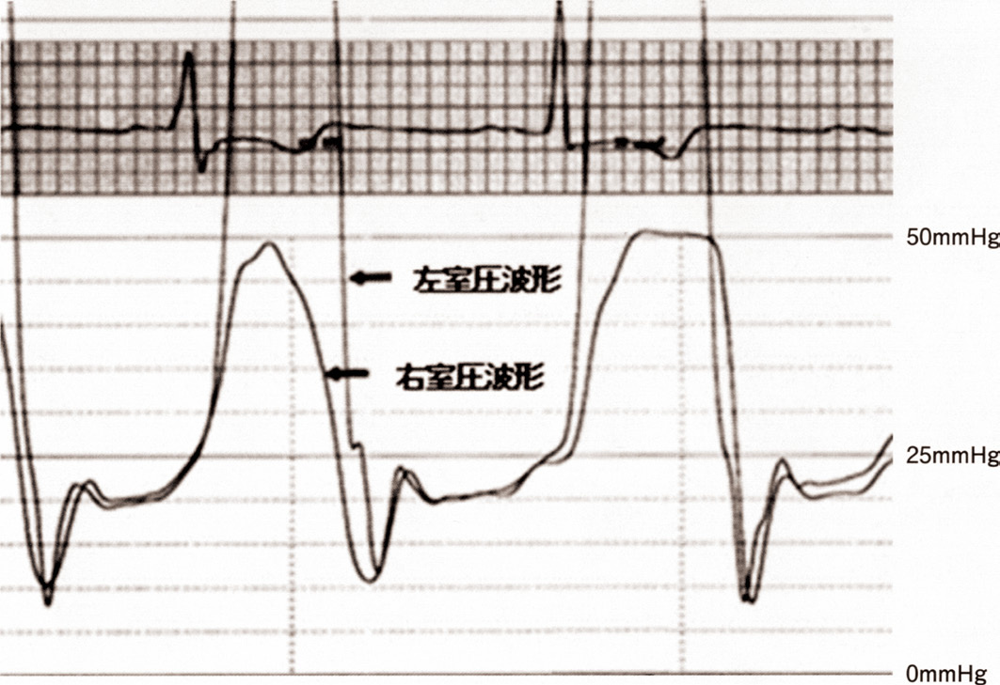
ａ 急性心筋炎
ｂ 収縮性心膜炎
ｃ 肥大型心筋症
ｄ 大動脈弁狭窄症
ｅ 大動脈弁閉鎖不全症
✅
ｂ 収縮性心膜炎
左右心室拡張末期圧が同値かつ低値でへ張り付き（dip and plateau）→収縮性心膜炎の特徴。
❤️ 収縮性心膜炎——「硬い箱に閉じ込められた心臓」
収縮性心膜炎〈constrictive pericarditis〉は、慢性の炎症により心膜が肥厚・線維化・石灰化し、心臓の拡張を機械的に妨げる疾患である。かつては結核性が圧倒的多数を占めたが、現在の先進国では心臓手術後・放射線照射後・特発性（ウイルス性心膜炎の後遺）・膠原病・尿毒症が主体になっている。日本の国試では結核と開心術後の両方が出題される。血行動態の本質は「拡張の制限」である——収縮能（EF）は保たれているのに、心室が広がれないため1回拍出量が増やせない。結果として低心拍出＋全身の静脈うっ血という組み合わせになる。臨床像は右心不全が前面に出るのが特徴で、頸静脈怒張・肝腫大・腹水・下腿浮腫が目立ち、肺うっ血は軽度にとどまることが多い。腹水が浮腫に不釣り合いに多いため、肝硬変と誤診されるのは古典的な落とし穴である。
身体所見の3本柱：
①Kussmaul徴候——吸気時に頸静脈圧が下がらず、むしろ上がる。通常は吸気で胸腔内が陰圧になり静脈還流が増えて頸静脈は虚脱するが、硬い心膜のせいで右心が受け入れられず血液が頸静脈へ逆戻りする
②心膜ノック音〈pericardial knock〉——Ⅱ音の直後（拡張早期）に聞こえる高調な過剰心音。急速流入が突然止まる瞬間の音で、dip and plateauのplateauへ移る瞬間そのものである
③心膜の石灰化——胸部エックス線側面像・CTで心陰影を縁取る石灰化として見える。CTでの心膜厚4mm以上が目安
治療は心膜切除術〈心膜剥離術〉が唯一の根治である。利尿薬は症状を和らげるだけで、β遮断薬やジギタリスはむしろ有害——頻脈は「短い拡張時間でも回数で稼ぐ」という代償なので、これを止めると心拍出量が落ちる。
□ 選択肢の検討
| 選択肢 | 解説 |
|---|---|
| ａ 急性心筋炎 | 波形が合わない。急性心筋炎では心筋の炎症と浮腫により収縮能が低下し、心原性ショックに至れば心拍出量低下・肺動脈楔入圧上昇を示すが、左右心室の拡張末期圧が等値化するという特徴はない——等値化は「心臓の外側から硬い殻で締めつけられている」病態に特有の現象で、心筋そのものの障害では起こりにくい。また心筋炎は先行する感冒様症状・トロポニン上昇・広範なST上昇・房室ブロックで疑う疾患で、心カテ圧波形で診断する疾患ではない。 |
| ◯ ｂ 収縮性心膜炎 | これが正解。提示された左右心室圧波形は、拡張早期に急峻に落ち込み（dip）、直後に急上昇して以後は平坦になる（plateau）というdip and plateau（平方根徴候〈square root sign〉）を示す——さらに左室と右室の拡張末期圧がほぼ同じ高さに揃う（等値化〈equalization〉）のが収縮性心膜炎の決定的所見である。機序は明快で、肥厚・硬化した心膜が心臓全体を1つの硬い箱に閉じ込めるため、①拡張の初期だけは箱の中に余裕があり血液が一気に流れ込む（dip） ②箱の容量限界に達した瞬間に充満が止まる（plateau）となる。左右が同じ箱に入っている以上、両心室の拡張期圧は同じ値に収束する——これが等値化の意味である。 |
| ｃ 肥大型心筋症 | 波形が合わない。肥大型心筋症でも拡張障害は起きるが、その圧波形は拡張期を通じてなだらかに上昇し続けるもので、dip and plateauのような二相性にはならない——硬いのは心筋そのものであって外側の殻ではないため、拡張早期に「一気に入る」相が作れないからである。また閉塞性肥大型心筋症〈HOCM〉では左室内圧較差とBrockenbrough現象（期外収縮後に大動脈圧が逆に低下する）が特徴で、これらは右室圧に反映されない。左右の等値化も起こらない。 |
| ｄ 大動脈弁狭窄症 | 波形が合わない。大動脈弁狭窄症では左室と大動脈の間に収縮期圧較差が生じ、大動脈圧波形が遅く小さい（pulsus parvus et tardus）のが特徴である——これは収縮期の異常であって、本問が示す拡張期の異常とは軸が違う。左室は求心性肥大により拡張末期圧が上がることはあるが、右室の拡張末期圧まで同じ値に揃うことはない。また記録すべきは左室と大動脈の同時圧であり、本問のように左右心室を並べて記録する場面ではない。 |
| ｅ 大動脈弁閉鎖不全症 | 波形が合わない。大動脈弁閉鎖不全症の圧波形の特徴は拡張期に大動脈圧が急峻に低下し、左室圧と交差して等圧化することと、脈圧の増大（Corrigan脈・速脈大脈）である——やはり大動脈と左室の関係を見る病態で、左右心室の関係を問う本問とは異なる。重症例では左室拡張末期圧が著明に上昇して僧帽弁の早期閉鎖を起こすが、右室圧との等値化は起こらない。なお大動脈弁閉鎖不全症は拡張期灌流圧の低下により冠血流が減るため、狭心症様の胸痛を伴いうる点も併せて押さえる。 |
🔍 dip and plateau を読む／収縮性心膜炎 vs 拘束型心筋症 vs 心タンポナーデ
圧波形の読み方——横軸を時間、縦軸を心室内圧とすると、収縮性心膜炎の拡張期は急降下（dip）→ 急上昇 → 水平（plateau）という「√（平方根）」の形を描く。dipが深いのは、心膜に締めつけられて収縮末期容量が小さくなっているところへ、拡張早期に房室弁が開いて一気に血液がなだれ込むため。plateauが平坦なのは、心膜という物理的な壁に当たってそれ以上広がれないためである。| 収縮性心膜炎 | 拘束型心筋症 | 心タンポナーデ | |
|---|---|---|---|
| 硬いのは | 心膜（外側の殻） | 心筋そのもの | 心嚢内の液体が圧迫 |
| 経過 | 慢性 | 慢性 | 急性 |
| dip and plateau | あり（典型的） | あり | なし（拡張期全体が平坦に等圧化） |
| 左右拡張末期圧 | 等値化 | 左室優位（左＞右で5mmHg以上の差） | 等値化（右房・右室・肺動脈楔入圧まで） |
| Kussmaul徴候 | 陽性 | 陽性のことあり | 陰性（むしろ奇脈） |
| 奇脈 | 通常なし | なし | あり（特徴的） |
| 心膜ノック音 | あり | なし（Ⅲ音） | なし（心音減弱） |
| 心膜肥厚・石灰化 | あり | なし | なし |
| BNP | 軽度上昇にとどまる | 著明に上昇 | 軽度 |
| 治療 | 心膜切除術 | 対症・心移植 | 心嚢穿刺・ドレナージ |
なぜ収縮性心膜炎で奇脈が出にくいのか——奇脈は心嚢液が呼吸性に圧を伝えることで生じる。心膜が硬く固まった収縮性心膜炎では胸腔内圧の変動が心腔へ伝わりにくいため、代わりにKussmaul徴候が前面に出る。「タンポナーデ＝奇脈、収縮性心膜炎＝Kussmaul徴候」と対で覚える。
🎯 国試ポイント
① dip and plateau（平方根徴候）＋左右心室拡張末期圧の等値化＝収縮性心膜炎。本問の圧波形はこれ一択。② 硬いのは心膜（外側の殻）。だから左右が同じ箱に入り、拡張末期圧が同じ値に収束する。
③ 収縮能（EF）は保たれ、右心不全（頸静脈怒張・肝腫大・腹水・浮腫）が前面に出る。肺うっ血は軽い。腹水が目立ち肝硬変と誤診されやすい。
④ 3徴＝Kussmaul徴候・心膜ノック音・心膜石灰化。CTで心膜厚4mm以上。
⑤ Kussmaul徴候＝吸気で頸静脈圧が「下がらず上がる」。心タンポナーデでは陰性で、代わりに奇脈が出る。
⑥ 治療は心膜切除術（心膜剥離術）が唯一の根治。β遮断薬・ジギタリスは頻脈という代償を奪うので有害。
⑦ 原因：かつては結核、現在は開心術後・放射線照射後・特発性。
⑧ 拘束型心筋症との鑑別——収縮性心膜炎は心膜肥厚あり・BNPは軽度・心室間相互依存あり・左右等値化、拘束型は心膜正常・BNP著明高値・左室優位。
Q.379(118A-22)📷 画像★正答率 85%
57 歳の男性。発熱を主訴に来院した。2 週間前から38℃前後の発熱と悪寒があり、自宅近くの診療所を受診した。解熱薬が処方されたが、その後も発熱が続き、労作時の息苦しさを自覚するようになったため救急外来へ紹介受診となった。10 年前から糖尿病で内服加療中。約1 か月前からう歯の治療中。アレルギー歴はない。意識は清明。
体温38.2℃。脈拍104/ 分、整。血圧136/82mmHg。呼吸数26/ 分。SpO2 94％（room air）。心尖部を最強点とするLevine 3/6 の汎〈全〉収縮期雑音を聴取する。呼吸音に異常を認めない。腹部は平坦、軟で、肝・脾を触知しない。下肢に浮腫を認める。右手掌に有痛性皮疹を認めた。血液所見：赤血球478 万、Hb 14.0g/dL、Ht 41％、白血球13,400、血小板15 万。血液生化学所見：尿素窒素32mg/dL、クレアチニン1.3mg/dL、血糖175mg/dL、HbA1c 8.1％（基準4.9 ～6.0）、Na 134mEq/L、K 4.2mEq/L。CRP 12mg/dL。胸部エックス線写真で心胸郭比は56％であり、肺血管陰影の増強を認める。心電図は洞性頻脈。心エコー図傍胸骨長軸像（A）とカラードプラ心エコー図傍胸骨長軸像（B）を示す。血液培養2 セットからともに緑色連鎖球菌〈viridans streptococci〉が検出された。
薬剤感受性試験結果を待つ間に投与する抗菌薬で適切なのはどれか。
体温38.2℃。脈拍104/ 分、整。血圧136/82mmHg。呼吸数26/ 分。SpO2 94％（room air）。心尖部を最強点とするLevine 3/6 の汎〈全〉収縮期雑音を聴取する。呼吸音に異常を認めない。腹部は平坦、軟で、肝・脾を触知しない。下肢に浮腫を認める。右手掌に有痛性皮疹を認めた。血液所見：赤血球478 万、Hb 14.0g/dL、Ht 41％、白血球13,400、血小板15 万。血液生化学所見：尿素窒素32mg/dL、クレアチニン1.3mg/dL、血糖175mg/dL、HbA1c 8.1％（基準4.9 ～6.0）、Na 134mEq/L、K 4.2mEq/L。CRP 12mg/dL。胸部エックス線写真で心胸郭比は56％であり、肺血管陰影の増強を認める。心電図は洞性頻脈。心エコー図傍胸骨長軸像（A）とカラードプラ心エコー図傍胸骨長軸像（B）を示す。血液培養2 セットからともに緑色連鎖球菌〈viridans streptococci〉が検出された。
薬剤感受性試験結果を待つ間に投与する抗菌薬で適切なのはどれか。
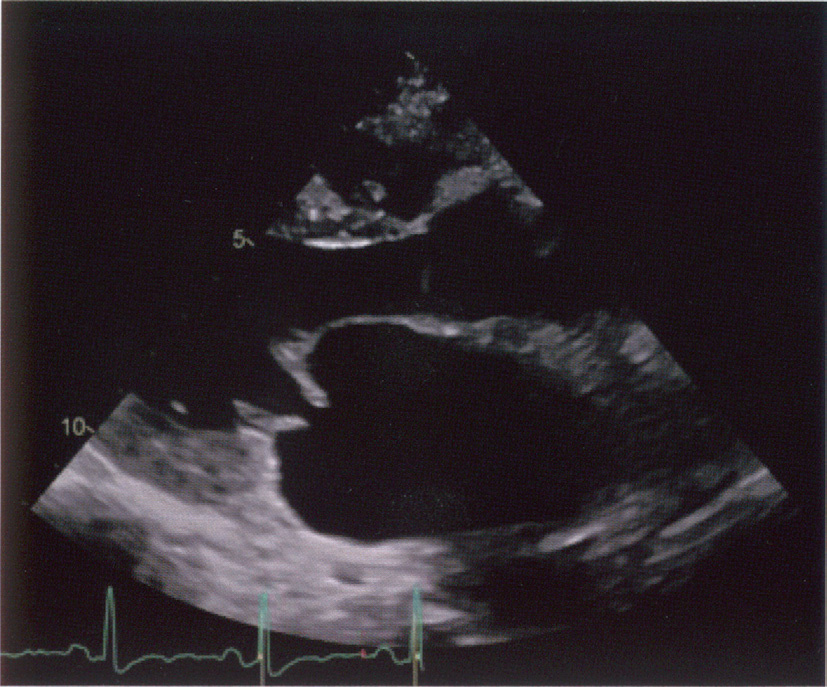
ａ ミノサイクリン
ｂ リファンピシン
ｃ レボフロキサシン
ｄ クラリスロマイシン
ｅ ベンジルペニシリン
✅
ｅ ベンジルペニシリン
発熱+血液培養グラム陽性球菌陽性→亜急性・急性IEを疑う。
❤️ IEの抗菌薬治療——「殺菌的・高用量・長期・静注」の4原則
本例は①う歯の治療中（1か月前から） ②2週間続く発熱 ③Levine 3/6の汎収縮期雑音（僧帽弁閉鎖不全） ④右手掌の有痛性皮疹 ⑤心胸郭比56%と肺血管陰影増強（心不全） ⑥血液培養2セットから緑色連鎖球菌という、亜急性IEに急性の心不全が加わった状況である。糖尿病（HbA1c 8.1%）という易感染性の背景も揃っている。なぜIEの治療はこれほど過酷なのか——疣贅はフィブリンと血小板でできた無血管の塊で、その内部の菌密度は1gあたり10の9〜10乗にも達し、しかも代謝が停止した休止期の菌が多い。この環境では①好中球が入れない ②抗菌薬の移行が悪い ③分裂していない菌には細胞壁合成阻害薬が効きにくいという三重の壁がある。だから殺菌的な薬を・血中濃度が十分上がる高用量で・4〜6週という長期間・確実な血中濃度が得られる静注で投与する。経口薬への安易な切り替えは再発を招く。
起炎菌別の標準治療（自己弁）：
緑色連鎖球菌（ペニシリン感受性）——ペニシリンG 4週、またはペニシリンG＋ゲンタマイシン2週。セフトリアキソン4週も可
腸球菌——アンピシリン＋ゲンタマイシン（あるいはアンピシリン＋セフトリアキソン）。単剤では殺菌できない
メチシリン感性黄色ブドウ球菌〈MSSA〉——セファゾリンまたはナフシリン系。バンコマイシンはMSSAに対してβラクタムより劣るので、感性が判明したら必ず切り替える
MRSA——バンコマイシン（またはダプトマイシン）
人工弁——上記にリファンピシンを加え、期間も6週以上に延ばす
外科的治療の適応も同時に評価し続ける——①内科的に制御できない心不全（最多かつ最重要） ②制御できない感染（弁輪部膿瘍・持続菌血症・真菌性） ③塞栓症の再発、または10mmを超える可動性疣贅。本例は心胸郭比56%・肺血管陰影増強・SpO2 94%と心不全の兆しがあるので、抗菌薬を始めたうえで手術のタイミングを常に検討する局面である。
□ 選択肢の検討
| 選択肢 | 解説 |
|---|---|
| ａ ミノサイクリン | 不適。ミノサイクリンはテトラサイクリン系で静菌的に働く薬である——感染性心内膜炎の治療は殺菌的な薬を、高用量で、長期間（4〜6週）静注するのが大原則で、その理由は疣贅の内部が無血管のフィブリン塊であり、好中球も薬も届きにくい「聖域」だからである。静菌薬では菌を減らしきれず、治療終了後に必ず再燃する。ミノサイクリンが主役になるのはリケッチア・マイコプラズマ・クラミジア・ライム病などであってIEではない。 |
| ｂ リファンピシン | 単剤では使えない。リファンピシンはバイオフィルム内の菌にも到達するという優れた性質を持ち、人工弁心内膜炎ではバンコマイシンやβラクタムとの併用で用いられる重要薬である——しかし単剤では速やかに耐性が生じるため、決して単独では使わない。本例は自己弁で起炎菌が緑色連鎖球菌と判明しており、リファンピシンを加える理由がない。また肝代謝酵素CYP3A4を強力に誘導し、ワルファリン・DOAC・免疫抑制薬などの血中濃度を大きく下げる点も実務上の注意である。 |
| ｃ レボフロキサシン | 不適。レボフロキサシンはニューキノロン系で殺菌的ではあるが、連鎖球菌に対する活性は不十分で、IEの標準治療に位置づけられていない——キノロンはグラム陰性桿菌・非定型病原体・尿路感染で真価を発揮する薬である。さらに大動脈解離・大動脈瘤のリスク上昇、腱障害、QT延長、大腸菌などでの耐性化の速さから、安易な使用が戒められている薬でもある。「広域だからとりあえずキノロン」という選択は現代の抗菌薬適正使用の考え方に反する。 |
| ｄ クラリスロマイシン | 不適。クラリスロマイシンはマクロライド系で静菌的であり、選択肢aと同じ理由でIEには使えない——加えて肺炎球菌や連鎖球菌のマクロライド耐性率は日本で非常に高く、経験的治療としても信頼できない。マクロライドの出番はマイコプラズマ・レジオネラ・百日咳・非結核性抗酸菌などで、心内膜炎ではない。なおCYP3A4阻害とQT延長により相互作用が多い点も併せて押さえる。 |
| ◯ ｅ ベンジルペニシリン | これが正解。血液培養2セットから緑色連鎖球菌〈viridans streptococci〉が検出された自己弁IEでは、ベンジルペニシリン〈ペニシリンG〉の大量静注が第一選択である——緑色連鎖球菌はペニシリン感受性が高い（MIC 0.125μg/mL以下が多い）ため、βラクタムで確実に殺菌できる。標準はペニシリンGを4週間静注、あるいはゲンタマイシンを併用して2週間に短縮する方式である。ゲンタマイシンの併用は細胞壁合成阻害によりアミノグリコシドの菌体内移行が高まる（相乗効果）ことを利用している。薬剤感受性試験の結果が出るまでの間も、菌名が分かった時点で最も確からしい薬に絞る（de-escalation）のが正しい——広域のまま漫然と続けない。ペニシリンアレルギーがある場合はセフトリアキソン、重篤なアレルギーならバンコマイシンを用いる。 |
🔍 殺菌性と静菌性／IEの予防はいま誰に行うか
| 殺菌的〈bactericidal〉 | 静菌的〈bacteriostatic〉 | |
|---|---|---|
| 代表 | βラクタム（ペニシリン・セフェム・カルバペネム）、アミノグリコシド、キノロン、バンコマイシン、ダプトマイシン、メトロニダゾール | マクロライド、テトラサイクリン、クリンダマイシン、リネゾリド、スルファメトキサゾール・トリメトプリム、クロラムフェニコール |
| 作用 | 菌を殺す | 増殖を止め、あとは宿主免疫に任せる |
| 必ず殺菌薬が要る場面 | 感染性心内膜炎・髄膜炎・好中球減少時の感染・骨髄炎——いずれも「免疫が届かない場所」または「免疫がない宿主」 | |
IEの予防投与は「誰に」「何に」対して行うかは近年大きく絞り込まれた：
対象となる高リスク患者——①人工弁または弁修復に人工材料を使用 ②IEの既往 ③未修復のチアノーゼ性先天性心疾患、修復後6か月以内、あるいは修復材料の近傍に遺残短絡がある ④心移植後の弁症
対象となる処置——歯肉・歯根尖周囲の操作、あるいは口腔粘膜を穿破する歯科処置。アモキシシリンを処置1時間前に単回経口（ペニシリンアレルギーならクリンダマイシンなど）
もはや予防投与を行わないもの——消化管・泌尿生殖器の内視鏡や処置（感染がない限り）、僧帽弁逸脱、二尖弁、肥大型心筋症、ペースメーカ植込み後。以前は広く行われていたが、日常の咀嚼や歯磨きによる菌血症の方が累積量ははるかに多いことが分かり、範囲が縮小した。だから最も有効な予防は日常の口腔衛生管理である——本例のようにう歯を放置しないことが本質的な予防になる。
治療効果の判定——血液培養の陰性化（治療開始後48〜72時間で再検）・解熱・CRPの低下・心エコーでの疣贅縮小。治療中に発熱が続くなら、弁輪部膿瘍・塞栓性膿瘍（脾・腎・脳）・薬剤熱・カテーテル感染を疑って再評価する。
IEにおける抗凝固療法の扱いも整理しておく——IEそのものに対して抗凝固薬を新規に開始することはない（疣贅は血栓ではなく菌塊であり、抗凝固で塞栓は減らず頭蓋内出血だけが増える）。機械弁などもともと抗凝固の適応がある患者では継続を検討するが、脳出血や感染性動脈瘤を合併したら直ちに中止する。アスピリンの追加投与も塞栓予防効果が示されず、出血を増やすため推奨されない。右心系IEは静注薬物使用者・長期留置カテーテル・ペースメーカリードに伴い、三尖弁に生じる。敗血症性肺塞栓による多発結節影・空洞影が特徴で、左心系と違って全身塞栓を起こさないため予後は比較的良い。
🎯 国試ポイント
① 緑色連鎖球菌による自己弁IE＝ペニシリンG大量静注（4週）。ゲンタマイシン併用なら2週へ短縮可。② IE治療の4原則＝殺菌的・高用量・長期（4〜6週）・静注。疣贅内部は無血管で好中球も薬も届きにくいため。
③ 静菌薬（マクロライド・テトラサイクリン・クリンダマイシン）はIEに使わない。ミノサイクリン・クラリスロマイシンが切れる理由はこれ一つ。
④ リファンピシンは人工弁IEでの併用薬。バイオフィルムに届くが単剤では耐性化するので単独使用しない。
⑤ MSSAにはセファゾリン（βラクタム）。バンコマイシンはMSSAではβラクタムに劣る。
⑥ 腸球菌IEはアンピシリン＋ゲンタマイシンの併用が必要。
⑦ 手術適応の3本柱＝制御できない心不全・制御できない感染・塞栓症（再発または10mm超の可動性疣贅）。最多は心不全。
⑧ IE予防投与は高リスク患者（人工弁・IE既往・チアノーゼ性先天性心疾患・心移植後弁症）の歯科処置のみ。アモキシシリン単回。消化管・泌尿器処置では行わない。
⑨ 最良の予防は日常の口腔衛生。う歯の放置がIEの入り口になる。
⑩ 治療中に発熱が続くときは弁輪部膿瘍・転移性膿瘍・薬剤熱を疑う。
Q.380(117A-60)★📷 画像正答率 84%
67 歳の女性。倦怠感を主訴に来院した。約1 か月前から疲れやすくなり、症状が改善しないため受診した。意識は清明。身長149cm、体重45kg。脈拍72/ 分、整。血圧144/88mmHg。心尖部にLevine 3/6 の拡張期雑音を聴取し、
心雑音の強さは体位で変化した。呼吸音に異常を認めない。心エコー検査で左室駆出率は正常範囲であったが、左房内に可動性のある腫瘤を認め、拡張期には腫瘤が僧帽弁口を塞ぐような所見を認めた。胸部造影CT（A）を示す。
入院後、腫瘤摘除術が施行された。術中の写真（B）を示す。
この患者の入院時に認められる所見で可能性が低いのはどれか。
心雑音の強さは体位で変化した。呼吸音に異常を認めない。心エコー検査で左室駆出率は正常範囲であったが、左房内に可動性のある腫瘤を認め、拡張期には腫瘤が僧帽弁口を塞ぐような所見を認めた。胸部造影CT（A）を示す。
入院後、腫瘤摘除術が施行された。術中の写真（B）を示す。
この患者の入院時に認められる所見で可能性が低いのはどれか。


ａ 発 熱
ｂ 息切れ
ｃ 関節痛
ｄ 体重減少
ｅ 頸静脈の虚脱
✅
ｅ 頸静脈の虚脱
左房粘液腫：発熱・息切れ・関節痛・体重減少はあり得るが、頸静脈虚脱（低CVP）は粘液腫で起こらない。
❤️ 心臓粘液腫——最も多い原発性心臓腫瘍
心臓の腫瘍は転移性の方が原発性より20〜40倍多い。原発性心臓腫瘍のうち約半数が良性の粘液腫〈myxoma〉で、成人の原発性心臓腫瘍として最多である。粘液腫の75〜80%は左房に、15〜20%は右房に生じ、多くは心房中隔の卵円窩付近に茎を持って付着する。好発は30〜60歳の女性で、約7%はCarney複合（PRKAR1A遺伝子変異・常染色体顕性遺伝）に伴う家族性である——この型は若年発症・多発・再発しやすく、皮膚の色素斑や内分泌腫瘍を伴う。3つの症状群で覚えるのが定石である：
①閉塞症状——左房粘液腫が拡張期に僧帽弁口を塞ぎ、僧帽弁狭窄症と同じ血行動態を作る。労作時呼吸困難・起座呼吸・肺うっ血・失神。体位により症状と雑音が変化するのが最大の特徴で、完全に弁口を塞げば突然死もありうる
②塞栓症状——腫瘍片や表面の血栓が飛ぶ。左房由来なら脳梗塞・腎梗塞・腸間膜動脈閉塞・四肢動脈閉塞。若年者の原因不明の脳梗塞を見たら粘液腫を鑑別に入れる
③全身症状——IL-6産生による発熱・体重減少・倦怠感・関節痛・貧血・赤沈亢進・CRP上昇・高γグロブリン血症。感染性心内膜炎や膠原病と誤られる
聴診所見：tumor plop（腫瘍脱出音）——Ⅱ音の直後に聞こえる低調な過剰音で、腫瘤が僧帽弁口に落ち込んで止まる音。僧帽弁開放音〈opening snap〉より遅いタイミングで、拡張期ランブルを伴う。僧帽弁狭窄症との決定的な違いは「体位で変わる」ことである。
診断は心エコー（経胸壁で十分なことが多く、付着部位と可動性を評価するには経食道が優れる）。治療は速やかな外科的摘除——塞栓と突然死の危険があるため待機しない。術後の予後は良好だが、Carney複合では再発率が高く長期の経過観察が要る。
□ 選択肢の検討
| 選択肢 | 解説 |
|---|---|
| ａ 発 熱 | 起こりうる。心臓粘液腫はインターロイキン6〈IL-6〉を産生するため、発熱・赤沈亢進・CRP上昇・高γグロブリン血症・貧血という全身の炎症像を呈する——この「腫瘍なのに炎症の顔をしている」性質のせいで、感染性心内膜炎・膠原病・悪性腫瘍と誤診されやすい。本例も1か月続く倦怠感という非特異的な訴えで来院しており、発熱があっても何ら矛盾しない。 |
| ｂ 息切れ | 起こりうる。左房粘液腫は茎で心房中隔（卵円窩付近）に付着し、拡張期に僧帽弁口へ落ち込んで血流を妨げる——つまり僧帽弁狭窄症と同じ血行動態を作るので、労作時呼吸困難・息切れ・起座呼吸・肺うっ血が出る。本例では拡張期雑音が体位で変化すると記載されており、これは腫瘤が重力で動くため閉塞の程度が姿勢で変わることを意味する——粘液腫を強く示唆する所見である。器質的な僧帽弁狭窄症では雑音は体位で変わらない。 |
| ｃ 関節痛 | 起こりうる。粘液腫の全身症状はIL-6を介した炎症で説明され、関節痛・筋肉痛・Raynaud現象・皮疹といった膠原病様の訴えが出る——実際に抗核抗体やリウマトイド因子が偽陽性になることもあり、膠原病として治療されかけた症例が報告されている。重要なのは腫瘍を摘出するとこれらの症状と検査異常がすべて消えることで、これが粘液腫由来であることの証明になる。 |
| ｄ 体重減少 | 起こりうる。体重減少はIL-6による慢性炎症・食欲低下・心不全による悪液質のいずれからも生じる——「発熱・体重減少・貧血・赤沈亢進」という組み合わせは不明熱の三大原因（感染症・悪性腫瘍・膠原病）を想起させるが、心臓粘液腫はそのどれでもない第4の答えとして国試で問われる。本例で心エコーが決め手になったように、不明熱の精査に心エコーを入れることの意義はここにある。 |
| ◯ ｅ 頸静脈の虚脱 | これが正解＝可能性が低い。頸静脈の「虚脱」は中心静脈圧が低いことを意味する——脱水・出血・血液分布異常性ショックなどで見られる所見である。左房粘液腫では僧帽弁口の閉塞により左房圧が上がり、肺静脈圧・肺動脈圧を経て最終的には右心系にも負荷がかかるため、頸静脈圧は正常か、むしろ上昇する——つまり血行動態の向きが真逆である。本例は血圧144/88mmHgと保たれ、脱水を疑う所見もない。なお右房粘液腫なら三尖弁口の閉塞により頸静脈怒張・肝腫大・腹水が前面に出るが、いずれにせよ「虚脱」にはならない。 |
🔍 頸静脈の見方——怒張と虚脱はどちらが何を意味するか
| 頸静脈怒張（CVP上昇） | 頸静脈虚脱（CVP低下） | |
|---|---|---|
| 意味 | 右心系に血液が滞っている | 循環血液量が足りない／血管が開いている |
| 代表疾患 | 右心不全、心タンポナーデ、収縮性心膜炎、緊張性気胸、肺塞栓症、三尖弁閉鎖不全、上大静脈症候群 | 出血性ショック、脱水、敗血症性ショックの初期、アナフィラキシー |
| ショックの型 | 閉塞性・心原性 | 循環血液量減少性・血液分布異常性 |
頸静脈波形の読みも併せて整理する：a波＝右房収縮（三尖弁狭窄・肺高血圧で増大、心房細動で消失）／巨大a波〈cannon a wave〉＝閉じた三尖弁に右房が収縮するとき（完全房室ブロック・心室頻拍・房室解離）／v波＝右房充満（三尖弁閉鎖不全で増大）／y谷の急峻な下降＝収縮性心膜炎（拡張早期の急速流入＝dipに対応）／y谷の消失＝心タンポナーデ。収縮性心膜炎では拡張早期に一気に流入できるのでy谷が深く、タンポナーデでは全拡張期にわたって圧迫されているのでy谷が消える——圧波形の理解とそのまま対応する。
本例の術中写真（B）が示すのはゼラチン様・多分葉状の柔らかい腫瘤で、粘液腫の肉眼像そのものである。この脆さが塞栓を起こしやすい理由で、造影CT（A）で左房内の充満欠損として描出される。
心臓腫瘍の全体像を数字で押さえる——転移性が原発性の20〜40倍。転移の由来は肺癌・乳癌・悪性黒色腫・悪性リンパ腫・白血病が多く、心膜への転移が最多で、癌性心膜炎から心タンポナーデを起こす（Q.417がこの病態）。原発性の良性：粘液腫（最多）・乳頭状線維弾性腫（弁に付着し塞栓源になる）・横紋筋腫（結節性硬化症に伴い小児で最多・自然退縮する）・線維腫・脂肪腫。原発性の悪性：血管肉腫が最多（右房に好発）、横紋筋肉腫、悪性リンパ腫。5年生存率は10〜20%程度と極めて不良で、これがQ.391の正解の根拠になる。粘液腫と血栓の鑑別——左房内の腫瘤を見たとき、心房細動があり左心耳に固着していれば血栓、洞調律で心房中隔に茎を持ち可動性があれば粘液腫。造影CT/MRIでは粘液腫は造影効果を持つのに対し血栓は染まらない。
🎯 国試ポイント
① 左房粘液腫の3症状群＝閉塞・塞栓・全身症状（IL-6）。本問は「全身症状はすべてあり得る」ことを問うている。② 頸静脈の「虚脱」は循環血液量減少を意味する。左房粘液腫は左房圧上昇→肺高血圧→右心負荷の向きなので、虚脱は起こらない＝正解。
③ 粘液腫はIL-6を産生し、発熱・体重減少・貧血・赤沈亢進・高γグロブリン血症をきたす。感染性心内膜炎や膠原病と誤診されやすい。
④ 成人の原発性心臓腫瘍で最多は粘液腫。ただし転移性の方が原発性より20〜40倍多い（Q.391で問われる）。
⑤ 75〜80%が左房・心房中隔の卵円窩に茎を持って付着。
⑥ 雑音と症状が体位で変わるのが器質的僧帽弁狭窄症との決定的な違い。tumor plopはⅡ音直後の低調な過剰音で、opening snapより遅い。
⑦ 若年者の原因不明の脳梗塞では粘液腫を鑑別に入れる。
⑧ 治療は速やかな外科的摘除。突然死と塞栓の危険があるので待機しない。
⑨ Carney複合（PRKAR1A変異）では若年発症・多発・再発。皮膚色素斑と内分泌腫瘍を伴う。
⑩ 原発性悪性心臓腫瘍の最多は血管肉腫（右房好発）で予後は極めて不良。
⑪ 小児の心臓腫瘍で最多は横紋筋腫——結節性硬化症に伴い、自然退縮する。
⑫ 転移性心臓腫瘍は心膜に最も多く、癌性心膜炎から心タンポナーデを起こす。
⑬ 左房内腫瘤の鑑別——心房細動＋左心耳固着＝血栓／洞調律＋心房中隔に茎＋可動性＋造影効果あり＝粘液腫。
Q.381(117B-6)★正答率 93%
感染性心内膜炎を示唆する皮膚所見はどれか。
ａ Roth 斑
ｂ 輪状紅斑
ｃ Koplik 斑
ｄ Osler 結節
ｅ 遊走性紅斑
✅
ｄ Osler結節
Osler結節はIEに特異性の高い有痛性の皮膚結節（指趾の腹側）。
❤️ 感染性心内膜炎の末梢徴候——「どこに・痛いか・機序は何か」で整理する
IEの末梢徴候は2つの機序に分かれる。この分類さえ押さえれば、名前と部位と痛みの有無が自動的に決まる：①免疫複合体による血管炎（亜急性型で多い＝時間がかかる）——Osler結節・Roth斑・糸球体腎炎・リウマトイド因子陽性・低補体血症
②敗血症性の微小塞栓（急性型で多い＝菌塊が飛ぶ）——Janeway病変・爪下線状出血・脳梗塞・脾梗塞・腎梗塞・感染性動脈瘤
Duke基準では①が「免疫学的現象」、②が「血管現象」として別々の小基準に置かれている——分類そのものが診断基準に組み込まれている。
Osler結節の詳細：部位＝手指・足趾の腹側（指腹・母指球）／性状＝数mm大の隆起した紅色〜紫色の結節／特徴＝有痛性・圧痛あり／経過＝数時間〜数日で自然に消える／頻度＝IEの10〜25%程度で、感度は高くないが特異度が高い。つまり「あればIEを強く支持するが、なくても否定できない」タイプの所見である。
爪下線状出血〈splinter hemorrhage〉は爪床に走る細い線状の暗赤色出血で、爪の遠位端にあるものは外傷性が多く、近位側にあるものが病的とされる。IE以外に血管炎・抗リン脂質抗体症候群・外傷でも見られる。
本例のような一行問題（正答率93%）で問われているのは「知識の索引が引けるか」だけである——Roth斑（眼底）・Osler結節（指腹・有痛）・Janeway病変（手掌足底・無痛）という3つを、部位と痛みの有無という2軸で即座に引き出せるようにしておく。
□ 選択肢の検討
| 選択肢 | 解説 |
|---|---|
| ａ Roth 斑 | 皮膚所見ではない。Roth斑は眼底に見られる白色の中心を持つ網膜出血斑で、感染性心内膜炎の免疫学的現象としてDuke小基準に含まれる重要な所見である——しかし本問が問うているのは皮膚所見であり、眼底所見であるRoth斑は答えにならない。白色中心の正体はフィブリン・血小板血栓と炎症細胞の集簇で、IE以外にも白血病・重症貧血・糖尿病網膜症・膠原病で見られ、IEに特異的ではない。「Roth斑＝眼底、Osler結節とJaneway病変＝皮膚」という部位の切り分けが本問の鍵である。 |
| ｂ 輪状紅斑 | 別疾患の所見。輪状紅斑〈erythema marginatum〉はリウマチ熱のJones基準の大基準に含まれる皮疹で、体幹や四肢近位に出る、中心が退色した環状・地図状の淡い紅斑である——A群β溶血性連鎖球菌感染の後（2〜4週後）に生じる自己免疫性の全身疾患であり、菌が心内膜に直接住みつく感染性心内膜炎とは成り立ちがまったく違う。リウマチ熱のJones基準の大基準は心炎・多発関節炎・舞踏病〈Sydenham舞踏病〉・輪状紅斑・皮下結節の5つ。この皮下結節（無痛性・伸側の骨突出部）とOsler結節（有痛性・指趾の腹側）を混同しないこと。 |
| ｃ Koplik 斑 | 別疾患の所見。Koplik斑は麻疹に特徴的な所見で、臼歯対面の頬粘膜に出る紅暈を伴う白色の小斑点である——皮膚ではなく口腔粘膜の所見で、発疹出現の1〜2日前（カタル期の終わり）に現れて発疹が出ると消えるという時間的特徴を持つ。つまり発疹が出る前に麻疹と診断できる唯一の所見であり、感染力が最も強いカタル期の隔離判断に直結する。感染性心内膜炎とは無関係。 |
| ◯ ｄ Osler 結節 | これが正解。Osler結節は手指・足趾の腹側（指腹）に生じる数mm大の有痛性・圧痛を伴う紅色〜紫紅色の結節で、感染性心内膜炎の免疫学的現象としてDuke小基準に含まれる——機序は免疫複合体の沈着による小血管炎と考えられ、亜急性型（緑色連鎖球菌）で多い。数日で消退し、菌は通常培養されないのも免疫学的機序を支持する。対になるJaneway病変は手掌・足底の無痛性紅斑で、こちらは敗血症性微小塞栓という別の機序（急性型・黄色ブドウ球菌で多い）である。Osler＝Ouch（痛い）・指の腹／Janeway＝無痛・手のひらと対で覚える。 |
| ｅ 遊走性紅斑 | 別疾患の所見。遊走性紅斑〈erythema migrans〉はLyme病（ライム病）の初期に、マダニ刺咬部を中心に同心円状（標的状）に拡大する紅斑である——病原体はBorrelia burgdorferiなどのスピロヘータで、マダニ（Ixodes属）が媒介する。日本では北海道・本州中部の山間部で報告がある。未治療で進行すると髄膜炎・顔面神経麻痺・房室ブロック（Lyme心炎）・関節炎をきたす。治療はドキシサイクリンまたはアモキシシリン。なお「遊走性」という語がつく紅斑には壊死性遊走性紅斑（グルカゴノーマ）もあり、こちらは糖尿病・体重減少・貧血を伴う——名前が似ているので併せて整理しておく。 |
🔍 紛らわしい「〜斑・〜結節・〜紅斑」を疾患ごとに束ねる
| 所見 | 疾患 | 部位・特徴 |
|---|---|---|
| Osler結節 | 感染性心内膜炎 | 指趾の腹側・有痛性・免疫複合体性 |
| Janeway病変 | 感染性心内膜炎 | 手掌・足底・無痛性・敗血症性塞栓 |
| Roth斑 | 感染性心内膜炎 | 眼底の白色中心を持つ出血斑 |
| 輪状紅斑 | リウマチ熱 | 体幹・四肢近位の環状で中心が退色した紅斑 |
| 皮下結節 | リウマチ熱／関節リウマチ | 肘頭など伸側の骨突出部・無痛性 |
| Koplik斑 | 麻疹 | 頬粘膜の白色小斑点・発疹前に出現して発疹後に消える |
| 遊走性紅斑 | Lyme病 | マダニ刺咬部から同心円状に拡大 |
| 壊死性遊走性紅斑 | グルカゴノーマ | 間擦部・口囲。糖尿病・体重減少を伴う |
| 結節性紅斑 | サルコイドーシス・Behcet病・溶連菌感染後・炎症性腸疾患 | 下腿伸側の有痛性皮下結節 |
| 蝶形紅斑 | 全身性エリテマトーデス | 両頬と鼻背・鼻唇溝を避ける |
| ヘリオトロープ疹 | 皮膚筋炎 | 上眼瞼の浮腫性紫紅色斑 |
Q.436（101A-19）との対比——同じ第6章に「IEの患者でみられないのはどれか」で蝶形紅斑を切らせる設問がある。蝶形紅斑はSLE、Osler結節はIEという対応を、皮疹の名前から即座に引けるかが問われている。またQ.439（100F-23）では黄色腫（家族性高コレステロール血症の所見）がIEの所見でないものとして問われる——「IEらしい皮膚所見」を1つ選ぶ本問と、「IEらしくないもの」を1つ選ぶ設問は表裏の関係にあり、同じ知識で両方に答えられる。
皮膚所見から全身疾患を読む発想は循環器でも繰り返し問われる——手掌・足底に出る所見：Janeway病変（IE）・二期梅毒の梅毒性バラ疹（手掌足底に及ぶ点が特徴的）・手足口病・Kawasaki病の膜様落屑。指趾に出る所見：Osler結節（IE）・ばち指（チアノーゼ性先天性心疾患・IE・肺疾患）・爪下線状出血・レイノー現象（膠原病）。Kawasaki病は小児の後天性心疾患の最大原因で、冠動脈瘤を残すと後年の虚血性心疾患につながる。主要6症状＝発熱・両側眼球結膜充血・口唇口腔所見（いちご舌）・発疹・四肢末端の変化（硬性浮腫と膜様落屑）・非化膿性頸部リンパ節腫脹。皮膚は「見える臓器」である——本問のように一行で問われる知識も、実際の症例では診断への最短経路になる。
🎯 国試ポイント
① Osler結節＝IEの皮膚所見。指趾の腹側・有痛性・免疫複合体性。本問の正解。② Janeway病変＝手掌足底・無痛性・敗血症性微小塞栓。Oslerと入れ替えて出題される最頻ペア。Osler＝Ouch（痛い）で覚える。
③ Roth斑は眼底所見。皮膚所見を問われたら答えにならない。
④ Duke小基準は「血管現象（塞栓由来）」と「免疫学的現象（免疫複合体由来）」に分かれる。Janeway＝血管現象、Osler・Roth斑・糸球体腎炎＝免疫学的現象。
⑤ 輪状紅斑＝リウマチ熱（Jones大基準：心炎・多発関節炎・舞踏病・輪状紅斑・皮下結節）。リウマチ熱の皮下結節は伸側・無痛性でOsler結節と正反対。
⑥ Koplik斑＝麻疹の頬粘膜。発疹出現前に現れ、発疹が出ると消える。
⑦ 遊走性紅斑＝Lyme病（マダニ媒介・Borrelia）。進行すると房室ブロック（Lyme心炎）・顔面神経麻痺。
⑧ 蝶形紅斑＝SLE。IEの所見ではない（Q.436で問われる）。
Q.382(117C-66)📷 画像★正答率 81%
連問 1/352 歳の女性。意識障害のため救急車で搬入された。
現病歴：5 日前から38℃を超える発熱と悪寒戦慄を訴え、市販のアセトアミノフェンを内服していた。本日夕食中に
急に頭痛とふらつき感を訴え、嘔吐した。その後いびきをかいて眠りだし、呼びかけに応答しなくなったため、家
族が救急車を要請した。
既往歴：アトピー性皮膚炎で副腎皮質ステロイド外用薬を処方されている。健診で異常を指摘されたことはない。
生活歴：夫と2 人の息子との4 人暮らし。仕事は事務職。喫煙歴はない。飲酒はビール350mL/ 日。
家族歴：両親とも胃癌で死亡。
現 症：意識レベルはJCSⅢ-200。身長158cm、体重60kg。体温37.8℃。心拍数120/ 分、整。血圧200/104mmHg。
呼吸数16/ 分。SpO2 100％（リザーバー付マスク10L/ 分酸素投与下）。救急隊により経鼻エアウェイが挿入され
ている。瞳孔径は右5.0mm、左3.0mm。対光反射は両側で消失している。心尖部を最強点とするLevine 3/6 の収
縮期逆流性雑音を聴取する。上気道にいびき音を聴取する。腹部は平坦、軟で、肝・脾を触知しない。下腿に浮腫
を認めない。両側足趾先端に点状出血斑を合計3 ヶ所認める。頸部周囲と両肘内側に鱗屑、紅斑および苔癬化を認
め、一部浸出液がみられる。
検査所見：尿所見：淡黄褐色透明、蛋白（－）、糖（－）、潜血（－）。血液所見：赤血球450 万、Hb 13.3g/dL、Ht
42％、白血球11,200（桿状核好中球13％、分葉核好中球53％、好酸球8％、好塩基球1％、単球3％、リンパ球
23％）、血小板32 万、PT-INR 1.2（基準0.9 ～1.1）。血液生化学所見：総蛋白6.9g/dL、アルブミン4.2g/dL、総
ビリルビン0.6mg/dL、直接ビリルビン0.1mg/dL、AST 30U/L、ALT 13U/L、LD 220U/L（基準120 ～245）、
ALP 83U/L（基準38 ～113）、γ-GT 13U/L（基準8 ～50）、尿素窒素13mg/dL、クレアチニン0.47mg/dL、血
糖204mg/dL、Na 142mEq/L、K 3.5mEq/L、Cl 105mEq/L。CRP 10mg/dL。心電図は洞性頻脈でST-T 変化を認
めない。胸部エックス線写真で心胸郭比57％（臥位で撮影）。搬入直後の頭部単純CT を示す。
直ちに行うべき処置はどれか。
現病歴：5 日前から38℃を超える発熱と悪寒戦慄を訴え、市販のアセトアミノフェンを内服していた。本日夕食中に
急に頭痛とふらつき感を訴え、嘔吐した。その後いびきをかいて眠りだし、呼びかけに応答しなくなったため、家
族が救急車を要請した。
既往歴：アトピー性皮膚炎で副腎皮質ステロイド外用薬を処方されている。健診で異常を指摘されたことはない。
生活歴：夫と2 人の息子との4 人暮らし。仕事は事務職。喫煙歴はない。飲酒はビール350mL/ 日。
家族歴：両親とも胃癌で死亡。
現 症：意識レベルはJCSⅢ-200。身長158cm、体重60kg。体温37.8℃。心拍数120/ 分、整。血圧200/104mmHg。
呼吸数16/ 分。SpO2 100％（リザーバー付マスク10L/ 分酸素投与下）。救急隊により経鼻エアウェイが挿入され
ている。瞳孔径は右5.0mm、左3.0mm。対光反射は両側で消失している。心尖部を最強点とするLevine 3/6 の収
縮期逆流性雑音を聴取する。上気道にいびき音を聴取する。腹部は平坦、軟で、肝・脾を触知しない。下腿に浮腫
を認めない。両側足趾先端に点状出血斑を合計3 ヶ所認める。頸部周囲と両肘内側に鱗屑、紅斑および苔癬化を認
め、一部浸出液がみられる。
検査所見：尿所見：淡黄褐色透明、蛋白（－）、糖（－）、潜血（－）。血液所見：赤血球450 万、Hb 13.3g/dL、Ht
42％、白血球11,200（桿状核好中球13％、分葉核好中球53％、好酸球8％、好塩基球1％、単球3％、リンパ球
23％）、血小板32 万、PT-INR 1.2（基準0.9 ～1.1）。血液生化学所見：総蛋白6.9g/dL、アルブミン4.2g/dL、総
ビリルビン0.6mg/dL、直接ビリルビン0.1mg/dL、AST 30U/L、ALT 13U/L、LD 220U/L（基準120 ～245）、
ALP 83U/L（基準38 ～113）、γ-GT 13U/L（基準8 ～50）、尿素窒素13mg/dL、クレアチニン0.47mg/dL、血
糖204mg/dL、Na 142mEq/L、K 3.5mEq/L、Cl 105mEq/L。CRP 10mg/dL。心電図は洞性頻脈でST-T 変化を認
めない。胸部エックス線写真で心胸郭比57％（臥位で撮影）。搬入直後の頭部単純CT を示す。
直ちに行うべき処置はどれか。
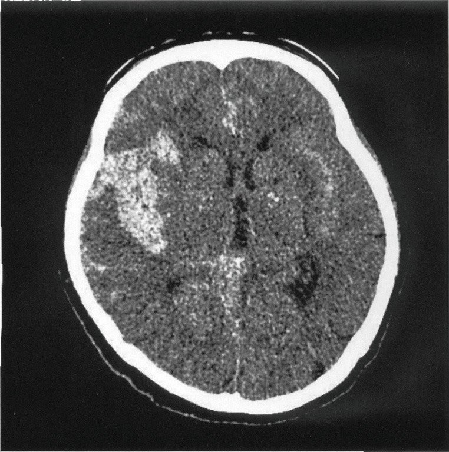
ａ 胃管挿入
ｂ 気管挿管
ｃ 中心静脈カテーテル留置
ｄ ニトログリセリン投与
ｅ 腰椎穿刺
✅
ｂ 気管挿管
意識障害+呼吸不全（SpO2低下）→気道確保が最優先。気管挿管が第一。
❤️ 意識障害の初期対応——ABCが先、原因検索は後
本例は5日間の発熱と悪寒戦慄で始まり、突然の頭痛・嘔吐・意識消失に至った52歳女性である。キーとなる所見は①心尖部を最強点とするLevine 3/6の収縮期逆流性雑音（僧帽弁閉鎖不全） ②両側足趾先端の点状出血斑 ③アトピー性皮膚炎で掻破による皮膚のバリア破綻（浸出液を伴う苔癬化）——皮膚から侵入した黄色ブドウ球菌による急性感染性心内膜炎という筋書きである。そこへ感染性脳動脈瘤の破裂による脳出血が重なって意識障害を来した。しかし本問が問うているのは診断ではなく「直ちに行うべき処置」である——救急では診断より先に、生命を脅かしている生理学的異常を止める。ABCDEアプローチ：
A（Airway・気道）——開通しているか。いびき音・シーソー呼吸・陥没呼吸は閉塞のサイン。GCS 8以下（JCSでⅢ桁）は気管挿管の適応
B（Breathing・呼吸）——呼吸数・SpO2・呼吸音・胸郭の動き
C（Circulation・循環）——脈拍・血圧・末梢冷感・静脈路2本
D（Dysfunction of CNS・意識）——GCS/JCS・瞳孔・血糖測定（低血糖の見逃しは致命的）
E（Exposure・脱衣と体温）——皮疹・外傷・体温
気管挿管の適応は3つに集約される：①気道の保護ができない（意識障害・咽頭反射消失・大量出血や嘔吐） ②酸素化または換気が維持できない ③これから行う治療・検査のために必要（鎮静下の画像検査、手術、搬送）。本例は①と③の両方に当てはまる。
意識障害の原因を網羅する語呂「AIUEOTIPS」——Alcohol／Insulin（低血糖・高血糖）／Uremia／Encephalopathy・Electrolytes・Endocrine／Oxygen（低酸素）・Overdose／Trauma・Temperature／Infection／Psychiatric／Stroke・SAH・Shock。本例はInfection（IE）を背景としたStroke（脳出血）という二段構えである。
□ 選択肢の検討
| 選択肢 | 解説 |
|---|---|
| ａ 胃管挿入 | 優先されない。胃管挿入は消化管の減圧・胃内容の吸引・経管栄養のために行うもので、気道確保より先に行う処置ではない——むしろ気道が確保されていない昏睡患者に胃管を入れると、咽頭刺激で嘔吐を誘発し誤嚥を招く危険がある。意識障害の初期対応では気道を確保してから胃管を考える。さらに本例は頭蓋内出血が疑われる状況で、咽頭刺激による血圧上昇は出血の増悪につながる——順序を誤ると害になる典型例である。 |
| ◯ ｂ 気管挿管 | これが正解。本例はJCSⅢ-200（痛み刺激で少し手足を動かす程度）の深い昏睡で、いびき音を上気道に聴取し、救急隊が経鼻エアウェイを挿入している——これは舌根沈下による上気道閉塞が進行中であることを意味する。加えて瞳孔不同（右5.0mm・左3.0mm）と両側対光反射消失があり、脳ヘルニアが切迫している——この状況で気管挿管が必要な理由は3つある：①舌根沈下と誤嚥から気道を守る（GCS 8以下は挿管の古典的適応） ②確実な換気でPaCO2を管理し頭蓋内圧をコントロールする ③これから行う画像検査・処置の間、安全に呼吸を維持する。SpO2 100%という数値に惑わされてはいけない——リザーバー付マスク10L/分という高濃度酸素下の値であり、酸素化が保たれていることと気道が守られていることは別物である。 |
| ｃ 中心静脈カテーテル留置 | 優先されない。中心静脈カテーテルは昇圧薬の投与・中心静脈圧の測定・長期の輸液路確保のために置くもので、初期蘇生の第一手ではない——本例は血圧200/104mmHgと高値で、昇圧薬を要する状況ではまったくない。むしろ気道確保より先に穿刺手技を行えば、その間に気道閉塞が完成する。救急の初期対応はABCDE（気道・呼吸・循環・意識・体温露出）の順で、Aを飛ばしてCの処置をしないのが原則である。 |
| ｄ ニトログリセリン投与 | 禁忌に近い。本例の血圧200/104mmHgは、頭蓋内圧亢進に対する代償反応（Cushing現象）である可能性が高い——Cushing現象＝血圧上昇＋徐脈＋不規則な呼吸で、脳が「圧に負けまいとして脳灌流圧を保とうとしている」状態である。ここでニトログリセリンを投与して血圧を下げれば、脳灌流圧（＝平均血圧－頭蓋内圧）が一気に落ちて脳虚血を悪化させる。加えてニトログリセリンには脳血管拡張作用があり頭蓋内圧をさらに上げるという直接の不利益もある。頭蓋内病変を伴う高血圧の降圧は、目標値を定めて短時間作用型の薬（ニカルジピンなど）で慎重に行うものである。 |
| ｅ 腰椎穿刺 | 禁忌。腰椎穿刺は頭蓋内圧亢進のある患者では脳ヘルニアを誘発しうるため、意識障害・巣症状・乳頭浮腫がある場合は必ず頭部画像で占拠性病変を除外してから行う——本例は瞳孔不同と対光反射消失という脳ヘルニアの徴候そのものがあり、穿刺は絶対に避けなければならない。実際にこの症例では搬入直後の頭部単純CTで右側の脳内出血（高吸収域）が示されており、髄膜炎ではなく頭蓋内出血が意識障害の原因である。背景には感染性心内膜炎による感染性脳動脈瘤〈mycotic aneurysm〉の破裂——発熱・心雑音・足趾の点状出血斑という一連の所見がそれを裏づける。 |
🔍 瞳孔所見と脳ヘルニア／IEの神経合併症
| 瞳孔所見 | 示唆する病態 |
|---|---|
| 片側散大＋対光反射消失（瞳孔不同） | 同側の鉤ヘルニア〈uncal herniation〉による動眼神経圧迫。緊急事態 |
| 両側散大＋対光反射消失 | 重篤な脳幹障害・低酸素性脳症・抗コリン薬中毒 |
| 両側縮瞳（pinpoint）＋対光反射保たれる | 橋出血・オピオイド中毒・有機リン中毒 |
| 中間位固定 | 中脳障害 |
| 正常瞳孔＋深い昏睡 | 代謝性脳症（低血糖・肝性脳症など）を示唆 |
Cushing現象は血圧上昇・徐脈・呼吸の不規則化の3徴で、頭蓋内圧亢進の末期像である。本例は心拍数120/分と頻脈だが、これは敗血症性の頻脈が併存しているためで、血圧200/104mmHgという著明な高血圧は頭蓋内圧亢進の反映と読むのが妥当である。脳灌流圧〈CPP〉＝平均動脈圧－頭蓋内圧——だから頭蓋内圧が上がっているとき、血圧は下げてはいけない代償である場合が多い。
IEの神経合併症は患者の20〜40%に生じ、予後を最も左右する合併症である：
①脳梗塞（塞栓性）——最多。中大脳動脈領域が多く、多発することが特徴
②感染性脳動脈瘤〈mycotic aneurysm〉——菌塊が血管壁の栄養血管に詰まり、壁が脆弱化して瘤を作る。末梢の分岐部にできるのが特徴で、破裂すると脳内出血・くも膜下出血を起こす。本例がこれ
③出血性梗塞——塞栓による梗塞に出血が加わる
④髄膜炎・脳膿瘍
治療上の難題——IEに脳出血を合併した場合、抗凝固療法は中止し、心臓の手術は出血から2週間程度あけるのが原則である（Q.388がまさにこれを問う）。脳出血の直後に人工心肺を使えば、ヘパリン化により出血が破局的に増悪する。一方で塞栓性脳梗塞（出血なし・小梗塞）なら、心不全が制御できない場合は早期手術を躊躇しない——出血と梗塞で方針が正反対になる点が重要である。
🎯 国試ポイント
① 意識障害の初期対応はABCDEの順。診断より先に気道。JCSⅢ桁（GCS 8以下）＋いびき音＝気管挿管。② SpO2 100%でも「リザーバー付マスク10L/分下」なら気道は守られていない。酸素化と気道保護は別問題。
③ 瞳孔不同＋対光反射消失＝鉤ヘルニアの切迫。腰椎穿刺は禁忌で、頭部画像が先。
④ 頭蓋内圧亢進時の高血圧はCushing現象（代償）。ニトログリセリンで安易に下げると脳灌流圧が落ち、しかも脳血管拡張で頭蓋内圧が上がる。
⑤ 脳灌流圧＝平均動脈圧－頭蓋内圧。この式が「下げてはいけない」理由の根拠。
⑥ 気管挿管の適応3つ＝気道保護不能・酸素化/換気不能・治療や検査のために必要。
⑦ IEの神経合併症＝脳梗塞（最多）・感染性脳動脈瘤の破裂による出血・出血性梗塞・髄膜炎/脳膿瘍。20〜40%に生じ予後を左右する。
⑧ IE＋脳出血では抗凝固中止・心臓手術は2週間あける。IE＋小さな塞栓性梗塞なら心不全制御のため早期手術も可。出血と梗塞で正反対。
⑨ 意識障害の原因はAIUEOTIPSで網羅。まず血糖測定を忘れない。
Q.383(117C-67)★2択正答率 54%
連問 2/352 歳の女性。意識障害のため救急車で搬入された。
現病歴：5 日前から38℃を超える発熱と悪寒戦慄を訴え、市販のアセトアミノフェンを内服していた。本日夕食中に
急に頭痛とふらつき感を訴え、嘔吐した。その後いびきをかいて眠りだし、呼びかけに応答しなくなったため、家
族が救急車を要請した。
既往歴：アトピー性皮膚炎で副腎皮質ステロイド外用薬を処方されている。健診で異常を指摘されたことはない。
生活歴：夫と2 人の息子との4 人暮らし。仕事は事務職。喫煙歴はない。飲酒はビール350mL/ 日。
家族歴：両親とも胃癌で死亡。
現 症：意識レベルはJCSⅢ-200。身長158cm、体重60kg。体温37.8℃。心拍数120/ 分、整。血圧200/104mmHg。
呼吸数16/ 分。SpO2 100％（リザーバー付マスク10L/ 分酸素投与下）。救急隊により経鼻エアウェイが挿入され
ている。瞳孔径は右5.0mm、左3.0mm。対光反射は両側で消失している。心尖部を最強点とするLevine 3/6 の収
縮期逆流性雑音を聴取する。上気道にいびき音を聴取する。腹部は平坦、軟で、肝・脾を触知しない。下腿に浮腫
を認めない。両側足趾先端に点状出血斑を合計3 ヶ所認める。頸部周囲と両肘内側に鱗屑、紅斑および苔癬化を認
め、一部浸出液がみられる。
検査所見：尿所見：淡黄褐色透明、蛋白（－）、糖（－）、潜血（－）。血液所見：赤血球450 万、Hb 13.3g/dL、Ht
42％、白血球11,200（桿状核好中球13％、分葉核好中球53％、好酸球8％、好塩基球1％、単球3％、リンパ球
23％）、血小板32 万、PT-INR 1.2（基準0.9 ～1.1）。血液生化学所見：総蛋白6.9g/dL、アルブミン4.2g/dL、総
ビリルビン0.6mg/dL、直接ビリルビン0.1mg/dL、AST 30U/L、ALT 13U/L、LD 220U/L（基準120 ～245）、
ALP 83U/L（基準38 ～113）、γ-GT 13U/L（基準8 ～50）、尿素窒素13mg/dL、クレアチニン0.47mg/dL、血
糖204mg/dL、Na 142mEq/L、K 3.5mEq/L、Cl 105mEq/L。CRP 10mg/dL。心電図は洞性頻脈でST-T 変化を認
めない。胸部エックス線写真で心胸郭比57％（臥位で撮影）。搬入直後の頭部単純CT を示す。
血液培養2 セットを採取した後に集中治療室に入室し、抗菌薬投与を開始した。血液培養は2 セットとも陽性とな
り、入室3 日目にStaphylococcus aureus と同定された。
この結果を受けて実施すべきなのはどれか。2 つ選べ。
現病歴：5 日前から38℃を超える発熱と悪寒戦慄を訴え、市販のアセトアミノフェンを内服していた。本日夕食中に
急に頭痛とふらつき感を訴え、嘔吐した。その後いびきをかいて眠りだし、呼びかけに応答しなくなったため、家
族が救急車を要請した。
既往歴：アトピー性皮膚炎で副腎皮質ステロイド外用薬を処方されている。健診で異常を指摘されたことはない。
生活歴：夫と2 人の息子との4 人暮らし。仕事は事務職。喫煙歴はない。飲酒はビール350mL/ 日。
家族歴：両親とも胃癌で死亡。
現 症：意識レベルはJCSⅢ-200。身長158cm、体重60kg。体温37.8℃。心拍数120/ 分、整。血圧200/104mmHg。
呼吸数16/ 分。SpO2 100％（リザーバー付マスク10L/ 分酸素投与下）。救急隊により経鼻エアウェイが挿入され
ている。瞳孔径は右5.0mm、左3.0mm。対光反射は両側で消失している。心尖部を最強点とするLevine 3/6 の収
縮期逆流性雑音を聴取する。上気道にいびき音を聴取する。腹部は平坦、軟で、肝・脾を触知しない。下腿に浮腫
を認めない。両側足趾先端に点状出血斑を合計3 ヶ所認める。頸部周囲と両肘内側に鱗屑、紅斑および苔癬化を認
め、一部浸出液がみられる。
検査所見：尿所見：淡黄褐色透明、蛋白（－）、糖（－）、潜血（－）。血液所見：赤血球450 万、Hb 13.3g/dL、Ht
42％、白血球11,200（桿状核好中球13％、分葉核好中球53％、好酸球8％、好塩基球1％、単球3％、リンパ球
23％）、血小板32 万、PT-INR 1.2（基準0.9 ～1.1）。血液生化学所見：総蛋白6.9g/dL、アルブミン4.2g/dL、総
ビリルビン0.6mg/dL、直接ビリルビン0.1mg/dL、AST 30U/L、ALT 13U/L、LD 220U/L（基準120 ～245）、
ALP 83U/L（基準38 ～113）、γ-GT 13U/L（基準8 ～50）、尿素窒素13mg/dL、クレアチニン0.47mg/dL、血
糖204mg/dL、Na 142mEq/L、K 3.5mEq/L、Cl 105mEq/L。CRP 10mg/dL。心電図は洞性頻脈でST-T 変化を認
めない。胸部エックス線写真で心胸郭比57％（臥位で撮影）。搬入直後の頭部単純CT を示す。
血液培養2 セットを採取した後に集中治療室に入室し、抗菌薬投与を開始した。血液培養は2 セットとも陽性とな
り、入室3 日目にStaphylococcus aureus と同定された。
この結果を受けて実施すべきなのはどれか。2 つ選べ。
ａ 尿培養
ｂ 心エコー検査
ｃ 末梢神経伝導検査
ｄ 血中エンドトキシン測定
ｅ 血液培養再採取による陰性化の確認
✅
ｂ 心エコー検査 ＋ ｅ 血液培養再採取による陰性化の確認
S.aureus菌血症→IEを強く疑い心エコーで疣贅確認＋治療効果確認のため培養陰性化を確認。
❤️ 黄色ブドウ球菌菌血症〈SAB〉——「見つけたら必ず心エコー」
血液培養からStaphylococcus aureusが生えたとき、それは単なる「菌が血に入った」ではなく、独立した一つの疾患として扱うべき事象である。理由は3つ——①コンタミネーションであることがほぼない（表皮ブドウ球菌と違い、1セットでも真の菌血症と考える） ②転移性感染巣を作る能力が高い ③適切に管理しても死亡率が15〜30%と高い。SABを見たときの必須アクション（バンドルとして覚える）：
①感染源の同定と除去——血管内カテーテルは原則抜去。皮膚・軟部組織の感染巣、術後創部を探す。本例はアトピー性皮膚炎の掻破部位（浸出液を伴う苔癬化）が侵入門戸と考えられる
②心エコー（IEの評価）——合併率20〜40%。TEEの方が感度が高いので、リスクが高い症例では最初からTEEを選ぶ
③血液培養の再検（48〜72時間後）で陰性化を確認——持続すれば制御されていない病巣を探す
④転移性病巣の検索——脊椎（化膿性脊椎炎）・関節・腎/脾膿瘍・腸腰筋膿瘍・脳膿瘍。症状があれば画像へ
⑤適切な抗菌薬を十分な期間——MSSAならセファゾリン（バンコマイシンより優れる）、MRSAならバンコマイシン。陰性化から起算して最低2週間、IEや転移巣があれば4〜6週
感染症科コンサルトが死亡率を下げることが繰り返し示されている、数少ない疾患でもある。
本例の全体像——アトピー性皮膚炎の皮膚から侵入した黄色ブドウ球菌が急性感染性心内膜炎を起こし、僧帽弁閉鎖不全（Levine 3/6の収縮期逆流性雑音）を作り、足趾の点状出血斑（塞栓）を散らし、感染性脳動脈瘤の破裂による脳出血で意識障害に至った。正答率54%という難問になったのは、「心エコー」は容易でも、もう1つを「血液培養の再検」と決められるかが難しかったためである。
□ 選択肢の検討
| 選択肢 | 解説 |
|---|---|
| ａ 尿培養 | 不要。尿培養は膀胱刺激症状・膿尿・腎盂腎炎を疑う所見があるときに提出する——本例の尿所見は淡黄褐色透明・蛋白（－）・糖（－）・潜血（－）と完全に正常で、尿路感染を疑う根拠がない。黄色ブドウ球菌菌血症では腎膿瘍や腎梗塞を合併しうるが、それを疑うなら尿培養ではなく造影CTなどの画像が必要である。起炎菌が既に同定されている状況で、感染巣の推定に寄与しない検査を足す意味はない。 |
| ◯ ｂ 心エコー検査 | これが正解。Staphylococcus aureus 菌血症〈SAB〉は、他の菌の菌血症とはまったく別格に扱われる——感染性心内膜炎の合併率が20〜40%にのぼるからである。本例は心尖部を最強点とするLevine 3/6の収縮期逆流性雑音（僧帽弁閉鎖不全）と両側足趾先端の点状出血斑を持ち、さらに感染性脳動脈瘤の破裂と考えられる脳出血まで来している——IEを疑う条件はこれ以上ないほど揃っている。したがって心エコーで疣贅・弁破壊・弁輪部膿瘍の有無を確認することが必須である。本例のように塞栓症状があり、しかも人工物がなく、弁閉鎖不全の雑音が明瞭な場合は、経胸壁で陰性でも経食道心エコー〈TEE〉へ進む。 |
| ｃ 末梢神経伝導検査 | 適応がない。末梢神経伝導検査は末梢神経障害（Guillain-Barre症候群・糖尿病性神経障害・絞扼性神経障害）を評価する検査である——本例の意識障害は頭部CTで示された頭蓋内出血という中枢の病変で説明でき、末梢神経を調べる理由がない。そもそも深昏睡の患者で神経伝導検査を行っても診断にも治療にも結びつかない。敗血症に伴うcritical illness polyneuropathyは存在するが、これは集中治療が長期化した後に人工呼吸器離脱困難として顕在化するもので、発症3日目に検索する病態ではない。 |
| ｄ 血中エンドトキシン測定 | 適応がない。エンドトキシンはグラム陰性桿菌の外膜に存在するリポ多糖〈LPS〉であり、グラム陽性球菌である黄色ブドウ球菌は産生しない——菌名が確定した時点で、この検査は原理的に無意味である。エンドトキシン測定が意味を持つのはグラム陰性菌敗血症の補助診断やエンドトキシン吸着療法〈PMX-DHP〉の適応判断の場面である。「重症感染症だから測る」という反射ではなく、菌の種類で意味が決まる検査だという理解が問われている。 |
| ◯ ｅ 血液培養再採取による陰性化の確認 | これが正解。黄色ブドウ球菌菌血症では抗菌薬開始後48〜72時間で血液培養を再検し、陰性化を確認することが標準的な管理である——理由は菌血症が持続していること自体が「どこかに制御されていない感染巣がある」ことの証拠だからである。持続菌血症を見たら①感染性心内膜炎 ②弁輪部膿瘍 ③血管内カテーテル感染 ④化膿性脊椎炎・関節炎・腸腰筋膿瘍 ⑤感染性動脈瘤といったドレナージや外科的処置を要する病巣を探しにいく。さらに陰性化した日が治療期間のカウント開始日になる——合併症のないSABで14日、IEや転移性病巣があれば4〜6週という期間は「陰性化してから」数えるので、この確認なしには治療計画が立たない。 |
🔍 血液培養が「陽性のまま」のとき何を考えるか／IEの外科適応
| 持続菌血症で疑う病巣 | 確かめ方 | 対応 |
|---|---|---|
| 感染性心内膜炎・弁輪部膿瘍 | 経食道心エコー | 外科的弁置換の検討 |
| 血管内カテーテル感染 | カテーテル先端培養・刺入部所見 | 抜去 |
| 化膿性脊椎炎・硬膜外膿瘍 | 造影MRI（脊椎） | ドレナージ・長期抗菌薬 |
| 腸腰筋膿瘍・臓器膿瘍 | 造影CT | 経皮的ドレナージ |
| 感染性動脈瘤 | 造影CT・脳血管撮影 | 血管内治療・外科 |
| 化膿性関節炎 | 関節穿刺 | 洗浄・ドレナージ |
| 人工物感染（ペースメーカ・人工関節） | 画像・核医学 | デバイス抜去 |
IEの外科的治療の適応を3本柱で整理する：
①心不全——最も多く、最も強い適応。急性の弁破壊（弁尖穿孔・腱索断裂）による重症逆流で肺水腫・心原性ショックに至る。緊急（24時間以内）で手術する
②制御できない感染——弁輪部膿瘍・仮性動脈瘤・瘻孔形成、適切な抗菌薬にもかかわらず7〜10日以上続く発熱と菌血症、真菌性IE、多剤耐性菌
③塞栓の予防——10mmを超える可動性疣贅で塞栓の既往があるときは強い適応。塞栓の危険は抗菌薬開始後2週間で急速に下がるので、手術は早期ほど意義が大きい
手術のタイミングと脳合併症——脳出血を合併したら原則2〜4週間待つ（人工心肺のヘパリン化で出血が破局的に増悪する）。小さな塞栓性梗塞で意識が保たれていれば待たない。この「出血なら待つ、梗塞なら待たない」という原則が、Q.388（116D-21）の正解の根拠そのものである。
コアグラーゼ陰性ブドウ球菌〈CNS〉との扱いの違いも押さえる——表皮ブドウ球菌〈S. epidermidis〉が1セットだけ陽性ならコンタミネーションと考えるのが原則だが、複数セットで同一菌かつ人工弁・ペースメーカ・中心静脈カテーテルがあるなら真の起炎菌として扱う。CNSはバイオフィルムを作る能力が高く、人工物感染の主役である。逆にS. aureus は1セットでも常に真の菌血症——この非対称を取り違えない。
血液培養が「陽性になるまでの時間」も情報になる——菌量が多いほど早く陽性化するので、24時間以内の陽性化は真の菌血症を、3日以上かかる陽性化はコンタミや難培養菌を示唆する。またカテーテル血が末梢血より2時間以上早く陽性化すれば、カテーテル関連血流感染〈CRBSI〉と判断できる（differential time to positivity）。
🎯 国試ポイント
① 黄色ブドウ球菌菌血症を見たら必ず心エコー——IE合併率20〜40%。本問の正解の1つ。② もう1つの正解は「血液培養の再検による陰性化の確認」。持続菌血症＝制御されていない感染巣があるという証拠であり、治療期間の起算点でもある。
③ SABバンドル＝感染源の除去・心エコー・培養の陰性化確認・転移性病巣の検索・十分な期間の抗菌薬。
④ S. aureus は1セット陽性でもコンタミとみなさない（表皮ブドウ球菌との決定的な違い）。
⑤ エンドトキシンはグラム陰性桿菌のLPS。グラム陽性球菌では測る意味がない。
⑥ MSSAにはセファゾリン（バンコマイシンより有効）。MRSAにはバンコマイシン。
⑦ 治療期間は培養陰性化の日から起算。合併症なしのSABで最低2週、IE・転移性病巣があれば4〜6週。
⑧ IEの外科適応3本柱＝心不全（最多・緊急）・制御できない感染・塞栓予防（10mm超の可動性疣贅＋塞栓既往）。
⑨ 膿は抜かなければ治らない（source control）——抗菌薬だけで治らない感染があることを常に念頭に置く。
⑩ 表皮ブドウ球菌は1セットならコンタミ、複数セット＋人工物なら真の起炎菌。S. aureus との非対称を覚える。
⑪ カテーテル血が末梢血より2時間以上早く陽性化＝カテーテル関連血流感染。
⑫ 血管内カテーテルはSABでは原則抜去。人工物を残したまま治すのは難しい。
Q.384(117C-68)★正答率 77%
連問 3/352 歳の女性。意識障害のため救急車で搬入された。
現病歴：5 日前から38℃を超える発熱と悪寒戦慄を訴え、市販のアセトアミノフェンを内服していた。本日夕食中に
急に頭痛とふらつき感を訴え、嘔吐した。その後いびきをかいて眠りだし、呼びかけに応答しなくなったため、家
族が救急車を要請した。
既往歴：アトピー性皮膚炎で副腎皮質ステロイド外用薬を処方されている。健診で異常を指摘されたことはない。
生活歴：夫と2 人の息子との4 人暮らし。仕事は事務職。喫煙歴はない。飲酒はビール350mL/ 日。
家族歴：両親とも胃癌で死亡。
現 症：意識レベルはJCSⅢ-200。身長158cm、体重60kg。体温37.8℃。心拍数120/ 分、整。血圧200/104mmHg。
呼吸数16/ 分。SpO2 100％（リザーバー付マスク10L/ 分酸素投与下）。救急隊により経鼻エアウェイが挿入され
ている。瞳孔径は右5.0mm、左3.0mm。対光反射は両側で消失している。心尖部を最強点とするLevine 3/6 の収
縮期逆流性雑音を聴取する。上気道にいびき音を聴取する。腹部は平坦、軟で、肝・脾を触知しない。下腿に浮腫
を認めない。両側足趾先端に点状出血斑を合計3 ヶ所認める。頸部周囲と両肘内側に鱗屑、紅斑および苔癬化を認
め、一部浸出液がみられる。
検査所見：尿所見：淡黄褐色透明、蛋白（－）、糖（－）、潜血（－）。血液所見：赤血球450 万、Hb 13.3g/dL、Ht
42％、白血球11,200（桿状核好中球13％、分葉核好中球53％、好酸球8％、好塩基球1％、単球3％、リンパ球
23％）、血小板32 万、PT-INR 1.2（基準0.9 ～1.1）。血液生化学所見：総蛋白6.9g/dL、アルブミン4.2g/dL、総
ビリルビン0.6mg/dL、直接ビリルビン0.1mg/dL、AST 30U/L、ALT 13U/L、LD 220U/L（基準120 ～245）、
ALP 83U/L（基準38 ～113）、γ-GT 13U/L（基準8 ～50）、尿素窒素13mg/dL、クレアチニン0.47mg/dL、血
糖204mg/dL、Na 142mEq/L、K 3.5mEq/L、Cl 105mEq/L。CRP 10mg/dL。心電図は洞性頻脈でST-T 変化を認
めない。胸部エックス線写真で心胸郭比57％（臥位で撮影）。搬入直後の頭部単純CT を示す。
全身状態が改善し開頭手術が可能と判断された。患者の血液型検査では、オモテ試験は抗A 血清、抗B 血清とも
に凝集あり、ウラ試験はA 血球、B 血球ともに凝集なし、抗Rho（D）血清に凝集を認めた。準備する赤血球濃厚液
の血液型と患者の血液との交差適合試験の結果を示す。
最も輸血に適した赤血球濃厚液はどれか。
現病歴：5 日前から38℃を超える発熱と悪寒戦慄を訴え、市販のアセトアミノフェンを内服していた。本日夕食中に
急に頭痛とふらつき感を訴え、嘔吐した。その後いびきをかいて眠りだし、呼びかけに応答しなくなったため、家
族が救急車を要請した。
既往歴：アトピー性皮膚炎で副腎皮質ステロイド外用薬を処方されている。健診で異常を指摘されたことはない。
生活歴：夫と2 人の息子との4 人暮らし。仕事は事務職。喫煙歴はない。飲酒はビール350mL/ 日。
家族歴：両親とも胃癌で死亡。
現 症：意識レベルはJCSⅢ-200。身長158cm、体重60kg。体温37.8℃。心拍数120/ 分、整。血圧200/104mmHg。
呼吸数16/ 分。SpO2 100％（リザーバー付マスク10L/ 分酸素投与下）。救急隊により経鼻エアウェイが挿入され
ている。瞳孔径は右5.0mm、左3.0mm。対光反射は両側で消失している。心尖部を最強点とするLevine 3/6 の収
縮期逆流性雑音を聴取する。上気道にいびき音を聴取する。腹部は平坦、軟で、肝・脾を触知しない。下腿に浮腫
を認めない。両側足趾先端に点状出血斑を合計3 ヶ所認める。頸部周囲と両肘内側に鱗屑、紅斑および苔癬化を認
め、一部浸出液がみられる。
検査所見：尿所見：淡黄褐色透明、蛋白（－）、糖（－）、潜血（－）。血液所見：赤血球450 万、Hb 13.3g/dL、Ht
42％、白血球11,200（桿状核好中球13％、分葉核好中球53％、好酸球8％、好塩基球1％、単球3％、リンパ球
23％）、血小板32 万、PT-INR 1.2（基準0.9 ～1.1）。血液生化学所見：総蛋白6.9g/dL、アルブミン4.2g/dL、総
ビリルビン0.6mg/dL、直接ビリルビン0.1mg/dL、AST 30U/L、ALT 13U/L、LD 220U/L（基準120 ～245）、
ALP 83U/L（基準38 ～113）、γ-GT 13U/L（基準8 ～50）、尿素窒素13mg/dL、クレアチニン0.47mg/dL、血
糖204mg/dL、Na 142mEq/L、K 3.5mEq/L、Cl 105mEq/L。CRP 10mg/dL。心電図は洞性頻脈でST-T 変化を認
めない。胸部エックス線写真で心胸郭比57％（臥位で撮影）。搬入直後の頭部単純CT を示す。
全身状態が改善し開頭手術が可能と判断された。患者の血液型検査では、オモテ試験は抗A 血清、抗B 血清とも
に凝集あり、ウラ試験はA 血球、B 血球ともに凝集なし、抗Rho（D）血清に凝集を認めた。準備する赤血球濃厚液
の血液型と患者の血液との交差適合試験の結果を示す。
最も輸血に適した赤血球濃厚液はどれか。
ａ ABO型 AB／Rho（D） 陽性／主試験凝集 あり／副試験凝集 なし
ｂ ABO型 AB／Rho（D） 陽性／主試験凝集 なし／副試験凝集 なし
ｃ ABO型 AB／Rho（D） 陰性／主試験凝集 なし／副試験凝集 なし
ｄ ABO型 O／Rho（D） 陽性／主試験凝集 なし／副試験凝集 あり
ｅ ABO型 O／Rho（D） 陰性／主試験凝集 なし／副試験凝集 あり
✅
ｂ ABO型 AB／Rho（D） 陽性／主試験凝集 なし／副試験凝集 なし
主試験（患者血清+供血者赤血球）陰性 かつ 副試験（患者赤血球+供血者血清）陰性=適合。
❤️ 血液型判定と交差適合試験——「オモテ・ウラ」「主・副」を取り違えない
ABO血液型判定は必ず2方向から行う——これをオモテ試験とウラ試験と呼ぶ：オモテ試験〈表試験〉——患者の赤血球＋既知の抗A血清・抗B血清。患者の赤血球にどの抗原があるかを見る
ウラ試験〈裏試験〉——患者の血清＋既知のA型血球・B型血球。患者の血清にどの抗体があるかを見る
両者は必ず一致するはずである（Landsteinerの法則＝自分が持たない抗原に対する抗体を自然に持つ）。一致しない場合を「オモテウラ不一致」と呼び、新生児（ウラ試験の抗体がまだ産生されない）・高齢者や免疫不全（抗体価低下）・亜型・寒冷凝集素・多発性骨髄腫などを考える。
| 血液型 | オモテ（抗A／抗B血清） | ウラ（A血球／B血球） |
|---|---|---|
| A型 | ＋／－ | －／＋ |
| B型 | －／＋ | ＋／－ |
| AB型 | ＋／＋ | －／－ |
| O型 | －／－ | ＋／＋ |
交差適合試験〈クロスマッチ〉は「この患者にこの血液を入れてよいか」を最終確認する検査である：
主試験〈major〉——患者血清＋供血者赤血球。陽性なら絶対に輸血できない（患者の抗体が供血赤血球を壊す＝溶血性輸血反応）
副試験〈minor〉——患者赤血球＋供血者血清。陽性でも赤血球濃厚液なら許容されうる（供血者血漿はほぼ除去されているため）
覚え方——「主（メジャー）が陽性なら絶対だめ、副（マイナー）は程度問題」。主試験は患者の抗体を見るので重い。
輸血の原則は「同型輸血」。緊急時に限り赤血球はO型（万能供血者）、新鮮凍結血漿と血小板はAB型（万能供血者）を使う——赤血球とFFP/血小板で万能型が逆になるのは、赤血球では抗原を、血漿製剤では抗体を問題にするからである。
□ 選択肢の検討
| 選択肢 | 解説 |
|---|---|
| ａ ABO型 AB／Rho（D） 陽性／主試験凝集 あり／副試験凝集 なし | 不適合。この選択肢は主試験（患者血清＋供血者赤血球）が「凝集あり」である——主試験陽性は患者の血漿中に、供血者赤血球と反応する抗体が存在することを意味し、輸血すれば溶血反応を起こす。主試験陽性の血液は絶対に輸血できない——これが交差適合試験の最も重い判定である。ABO型もRh(D)も患者と一致しているのに主試験が陽性ということは、不規則抗体（抗E・抗c・抗Jkaなど）の存在が疑われ、不規則抗体スクリーニングと同定を行って適合血を探す必要がある。 |
| ◯ ｂ ABO型 AB／Rho（D） 陽性／主試験凝集 なし／副試験凝集 なし | これが正解。患者の血液型はオモテ試験で抗A血清・抗B血清ともに凝集あり → A抗原とB抗原の両方を持つ、ウラ試験でA血球・B血球ともに凝集なし → 抗A抗体も抗B抗体も持たない——すなわちAB型である。さらに抗Rho(D)血清に凝集を認める → Rh(D)陽性。この選択肢はABO型AB・Rho(D)陽性と患者と完全に同型で、しかも主試験・副試験ともに凝集なし＝完全適合である。同型かつ交差適合試験が両方陰性——これが輸血の理想形であり、迷う余地なくこれを選ぶ。 |
| ｃ ABO型 AB／Rho（D） 陰性／主試験凝集 なし／副試験凝集 なし | 選べるが最適ではない。この選択肢はABO型ABで交差適合試験も両方陰性だが、Rho(D)が陰性である——Rh(D)陰性の血液をRh(D)陽性の患者に輸血すること自体は免疫学的には安全（患者は既にD抗原を持っているので抗D抗体を作らない）。しかしRh(D)陰性血は日本人の約0.5%しかいない極めて貴重な資源で、Rh(D)陰性の患者のために温存すべきである。「輸血できるか」ではなく「最も適したものはどれか」と問われている以上、同型が使えるのに希少な血液を消費する選択は不適切である。 |
| ｄ ABO型 O／Rho（D） 陽性／主試験凝集 なし／副試験凝集 あり | 不適。この選択肢はO型・副試験が「凝集あり」である——副試験（患者赤血球＋供血者血清）が陽性なのは、O型血清に含まれる抗A抗体・抗B抗体が、患者のAB型赤血球と反応したためで、当然の結果である。副試験陽性は、赤血球濃厚液であれば「輸血可能だが望ましくない」と判断される——赤血球濃厚液は血漿がほとんど除去されているため、含まれる抗体量は少なく、実際に溶血を起こす危険は限定的だからである。これが緊急時にO型赤血球を「万能供血者」として使える根拠でもある。しかし本例は緊急ではなく、待機的な開頭手術の準備であり、同型の適合血が入手できる状況でO型を選ぶ理由がない。 |
| ｅ ABO型 O／Rho（D） 陰性／主試験凝集 なし／副試験凝集 あり | 最も不適。選択肢dの問題点（O型・副試験陽性）に加え、Rho(D)も陰性という希少血の消費が重なる——つまり「同型でない」「副試験陽性」「希少血を無駄にする」の3つが同時に成立しており、選ぶ理由が一つもない。なおO型Rh(D)陰性の赤血球は「universal donor」として、血液型判定を待てない超緊急時（大量出血・外傷）にのみ使う切り札である。この貴重な在庫を待機手術に回すことは、本当に必要な患者から資源を奪うことになる。 |
🔍 輸血の合併症と、その場で何をするか
| 合併症 | 時期・機序 | 対応 |
|---|---|---|
| 急性溶血性輸血反応 | 数分〜数時間。ABO不適合（多くは患者取り違えという人為ミス）。発熱・悪寒・腰背部痛・血色素尿・DIC・腎不全 | 直ちに輸血中止・輸液・利尿・DIC治療。血液バッグと患者の照合をやり直す |
| 遅発性溶血性輸血反応 | 3〜14日。不規則抗体の二次免疫応答（抗E・抗Jkaなど） | 貧血の進行と黄疸で気づく。不規則抗体同定 |
| 発熱性非溶血反応 | 白血球由来のサイトカイン | 保存前白血球除去で減少 |
| アレルギー・アナフィラキシー | 血漿蛋白。IgA欠損患者では重篤 | 抗ヒスタミン薬・アドレナリン |
| TACO（輸血関連循環過負荷） | 6時間以内。心不全・高齢・腎不全で急速輸血したとき | 輸血速度を落とす・利尿薬 |
| TRALI（輸血関連急性肺障害） | 6時間以内。供血者の抗白血球抗体。非心原性肺水腫 | 呼吸管理。利尿薬は無効 |
| 輸血後GVHD | 1〜2週後。供血リンパ球が生着。ほぼ致死的 | 放射線照射血の使用で予防（治療法がないため予防がすべて） |
| 感染症 | HBV・HCV・HIV・HTLV-1・細菌汚染 | 核酸増幅検査でリスクは大幅に低下 |
輸血の閾値——現在は制限的輸血〈restrictive strategy〉が標準で、Hb 7g/dLを目安とする。心血管疾患を有する場合は8g/dL、急性冠症候群では個別に判断。かつての「10g/dLを保つ」という方針は、予後を改善しないばかりか感染や循環過負荷を増やすことが示され、放棄された。
本例の文脈——感染性心内膜炎に伴う感染性脳動脈瘤の破裂による脳出血に対し、全身状態が改善したので開頭手術を行う局面である。開頭術は出血量が読みにくく、術前に適合血を準備（type and screen／cross-match）しておくのが標準である。ここで同型かつ交差適合試験陰性の血液を確保しておくことが、術中の安全に直結する。
🎯 国試ポイント
① オモテ試験＝患者赤血球＋既知血清（抗原を見る）／ウラ試験＝患者血清＋既知血球（抗体を見る）。本例はオモテ＋／＋、ウラ－／－＝AB型、抗D血清で凝集＝Rh(D)陽性。② 主試験（患者血清＋供血者赤血球）が陽性なら絶対に輸血できない。副試験（患者赤血球＋供血者血清）陽性は赤血球濃厚液なら許容されうる。
③ 正解は「同型（AB・Rh(D)陽性）かつ主試験・副試験ともに陰性」のもの。
④ Rh(D)陰性血は日本人の約0.5%と希少。使えるからといって消費してはいけない。
⑤ 緊急時の万能供血者＝赤血球はO型、FFP・血小板はAB型。赤血球と血漿製剤で逆になる。
⑥ オモテウラ不一致＝新生児・高齢者・免疫不全・亜型・寒冷凝集素・骨髄腫。
⑦ 急性溶血性輸血反応の最多原因はABO不適合＝患者取り違え。直ちに中止し照合をやり直す。
⑧ TACOは循環過負荷（BNP上昇・利尿薬が効く）／TRALIは透過性亢進（BNP正常・利尿薬無効）。
⑨ 輸血後GVHDは治療法がなく、放射線照射血による予防がすべて。
⑩ 輸血閾値はHb 7g/dL（心血管疾患があれば8g/dL）の制限的戦略が標準。
Q.385(117C-69)📷 画像★2択正答率 90%
連問 1/358 歳の男性。胸痛を主訴に救急車で搬入された。
現病歴：数日前から労作時や夜間就寝時に胸部圧迫感があったが、約30 分で治まるため様子をみていた。本日、草
野球の試合に出て活躍していたが、突然、強い胸痛が出現したため救急車を要請した。
既往歴：2 年前から高血圧症で降圧薬を内服している。
生活歴：妻と2 人暮らし。会社員で営業の仕事をしている。
家族歴：父が高血圧症。
現 症：体温37.2℃。心拍数108/ 分、整。血圧78/58mmHg。呼吸数24/ 分。SPO2 99％（リザーバー付マスク
10L/ 分酸素投与下）（編註：「SpO2」の誤記と思われる）。顔面蒼白で冷汗を認める。心音は微弱で軽度の拡張期
雑音を聴取する。呼吸音に異常を認めない。
検査所見：血液所見：Hb 10.2g/dL、白血球10,100、血小板15 万。血液生化学所見：CK 230U/dL（基準30 ～140）
（編註：「U/L」の誤記と思われる）、CK-MB 20U/L（基準20 以下）、尿素窒素25mg/dL、クレアチニン1.1mg/dL。CRP
3.2mg/dL。心筋トロポニンT 迅速検査陰性。心電図（A）と心エコー検査を施行した後、胸部造影CT（B）を行った。
この患者で考えられるのはどれか。2 つ選べ。
現病歴：数日前から労作時や夜間就寝時に胸部圧迫感があったが、約30 分で治まるため様子をみていた。本日、草
野球の試合に出て活躍していたが、突然、強い胸痛が出現したため救急車を要請した。
既往歴：2 年前から高血圧症で降圧薬を内服している。
生活歴：妻と2 人暮らし。会社員で営業の仕事をしている。
家族歴：父が高血圧症。
現 症：体温37.2℃。心拍数108/ 分、整。血圧78/58mmHg。呼吸数24/ 分。SPO2 99％（リザーバー付マスク
10L/ 分酸素投与下）（編註：「SpO2」の誤記と思われる）。顔面蒼白で冷汗を認める。心音は微弱で軽度の拡張期
雑音を聴取する。呼吸音に異常を認めない。
検査所見：血液所見：Hb 10.2g/dL、白血球10,100、血小板15 万。血液生化学所見：CK 230U/dL（基準30 ～140）
（編註：「U/L」の誤記と思われる）、CK-MB 20U/L（基準20 以下）、尿素窒素25mg/dL、クレアチニン1.1mg/dL。CRP
3.2mg/dL。心筋トロポニンT 迅速検査陰性。心電図（A）と心エコー検査を施行した後、胸部造影CT（B）を行った。
この患者で考えられるのはどれか。2 つ選べ。
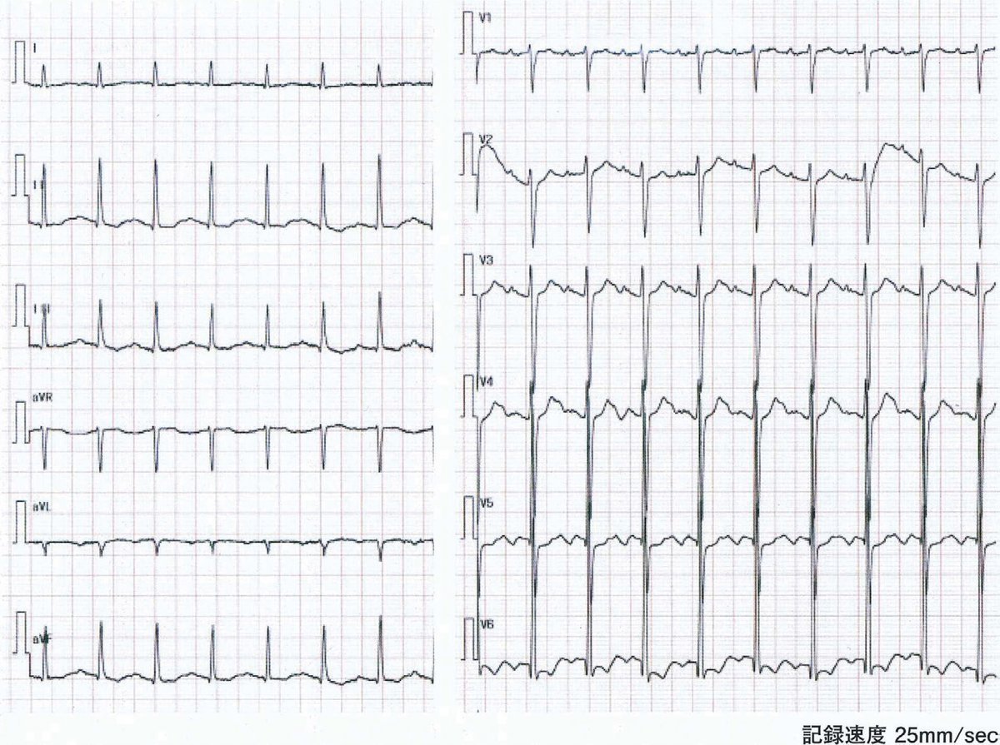
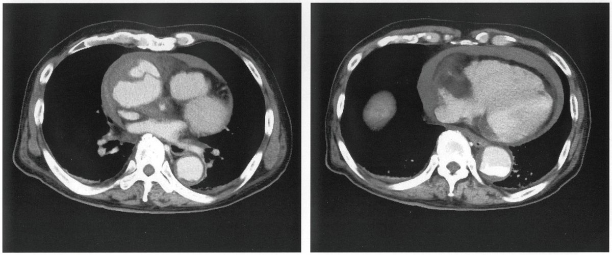
ａ 急性心膜炎
ｂ 急性心筋梗塞
ｃ 収縮性心膜炎
ｄ 急性大動脈解離
ｅ 心タンポナーデ
✅
ｄ 急性大動脈解離 ＋ ｅ 心タンポナーデ
突然の激烈な胸痛＋ショック＋拡張期雑音（急性大動脈弁閉鎖不全）＋トロポニン陰性→Stanford A型急性大動脈解離。心音微弱・低血圧は心嚢内破裂による心タンポナーデ。
❤️ 急性大動脈解離——「突然の胸背部痛＋ショック＋拡張期雑音」
大動脈解離は内膜の裂孔〈entry〉から血液が中膜へ流れ込み、大動脈壁が長軸方向に裂ける疾患である。危険因子は高血圧（最多）・加齢・喫煙・Marfan症候群やLoeys-Dietz症候群などの結合組織病・二尖弁・大動脈縮窄・妊娠・コカイン使用・炎症性大動脈炎。本例は2年前からの高血圧＋運動中の血圧上昇という古典的な組み合わせである。Stanford分類（治療方針を決める実務的な分類）：
A型＝上行大動脈に解離が及ぶもの。緊急手術（人工血管置換術）が絶対適応。無治療なら1時間ごとに死亡率が1〜2%上昇し、48時間で約半数が死亡する
B型＝上行大動脈に及ばないもの。原則は降圧・鎮痛による保存的治療。合併症（破裂・臓器虚血・持続する疼痛・拡大）があればステントグラフト内挿術〈TEVAR〉
DeBakey分類：Ⅰ型＝上行から下行まで、Ⅱ型＝上行のみ、Ⅲ型＝下行のみ。Ⅰ・Ⅱ型がStanford A、Ⅲ型がStanford Bに対応する
A型解離の致死的合併症（＝なぜ緊急手術なのか）：
①心タンポナーデ——心嚢内破裂。最多の死因
②急性大動脈弁閉鎖不全——弁輪の支持喪失。急性の重症逆流で肺水腫
③冠動脈解離（とくに右冠動脈）——下壁梗塞様の心電図変化を来し、心筋梗塞と誤診して血栓溶解薬を投与すると致命的
④分枝の虚血——腕頭/頸動脈（脳梗塞・意識障害）、脊髄動脈（対麻痺）、腎動脈（無尿）、腸間膜動脈（腸管壊死）、腸骨動脈（下肢虚血）
身体所見：血圧の左右差（20mmHg以上）・脈拍消失・拡張期雑音・意識障害・対麻痺。ただし血圧の左右差は3割程度にしか見られないので、なくても否定できない。
診断は造影CTが第一選択（感度・特異度とも95%以上）。Dダイマーは陰性なら除外に有用だが、陽性でも特異的ではない。胸部エックス線の上縦隔拡大は所見として有名だが、正常でも否定できない。
□ 選択肢の検討
| 選択肢 | 解説 |
|---|---|
| ａ 急性心膜炎 | 合わない。急性心膜炎の胸痛は数日かけて出現し、深吸気と仰臥位で増強し、前傾坐位で軽快するのが典型で、本例のような「突然発症の激烈な胸痛」ではない——また急性心膜炎はショックを来さないのが原則で、本例の血圧78/58mmHg・顔面蒼白・冷汗という循環虚脱は説明できない。心電図も急性心膜炎なら広範な誘導での上に凹のST上昇とPR低下を示すが、本例の心電図（A）にその所見はない。なお心膜炎から心嚢液が急速に貯留すればタンポナーデにはなりうるが、本例の経過は急性すぎる。 |
| ｂ 急性心筋梗塞 | 否定的。たしかに数日前からの労作時・夜間の胸部圧迫感（不安定狭心症を思わせる前駆症状）と突然の強い胸痛は急性心筋梗塞を疑わせる——しかし決定的なのは心筋トロポニンT迅速検査が陰性であること、そしてCK-MB 20U/L（基準20以下）と有意な上昇がないことである。加えて拡張期雑音は心筋梗塞では説明できず、大動脈弁閉鎖不全＝上行大動脈の解離が弁輪に及んだことを示唆する。心筋梗塞の除外は「トロポニン陰性」だけでは弱い（発症直後は陰性のことがある）が、拡張期雑音＋ショック＋胸部造影CTという他の情報が解離を強く支持する。 |
| ｃ 収縮性心膜炎 | 経過が合わない。収縮性心膜炎は数か月から数年かけて心膜が肥厚・線維化する慢性疾患で、突然発症することはない——臨床像も頸静脈怒張・肝腫大・腹水・下腿浮腫という慢性の右心不全で、本例のような急性のショックではない。また収縮性心膜炎の身体所見はKussmaul徴候と心膜ノック音であり、拡張期雑音ではない。「心膜」という語に引きずられて選ばないこと。 |
| ◯ ｄ 急性大動脈解離 | これが正解。本例は①58歳・高血圧の既往 ②突然の強い胸痛 ③ショック（血圧78/58mmHg・顔面蒼白・冷汗） ④拡張期雑音（大動脈弁閉鎖不全） ⑤心筋トロポニン陰性 ⑥Hb 10.2g/dLと軽度の貧血——Stanford A型の急性大動脈解離の典型像である。拡張期雑音が決め手——上行大動脈の解離が大動脈弁輪に及ぶと、弁尖の支持が失われて急性大動脈弁閉鎖不全を生じる。急性大動脈解離の40〜75%に何らかの弁逆流が見られる。草野球という運動中の発症も血圧上昇を介した誘因として矛盾しない。胸部造影CT（B）は上行大動脈内の内膜フラップと、心嚢内の液体貯留を示している。 |
| ◯ ｅ 心タンポナーデ | これが正解。Stanford A型解離では解離腔が心嚢内へ破裂（あるいは滲出）して心タンポナーデを起こす——これがA型解離の最大の死因である。本例の心音が微弱（心音減弱）・血圧78/58mmHg（低血圧）はBeck三徴のうち2つに当たり、頻脈108/分も代償反応として矛盾しない。胸部造影CT（B）に心嚢液貯留が描出されている。重要なのはこの状況で安易に心嚢穿刺をしてはいけないことである——心嚢内圧が下がると解離腔からの出血が加速し、かえって致死的になるためで、手術室で開胸しながら解除するのが原則である。「タンポナーデ＝心嚢穿刺」という反射が通用しない、数少ない例外として押さえる。 |
🔍 「突然の胸痛でショック」——4つの致死的疾患を並べて考える
| 急性大動脈解離 | 急性心筋梗塞 | 肺血栓塞栓症 | 緊張性気胸 | |
|---|---|---|---|---|
| 痛みの立ち上がり | 突然、発症時が最強 | 数分かけて増強 | 突然（呼吸困難が主） | 突然 |
| 痛みの性質 | 引き裂かれる・移動する | 絞扼感・圧迫感 | 胸膜痛 | 患側の胸痛 |
| 特徴的な所見 | 拡張期雑音・血圧左右差・脈拍消失 | ST変化・トロポニン上昇 | 頻呼吸・低酸素・下肢腫脹 | 患側呼吸音消失・鼓音・気管偏位 |
| 中心静脈圧 | タンポナーデ合併で上昇 | 右室梗塞で上昇 | 上昇 | 上昇 |
| 決め手の検査 | 造影CT | 心電図・トロポニン | 造影CT・Dダイマー | 身体所見（画像を待たない） |
| 禁忌 | 血栓溶解・抗凝固 | — | — | 陽圧換気の継続 |
A型解離の初期治療——手術までのつなぎとして「血圧と心拍数を下げ、dP/dt（大動脈壁にかかるずり応力）を減らす」。具体的には①まずβ遮断薬（ランジオロール・プロプラノロール）で心拍数60/分以下 ②次に血管拡張薬（ニカルジピン等）で収縮期血圧100〜120mmHg。順序が重要——血管拡張薬を先に入れると反射性頻脈でdP/dtが上がり解離が進展するため、必ずβ遮断薬が先である。
本例は血圧78/58mmHgとすでにショックなので降圧の余地はなく、輸液で最低限の灌流を保ちながら直ちに手術室へ運ぶのが答えになる。次問（Q.387）がまさにこれを問うている。
🎯 国試ポイント
① 突然の激烈な胸痛＋ショック＋拡張期雑音＝Stanford A型急性大動脈解離。拡張期雑音は急性大動脈弁閉鎖不全を意味する。② A型解離の最大の死因は心嚢内破裂による心タンポナーデ。心音減弱＋低血圧＋頸静脈怒張＝Beck三徴。
③ 解離に伴うタンポナーデでは安易に心嚢穿刺をしない——心嚢内圧が下がると出血が加速する。手術室で開胸しながら解除。
④ Stanford A＝上行大動脈に及ぶ＝緊急手術／B＝及ばない＝保存的（合併症があればTEVAR）。
⑤ DeBakeyⅠ・Ⅱ＝Stanford A、Ⅲ＝Stanford B。
⑥ 右冠動脈への解離進展で下壁梗塞様の心電図。血栓溶解薬を投与すると致命的——これが最大の落とし穴。
⑦ 初期治療の順序＝β遮断薬（心拍数60以下）→ 血管拡張薬（収縮期100〜120mmHg）。逆にすると反射性頻脈で解離が進む。
⑧ 診断は造影CT。血圧左右差は3割にしか見られず、なくても否定できない。
⑨ 危険因子は高血圧が最多。若年ならMarfan症候群・二尖弁・妊娠・コカインを考える。
Q.386(117C-70)★正答率 19%
連問 2/358 歳の男性。胸痛を主訴に救急車で搬入された。
現病歴：数日前から労作時や夜間就寝時に胸部圧迫感があったが、約30 分で治まるため様子をみていた。本日、草
野球の試合に出て活躍していたが、突然、強い胸痛が出現したため救急車を要請した。
既往歴：2 年前から高血圧症で降圧薬を内服している。
生活歴：妻と2 人暮らし。会社員で営業の仕事をしている。
家族歴：父が高血圧症。
現 症：体温37.2℃。心拍数108/ 分、整。血圧78/58mmHg。呼吸数24/ 分。SPO2 99％（リザーバー付マスク
10L/ 分酸素投与下）（編註：「SpO2」の誤記と思われる）。顔面蒼白で冷汗を認める。心音は微弱で軽度の拡張期
雑音を聴取する。呼吸音に異常を認めない。
検査所見：血液所見：Hb 10.2g/dL、白血球10,100、血小板15 万。血液生化学所見：CK 230U/dL（基準30 ～140）
（編註：「U/L」の誤記と思われる）、CK-MB 20U/L（基準20 以下）、尿素窒素25mg/dL、クレアチニン1.1mg/dL。CRP
3.2mg/dL。心筋トロポニンT 迅速検査陰性。心電図（A）と心エコー検査を施行した後、胸部造影CT（B）を行った。
この患者の心エコー検査で認められる所見はどれか。
現病歴：数日前から労作時や夜間就寝時に胸部圧迫感があったが、約30 分で治まるため様子をみていた。本日、草
野球の試合に出て活躍していたが、突然、強い胸痛が出現したため救急車を要請した。
既往歴：2 年前から高血圧症で降圧薬を内服している。
生活歴：妻と2 人暮らし。会社員で営業の仕事をしている。
家族歴：父が高血圧症。
現 症：体温37.2℃。心拍数108/ 分、整。血圧78/58mmHg。呼吸数24/ 分。SPO2 99％（リザーバー付マスク
10L/ 分酸素投与下）（編註：「SpO2」の誤記と思われる）。顔面蒼白で冷汗を認める。心音は微弱で軽度の拡張期
雑音を聴取する。呼吸音に異常を認めない。
検査所見：血液所見：Hb 10.2g/dL、白血球10,100、血小板15 万。血液生化学所見：CK 230U/dL（基準30 ～140）
（編註：「U/L」の誤記と思われる）、CK-MB 20U/L（基準20 以下）、尿素窒素25mg/dL、クレアチニン1.1mg/dL。CRP
3.2mg/dL。心筋トロポニンT 迅速検査陰性。心電図（A）と心エコー検査を施行した後、胸部造影CT（B）を行った。
この患者の心エコー検査で認められる所見はどれか。
ａ 下大静脈の虚脱
ｂ 拡張期の右室の虚脱
ｃ 収縮期の右房の拡大
ｄ 上行大動脈基部の狭窄
ｅ 下大静脈径の呼吸性変動の増加
✅
ｂ 拡張期の右室の虚脱
心タンポナーデ：心嚢液による外圧→拡張期に右室が最初に虚脱（薄い右室壁が先に潰れる）。
❤️ 心タンポナーデの血行動態——「入れない」ことが問題である
心タンポナーデは心嚢内に貯留した液体の圧が心腔を外から圧迫し、心室の充満（拡張）を妨げる病態である。決定的なのは液体の量ではなく、貯留の速さ——急性なら100〜200mLでもタンポナーデになり、慢性ならば1〜2Lでも耐えられる。心膜が伸びる時間があるかどうかで決まる。本例のような大動脈解離の心嚢内破裂・心破裂・心臓穿孔はいずれも急性で、少量でも致死的である。圧の階段が消える——正常では右房圧＜右室拡張期圧＜肺動脈楔入圧＜左室拡張期圧という段差があるが、タンポナーデでは心嚢内圧がすべてを支配し、これらが同じ値に揃う（等値化）。その結果①心室充満量が減る → ②1回拍出量が減る → ③代償性に頻脈と末梢血管収縮 → ④それでも足りず低血圧・ショックという順に破綻する。
Beck三徴——①低血圧 ②頸静脈怒張 ③心音減弱。ただし3つ揃うのは3割程度で、外傷などの急性例に多い。
奇脈〈pulsus paradoxus〉——吸気時に収縮期血圧が10mmHg以上低下する現象。機序：吸気で胸腔内圧が下がると右心への還流が増える → 硬い心嚢の中では右室が膨らむぶん心室中隔が左へ偏位し、左室の充満が減る（心室間相互依存）→ 左室の1回拍出量が落ちる。「逆説的」と呼ばれるのは、吸気で脈が弱くなるのは正常でも起きる現象が、病的に増強されているからである。奇脈は心タンポナーデ以外に重症喘息・COPD増悪・肺塞栓症・緊張性気胸でも見られる。
心電図：低電位差（液体が電気を減衰させる）と電気的交互脈〈electrical alternans〉（swinging heartによる）。胸部エックス線：フラスコ型・水嚢型の心陰影拡大（ただし急性例では心陰影は拡大しない）。
治療は心嚢穿刺またはドレナージ。ただし大動脈解離・心破裂・外傷性では穿刺で出血が加速するため、手術室で外科的に解除する。
□ 選択肢の検討
| 選択肢 | 解説 |
|---|---|
| ａ 下大静脈の虚脱 | 逆である。心タンポナーデでは心嚢内圧の上昇により右心系への還流が妨げられるため、下大静脈〈IVC〉は拡張し、呼吸性変動が消失する（plethora）——これは中心静脈圧が上がっていることの心エコー上の表現であり、身体所見の頸静脈怒張と同じ意味を持つ。IVCが虚脱するのは循環血液量減少（出血・脱水）のときで、血行動態の向きが正反対である。「ショック＝血管内容量が足りない」という思い込みでこれを選ぶと誤る——タンポナーデは容量ではなく「入れない」ことが問題である。 |
| ◯ ｂ 拡張期の右室の虚脱 | これが正解。拡張期の右室虚脱〈diastolic right ventricular collapse〉は心タンポナーデに最も特異度の高い心エコー所見である——機序は明快で、心嚢内圧が右室拡張期圧を上回った瞬間、最も壁の薄い右室自由壁が内側へ折れ込む。なぜ拡張期かというと、拡張期は心腔内圧が最も低くなる時相だからである——収縮期には心腔内圧が高いので潰れない。同じ理屈で右房は収縮期に虚脱する（右房収縮期虚脱）——右房が収縮して空になる時相＝右房内圧が最も低い瞬間だからで、こちらは感度が高いが特異度は低い。「右室は拡張期、右房は収縮期に潰れる」という対を、「その部屋の圧が最も低くなる時相に潰れる」という一つの理屈で覚える。 |
| ｃ 収縮期の右房の拡大 | 逆である。前述のとおり右房は収縮期に「虚脱」するのであって、拡大するのではない——心嚢液に圧迫されている状況で、心腔が拡大する余地はどこにもない。心タンポナーデの心エコー像の全体は「小さくなった心腔が、心嚢液という水に浮いている（swinging heart）」というもので、心腔が拡大する所見はいずれも合わない。なおswinging heartは心電図上の交互脈〈electrical alternans〉の原因でもある——心臓が1拍ごとに位置を変えるためQRSの振幅が交互に変わる。 |
| ｄ 上行大動脈基部の狭窄 | 合わない。本例はStanford A型大動脈解離であり、上行大動脈基部に起こるのは「狭窄」ではなく「解離腔による内腔の変形と、大動脈弁輪の支持喪失による閉鎖不全」である——心エコーで見えるのは上行大動脈の拡大・内膜フラップ（可動する線状エコー）・大動脈弁逆流であって、狭窄ではない。上行大動脈基部の狭窄が問題になるのはWilliams症候群の大動脈弁上狭窄など限られた病態で、本例とは無関係。なお経食道心エコー〈TEE〉はベッドサイドで大動脈解離を診断できる優れた手段で、循環が不安定でCT室へ運べない症例では有力な選択肢になる。 |
| ｅ 下大静脈径の呼吸性変動の増加 | 逆である。正常では吸気時に胸腔内が陰圧になるため下大静脈は虚脱し、径が50%以上細くなる（呼吸性変動）——心タンポナーデでは心嚢内圧が高く右房へ血液が入れないため、IVCは常に拡張したままで呼吸性変動が消失または著減する。つまり「増加」ではなく「減少・消失」が正しい。この所見は中心静脈圧の推定に使われ、IVC径21mm超かつ呼吸性変動50%未満なら右房圧15mmHg程度と推定する。本問が正答率19%という第6章最難問になったのは、「虚脱」「拡大」「増加」という語の向きを1つずつ吟味しなければならないためである。 |
🔍 心エコーで心タンポナーデをどう診断するか
| 所見 | 時相・機序 | 感度／特異度 |
|---|---|---|
| 心嚢液貯留 | 心膜腔のecho free space | 必須だが、あるだけではタンポナーデではない |
| 右房の収縮期虚脱 | 右房内圧が最低になる収縮期 | 感度が高い／特異度は低い |
| 右室の拡張期虚脱 | 右室内圧が最低になる拡張期。壁が薄い右室が先に潰れる | 特異度が高い（本問の正解） |
| 下大静脈拡張＋呼吸性変動消失 | 右房圧上昇の反映 | 感度が非常に高い（これがなければタンポナーデを疑いにくい） |
| 心室中隔の呼吸性動揺 | 心室間相互依存。吸気で中隔が左へ偏位 | 奇脈の心エコー版 |
| 僧帽弁・三尖弁流入血流の呼吸性変動 | 吸気で三尖弁流入速度↑・僧帽弁流入速度↓（25%以上の変動） | 定量的な指標 |
| swinging heart | 大量の心嚢液の中で心臓が振り子様に動く | 電気的交互脈の原因 |
右心系が先に潰れる理由をもう一段深く——右室壁の厚さは3〜5mm、左室は8〜11mm。同じ外圧がかかれば薄い方から潰れる。右室が肥厚している（肺高血圧・慢性肺疾患）患者では虚脱が起こりにくく、タンポナーデの診断が難しくなる。逆に左室拡張期虚脱が見られたら、それは極めて高度なタンポナーデを意味する。
「局所タンポナーデ」という概念も押さえる——心臓手術後には血腫が一部に限局し、右房だけ、あるいは左房だけを圧迫することがある。心嚢液がびまん性に見えないため見逃されやすく、経食道心エコーが要る。
本例（正答率19%）の難しさ——選択肢がすべて「心エコーで評価できる項目」で作られており、虚脱・拡大・増加という語の向きを、心嚢内圧が上がった状態から一つずつ演繹する必要がある。暗記ではなく「圧の向き」で考えられるかを問う良問である。
🎯 国試ポイント
① 心タンポナーデに最も特異的な心エコー所見＝拡張期の右室虚脱。壁が薄い右室が、心腔内圧が最も低い拡張期に潰れる。② 右房は収縮期に虚脱（感度は高いが特異度は低い）。「その部屋の圧が最も低い時相に潰れる」という一つの理屈で覚える。
③ 下大静脈は拡張し呼吸性変動が消失する。虚脱するのは循環血液量減少のとき——向きが正反対。
④ タンポナーデは液体の「量」より「速さ」。急性なら100〜200mLでも致死的、慢性なら1〜2Lでも耐える。
⑤ Beck三徴＝低血圧・頸静脈怒張・心音減弱（3つ揃うのは3割程度）。
⑥ 奇脈＝吸気時に収縮期血圧が10mmHg以上低下。機序は心室間相互依存。喘息・COPD・肺塞栓症でも起こる。
⑦ 心電図は低電位＋電気的交互脈（swinging heartによる）。胸部エックス線はフラスコ型心陰影（急性例では拡大しない）。
⑧ 治療は心嚢穿刺・ドレナージ。ただし大動脈解離・心破裂・外傷では穿刺せず手術室で解除。
⑨ 心嚢液があるだけではタンポナーデではない——血行動態の診断であることを忘れない。
Q.387(117C-71)★正答率 88%
連問 3/358 歳の男性。胸痛を主訴に救急車で搬入された。
現病歴：数日前から労作時や夜間就寝時に胸部圧迫感があったが、約30 分で治まるため様子をみていた。本日、草
野球の試合に出て活躍していたが、突然、強い胸痛が出現したため救急車を要請した。
既往歴：2 年前から高血圧症で降圧薬を内服している。
生活歴：妻と2 人暮らし。会社員で営業の仕事をしている。
家族歴：父が高血圧症。
現 症：体温37.2℃。心拍数108/ 分、整。血圧78/58mmHg。呼吸数24/ 分。SPO2 99％（リザーバー付マスク
10L/ 分酸素投与下）（編註：「SpO2」の誤記と思われる）。顔面蒼白で冷汗を認める。心音は微弱で軽度の拡張期
雑音を聴取する。呼吸音に異常を認めない。
検査所見：血液所見：Hb 10.2g/dL、白血球10,100、血小板15 万。血液生化学所見：CK 230U/dL（基準30 ～140）
（編註：「U/L」の誤記と思われる）、CK-MB 20U/L（基準20 以下）、尿素窒素25mg/dL、クレアチニン1.1mg/dL。CRP
3.2mg/dL。心筋トロポニンT 迅速検査陰性。心電図（A）と心エコー検査を施行した後、胸部造影CT（B）を行った。
この患者への対応で最も適切なのはどれか。
現病歴：数日前から労作時や夜間就寝時に胸部圧迫感があったが、約30 分で治まるため様子をみていた。本日、草
野球の試合に出て活躍していたが、突然、強い胸痛が出現したため救急車を要請した。
既往歴：2 年前から高血圧症で降圧薬を内服している。
生活歴：妻と2 人暮らし。会社員で営業の仕事をしている。
家族歴：父が高血圧症。
現 症：体温37.2℃。心拍数108/ 分、整。血圧78/58mmHg。呼吸数24/ 分。SPO2 99％（リザーバー付マスク
10L/ 分酸素投与下）（編註：「SpO2」の誤記と思われる）。顔面蒼白で冷汗を認める。心音は微弱で軽度の拡張期
雑音を聴取する。呼吸音に異常を認めない。
検査所見：血液所見：Hb 10.2g/dL、白血球10,100、血小板15 万。血液生化学所見：CK 230U/dL（基準30 ～140）
（編註：「U/L」の誤記と思われる）、CK-MB 20U/L（基準20 以下）、尿素窒素25mg/dL、クレアチニン1.1mg/dL。CRP
3.2mg/dL。心筋トロポニンT 迅速検査陰性。心電図（A）と心エコー検査を施行した後、胸部造影CT（B）を行った。
この患者への対応で最も適切なのはどれか。
ａ 電気的除細動
ｂ β遮断薬の静注
ｃ 人工血管置換術
ｄ 経皮的冠動脈ステント留置術
ｅ 大動脈ステントグラフト内挿術
✅
ｃ 人工血管置換術
大動脈解離（Stanford A型）による心タンポナーデ→緊急外科手術（人工血管置換術）が唯一の根治療法。
❤️ Stanford A型大動脈解離の治療——「診断＝手術室へ」
Stanford A型急性大動脈解離は、循環器領域で最も時間が予後を決める疾患の一つである。発症48時間以内の死亡率は無治療で約50%、1時間あたり1〜2%ずつ上昇する。手術すれば院内死亡率は15〜25%まで下がる。この数字が「診断がついた瞬間に手術室へ運ぶ」という行動を正当化する。死因の内訳——①心タンポナーデ（心嚢内破裂）が最多 ②急性大動脈弁閉鎖不全による急性心不全 ③冠動脈解離による心筋梗塞 ④分枝閉塞による臓器虚血 ⑤縦隔・胸腔への破裂。本例は①と②が同時に起きている状況である。
手術の内容：人工心肺を用い、多くは超低体温循環停止＋選択的脳灌流のもとで、entryを含む上行大動脈を人工血管で置換する。大動脈弁閉鎖不全がある場合——弁尖自体は正常なことが多いので弁交連の吊り上げによる弁形成で温存できることが多い。弁輪拡大や弁尖の変性があればBentall手術（弁付き人工血管による大動脈基部置換＋冠動脈再建）。弓部に及べば弓部全置換＋分枝再建を追加する。
術前管理の要点：
①血圧が保たれている場合——β遮断薬でまず心拍数60/分以下、次に血管拡張薬で収縮期100〜120mmHg。順序を逆にすると反射性頻脈で解離が進展する
②ショックの場合（本例）——降圧は行わない。輸液と輸血で最低限の灌流を保ちながら、直ちに手術室へ。心嚢穿刺は行わない
③抗血栓薬は禁忌——血栓溶解薬・抗血小板薬・ヘパリンいずれも出血を加速させる
④疼痛管理——痛みが交感神経を刺激して血圧を上げるので、モルヒネなどで十分に鎮痛することは治療の一部である。
□ 選択肢の検討
| 選択肢 | 解説 |
|---|---|
| ａ 電気的除細動 | 適応がない。電気的除細動は心室細動・無脈性心室頻拍（非同期のdefibrillation）や血行動態が不安定な頻脈性不整脈（同期のcardioversion）に行う——本例の心拍数は108/分で整、心電図（A）も洞性頻脈であり、不整脈がショックの原因ではない。本例のショックは心タンポナーデによる閉塞性ショックであって、電気で解決する問題ではない。原因を取り違えた治療は時間を失うだけでなく、鎮静による血圧低下という害を伴う。 |
| ｂ β遮断薬の静注 | この時点では危険。たしかに大動脈解離の初期治療の第一手はβ遮断薬で、心拍数を60/分以下に落として大動脈壁へのずり応力（dP/dt）を減らすのが原則である——しかしそれは血圧が保たれている症例の話である。本例は血圧78/58mmHg・顔面蒼白・冷汗とすでにショックで、しかも心タンポナーデによる低心拍出が原因である。この頻脈は低心拍出を補うための代償であり、β遮断薬で心拍数を落とせば心拍出量がさらに減って心停止に至りうる。「解離だからβ遮断薬」という反射を、血圧という一点で止められるかが問われている。 |
| ◯ ｃ 人工血管置換術 | これが正解。本例はStanford A型急性大動脈解離＋心タンポナーデであり、上行大動脈の人工血管置換術（緊急開心術）が唯一の救命手段である——A型解離は無治療なら1時間ごとに死亡率が1〜2%上昇し、48時間で約半数が死亡する。診断がついた時点で「手術室へ運ぶ」ことが治療である。手術では人工心肺下に上行大動脈を切除し人工血管で置換する。大動脈弁閉鎖不全を伴えば弁形成または弁置換（Bentall手術）、冠動脈に及べば冠動脈再建を追加する。タンポナーデの解除も手術室で開胸して行う——先に心嚢穿刺をして心嚢内圧を下げると解離腔からの出血が加速して失血死するため、穿刺は行わない。この「タンポナーデなのに穿刺しない」という例外が本問の核心である。 |
| ｄ 経皮的冠動脈ステント留置術 | 禁忌に近い。経皮的冠動脈ステント留置術〈PCI〉は急性心筋梗塞の治療だが、本例は心筋トロポニンT陰性・CK-MB非上昇で心筋梗塞は否定的である——さらに決定的なのは、PCIには抗血小板薬2剤とヘパリンの投与が必須だということである。大動脈解離に抗血栓療法を行えば、解離腔からの出血と心嚢内破裂が加速して致命的になる。前問（Q.385）で述べたとおり、A型解離が右冠動脈に及ぶと下壁梗塞様の心電図を示す——これを心筋梗塞と誤診してカテーテル室へ運ぶことが、大動脈解離で最も恐ろしい医療事故である。 |
| ｅ 大動脈ステントグラフト内挿術 | 適応が違う。大動脈ステントグラフト内挿術〈TEVAR〉はStanford B型解離（合併症を伴うもの）や下行大動脈瘤に対する低侵襲治療である——A型解離では①上行大動脈は心臓の直上で屈曲が強くデバイスの固定が難しい ②大動脈弁と冠動脈入口部が近接している ③心タンポナーデや弁逆流は血管内治療では解決できないという理由で、原則として適応にならない。B型解離でTEVARを選ぶのは破裂・切迫破裂・臓器灌流障害（腸管虚血・腎虚血・下肢虚血）・制御できない疼痛や高血圧・急速な拡大があるときで、合併症のないB型は降圧と鎮痛による保存的治療が第一である。「A型＝開胸手術、B型＝原則保存的（合併症があればTEVAR）」と対で覚える。 |
🔍 「タンポナーデなのに穿刺しない」／A型とB型の治療の分かれ道
心嚢穿刺が禁忌になる3つの状況を明確に区別する：| 状況 | 穿刺の可否 | 理由・対応 |
|---|---|---|
| 悪性腫瘍・尿毒症・特発性・膠原病による心嚢液 | 穿刺・ドレナージが第一選択 | 液体を抜けば血行動態が改善し、それで完結する |
| 大動脈解離の心嚢内破裂 | 禁忌 | 心嚢内圧が「止血栓」として働いている。抜くと出血が加速する。手術室で開胸しながら解除 |
| 心筋梗塞後の心破裂（自由壁破裂） | 禁忌に準じる | 同上。緊急手術へ |
| 外傷性心タンポナーデ | 原則は緊急開胸 | 穿刺は搬送までの一時しのぎ |
| カテーテル・アブレーション後の心穿孔 | 穿刺・ドレナージを行う | 穿孔が小さく自然閉鎖することが多い。改善しなければ外科へ |
| Stanford A型 | Stanford B型 | |
|---|---|---|
| 定義 | 上行大動脈に及ぶ | 上行大動脈に及ばない |
| 頻度 | 約2/3 | 約1/3 |
| 治療 | 緊急人工血管置換術（絶対適応） | 降圧・鎮痛による保存的治療が第一 |
| 合併症があるとき | — | TEVAR（破裂・臓器虚血・持続する疼痛・急速拡大） |
| 無治療の死亡率 | 48時間で約50% | 比較的良好（30日死亡10%前後） |
| 目標血圧 | 収縮期100〜120mmHg・心拍数60/分以下（β遮断薬が先） | |
🎯 国試ポイント
① Stanford A型急性大動脈解離＝緊急人工血管置換術が絶対適応。診断がついた時点で手術室へ運ぶこと自体が治療。② A型解離に伴う心タンポナーデでは心嚢穿刺をしない——心嚢内圧が止血栓として働いており、抜くと出血が加速する。手術室で開胸しながら解除。
③ ショックのA型解離にβ遮断薬は禁忌に近い。頻脈は低心拍出の代償であり、止めれば心停止しうる。β遮断薬が第一手なのは血圧が保たれている症例。
④ PCI・血栓溶解・抗血小板薬・ヘパリンはすべて禁忌。右冠動脈解離による下壁梗塞様心電図に騙されない。
⑤ TEVARはB型（合併症あり）や下行大動脈瘤の治療。A型では上行大動脈の解剖と弁・冠動脈の問題から適応にならない。
⑥ A型無治療の死亡率は48時間で約50%、1時間あたり1〜2%。手術で15〜25%まで低下。
⑦ 弁逆流を伴えば弁形成、弁輪拡大があればBentall手術。
⑧ 心嚢穿刺の可否＝高圧系の破綻（解離・心破裂・外傷）なら禁忌、低圧系の漏れ（アブレーション後・悪性/尿毒症性心嚢液）なら適応。
⑨ 術後も収縮期120mmHg未満の厳格降圧とβ遮断薬継続、定期CT。結合組織病なら家族スクリーニング。
Q.388(116D-21)★正答率 89%
67 歳の男性。繰り返す発熱を主訴に来院した。60 歳時に健診で心雑音を指摘された。精査の結果、中等度の大動脈弁逆流症を指摘され、定期的にフォローアップされていた。7 週間前から38℃前後の発熱が出現し、市販の解熱薬の内服により一時的に解熱するが、再度発熱するというエピソードを繰り返すため来院した。意識は清明。体温37.6℃。脈拍92/ 分、整。血圧116/54mmHg。呼吸数20/ 分。SpO2 94％（room air）。血液所見：赤血球452 万、
Hb 12.4g/dL、Ht 36％、白血球14,800（桿状核好中球55％、分葉核好中球25％、好酸球1％、好塩基球1％、単球5％、リンパ球13％）、血小板15 万。血液生化学所見：AST 38U/L、ALT 36U/L、尿素窒素30mg/dL、クレアチニン1.3mg/dL、尿酸7.1mg/dL、Na 135mEq/L、K 4.6mEq/L、Cl 102mEq/L。CRP 14mg/dL。心エコー検査では大動脈弁逆流症と弁への疣贅付着を認めた。抗菌薬投与を開始した。
この患者の治療経過中に緊急大動脈弁置換術の適応とならないのはどれか。
Hb 12.4g/dL、Ht 36％、白血球14,800（桿状核好中球55％、分葉核好中球25％、好酸球1％、好塩基球1％、単球5％、リンパ球13％）、血小板15 万。血液生化学所見：AST 38U/L、ALT 36U/L、尿素窒素30mg/dL、クレアチニン1.3mg/dL、尿酸7.1mg/dL、Na 135mEq/L、K 4.6mEq/L、Cl 102mEq/L。CRP 14mg/dL。心エコー検査では大動脈弁逆流症と弁への疣贅付着を認めた。抗菌薬投与を開始した。
この患者の治療経過中に緊急大動脈弁置換術の適応とならないのはどれか。
ａ 弁穿孔の合併
ｂ 弁周囲膿瘍の形成
ｃ 出血性脳梗塞を併発後の昏睡状態
ｄ 疣贅が増大し塞栓症がみられる場合
ｅ 内科的にコントロールが困難な心不全の出現
✅
ｃ 出血性脳梗塞を併発後の昏睡状態
出血性脳梗塞後の昏睡状態：手術自体は適応だが、出血性梗塞直後（<2週）の手術は脳出血悪化リスク→相対的禁忌。
❤️ IEの外科的治療——「いつ手術するか」と「いつ待つか」
本例は67歳男性・中等度の大動脈弁逆流症で経過観察中・7週間続く発熱・血液培養と心エコーで疣贅を確認という自己弁の亜急性IEである。白血球14,800（桿状核好中球55%と核左方移動）・CRP 14mg/dL・クレアチニン1.3mg/dL・SpO2 94%——感染は活動性で、腎機能と酸素化にも影響が及び始めている。IEの外科適応（3本柱）を、緊急度とともに整理する：
| 適応 | 具体例 | タイミング |
|---|---|---|
| ①心不全 | 重症の弁逆流・弁穿孔・腱索断裂による肺水腫、心原性ショック | 緊急（24時間以内）。最多かつ最強の適応 |
| ②制御できない感染 | 弁輪部膿瘍・仮性動脈瘤・瘻孔、適切な治療でも7〜10日以上続く発熱と菌血症、真菌性・多剤耐性菌 | 準緊急（数日以内） |
| ③塞栓の予防 | 塞栓の既往があり10mm超の可動性疣贅が残存、大きな疣贅の反復塞栓 | 早期（2週間以内が有意義） |
感染性脳動脈瘤〈mycotic aneurysm〉——IEの2〜4%に生じ、破裂すると死亡率が高い。抗菌薬で縮小することもあるが、大きいものや拡大するものは血管内治療または外科的処置を先行させてから心臓手術を行う。神経症状があるIEでは頭部CT/MRIとMRAで動脈瘤を探すのが標準である。
□ 選択肢の検討
| 選択肢 | 解説 |
|---|---|
| ａ 弁穿孔の合併 | 緊急手術の適応になる。弁穿孔は感染により弁尖が融解して穴が開くもので、急性の重症逆流を生じる——慢性の弁逆流と違って左室も左房も代償的に拡大する時間がないため、左房圧が急激に上がって肺水腫となり、内科治療では制御できない。抗菌薬で感染が制御されても、開いた穴は塞がらない——構造の破壊は薬では治らないので手術が要る。本例は既に中等度の大動脈弁逆流症があり、そこへ穿孔が加われば急速に心不全へ傾く。 |
| ｂ 弁周囲膿瘍の形成 | 緊急手術の適応になる。弁周囲膿瘍〈弁輪部膿瘍〉は感染が弁尖を越えて弁輪・心筋へ広がった状態で、「制御できない感染」の代表である——抗菌薬は膿瘍腔へ十分に到達せず、放置すれば仮性動脈瘤・心内瘻孔・心室中隔穿孔・完全房室ブロックへ進展する。大動脈弁の弁輪部膿瘍は房室結節に近いため、新たに出現した房室ブロックは弁輪部膿瘍の強いサインである——心電図で伝導障害が進行したら必ず疑う。診断には経食道心エコーが必須で、経胸壁では見えないことが多い。 |
| ◯ ｃ 出血性脳梗塞を併発後の昏睡状態 | これが正解＝この状況では緊急手術を行わない。出血性脳梗塞を併発した後の昏睡状態では、たとえ弁の状態が手術適応であっても緊急手術は避ける——理由は2つ：①人工心肺には全身のヘパリン化が必須で、頭蓋内出血が破局的に増悪する ②昏睡という重篤な神経学的予後不良因子があり、手術で心臓を治しても患者の予後が改善しない。標準的には頭蓋内出血の後は2〜4週間あけてから手術を検討する。対比として出血を伴わない小さな塞栓性脳梗塞で意識が保たれていれば、心不全の制御のために早期手術を行ってよい——「出血なら待つ、梗塞なら待たない」が原則である。つまり本選択肢は「手術適応そのものがない」のではなく「今は行えない（相対的禁忌）」という意味である。 |
| ｄ 疣贅が増大し塞栓症がみられる場合 | 緊急手術の適応になる。塞栓症はIEの外科適応の3本柱の一つである——とくに適切な抗菌薬治療にもかかわらず塞栓を繰り返す場合や、10mmを超える可動性の大きな疣贅が残っている場合は、次の塞栓が脳や重要臓器を襲う前に疣贅を外科的に除去する。重要な時間軸として、塞栓の危険は抗菌薬開始後2週間で急速に低下する——だから手術を行うなら早期ほど価値が高い。疣贅の大きさだけでなく、可動性・僧帽弁前尖に付着・既に塞栓を起こしているという条件が重なるほどリスクが高い。 |
| ｅ 内科的にコントロールが困難な心不全の出現 | 緊急手術の最も強い適応である。内科的に制御できない心不全は、IEの外科適応のなかで最も多く、最も緊急度が高い——急性の弁破壊（弁尖穿孔・腱索断裂・弁輪部の破壊）による重症逆流は、利尿薬や血管拡張薬では代償できず、24時間以内の手術が必要になる。「感染が落ち着くまで待ってから手術」という発想は誤りで、心不全がある限り、菌血症の最中でも手術するのが現在の標準である。術後は抗菌薬を手術日を起点に規定期間継続する。本例はSpO2 94%・クレアチニン1.3mg/dLとすでに心不全と腎灌流低下の兆しがあり、心不全の進行を注意深く追う局面である。 |
🔍 弁輪部膿瘍を疑うサイン／IEの合併症を時間軸で捉える
弁輪部膿瘍を疑う4つのサイン：①新規または進行する房室ブロック・脚ブロック——大動脈弁輪は房室結節とHis束に接しているため、感染が波及すると伝導障害が出る。心電図の毎日の比較が診断の鍵
②適切な抗菌薬にもかかわらず7〜10日以上続く発熱・菌血症
③人工弁の新規部分的裂開（弁のぐらつき）
④経食道心エコーでの弁輪周囲のecho lucent space——経胸壁では捉えられないことが多い
人工弁心内膜炎ではとくに弁輪部膿瘍の頻度が高く、早期人工弁IE（術後1年以内）は表皮ブドウ球菌・黄色ブドウ球菌が主で予後が悪い。晩期（1年以降）は自己弁IEと同様の菌になる。
| 時期 | 合併症 | 対応 |
|---|---|---|
| 診断時〜第1週 | 塞栓（脳・脾・腎・冠動脈）、急性弁破壊による心不全、敗血症 | 抗菌薬開始・心エコー・心不全なら緊急手術 |
| 第1〜2週 | 弁輪部膿瘍、伝導障害、感染性動脈瘤 | TEE・心電図の毎日の比較・頭部MRA |
| 第2週以降 | 免疫複合体性糸球体腎炎、脾膿瘍、塞栓リスクの低下 | 腎機能の監視・治療効果の判定 |
| 治療終了後 | 再発（同一菌の再燃は6か月以内、別菌の再感染はそれ以降） | 口腔衛生・歯科受診・予防投与の指導 |
周術期の抗凝固も押さえる——機械弁植込み後は抗凝固が必須になるが、IEに脳出血を合併した患者では機械弁より生体弁を選ぶという判断もありうる。「治した後の生活まで含めて弁を選ぶ」のが実務である。
🎯 国試ポイント
① IEの外科適応3本柱＝①心不全（最多・緊急） ②制御できない感染（弁輪部膿瘍・持続菌血症・真菌性） ③塞栓予防（10mm超の可動性疣贅＋塞栓既往）。② 頭蓋内出血（出血性脳梗塞）を合併した昏睡患者では緊急手術を行わない＝本問の正解。人工心肺のヘパリン化で出血が増悪し、神経学的予後も不良。2〜4週間あける。
③ 「出血なら待つ、梗塞なら待たない」——小さな塞栓性脳梗塞で意識が保たれていれば早期手術は可。
④ 弁輪部膿瘍を疑うサイン＝新規の房室ブロック・脚ブロック。大動脈弁輪は房室結節に接する。心電図の毎日の比較が鍵。
⑤ 弁輪部膿瘍の診断には経食道心エコーが必須。経胸壁では見えないことが多い。
⑥ 塞栓の危険は抗菌薬開始後2週間で急速に低下。手術を行うなら早期ほど価値が高い。
⑦ 心不全があれば菌血症の最中でも手術する。「感染が落ち着くまで待つ」は誤り。
⑧ 感染性脳動脈瘤はIEの2〜4%。神経症状があれば頭部MRAで探し、大きい/拡大するものは先に処置する。
⑨ 早期人工弁IE（1年以内）は表皮ブドウ球菌・黄色ブドウ球菌が主で予後不良。リファンピシン併用・6週以上。
Q.389(116E-38)★📷 画像正答率 68%
A 21-year-old previously healthy man presented to the emergency room with chest pain, which was worse onbreathing, lasting for two days.Lung and heart examinations were unremarkable. Chest X-ray（A）and ECG（B）are shown in the figure.What is the most likely diagnosis?
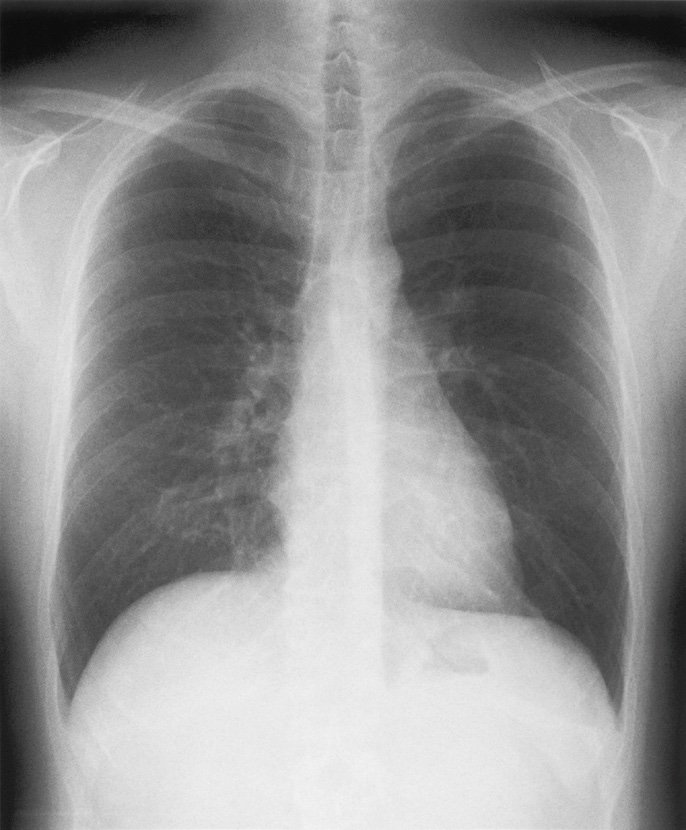
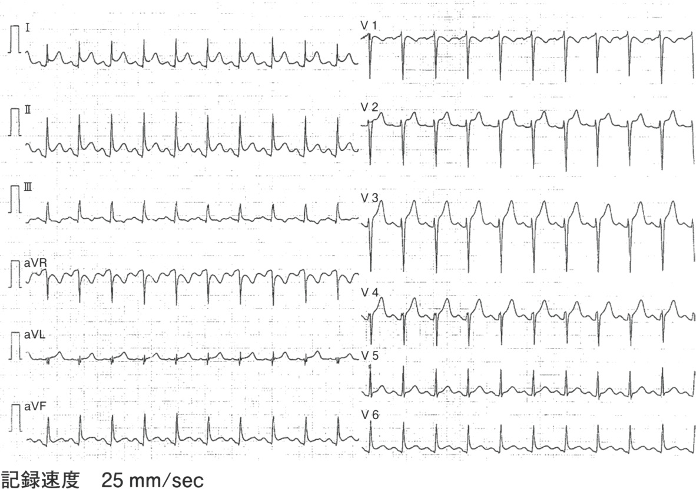
ａ Herpes zoster
ｂ Myocardial infarction
ｃ Pericarditis
ｄ Pneumothorax
ｅ Pulmonary embolism
✅
ｃ Pericarditis
Young male + pleuritic chest pain + diffuse ST elevation on ECG → acute pericarditis.
❤️ 急性心膜炎——胸痛の「向き」と心電図で診断する
急性心膜炎は心膜の炎症で、若年〜中年に多く、救急外来の胸痛の約5%を占める。原因：①特発性・ウイルス性（最多。コクサッキーB・エコー・アデノ・EBV・インフルエンザ・新型コロナ） ②細菌性（結核・化膿性） ③自己免疫（SLE・関節リウマチ・強皮症） ④尿毒症 ⑤悪性腫瘍（肺癌・乳癌・リンパ腫の心膜浸潤） ⑥心筋梗塞後（早期の心外膜炎、遅発性のDressler症候群） ⑦放射線照射後 ⑧薬剤性 ⑨開心術後（post-pericardiotomy syndrome）。胸痛の性質が診断の半分を担う：
①鋭い・刺すような痛み（心筋梗塞の鈍い圧迫感と対照的）
②深吸気・咳・嚥下で増悪（心膜が胸膜と接しているため）
③仰臥位で増悪し、前傾坐位で軽快（心膜への圧が姿勢で変わる）
④僧帽筋稜への放散（横隔神経が心膜を支配し、C3-5に関連痛が出る）——これは心膜炎にきわめて特異的
心膜摩擦音〈pericardial friction rub〉は擦れるような高調な音で、収縮期・拡張早期・心房収縮期の3相性が古典的だが、実際には1〜2相のことが多い。前傾坐位・呼気終末・胸骨左縁下部で膜型を強く当てて聴くと捉えやすい。断続的に出現・消失するので、聞こえなくても否定できず、繰り返し聴診する。
心電図の4期：Stage 1＝広範な上に凹のST上昇＋PR低下（aVRではST低下・PR上昇）／Stage 2＝ST正常化・T波平低化／Stage 3＝陰性T波／Stage 4＝正常化。数日から数週かけて移行する。
治療：NSAIDs（イブプロフェン・アスピリン）を炎症が消えるまで十分量、＋コルヒチンを3か月。コルヒチンは再発率を約半分に減らすので標準治療に組み込まれている。副腎皮質ステロイドは再発を増やすため、NSAIDs不応例・自己免疫性・尿毒症性などに限って用いる。心筋梗塞後の心膜炎ではNSAIDsのうちインドメタシンやステロイドは心筋の菲薄化・心破裂のリスクから避け、アスピリンを用いる。
□ 選択肢の検討
| 選択肢 | 解説 |
|---|---|
| ａ Herpes zoster | 合わない。帯状疱疹〈herpes zoster〉の胸痛は片側性・皮膚分節（デルマトーム）に一致し、灼熱感・電撃痛・アロディニア（触れるだけで痛む）を伴うのが特徴である——本例の痛みは呼吸で増悪する（worse on breathing）と記載されており、これは胸膜性・心膜性の痛みの記述であって神経痛ではない。また帯状疱疹では数日以内に同じ分節へ小水疱が出現するが、皮疹の記載がない。帯状疱疹が心電図を変えることもない——本例の決め手が心電図にある以上、皮膚疾患は答えにならない。 |
| ｂ Myocardial infarction | 否定的。21歳の健康な男性で2日続く呼吸性の胸痛という提示は、心筋梗塞の疫学からも症状からも遠い——心筋梗塞の痛みは絞扼感・圧迫感で数分から数十分持続し、呼吸や体位で変化しない。心電図でも決定的な違いがある：心筋梗塞のST上昇は「上に凸（convex・tombstone）」で特定の冠動脈支配領域に限局し、対側誘導にreciprocal change（鏡像変化）を伴う。対して急性心膜炎のST上昇は「上に凹（concave・saddle-back）」で広範な誘導に及び、鏡像変化を伴わない（aVRとV1を除く）。この区別は緊急のカテーテル検査を行うかどうかを分ける、極めて実務的な判断である。 |
| ◯ ｃ Pericarditis | これが正解。若年男性・呼吸で増悪する胸痛・肺と心臓の診察に異常なし・胸部エックス線は正常・心電図で広範なST上昇——急性心膜炎〈acute pericarditis〉の典型像である。急性心膜炎の診断は次の4項目のうち2つ以上で行う：①特徴的な胸痛（鋭く、吸気と仰臥位で増悪し前傾坐位で軽快） ②心膜摩擦音 ③広範なST上昇またはPR低下 ④新規または増加した心嚢液。本例は①と③を満たす。若年者ではウイルス性（コクサッキーB・エコー・アデノ・インフルエンザなど）または特発性が大半で、感冒様症状が先行することが多い。治療はNSAIDs（またはアスピリン）＋コルヒチンで、コルヒチンの併用が再発を約半分に減らす。 |
| ｄ Pneumothorax | 合わない。気胸〈pneumothorax〉なら患側の呼吸音減弱と打診での鼓音が聴取され、胸部エックス線で肺の虚脱線が見えるはずである——本例はlung examination unremarkable（肺の診察に異常なし）かつ胸部エックス線が示されて正常であり、両方から否定される。なお若い痩せ型の男性という点は原発性自然気胸の好発像に合致するので、疫学だけで飛びついてはいけないという点で良い引っかけになっている。気胸は突然発症が典型で、本例の「2日続く」という経過とも合わない。 |
| ｅ Pulmonary embolism | 否定的。肺塞栓症〈pulmonary embolism〉も胸膜痛（呼吸で増悪する胸痛）を来すため鑑別に挙がる——しかし典型的には突然の呼吸困難・頻呼吸・頻脈・低酸素血症を伴い、危険因子（長期臥床・手術後・悪性腫瘍・経口避妊薬・長時間の移動・血栓性素因）が背景にある。本例は21歳で既往のない健康な男性（previously healthy）で、バイタルや酸素化の異常も記載されていない。心電図所見も異なる——肺塞栓症では洞性頻脈が最多、次いでV1〜V4の陰性T波、S1Q3T3、右脚ブロックであって、広範なST上昇にはならない。 |
🔍 ST上昇の鑑別——「上に凹か凸か」「広範か限局か」
| 急性心膜炎 | ST上昇型心筋梗塞 | 早期再分極 | |
|---|---|---|---|
| ST の形 | 上に凹（saddle-back） | 上に凸（convex・tombstone） | 上に凹＋J点のnotch |
| 分布 | 広範（aVR・V1以外のほぼ全誘導） | 冠動脈支配領域に限局 | V2〜V5に多い |
| 鏡像変化 | なし | あり（対側誘導のST低下） | なし |
| PR部分 | PR低下（aVRではPR上昇） | 正常 | 正常 |
| 異常Q波 | 出ない | 経過とともに出現 | なし |
| 経時変化 | 数日〜数週で4期を移行 | 数時間で急速に変化 | 変化しない（年余にわたり同じ） |
| トロポニン | 正常〜軽度上昇（心筋心膜炎なら上昇） | 著明上昇 | 正常 |
| 痛みの性質 | 呼吸・体位で変化 | 変化しない | 無症状 |
心筋心膜炎〈myopericarditis〉——心膜炎に心筋障害が加わりトロポニンが上昇する。心機能が保たれていれば予後は良好だが、運動制限（競技スポーツは少なくとも3〜6か月）が要る。逆に心筋炎が主体（perimyocarditis）で心機能が低下していれば、劇症型心筋炎への進展を警戒して入院管理する。
入院を要する「high risk」の指標：①38℃を超える発熱 ②亜急性の経過 ③大量の心嚢液（10mm超）またはタンポナーデ ④NSAIDsが1週間効かない ⑤心筋炎の合併（トロポニン上昇） ⑥免疫抑制状態 ⑦外傷 ⑧経口抗凝固薬内服中。本例はいずれにも該当せず、外来でNSAIDs＋コルヒチンを開始してよい低リスク例である。
英文問題の読み方——国試の英文問題は語彙より構造で解ける。worse on breathing（呼吸で増悪）＝胸膜性/心膜性の痛み、unremarkable（特記所見なし）＝所見の否定、previously healthy＝既往と危険因子の否定。この3語で気胸・肺塞栓・心筋梗塞が順に落ちていく。
🎯 国試ポイント
① 若年男性＋呼吸で増悪する胸痛＋広範なST上昇＝急性心膜炎。② 診断は4項目のうち2つ以上——①特徴的胸痛 ②心膜摩擦音 ③広範なST上昇/PR低下 ④新規の心嚢液。
③ 心膜炎のST上昇は「上に凹・広範・鏡像変化なし・PR低下あり・異常Q波なし」。心筋梗塞は「上に凸・限局・鏡像変化あり」。
④ 心膜炎の痛みは仰臥位で増悪し前傾坐位で軽快。僧帽筋稜への放散は特異的（横隔神経C3-5）。
⑤ 治療はNSAIDs＋コルヒチン。コルヒチンが再発を約半分に減らす。ステロイドは再発を増やすので第一選択にしない。
⑥ 心筋梗塞後の心膜炎ではアスピリンを用い、インドメタシンやステロイドは避ける（心筋菲薄化・心破裂のリスク）。
⑦ 心膜摩擦音は3相性が古典的だが断続的。聞こえなくても否定できない。前傾坐位・呼気終末で聴く。
⑧ 心電図は4期を数日〜数週で移行。早期再分極は年余にわたり変化しない点で区別する。
⑨ トロポニンが上がれば心筋心膜炎——競技スポーツは3〜6か月制限。
Q.390(112C-17)★2択正答率 97%
ショックをきたす病態で早期から中心静脈圧が上昇するのはどれか。2 つ選べ。
ａ 敗血症
ｂ 緊張性気胸
ｃ 異所性妊娠破裂
ｄ 心タンポナーデ
ｅ アナフィラキシー
✅
ｂ 緊張性気胸 ＋ ｄ 心タンポナーデ
閉塞性ショック（緊張性気胸・心タンポナーデ）：静脈還流↓→CVP↑（逆説的高CVP）。
❤️ ショックの4分類——中心静脈圧が上がるのはどれか
ショックは「組織への酸素供給が需要に見合わない状態」と定義され、血圧の数値そのものではない。分類は血行動態のどこが壊れているかで4つに分ける——この枠組みが治療方針を直接決める。| 型 | 代表疾患 | 中心静脈圧 | 心拍出量 | 末梢血管抵抗 | 治療の核 |
|---|---|---|---|---|---|
| 循環血液量減少性 | 出血・脱水・熱傷・異所性妊娠破裂 | 低下 | 低下 | 上昇 | 輸液・輸血・止血 |
| 心原性 | 心筋梗塞・重症弁膜症・不整脈・劇症型心筋炎 | 上昇 | 低下 | 上昇 | 強心薬・補助循環・原因治療 |
| 閉塞性 | 心タンポナーデ・緊張性気胸・広範な肺血栓塞栓症 | 上昇 | 低下 | 上昇 | 閉塞の物理的解除 |
| 血液分布異常性 | 敗血症・アナフィラキシー・神経原性 | 低下 | 増加（初期） | 低下 | 輸液＋血管収縮薬＋原因治療 |
なぜ閉塞性で「静脈還流が減るのに中心静脈圧が上がる」のか——ここが理解の山場である。中心静脈圧は「右房の圧」であって「戻ってきた血液の量」ではない。閉塞性ショックでは右房から先（右室・肺・左心）へ血液が進めないため、右房の手前で血液が渋滞して圧が上がる。だから心臓へ入る量は減っているのに、入口の圧は高い。この「入口は満杯なのに出口へ流れない」という像が、閉塞性・心原性ショックに共通する。
ベッドサイドでの見分け方——頸静脈が怒張していれば心原性か閉塞性（輸液は逆効果）、虚脱していれば循環血液量減少性か血液分布異常性（輸液が必要）。皮膚が冷たければ心拍出量低下型、温かければ血液分布異常性（warm shock）。この2軸（頸静脈と皮膚温）だけで、初期対応の方向は決まる。
□ 選択肢の検討
| 選択肢 | 解説 |
|---|---|
| ａ 敗血症 | 中心静脈圧は低下する。敗血症性ショックは血液分布異常性ショック〈distributive shock〉に分類される——機序は炎症性サイトカインと一酸化窒素による末梢血管の広範な拡張と血管透過性亢進による血管内から間質への体液漏出で、「血管という容器が広がり、中身も減る」状態である。その結果前負荷は減り、中心静脈圧は低下する。心拍出量はむしろ増加（warm shock）し、末梢は温かく、脈圧は開くのが早期像である。治療は初期輸液（晶質液30mL/kg）＋ノルアドレナリン＋原因への抗菌薬と感染源除去で、まず容量を入れることが答えになる。 |
| ◯ ｂ 緊張性気胸 | これが正解。緊張性気胸〈tension pneumothorax〉は胸腔内に一方向性に空気が入り続け、胸腔内圧が陽圧になる病態である——上昇した胸腔内圧が上大静脈・下大静脈を圧迫し、さらに縦隔を健側へ偏位させて大静脈を屈曲させるため、心臓へ戻る血液が物理的に妨げられる。つまり閉塞性ショック〈obstructive shock〉で、静脈還流が減っているのに中心静脈圧は上がるという一見矛盾した状態になる。身体所見は患側の呼吸音消失・打診で鼓音・気管の健側偏位・頸静脈怒張・皮下気腫。画像を待たずに、身体所見だけで直ちに脱気（第2肋間鎖骨中線または第5肋間前腋窩線の穿刺）する——これが臨床上の鉄則である。 |
| ｃ 異所性妊娠破裂 | 中心静脈圧は低下する。異所性妊娠の破裂は腹腔内への大量出血であり、典型的な循環血液量減少性ショック〈hypovolemic shock〉である——血管内の中身が失われるので、前負荷・中心静脈圧・心拍出量のすべてが低下し、代償として頻脈と末梢血管収縮（冷たく湿った皮膚・毛細血管再充満時間の延長）が起こる。妊娠可能年齢の女性が腹痛・性器出血・ショックで来院したら、まず妊娠反応と経腟超音波——これは救急の鉄則である。治療は輸液・輸血と緊急手術による止血。 |
| ◯ ｄ 心タンポナーデ | これが正解。心タンポナーデは心嚢内圧の上昇により心室の充満が妨げられる閉塞性ショックの代表である——心嚢内圧＝右房圧＝右室拡張期圧と等値化するため、中心静脈圧は明確に上昇する。身体所見はBeck三徴（低血圧・頸静脈怒張・心音減弱）＋奇脈＋頻脈で、心エコーでは心嚢液・拡張期右室虚脱・下大静脈の拡張と呼吸性変動消失を認める。ここで最も重要なのは「輸液で治らない」ことを理解している点である——容量が足りないのではなく入れないのが問題なので、心嚢穿刺やドレナージによる圧の解除が根本治療になる（一時的な輸液は搬送までのつなぎにすぎない）。 |
| ｅ アナフィラキシー | 中心静脈圧は低下する。アナフィラキシーショックも血液分布異常性ショックである——機序は肥満細胞から放出されたヒスタミンなどによる血管拡張と血管透過性亢進で、数分で血漿の35%が血管外へ漏出しうる。敗血症と同じく容器が広がり中身も減るので中心静脈圧は下がる。治療の第一手はアドレナリン0.3〜0.5mgの大腿部外側への筋注——皮下注ではなく筋注、静注でもない。理由は筋肉の血流が豊富で吸収が速く、静注は不整脈のリスクがあるためである。続いて仰臥位で下肢挙上・大量輸液・酸素。抗ヒスタミン薬とステロイドは補助にすぎず、アドレナリンの遅れが死亡に直結する。 |
🔍 閉塞性ショックの3疾患を見分ける／初期対応の順序
| 緊張性気胸 | 心タンポナーデ | 広範な肺血栓塞栓症 | |
|---|---|---|---|
| 呼吸音 | 患側で消失 | 正常 | 正常 |
| 打診 | 患側で鼓音 | 正常 | 正常 |
| 気管偏位 | 健側へ | なし | なし |
| 心音 | 減弱（患側へ心臓が押される） | 減弱 | Ⅱ音肺動脈成分の亢進 |
| 奇脈 | あり | あり（特徴的） | あり |
| 心電図 | 非特異的 | 低電位・電気的交互脈 | 洞性頻脈・V1-4陰性T・S1Q3T3・右脚ブロック |
| SpO2 | 著明に低下 | 比較的保たれる | 低下 |
| 決め手 | 身体所見（画像を待たない） | 心エコー | 造影CT・心エコー（右室拡大） |
| 治療 | 直ちに脱気→胸腔ドレーン | 心嚢穿刺・ドレナージ | 血栓溶解・カテーテル治療・外科的血栓摘除 |
ショックの初期対応（型を問わず共通）：①気道と酸素 ②静脈路2本（太い末梢） ③モニター（心電図・SpO2・血圧） ④血液検査と血液ガス（乳酸値がショックの重症度と治療反応の指標） ⑤エコー（FAST・心エコー・IVC）で型を判定 ⑥型に応じた治療。乳酸値2mmol/L超は組織低灌流のサインで、治療により低下するかを繰り返し測ることが予後の評価になる。
神経原性ショックも血液分布異常性に含まれるが、頸髄・上位胸髄損傷で交感神経が遮断されるため「低血圧なのに徐脈で、皮膚は温かい」という特異な像を示す。出血性ショックの頻脈と正反対なので、外傷患者でこの組み合わせを見たら脊髄損傷を疑う。
🎯 国試ポイント
① 中心静脈圧が早期から上昇するのは閉塞性と心原性。本問の正解は緊張性気胸と心タンポナーデ。② 敗血症・アナフィラキシーは血液分布異常性＝血管が広がり中身も漏れる＝中心静脈圧は低下。異所性妊娠破裂は循環血液量減少性＝低下。
③ 閉塞性で中心静脈圧が上がる理由——中心静脈圧は「右房の圧」であって還流量ではない。右房から先へ進めないので入口が渋滞する。
④ ベッドサイドの2軸＝頸静脈（怒張なら輸液は逆効果）と皮膚温（温かければ血液分布異常性）。
⑤ 緊張性気胸は画像を待たず直ちに脱気。第2肋間鎖骨中線または第5肋間前腋窩線、肋骨上縁を通す。
⑥ 心タンポナーデは輸液では治らない——圧の解除（心嚢穿刺・ドレナージ）が根本治療。
⑦ アナフィラキシーの第一手はアドレナリン0.3〜0.5mgの大腿外側筋注。皮下注でも静注でもない。
⑧ 神経原性ショックは「低血圧＋徐脈＋温かい皮膚」。出血性ショックの頻脈と正反対。
⑨ 乳酸値2mmol/L超は組織低灌流。治療反応の指標として繰り返し測る。
Q.391(111A-9)★正答率 70%
心臓腫瘍について誤っているのはどれか。
ａ 粘液腫の頻度が最も高い。
ｂ 粘液腫は左房に好発する。
ｃ 粘液腫は脳塞栓の原因となる。
ｄ 原発性腫瘍は転移性腫瘍より頻度が高い。
ｅ 原発性悪性腫瘍の5 年生存率は約80％である。
✅
ｅ 原発性悪性腫瘍の5年生存率は約80%である。（誤り）
原発性悪性心臓腫瘍（主に肉腫）の5年生存率は極めて低く（10〜20%程度）、80%は誤り。
❤️ 心臓腫瘍の全体像——頻度・部位・良悪の3軸で整理する
まず頻度の階層を押さえる：①転移性 ＞＞ 原発性（20〜40倍）
②原発性のうち良性が約75%、悪性が約25%
③良性の最多は粘液腫（成人）／横紋筋腫（小児）
④悪性の最多は血管肉腫
| 分類 | 腫瘍 | 特徴 |
|---|---|---|
| 原発性・良性 | 粘液腫 | 成人で最多。左房・心房中隔に有茎性。閉塞・塞栓・全身症状（IL-6） |
| 乳頭状線維弾性腫 | 弁（大動脈弁・僧帽弁）に付着。小さいが塞栓源になる | |
| 横紋筋腫 | 小児で最多。結節性硬化症に合併・多発性・自然退縮する | |
| 線維腫 | 小児。心室中隔に単発。退縮しない | |
| 脂肪腫・血管腫 | まれ | |
| 原発性・悪性 | 血管肉腫 | 悪性で最多。右房に好発。血性心嚢液・急速進行 |
| 横紋筋肉腫・未分化肉腫 | 小児〜若年にも | |
| 原発性心臓リンパ腫 | 免疫不全（AIDS・移植後）で増える。化学療法が効きうる | |
| 転移性 | 肺癌・乳癌・悪性黒色腫・リンパ腫・白血病 | 心膜への転移が最多→癌性心膜炎・心タンポナーデ |
診断の道具：心エコー（第一選択）・造影CT・心臓MRI。MRIは組織性状（脂肪・線維・出血）を評価でき、良悪の推定に有用。PETは悪性の評価と転移検索に使う。
□ 選択肢の検討
| 選択肢 | 解説 |
|---|---|
| ａ 粘液腫の頻度が最も高い。 | 正しい。原発性心臓腫瘍のうち約半数が粘液腫〈myxoma〉で、成人の原発性心臓腫瘍として最も頻度が高い——残りの良性腫瘍としては乳頭状線維弾性腫（弁に付着し塞栓源になる）・脂肪腫・線維腫・血管腫があり、小児では横紋筋腫が最多である。小児の横紋筋腫は結節性硬化症に高率に合併し、多発性で、しかも自然退縮するため無症状なら経過観察でよい——成人の粘液腫が「見つけたら手術」であるのと対照的である。 |
| ｂ 粘液腫は左房に好発する。 | 正しい。粘液腫の75〜80%は左房に発生し、心房中隔の卵円窩付近に茎を持って付着する——残りは右房が15〜20%、心室は5%未満とまれである。左房に多いことが症状を決める——拡張期に僧帽弁口を塞いで僧帽弁狭窄症様の血行動態を作り、腫瘍片は体循環へ飛んで脳梗塞を起こす。右房粘液腫なら三尖弁口の閉塞による右心不全（頸静脈怒張・肝腫大・腹水）と肺塞栓を起こし、症状の組み合わせが左右で入れ替わる。 |
| ｃ 粘液腫は脳塞栓の原因となる。 | 正しい。左房粘液腫は脆く崩れやすい腫瘍片と表面に付着した血栓のいずれもが塞栓源になる——粘液腫患者の30〜40%に塞栓症が起こり、そのうち脳が最も多い。若年者の原因不明の脳梗塞（cryptogenic stroke）を見たら、卵円孔開存・心房細動・血栓性素因と並んで心臓粘液腫を鑑別に入れ、心エコーを行う。摘出標本の病理で脳血管に粘液腫組織が塞栓していることが確認された報告もあり、まれに塞栓した腫瘍細胞が血管壁で増殖して感染性動脈瘤に似た瘤を作ることさえある。 |
| ｄ 原発性腫瘍は転移性腫瘍より頻度が高い。 | 誤り。心臓の腫瘍は転移性の方が原発性より20〜40倍多い——剖検研究では悪性腫瘍患者の10〜20%に心臓・心膜への転移が見つかる。由来は肺癌・乳癌・悪性黒色腫・悪性リンパ腫・白血病・食道癌が多く、とくに悪性黒色腫は心転移率が非常に高い。転移の部位は心膜が最も多く、癌性心膜炎から心嚢液貯留・心タンポナーデを来す——これがQ.417（109I-50）の病態である。「原発性の方が多い」というこの選択肢は明確に誤りだが、本問は「誤っているのはどれか」で正解が1つなので、選択肢eとの比較で最終判断する。 |
| ◯ ｅ 原発性悪性腫瘍の5 年生存率は約80％である。 | これが正解＝誤り。原発性の悪性心臓腫瘍は血管肉腫〈angiosarcoma〉が最多（右房に好発）で、次いで横紋筋肉腫・未分化多形肉腫・悪性リンパ腫である——これらの5年生存率は10〜20%程度と極めて不良で、「約80%」は明らかに誤り。予後が悪い理由は①発見時に既に局所進展や遠隔転移があることが多い ②心臓という部位の性質上、完全切除が困難 ③化学療法・放射線療法の効果が限定的。症状は心不全・不整脈・心嚢液貯留（血性）・上大静脈症候群・全身症状と非特異的で、診断が遅れる。選択肢dも誤りだが、「5年生存率80%」という数値の誤りの方が桁違いに大きく、出題意図としてこちらが正解である。 |
🔍 心臓の「腫瘤影」を見たときの鑑別／悪性心臓腫瘍の臨床
| 腫瘤 | 部位・形態 | 見分けるポイント |
|---|---|---|
| 粘液腫 | 左房・心房中隔に有茎性・可動性 | 造影効果あり・洞調律のことが多い |
| 左房内血栓 | 左心耳に固着・広基性 | 心房細動あり・造影効果なし・僧帽弁狭窄の合併 |
| 疣贅（IE） | 弁尖の心房側/心室側に付着 | 発熱・血液培養陽性・弁逆流 |
| 乳頭状線維弾性腫 | 弁に付着・小さい（1cm前後）・イソギンチャク様 | 発熱なし・塞栓源 |
| 悪性腫瘍（原発・転移） | 広基性・心筋へ浸潤・心膜浸潤 | 血性心嚢液・急速増大・全身の悪性腫瘍の存在 |
| Lambl疣贅 | 加齢による弁の微小な線維性索状物 | 臨床的意義に乏しい |
血管肉腫の臨床——右房後壁に好発し、心膜へ浸潤して血性心嚢液・心タンポナーデを来す。右心不全・上大静脈症候群で発見されることも多い。診断時に既に肺転移を有することが多く、手術による完全切除が困難。集学的治療でも生存期間中央値は1年前後にとどまる。
癌性心膜炎——悪性腫瘍患者に生じる心嚢液貯留で、心タンポナーデの原因として最も多いのがこれである。治療は心嚢穿刺・ドレナージによる症状緩和が中心で、再貯留を防ぐために心膜開窓術〈pericardial window〉や心嚢内への薬剤注入を行うこともある。Q.417（109I-50）の肺腺癌症例、Q.422（108I-41）の症例がこれに当たる。
心臓腫瘍が「循環器」だけの話ではない点も押さえる——小児の横紋筋腫は神経皮膚症候群（結節性硬化症）、原発性心臓リンパ腫は免疫不全、転移性は原発巣の悪性腫瘍と、それぞれ別の領域につながっている。心臓に腫瘤を見つけたら全身を見るのが実務である。
🎯 国試ポイント
① 原発性悪性心臓腫瘍の5年生存率は10〜20%程度で極めて不良。「約80%」は誤り＝本問の正解。② 心臓腫瘍は転移性が原発性の20〜40倍多い（選択肢dも誤りだが、数値の誤りが大きいeが出題意図の正解）。
③ 原発性の最多は粘液腫（良性の約半数・成人で最多）。75〜80%が左房・心房中隔に有茎性。
④ 粘液腫は脳塞栓の原因。若年者の原因不明の脳梗塞では鑑別に入れる。
⑤ 原発性悪性の最多は血管肉腫（右房好発・血性心嚢液）。
⑥ 小児で最多の心臓腫瘍は横紋筋腫——結節性硬化症に合併し、多発性で自然退縮する。
⑦ 転移は心膜に最も多く、癌性心膜炎から心タンポナーデ。心タンポナーデの原因として最多。
⑧ 左房内腫瘤の鑑別——有茎性・可動性・洞調律・造影効果あり＝粘液腫／広基性・左心耳固着・心房細動・造影効果なし＝血栓。
⑨ 結節性硬化症の主要所見＝顔面血管線維腫・葉状白斑・大脳皮質結節・腎血管筋脂肪腫・肺リンパ脈管筋腫症・心横紋筋腫。
Q.392(111I-61)★📷 画像正答率 76%
52 歳の女性。徐々に増強する全身倦怠感を主訴に来院した。脈拍100/ 分、整。血圧90/60mmHg。呼吸数18/ 分。
SpO2 99％（room air）。眼瞼結膜と眼球結膜とに異常を認めない。頸静脈の怒張を認める。心音はⅠ音とⅡ音の減弱を認める。心電図を示す。心エコーで心囊液の貯留を認めた。
この患者で考えにくいのはどれか。
SpO2 99％（room air）。眼瞼結膜と眼球結膜とに異常を認めない。頸静脈の怒張を認める。心音はⅠ音とⅡ音の減弱を認める。心電図を示す。心エコーで心囊液の貯留を認めた。
この患者で考えにくいのはどれか。

ａ 結 核
ｂ 尿毒症
ｃ 悪性腫瘍
ｄ 甲状腺機能亢進症
ｅ 全身性エリテマトーデス〈SLE〉
✅
ｄ 甲状腺機能亢進症
心嚢液貯留（心タンポナーデ）の原因：結核・悪性腫瘍・SLE・尿毒症はあり得るが、甲状腺機能亢進症は心嚢液貯留を来しにくい（むしろ亢進症では心拍出量↑）。
❤️ 心嚢液貯留の原因を「頻度」と「治療が変わるか」で覚える
本例は52歳女性・徐々に増強する全身倦怠感・脈拍100/分・血圧90/60mmHg・頸静脈怒張・Ⅰ音Ⅱ音の減弱・心電図で低電位・心エコーで心嚢液貯留——Beck三徴（低血圧・頸静脈怒張・心音減弱）が揃っており、心タンポナーデに近い状態である。心嚢液貯留の原因（成人）：
| 原因 | 特徴 | 心嚢液の性状・治療 |
|---|---|---|
| 特発性・ウイルス性 | 最多。若年に多く自然軽快 | 漿液性。NSAIDs＋コルヒチン |
| 悪性腫瘍 | タンポナーデの原因として最多。肺癌・乳癌・リンパ腫 | 血性・細胞診陽性。ドレナージ＋心膜開窓 |
| 結核 | 亜急性。盗汗・体重減少。収縮性心膜炎へ移行 | 滲出性・リンパ球優位・ADA高値。抗結核薬＋ステロイド |
| 尿毒症 | 末期腎不全・透析不足 | 血性のことも。透析の強化が治療 |
| 膠原病（SLE・RA・強皮症） | SLEでは20〜50%に心膜炎 | 滲出性。ステロイド |
| 甲状腺機能低下症 | 緩徐に大量貯留・徐脈・低電位 | 粘稠。甲状腺ホルモン補充 |
| 心筋梗塞後 | 早期の心外膜炎／遅発性のDressler症候群 | アスピリン（インドメタシン・ステロイドは避ける） |
| 大動脈解離・心破裂・外傷 | 急性・少量でタンポナーデ | 血性。穿刺せず手術 |
| 開心術後 | post-pericardiotomy症候群 | NSAIDs＋コルヒチン |
□ 選択肢の検討
| 選択肢 | 解説 |
|---|---|
| ａ 結 核 | あり得る。結核性心膜炎は世界的には心嚢液貯留と収縮性心膜炎の最大の原因であり、日本でも高齢者・免疫抑制状態では鑑別から外せない——典型的には亜急性の経過で、微熱・盗汗・体重減少を伴い、心嚢液は滲出性でリンパ球優位、ADA〈アデノシンデアミナーゼ〉高値を示す。治療しなければ数か月から数年で収縮性心膜炎へ移行するのが最大の問題で、抗結核薬に加えて副腎皮質ステロイドの併用が収縮性心膜炎への進展を減らすとされる。診断は心嚢液のADA・PCR・培養、および他臓器の結核の検索による。 |
| ｂ 尿毒症 | あり得る。尿毒症性心膜炎は末期腎不全で透析導入前、あるいは透析が不十分な患者に生じる——機序は尿毒症物質による心膜の炎症と考えられ、血中尿素窒素の高値と相関する。特徴的なのは心電図でST上昇などの典型的変化を示さないことが多い点で、これは炎症が心膜にとどまり心外膜下心筋に及ばないためと説明される。治療は透析の強化（intensive dialysis）で、NSAIDsやステロイドではない——原因物質を除去することが治療である。透析中の抗凝固により血性心嚢液からタンポナーデを来すこともあり注意を要する。 |
| ｃ 悪性腫瘍 | あり得る。悪性腫瘍は心タンポナーデの原因として最も多い——癌性心膜炎による心嚢液貯留である——原発巣は肺癌が最多、次いで乳癌・悪性リンパ腫・白血病・悪性黒色腫。心嚢液は血性であることが多く、細胞診で悪性細胞が検出される（陽性率は50〜80%）。経過は緩徐に貯留するため大量になってから発症することが多く、1L以上溜まっていることもまれではない。本例は52歳女性・徐々に増強する全身倦怠感・血圧90/60mmHgと低め・頸静脈怒張・Ⅰ音Ⅱ音の減弱・心電図で低電位という亜急性の経過で、悪性腫瘍による心嚢液貯留は最も可能性が高い候補の一つである。 |
| ◯ ｄ 甲状腺機能亢進症 | これが正解＝考えにくい。甲状腺機能亢進症では心拍出量が増加し、末梢血管抵抗が低下する高心拍出状態となり、心嚢液貯留は起こさない——心嚢液貯留を来すのは甲状腺機能低下症〈粘液水腫〉の方である。機序は血管透過性亢進とムコ多糖の沈着による膠質浸透圧の変化で、緩徐に大量の心嚢液が貯留するがタンポナーデになることは少ない（心膜が伸びる時間があるため）。甲状腺機能低下症では心電図で低電位・徐脈・T波平低を示し、心嚢液・胸水・腹水・浮腫が揃うことがある——本例の低電位という所見だけを見ると紛らわしいが、「亢進」と書かれている時点で誤りである。甲状腺機能亢進症で問題になる心血管合併症は心房細動・高拍出性心不全・洞性頻脈である。 |
| ｅ 全身性エリテマトーデス〈SLE〉 | あり得る。全身性エリテマトーデス〈SLE〉では心膜炎が最も頻度の高い心病変で、患者の20〜50%に生じる——実際にSLEの分類基準にも漿膜炎（胸膜炎・心膜炎）が項目として含まれている。SLEの心病変は心膜炎のほかLibman-Sacks心内膜炎（無菌性疣贅）・心筋炎・冠動脈疾患の早期発症があり、抗リン脂質抗体症候群を合併すれば血栓症も加わる。SLEの心嚢液は滲出性で補体低値・抗核抗体陽性を示す。治療はNSAIDsまたは副腎皮質ステロイド。本例が52歳女性であることもSLEの好発像と矛盾しない（ただし発症年齢としてはやや高い）。 |
🔍 甲状腺と心臓——「亢進」と「低下」で何が変わるか
| 甲状腺機能亢進症 | 甲状腺機能低下症 | |
|---|---|---|
| 心拍数 | 頻脈（洞性頻脈・心房細動） | 徐脈 |
| 心拍出量 | 増加（高拍出性心不全） | 低下 |
| 末梢血管抵抗 | 低下 | 上昇 |
| 脈圧 | 増大 | 低下 |
| 心電図 | 洞性頻脈・心房細動（10〜15%） | 徐脈・低電位・T波平低・QT延長 |
| 心嚢液 | 起こさない | 起こす（緩徐・大量・タンポナーデはまれ） |
| 脂質 | 低下 | 高コレステロール血症→動脈硬化 |
| その他 | 甲状腺クリーゼ（高熱・頻脈・心不全・意識障害） | 粘液水腫性昏睡（低体温・徐脈・低換気・低ナトリウム） |
甲状腺機能低下症と心嚢液——粘液水腫では心嚢液・胸水・腹水・浮腫が同時に見られることがあり、「多漿膜腔液貯留」を見たら甲状腺機能を測るのが定石である。心嚢液はコレステロールと蛋白に富み粘稠で、ゆっくり貯留するため1L近くになってもタンポナーデにならない。治療は甲状腺ホルモンの補充だけでよく、穿刺は不要なことが多い。ただし高齢者や虚血性心疾患の合併例では少量から開始する（急激な補充は狭心症・心筋梗塞を誘発する）。
本例の心電図（低電位）の解釈——低電位の原因は①心嚢液 ②肥満 ③気胸・肺気腫 ④胸水 ⑤心アミロイドーシス ⑥甲状腺機能低下症 ⑦広範な心筋梗塞。本例では心エコーで心嚢液が確認されているので①で説明できる。
🎯 国試ポイント
① 心嚢液貯留を来すのは甲状腺機能「低下」症であって「亢進」症ではない＝本問の正解。② 甲状腺機能亢進症の心血管合併症は心房細動・高拍出性心不全・頻脈。原因不明の心房細動では必ず甲状腺機能を測る。
③ 心タンポナーデの原因として最多は悪性腫瘍（癌性心膜炎）。肺癌が最多で心嚢液は血性。
④ 結核性心膜炎は心嚢液ADA高値・リンパ球優位。収縮性心膜炎へ移行するのでステロイド併用を検討。
⑤ 尿毒症性心膜炎の治療は透析の強化。NSAIDsやステロイドではない。心電図でST上昇を示さないことが多い。
⑥ SLEでは心膜炎が最多の心病変（20〜50%）。ほかにLibman-Sacks心内膜炎・心筋炎・早発性冠動脈疾患。
⑦ 粘液水腫では多漿膜腔液貯留（心嚢液・胸水・腹水）。緩徐なのでタンポナーデはまれ。治療はホルモン補充。
⑧ 心電図低電位の原因＝心嚢液・肥満・肺気腫・胸水・心アミロイドーシス・甲状腺機能低下症。
⑨ Beck三徴＝低血圧・頸静脈怒張・心音減弱。本例はこれが揃う。
Q.393(106D-18)★2択正答率 43%
収縮性心膜炎について正しいのはどれか。2 つ選べ。
ａ β遮断薬が有効である。
ｂ 左心不全が主体である。
ｃ 心臓拡張障害がみられる。
ｄ ジギタリスが有効である。
ｅ 右室と左室の拡張末期圧が等しい。
✅
ｃ 心臓拡張障害がみられる ＋ ｅ 右室と左室の拡張末期圧が等しい
収縮性心膜炎：心膜肥厚による心臓外からの圧迫→拡張障害+左右心室拡張末期圧の等値化。
❤️ 収縮性心膜炎の病態生理——「動けるが広がれない」
収縮性心膜炎は心膜の慢性炎症の終着点である。心膜が肥厚・線維化・石灰化して伸展性を失い、心臓の拡張を機械的に制限する。原因：かつては結核性が最多だったが、現在の先進国では①特発性/ウイルス性心膜炎の後遺（最多） ②心臓手術後 ③放射線照射後（縦隔照射・Hodgkinリンパ腫や乳癌の治療後、10年以上経ってから発症することもある） ④膠原病 ⑤尿毒症 ⑥外傷。日本では結核と開心術後が国試で問われやすい。
血行動態の3つの帰結：
①拡張障害——心室が広がれず、1回拍出量が固定される。収縮能（EF）は正常
②左右心室圧の等値化——同じ箱に入っているため、右房圧＝右室拡張末期圧＝肺動脈楔入圧＝左室拡張末期圧となる
③心室間相互依存——箱の中の総容量が一定なので、片方が増えれば他方が減る。吸気時に右室が増えると心室中隔が左へ偏位する
臨床像：労作時呼吸困難・易疲労感（低心拍出）＋頸静脈怒張・肝腫大・腹水・下腿浮腫（体静脈うっ血）。腹水が浮腫に比べて目立つ。
身体所見の3本柱：①Kussmaul徴候（吸気で頸静脈圧が下がらず上がる） ②心膜ノック音（Ⅱ音直後の高調な過剰音） ③心膜の石灰化。奇脈は通常みられない——固くなった心膜が胸腔内圧の変動を心腔へ伝えないためで、心タンポナーデとの重要な違いである。
検査：胸部エックス線側面像・CTでの心膜石灰化と肥厚（4mm以上）、心エコーでの心室中隔の呼吸性動揺と僧帽弁/三尖弁流入速度の呼吸性変動、心臓カテーテルでのdip and plateauと等値化、BNPは軽度上昇にとどまる。
治療は心膜切除術〈心膜剥離術〉が唯一の根治。手術死亡率は5〜15%と決して低くなく、進行して心筋の萎縮・線維化が生じてからでは効果が乏しいため、診断がついたら早期に手術するのが原則である。
□ 選択肢の検討
| 選択肢 | 解説 |
|---|---|
| ａ β遮断薬が有効である。 | 誤り＝有効ではない。収縮性心膜炎では心室が硬い心膜に締めつけられて1回拍出量を増やせないため、心拍出量は「心拍数×1回拍出量」のうち心拍数でしか稼げない——つまり頻脈は病態を維持するための代償である。ここでβ遮断薬を投与して心拍数を落とせば、心拍出量が直接的に低下してショックに陥りうる。同じ理屈が心タンポナーデ・重症大動脈弁狭窄症・拘束型心筋症にも当てはまる——「拡張が制限されている病態では頻脈を止めてはいけない」という原則で束ねて覚える。利尿薬はうっ血症状の緩和に使えるが、入れすぎると前負荷が減って心拍出量が落ちるので慎重に用いる。 |
| ｂ 左心不全が主体である。 | 誤り＝右心不全が主体である。収縮性心膜炎の臨床像は圧倒的に右心不全である——頸静脈怒張・肝腫大・腹水・下腿浮腫が前面に出る。肺うっ血（呼吸困難・起座呼吸）は軽度にとどまるのが特徴で、これは左室の充満も制限されるため肺へ送られる血液自体が増えないことによる。腹水が下腿浮腫に不釣り合いなほど多いため、肝硬変や腹膜疾患と誤診されるのは古典的な落とし穴である。「原因不明の腹水と肝腫大」を見たら、頸静脈を必ず観察する——怒張していれば心臓由来を疑う。 |
| ◯ ｃ 心臓拡張障害がみられる。 | これが正解。収縮性心膜炎の本態は拡張障害〈diastolic dysfunction〉である——肥厚・線維化・石灰化した心膜が心臓を硬い箱に閉じ込め、心室が広がれない。重要なのは収縮能（左室駆出率）は正常に保たれていることで、「動けるが広がれない」という状態である。血行動態としては①拡張早期だけは箱の中に余裕があり急速に流入する（dip） ②箱の容量限界で充満が止まる（plateau）という二相性を示し、これがdip and plateau（平方根徴候）として圧波形に現れる。Q.378（119D-2）で示された圧波形がまさにこれである。 |
| ｄ ジギタリスが有効である。 | 誤り＝有効ではない。ジギタリスは強心配糖体で、心筋の収縮力を高める薬である——しかし収縮性心膜炎では収縮能は保たれており、問題は拡張が制限されていることなので、強心薬を投与しても心拍出量は増えない。加えてジギタリスには房室伝導抑制による心拍数低下作用があり、選択肢aと同じ理由で代償である頻脈を奪って病態を悪化させる。同じ論理で肥大型心筋症・拘束型心筋症・重症大動脈弁狭窄症でも強心薬は無効あるいは有害である。「収縮不全にだけ強心薬」という区別が要点で、収縮性心膜炎の唯一の根治は心膜切除術である。 |
| ◯ ｅ 右室と左室の拡張末期圧が等しい。 | これが正解。収縮性心膜炎では左室と右室が同じ硬い心膜の箱の中に閉じ込められているため、拡張末期圧が同じ値に収束する（等値化〈equalization〉）——実際には右房圧・右室拡張末期圧・肺動脈楔入圧・左室拡張末期圧の4つがほぼ同じ（差が5mmHg以内）になる。これが拘束型心筋症との鑑別点になる——拘束型心筋症では心筋そのものが硬く、左室の方がより強く障害されるため、左室拡張末期圧が右室より5mmHg以上高い。同じ箱に入っていることの帰結として心室間相互依存も生じ、吸気時に右室が膨らむぶん心室中隔が左へ偏位して左室充満が減る——これは心エコーで確認でき、収縮性心膜炎に特異的な所見である。 |
🔍 収縮性心膜炎で「使ってはいけない薬」の論理
| 病態 | 本質 | 避ける薬 | 理由 |
|---|---|---|---|
| 収縮性心膜炎 | 拡張制限（外からの圧迫） | β遮断薬・ジギタリス・ベラパミル | 頻脈という代償を奪う |
| 心タンポナーデ | 拡張制限（心嚢液の圧） | β遮断薬・利尿薬・血管拡張薬 | 頻脈と前負荷を奪う |
| 重症大動脈弁狭窄症 | 固定された流出路狭窄 | 硝酸薬・過度の降圧薬 | 後負荷依存の冠灌流が落ち失神・心停止 |
| 閉塞性肥大型心筋症 | 収縮期の流出路閉塞 | 硝酸薬・強心薬・利尿薬 | 前負荷減少と収縮増強で閉塞が悪化 |
| 右室梗塞 | 右室の収縮不全 | 硝酸薬・利尿薬 | 前負荷依存。輸液が治療 |
収縮性心膜炎の内科治療でできること：①利尿薬（うっ血症状の緩和のみ。慎重に） ②塩分制限 ③洞調律の維持（心房細動になると心房収縮による充満が失われ悪化する） ④結核性なら抗結核薬 ⑤炎症が活動性の亜急性期であればNSAIDs・コルヒチン・ステロイドで可逆性のことがある（transient constriction）。「一過性収縮性心膜炎」——急性心膜炎後の数か月間に一時的に収縮性の血行動態を示し、抗炎症治療で改善する群が10〜20%存在する。石灰化がなく炎症所見（CRP高値・造影MRIでの心膜の造影効果）が強い症例では、すぐ手術せず抗炎症治療を試みる。
手術のタイミング——NYHA Ⅱ〜Ⅲで、心筋の二次的障害が進む前が最良。NYHA Ⅳまで進んだ症例や、放射線照射後で心筋自体が線維化している症例では手術死亡率が高く、効果も限定的である。本問が正答率43%と低いのは、「心臓拡張障害」と「左右拡張末期圧の等値化」という2つの正しい記述を、5つの選択肢から確実に選び切る必要があるためである。病態の一点（外から締めつけられている）から5つすべてを演繹できるかが問われている。
🎯 国試ポイント
① 収縮性心膜炎の本態は拡張障害（収縮能＝EFは正常）＝正解の1つ。② 左右心室の拡張末期圧が等値化する＝もう1つの正解。同じ硬い箱に入っているため。
③ β遮断薬・ジギタリスは有害——頻脈が心拍出量を保つ唯一の手段だから。「拡張が制限された病態では頻脈を止めない」。
④ 臨床像は右心不全が主体（頸静脈怒張・肝腫大・腹水・浮腫）。肺うっ血は軽い。腹水が目立ち肝硬変と誤診されやすい。
⑤ 3徴＝Kussmaul徴候・心膜ノック音・心膜石灰化。奇脈は通常なし（タンポナーデとの違い）。
⑥ 拘束型心筋症との鑑別——収縮性心膜炎は左右等値化・心膜肥厚あり・BNP軽度／拘束型は左室優位（左＞右5mmHg以上）・心膜正常・BNP著明高値。
⑦ 治療は心膜切除術が唯一の根治。進行してからでは効果が乏しいので早期手術。
⑧ 一過性収縮性心膜炎（10〜20%）——石灰化がなく炎症が活動性なら抗炎症治療で改善しうる。
⑨ 洞調律の維持が重要——心房細動になると心房収縮による充満が失われ悪化する。
Q.394(104D-25)📷 画像★正答率 73%
34 歳の女性。3 週前から持続する発熱と易疲労感とを主訴に来院した。体温37.6℃。脈拍92/ 分、整。血圧136/72mmHg。
心尖部で3/6 度の収縮期雑音を聴取する。赤沈62mm/1 時間。血液所見：赤血球382 万、Hb 11.0g/dl、Ht 31％、白血球9,800、血小板10 万。CRP 11.8mg/dl。来院時の心エコー図（A，B）を示す。
合併する病態として考えにくいのはどれか。
心尖部で3/6 度の収縮期雑音を聴取する。赤沈62mm/1 時間。血液所見：赤血球382 万、Hb 11.0g/dl、Ht 31％、白血球9,800、血小板10 万。CRP 11.8mg/dl。来院時の心エコー図（A，B）を示す。
合併する病態として考えにくいのはどれか。
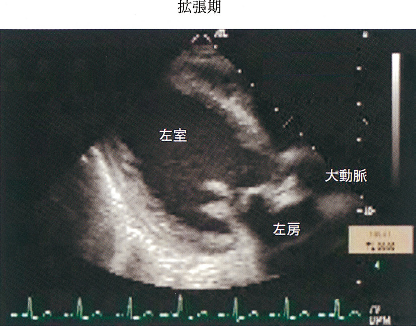
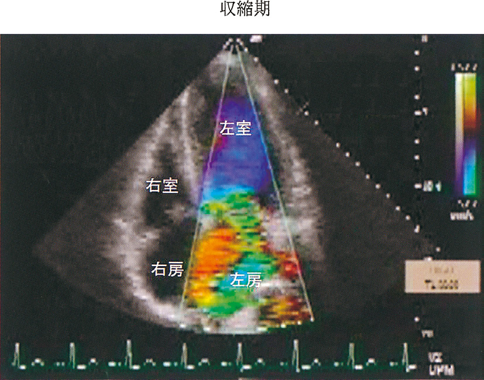
ａ 脳梗塞
ｂ 脳出血
ｃ 肺うっ血
ｄ 貧血の進行
ｅ 低γ- グロブリン血症
✅
ｅ 低γ-グロブリン血症
IEでは免疫複合体形成→高γ-グロブリン血症（γグロブリン↑）。低γ-グロブリン血症は起こらない。
❤️ 感染性心内膜炎の合併症を「臓器別」に総ざらいする
本例は34歳女性・3週間続く発熱と易疲労感・心尖部3/6度収縮期雑音・赤沈62mm/時・貧血（Hb 11.0g/dL）・血小板10万・CRP 11.8mg/dLで、心エコー図（A・B）に僧帽弁の疣贅が描出されている亜急性IEである。IEの合併症は「①心臓自体 ②塞栓 ③免疫複合体 ④持続感染」の4系統で整理すると漏れがない：
| 系統 | 合併症 | 臨床的意味 |
|---|---|---|
| ①心臓 | 弁破壊（穿孔・腱索断裂）による急性弁逆流 | 心不全＝最多かつ最強の外科適応 |
| 弁輪部膿瘍 | 新規の房室ブロック・脚ブロックがサイン | |
| 心内瘻孔・仮性動脈瘤 | 制御できない感染として手術 | |
| 心膜炎・心筋膿瘍 | まれ | |
| ②塞栓 | 脳梗塞（最多）・脳出血・感染性脳動脈瘤 | 予後を最も左右する |
| 脾梗塞・脾膿瘍 | 左季肋部痛。膿瘍ならドレナージ | |
| 腎梗塞 | 側腹部痛・血尿 | |
| 冠動脈塞栓・四肢動脈閉塞・腸間膜動脈閉塞 | 急性の臓器虚血 | |
| ③免疫複合体 | 糸球体腎炎 | 血尿・蛋白尿・低補体血症・腎機能低下 |
| Osler結節・Roth斑 | Duke小基準の免疫学的現象 | |
| 高γグロブリン血症・リウマトイド因子陽性 | 膠原病と誤診される原因 | |
| ④持続感染 | 敗血症・多臓器不全 | 早期の適切な抗菌薬で防ぐ |
| 転移性膿瘍（脊椎・関節・腸腰筋） | ドレナージが必要 |
□ 選択肢の検討
| 選択肢 | 解説 |
|---|---|
| ａ 脳梗塞 | 合併しうる。感染性心内膜炎における脳梗塞は、疣贅が剥離して脳動脈を閉塞する塞栓によって生じ、IEの神経合併症として最多である——好発は中大脳動脈領域で、多発性・両側性のことが多いのが心原性塞栓の特徴である。IE患者の20〜40%に神経合併症が起こり、そのうち脳梗塞が過半を占める。塞栓の危険は抗菌薬開始後2週間で急速に低下する。本例は3週間続く発熱・心尖部の収縮期雑音・赤沈62mm/時・CRP 11.8mg/dL・心エコーで疣贅という活動性のIEであり、脳梗塞は十分に起こりうる。 |
| ｂ 脳出血 | 合併しうる。IEでは脳出血も起こる——機序は①感染性脳動脈瘤〈mycotic aneurysm〉の破裂 ②塞栓性梗塞の出血性変化 ③膿瘍を伴う血管壁の破綻である。感染性脳動脈瘤はIEの2〜4%に生じ、菌塊が血管壁の栄養血管に詰まって壁を脆弱化させることで形成される。末梢の分枝部にできるのが特徴で、ベリー動脈瘤（分岐部・Willis動脈輪近傍）とは分布が異なる。神経症状のあるIEでは頭部MRI/MRAで動脈瘤を探すのが標準である。脳出血を合併すると抗凝固は中止し、心臓手術は2〜4週間あける。 |
| ｃ 肺うっ血 | 合併しうる。本例は心尖部の3/6度収縮期雑音を認め、心エコー図から僧帽弁の疣贅と僧帽弁閉鎖不全が読み取れる——IEでは弁尖の穿孔・腱索の断裂により急性の重症僧帽弁閉鎖不全を生じうる。急性の弁逆流では左房・左室が拡大する時間がないため、左房圧が急激に上昇して肺うっ血・肺水腫に至る——これがIEにおける「内科的に制御できない心不全」＝最も強い外科適応である。慢性の弁逆流と違い心拡大や左室機能低下がないまま急激に破綻するので、心エコーでの弁の形態評価が重要になる。 |
| ｄ 貧血の進行 | 合併しうる。IEでは貧血がほぼ必発である——本例もHb 11.0g/dL・Ht 31%と既に貧血がある。機序は主に慢性炎症に伴う貧血〈anemia of chronic disease〉で、IL-6がヘプシジンを誘導して鉄の利用を妨げ、同時にエリスロポエチンへの反応も低下する。加えて①溶血（疣贅や弁の破壊部を血球が通過する機械的破砕） ②免疫複合体による赤血球破壊 ③腎障害によるエリスロポエチン低下も寄与する。治療で感染が制御されれば貧血も改善するので、安易に輸血せず原疾患を治すのが原則である。 |
| ◯ ｅ 低γ- グロブリン血症 | これが正解＝考えにくい。IEでは持続的な菌血症により免疫が強く刺激され、多クローン性に免疫グロブリンが産生される——すなわち高γグロブリン血症になる。同時にリウマトイド因子の陽性化・免疫複合体の形成・補体の消費による低補体血症が起こる。これらの免疫学的現象がOsler結節・Roth斑・糸球体腎炎という末梢徴候を作っており、Duke小基準の「免疫学的現象」として診断基準にも組み込まれている。したがって「低γグロブリン血症」は方向が正反対である。低γグロブリン血症を来すのは原発性免疫不全（Bruton型無γグロブリン血症・分類不能型免疫不全症）・多発性骨髄腫（正常免疫グロブリンの抑制）・ネフローゼ症候群・蛋白漏出性胃腸症・免疫抑制薬やリツキシマブの使用後である。 |
🔍 γグロブリンが上がる病態・下がる病態／IEの検査所見
| 高γグロブリン血症（多クローン性） | 低γグロブリン血症 | |
|---|---|---|
| 代表疾患 | 感染性心内膜炎・慢性感染症（結核・骨髄炎）・自己免疫性肝炎・肝硬変・SLE・関節リウマチ・IgG4関連疾患・Sjogren症候群・サルコイドーシス | Bruton型無γグロブリン血症・分類不能型免疫不全症・多発性骨髄腫（正常Igの抑制）・ネフローゼ症候群・蛋白漏出性胃腸症・リツキシマブ/免疫抑制薬使用後・慢性リンパ性白血病 |
| 本質 | 持続的な抗原刺激への正常な反応 | 産生できない、または失われる |
| 蛋白分画 | γ分画が幅広く増加（broad-based） | γ分画の低下 |
IEの検査所見のまとめ：
①炎症——CRP上昇・赤沈亢進（本例62mm/時）・白血球増加（亜急性では正常のこともある）
②貧血——正球性正色素性（慢性炎症性貧血）。IEの70〜90%に見られる
③免疫——高γグロブリン血症・リウマトイド因子陽性（40〜50%）・免疫複合体・低補体血症
④腎——顕微鏡的血尿・蛋白尿・赤血球円柱（糸球体腎炎）、クレアチニン上昇
⑤微生物——血液培養（3セット・抗菌薬前）が診断の要
⑥画像——心エコー（TTE→TEE）で疣贅・弁破壊・弁輪部膿瘍。塞栓検索の全身CT・頭部MRI
リウマトイド因子が陽性になるのは重要な落とし穴で、発熱・関節痛・貧血・赤沈亢進・RF陽性という組み合わせだけを見ると関節リウマチや膠原病に見える。心雑音を聴き、血液培養を採り、心エコーを行うことでしか区別できない。
本例の血小板10万という軽度の血小板減少も、慢性炎症・脾機能亢進・免疫学的機序によるIEの所見として矛盾しない。
🎯 国試ポイント
① IEでは高γグロブリン血症になる（持続的な抗原刺激への多クローン性反応）。低γグロブリン血症は方向が正反対＝本問の正解。② IEの合併症は「心臓・塞栓・免疫複合体・持続感染」の4系統で整理する。
③ 神経合併症は20〜40%に生じ予後を最も左右する。脳梗塞が最多、次いで感染性脳動脈瘤の破裂による脳出血。
④ 急性の弁破壊による重症逆流は「内科的に制御できない心不全」＝最強の外科適応。
⑤ IEの貧血は正球性正色素性（慢性炎症性貧血）で70〜90%に見られる。輸血ではなく原疾患の治療で改善する。
⑥ リウマトイド因子が40〜50%で陽性になり、膠原病と誤診される。心雑音・血液培養・心エコーで区別する。
⑦ 感染性脳動脈瘤はIEの2〜4%。末梢の分枝部にでき、ベリー動脈瘤と分布が異なる。
⑧ 低γグロブリン血症を来すのはBruton型・分類不能型免疫不全症・多発性骨髄腫・ネフローゼ症候群・蛋白漏出性胃腸症・リツキシマブ後。
⑨ 多発性骨髄腫ではM蛋白で総蛋白は高いのに正常免疫グロブリンは低下し免疫不全になる。
Q.395(102G-1)★正答率 79%
心タンポナーデでみられないのはどれか。
ａ 奇 脈
ｂ 頻 脈
ｃ 脈圧低下
ｄ 肺うっ血
ｅ 頸静脈怒張
✅
ｄ 肺うっ血
心タンポナーデ：右心からの閉塞→右心系のうっ血（頸静脈怒張）。左心系への流入低下→肺静脈圧は上昇しない→肺うっ血は起こらない。
❤️ 心タンポナーデの所見を「どこがうっ血し、どこがうっ血しないか」で覚える
心タンポナーデの本質は「心嚢内圧が上がり、心室が広がれない」ことである。ここからすべての所見が演繹できる：①心室が充満できない → 1回拍出量が減る → 低血圧・脈圧狭小・代償性頻脈・末梢冷感・尿量減少
②右房より手前で血液が渋滞する → 頸静脈怒張・肝腫大・下腿浮腫（慢性なら）・中心静脈圧上昇
③心臓が液体に包まれる → 心音減弱・心電図低電位・電気的交互脈・胸部エックス線でフラスコ型心陰影
④左心へ血液が届かない → 肺うっ血は起こらない・肺野は清明
この④が本問の答えである。
Beck三徴＝①低血圧 ②頸静脈怒張 ③心音減弱。3つ揃うのは3割程度で、外傷などの急速に進行する例に多い。
心タンポナーデの原因：①悪性腫瘍（癌性心膜炎）——最多 ②特発性/ウイルス性心膜炎 ③尿毒症 ④外傷・医原性（心臓カテーテル・アブレーション・ペースメーカリード穿孔・心膜穿刺） ⑤大動脈解離の心嚢内破裂 ⑥心筋梗塞後の自由壁破裂 ⑦膠原病（SLE） ⑧結核 ⑨開心術後 ⑩甲状腺機能低下症（緩徐でタンポナーデはまれ）。
治療：心嚢穿刺（心エコーガイド下・剣状突起下アプローチ）またはドレナージが原則。ただし大動脈解離・心破裂・外傷では穿刺せず緊急手術——心嚢内圧が止血栓として働いているので、抜くと出血が加速する。穿刺までのつなぎとしては輸液で前負荷を保つことが有効で、利尿薬・血管拡張薬・β遮断薬はいずれも禁忌である。
再貯留を繰り返す例（悪性腫瘍など）では心膜開窓術〈pericardial window〉を行い、心嚢液を胸腔または腹腔へ逃がす。
□ 選択肢の検討
| 選択肢 | 解説 |
|---|---|
| ａ 奇 脈 | みられる。奇脈〈pulsus paradoxus〉は吸気時に収縮期血圧が10mmHg以上低下する現象で、心タンポナーデに最も特徴的な身体所見である——機序は心室間相互依存：吸気で胸腔内圧が下がると右心への還流が増える → 硬い心嚢という限られた容器の中では、右室が膨らむぶん心室中隔が左へ押される → 左室の充満が減り、1回拍出量が落ちる。測定は血圧計のカフをゆっくり下げ、Korotkoff音が呼気時にだけ聞こえる圧と、全周期で聞こえる圧の差を取る。奇脈は重症喘息・COPD増悪・緊張性気胸・広範な肺塞栓症・収縮性心膜炎（まれ）でも見られるので、特異的だが排他的ではない。 |
| ｂ 頻 脈 | みられる。心タンポナーデでは1回拍出量が減るため、心拍出量（＝心拍数×1回拍出量）を保とうとして代償性の頻脈が起こる——これは交感神経の緊張によるもので、末梢血管収縮（冷たい四肢）と並ぶ代償反応である。だからβ遮断薬は禁忌に近い——頻脈という唯一の代償を奪えば、心拍出量が直接落ちてショックが悪化する。逆に徐脈を伴うタンポナーデは末期で、心停止が近いことを示す危険なサインである。頻脈の程度は代償の余力の指標にもなる。 |
| ｃ 脈圧低下 | みられる。脈圧（収縮期血圧－拡張期血圧）の低下は1回拍出量の減少を反映する——収縮期血圧は1回拍出量に強く依存するので、拍出量が減ればまず収縮期血圧が下がり、脈圧が狭くなる（narrow pulse pressure）。同時に末梢血管収縮によって拡張期血圧は保たれる（あるいは上がる）ため、脈圧の狭小化はさらに際立つ。「頻脈＋脈圧狭小＋冷たい四肢」は低心拍出の3点セットで、心原性・閉塞性ショックに共通する。逆に脈圧が開いていれば血液分布異常性（敗血症・アナフィラキシー）を考える。 |
| ◯ ｄ 肺うっ血 | これが正解＝みられない。心タンポナーデでは右心系への流入が妨げられるため、肺へ送られる血液量自体が減る——結果として左房圧・肺静脈圧は上がらず、肺うっ血は起こらない。これは左心不全との決定的な違いである：左心不全では左室が血液を送り出せず左房圧・肺静脈圧が上がって肺うっ血になるが、タンポナーデではそもそも左心へ血液が届かない。身体所見でも呼吸音は清（crackles を聴かない）、胸部エックス線でも肺野は清明で肺血管陰影の増強がない——「心陰影は大きいのに肺野はきれい」という組み合わせが心嚢液貯留を示唆する。この所見の非対称性は実務でも診断の鍵になる。 |
| ｅ 頸静脈怒張 | みられる。頸静脈怒張は中心静脈圧の上昇を意味し、心タンポナーデでは心嚢内圧＝右房圧となるため必発である——Beck三徴（低血圧・頸静脈怒張・心音減弱）の一つであり、「ショックなのに頸静脈が張っている」という組み合わせが閉塞性・心原性ショックを示す。頸静脈波形ではy谷が消失するのが特徴——拡張期を通じて心嚢内圧に圧迫され続けるため、拡張早期の急速流入相が作れない。対照的に収縮性心膜炎ではy谷が深く鋭い（拡張早期だけは急速に流入できる）——圧波形のdip and plateauとそのまま対応する。ただし出血や脱水を伴う低容量のタンポナーデ（外傷など）では頸静脈怒張が目立たないことがあり、なくても否定できない。 |
🔍 「頸静脈怒張＋低血圧」の鑑別／うっ血の場所で病態を切り分ける
| 病態 | 体静脈うっ血（頸静脈・肝・浮腫） | 肺うっ血（crackles・起座呼吸） | 決め手 |
|---|---|---|---|
| 心タンポナーデ | あり | なし | 奇脈・心音減弱・心エコー |
| 収縮性心膜炎 | あり（腹水が目立つ） | 軽度 | Kussmaul徴候・心膜ノック音・石灰化 |
| 右室梗塞 | あり | なし | Ⅱ〜Ⅲ音の下壁梗塞＋右側胸部誘導V4RのST上昇 |
| 広範な肺血栓塞栓症 | あり | なし | 低酸素・造影CT・右室拡大 |
| 緊張性気胸 | あり | なし | 患側呼吸音消失・鼓音・気管偏位 |
| 左心不全 | 進行すれば | あり（主体） | Ⅲ音・BNP著明高値・肺野の陰影 |
| 両心不全 | あり | あり | 両方の所見 |
右室梗塞は臨床的に特に重要——下壁梗塞の30〜50%に合併し、低血圧・頸静脈怒張・肺野清明という三徴を示す。治療は輸液（前負荷の維持）で、硝酸薬とモルヒネと利尿薬は禁忌——前負荷を減らすと血圧が急落する。心筋梗塞なのにニトログリセリンを使ってはいけないという例外として押さえる。診断には右側胸部誘導（V3R・V4R）のST上昇を確認する。下壁梗塞では必ず右側誘導を取る。
心タンポナーデの心電図「電気的交互脈〈electrical alternans〉」——QRS波の振幅が1拍ごとに大小交互に変わる現象で、心臓が心嚢液の中で振り子のように揺れる（swinging heart）ために電気軸が周期的に変わることによる。大量の心嚢液に特異的だが感度は低い。
🎯 国試ポイント
① 心タンポナーデでは肺うっ血が起こらない＝本問の正解。左心へ血液が届かないため。「心陰影は大きいのに肺野は清明」。② みられるのは奇脈・頻脈・脈圧低下・頸静脈怒張・心音減弱・低血圧。
③ Beck三徴＝低血圧・頸静脈怒張・心音減弱（3つ揃うのは3割）。
④ 奇脈＝吸気時に収縮期血圧が10mmHg以上低下。機序は心室間相互依存。喘息・COPD・緊張性気胸・肺塞栓でも見られる。
⑤ 頻脈は代償——β遮断薬は禁忌に近く、徐脈を伴えば末期。
⑥ 頸静脈波形：タンポナーデはy谷消失、収縮性心膜炎はy谷が深い。圧波形のdip and plateauと対応する。
⑦ 穿刺までのつなぎは輸液。利尿薬・血管拡張薬・β遮断薬はすべて禁忌。
⑧ 「体静脈うっ血あり・肺うっ血なし」の鑑別＝タンポナーデ・収縮性心膜炎・右室梗塞・肺塞栓症・緊張性気胸。
⑨ 右室梗塞は下壁梗塞の30〜50%に合併。治療は輸液、硝酸薬・利尿薬・モルヒネは禁忌。V3R・V4RのST上昇で診断。
Q.396(98B-13)📷 画像★2択
43 歳の女性。労作時の息切れを主訴に来院した。心エコー検査での長軸断層図（A）と僧帽弁レベルのM モード所見（B）とを示す。
この疾患について正しいのはどれか。2 つ選べ。
この疾患について正しいのはどれか。2 つ選べ。
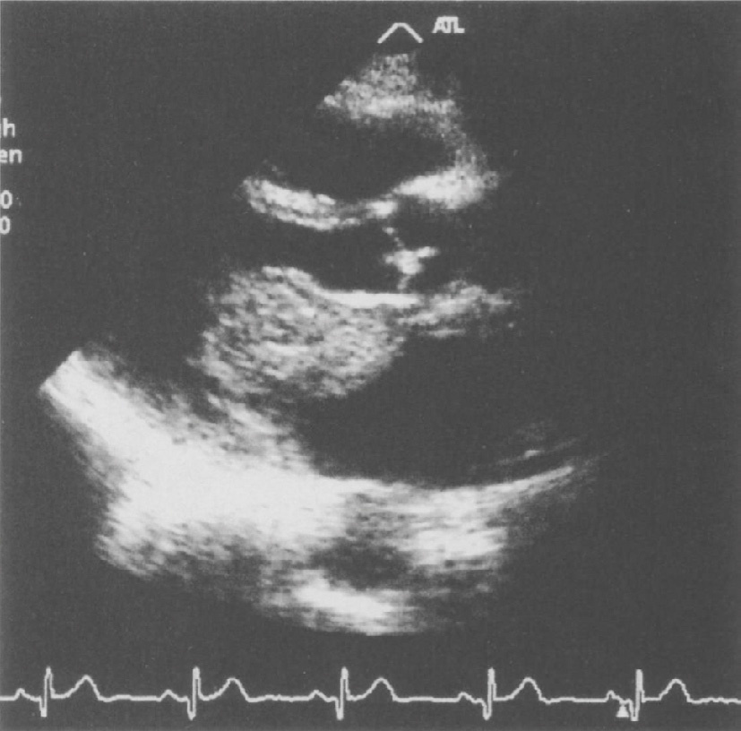
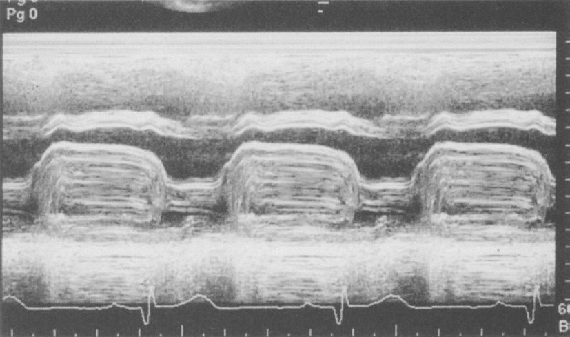
ａ リウマチ熱が原因である。
ｂ 拡張早期ランブルを聴取する。
ｃ 突然死の危険がある。
ｄ 僧帽弁閉鎖不全が進行する。
ｅ 僧帽弁置換術が必要である。
✅
ｂ 拡張早期ランブルを聴取する ＋ ｃ 突然死の危険がある
左房粘液腫：僧帽弁口閉塞→拡張期ランブル＋体位変換で変化。突然死（弁口完全閉塞）もあり。
❤️ 左房粘液腫の心エコー——Mモードで何が見えるか
本例は43歳女性・労作時の息切れで、心エコーの長軸断層図（A）に左房内の腫瘤、僧帽弁レベルのMモード（B）に拡張期の異常エコーが記録されている。Mモード心エコーの読み方——横軸が時間、縦軸が深さで、1本の超音波ビーム上の構造物の動きを時間軸に展開する。時間分解能が非常に高く、弁の動きの微細なタイミングを見るのに向く。
| 疾患 | Mモードの特徴 |
|---|---|
| 左房粘液腫 | 拡張期に僧帽弁口へ落ち込む腫瘤エコー。僧帽弁の開放直後（拡張早期）から出現し、収縮期には左房内へ戻って消える |
| リウマチ性僧帽弁狭窄症 | 前尖のEF slope平坦化、前尖と後尖が同方向へ動く（concordant）、弁尖の輝度上昇 |
| 僧帽弁逸脱症 | 収縮中期〜後期に後方への逸脱（hammocking） |
| 閉塞性肥大型心筋症 | 僧帽弁前尖の収縮期前方運動〈SAM〉、大動脈弁の収縮中期半閉鎖 |
| 大動脈弁閉鎖不全症 | 僧帽弁前尖の拡張期細動（fluttering）——逆流ジェットが弁尖を震わせる |
| 心タンポナーデ | 心嚢液のecho free space、拡張期右室虚脱、swinging heart |
左房粘液腫の3症状群を再確認：①閉塞（労作時呼吸困難・失神・突然死・拡張期ランブル・tumor plop・体位による変化） ②塞栓（脳梗塞・腎梗塞・四肢動脈閉塞） ③全身症状（IL-6による発熱・体重減少・貧血・赤沈亢進・高γグロブリン血症）。本例は労作時の息切れという①で発症している。
治療は速やかな外科的摘除——良性でありながら待機しないのは、突然死と塞栓のリスクがいつ起きるか予測できないためである。
□ 選択肢の検討
| 選択肢 | 解説 |
|---|---|
| ａ リウマチ熱が原因である。 | 誤り。リウマチ熱が原因となるのは器質的な僧帽弁狭窄症〈MS〉であって、本例の左房粘液腫ではない——リウマチ性MSでは弁尖の肥厚・交連部の癒合・腱索の短縮により弁口が固定的に狭くなり、心エコーでは僧帽弁前尖のhockey stick様変形・Mモードでの前後尖の同方向性運動（concordant movement）を示す。本例のMモード所見（B）は拡張期に僧帽弁口へ落ち込む可動性腫瘤のエコーが記録されているのであって、弁自体の変形ではない。粘液腫は散発性が大半で、7%程度がCarney複合による家族性であり、リウマチ熱とは無関係である。 |
| ◯ ｂ 拡張早期ランブルを聴取する。 | これが正解。左房粘液腫が拡張期に僧帽弁口へ落ち込んで血流を妨げると、僧帽弁狭窄症と同様の拡張期ランブル（低調な雑音）を聴取する——さらに腫瘤が弁口に嵌まって止まる瞬間の音＝tumor plop（腫瘍脱出音）がⅡ音の直後に聞こえる。これは僧帽弁開放音〈opening snap〉より遅いタイミングで、低調な音として聴取される。粘液腫と器質的MSを分ける決定的所見は「体位で雑音と症状が変化する」ことである——腫瘤が重力で動くため、座位・立位・左側臥位などで閉塞の程度が変わる。器質的MSでは雑音は体位で変わらない。 |
| ◯ ｃ 突然死の危険がある。 | これが正解。左房粘液腫では腫瘤が僧帽弁口を完全に塞ぐ（ball-valve obstruction）と、心拍出量が突然ゼロになって失神や突然死に至る——これは体位の変換をきっかけに起こりうるため、患者が「特定の姿勢で意識が遠のく」と訴えることがある。加えて腫瘍片や表面の血栓による全身塞栓（脳梗塞が最多）も突然の重篤な事態を招く。この「突然死と塞栓のリスク」こそが、粘液腫を「見つけたら待たずに手術する」理由である。良性腫瘍でありながら緊急性が高いという点で、組織学的な良悪と臨床的な危険度が一致しない典型例である。 |
| ｄ 僧帽弁閉鎖不全が進行する。 | 誤り。左房粘液腫の主病態は拡張期の僧帽弁口「閉塞」であって、「閉鎖不全（逆流）が進行する」わけではない——たしかに腫瘤が長期にわたり弁尖を打撃して二次的に軽度の僧帽弁逆流を生じることはあるが、進行性の弁閉鎖不全が主たる経過ではない。そもそも粘液腫は摘出すれば血行動態が正常化するので、「進行する」という表現自体が病像に合わない。進行性に僧帽弁閉鎖不全が悪化するのは僧帽弁逸脱症・腱索断裂・虚血性僧帽弁逆流・感染性心内膜炎などである。 |
| ｅ 僧帽弁置換術が必要である。 | 誤り。治療は腫瘍の摘出術であって、弁そのものは正常なので僧帽弁置換術は不要である——手術では体外循環下に心房を切開し、茎の付着部（心房中隔）を周囲の中隔組織ごと切除する。付着部を十分に切除しないと再発するため、必要なら中隔をパッチで再建する。術後の予後は良好で、散発例の再発率は1〜3%にとどまる。ただしCarney複合では12〜22%と高率に再発するので長期の経過観察が要る。「弁の病気ではなく腔内の腫瘍である」という理解が、この選択肢を切る根拠になる。 |
🔍 拡張期に聞こえる音を全部並べる／僧帽弁狭窄症との違い
| 音 | タイミング | 意味・疾患 |
|---|---|---|
| Ⅱ音〈S2〉 | 収縮期の終わり | 大動脈弁・肺動脈弁の閉鎖 |
| 僧帽弁開放音〈opening snap〉 | Ⅱ音の直後（0.04〜0.12秒）・高調 | 僧帽弁狭窄症。Ⅱ音-OS間隔が短いほど重症（左房圧が高く早く開く） |
| tumor plop | Ⅱ音の直後（OSより遅い）・低調 | 左房粘液腫。腫瘤が弁口で止まる音 |
| 心膜ノック音 | Ⅱ音の直後・高調 | 収縮性心膜炎。急速流入が突然止まる音 |
| Ⅲ音〈S3〉 | 拡張早期（Ⅱ音の0.12〜0.18秒後）・低調 | 急速流入期の心室壁の振動。若年では生理的、成人では心不全・容量負荷（MR・AR） |
| Ⅳ音〈S4〉 | 拡張末期（Ⅰ音の直前）・低調 | 心房収縮が硬い心室へぶつかる音。高血圧性心疾患・肥大型心筋症・大動脈弁狭窄症・虚血。心房細動では出ない |
| 拡張期ランブル | 拡張中期 | 僧帽弁狭窄症・粘液腫・三尖弁狭窄症・相対的狭窄（大量の左右短絡） |
| Austin Flint雑音 | 拡張中期〜後期 | 重症大動脈弁閉鎖不全。逆流ジェットが僧帽弁前尖を押して機能的MSを作る |
| 左房粘液腫 | リウマチ性僧帽弁狭窄症 | |
|---|---|---|
| 原因 | 腫瘍（腔内の可動性腫瘤） | リウマチ熱による弁の器質的変化 |
| 雑音の体位変化 | あり（決定的） | なし |
| 過剰心音 | tumor plop（低調・OSより遅い） | opening snap（高調） |
| 心房細動 | 少ない（洞調律が多い） | 高率に合併 |
| 全身症状 | 発熱・体重減少・赤沈亢進（IL-6） | なし |
| 治療 | 腫瘍摘出（弁は温存） | 経皮的僧帽弁交連切開術〈PTMC〉・弁置換 |
🎯 国試ポイント
① 左房粘液腫は拡張期ランブルとtumor plopを生じ、突然死の危険がある＝本問の2つの正解。② ball-valve obstruction（弁口の完全閉塞）で失神・突然死。体位変換が引き金になりうる。
③ 雑音と症状が体位で変化するのが器質的僧帽弁狭窄症との決定的な違い。
④ tumor plopはⅡ音直後・低調でopening snapより遅い。心膜ノック音も同じ時相なので背景で区別する。
⑤ リウマチ熱は器質的MSの原因であって粘液腫の原因ではない。
⑥ 治療は腫瘍摘出（弁は正常なので置換不要）。茎の付着部（心房中隔）ごと切除しないと再発する。
⑦ 散発例の再発率は1〜3%、Carney複合では12〜22%。
⑧ 粘液腫は洞調律が多く、器質的MSは心房細動を高率に合併。
⑨ Ⅱ音-opening snap間隔が短いほどMSは重症（左房圧が高い）。
Q.397(117A-68)📷 画像正答率 97%
22 歳の男性。発熱と呼吸困難を主訴に救急車で搬入された。幼少時に心室中隔欠損症と診断されたが手術療法は選択されなかった。以後、総合病院に年1 回通院している。2 か月前に咳嗽を伴う38℃の発熱が出現した。自宅近くの診療所を受診し、セフェム系抗菌薬を処方され、3 日後に解熱した。3 週間前から再度、悪寒を伴う37.8℃の発熱を認め、抗菌薬を内服したが、微熱、全身倦怠感は持続した。昨夜から、39℃台の発熱と咳嗽の悪化があり、呼吸困難で寝ることができなくなったため救急車を要請した。意識は清明。身長170cm、体重62kg。体温39.5℃。心拍数124/ 分、整。血圧130/80mmHg。呼吸数28/ 分。SpO2 96％（リザーバー付マスク10L/ 分酸素投与下）。胸骨左縁第3 肋間にLevine 2/6 の全収縮期雑音を聴取する。血液所見：Hb 9.2g/dL、白血球11,300（桿状核好中球60％、
分葉核好中球24％、好酸球0％、好塩基球1％、リンパ球15％）、血小板6.3 万。CRP 12.2mg/dL。胸部エックス線写真で両側性にびまん性の浸潤影を認めた。カラードプラ心エコー図で心室中隔欠損部の近傍に腫瘤性の病変（矢印）
を認めた。
最も考えられる診断はどれか。
分葉核好中球24％、好酸球0％、好塩基球1％、リンパ球15％）、血小板6.3 万。CRP 12.2mg/dL。胸部エックス線写真で両側性にびまん性の浸潤影を認めた。カラードプラ心エコー図で心室中隔欠損部の近傍に腫瘤性の病変（矢印）
を認めた。
最も考えられる診断はどれか。
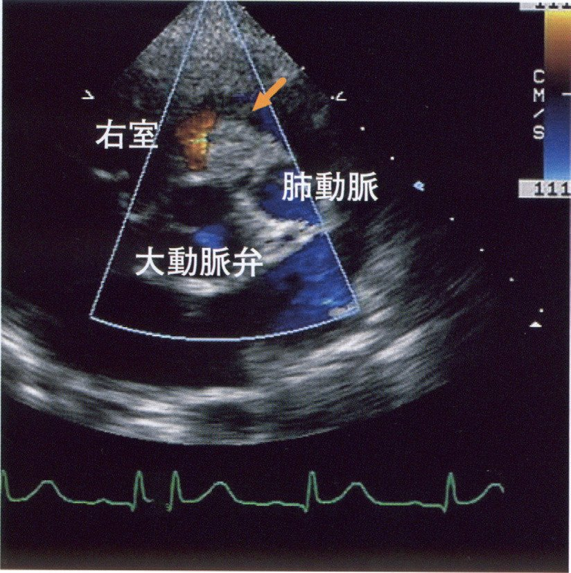
ａ 感染性心内膜炎
ｂ 急性肺血栓塞栓症
ｃ Eisenmenger 症候群
ｄ 多発血管炎性肉芽腫症
ｅ 全身性エリテマトーデス
✅
ａ 感染性心内膜炎
VSD+発熱+心エコー上の疣贅→感染性心内膜炎（右心系IE→敗血症性肺塞栓→両側浸潤影）。
❤️ 右心系感染性心内膜炎と、先天性心疾患を背景としたIE
本例は未修復の心室中隔欠損症〈VSD〉を背景とした感染性心内膜炎である。VSDは自然閉鎖しない場合、成人期以降もIEの生涯リスクを持ち続ける——手術適応がない小さなVSDであっても、高速ジェットが右室側心内膜を傷つけることでIEの温床になる。ジェット病変〈jet lesion〉の考え方——IEの疣贅は「圧の高い側から低い側へ吹き出したジェットが当たる場所」にできる：
①VSD——左室→右室のジェットが当たる右室側の心内膜・三尖弁中隔尖
②僧帽弁閉鎖不全——左室→左房のジェットが当たる左房壁（MacCallum斑）と僧帽弁の心房側
③大動脈弁閉鎖不全——大動脈→左室のジェットが当たる心室中隔・僧帽弁前尖
④動脈管開存・大動脈縮窄——狭窄部の下流
この理解があると「どこに疣贅ができるか」を暗記しなくてよい。
右心系IEの特徴を整理する：
①背景——静注薬物使用者・長期留置カテーテル・ペースメーカ/ICDリード・先天性心疾患（VSD・ファロー四徴術後）
②好発部位——三尖弁（次いで肺動脈弁）
③起炎菌——黄色ブドウ球菌が最多
④症状——敗血症性肺塞栓による多発性の結節影・空洞影・胸膜痛・喀血。全身塞栓は起こさない（肺が濾過するため）
⑤予後——左心系より良好で、抗菌薬のみで治癒することが多い
本例は「両側性びまん性の浸潤影」とあり、敗血症性肺塞栓に加えて呼吸困難で寝られない（起座呼吸）という記載から心不全の合併も示唆される。SpO2 96%がリザーバー付マスク10L/分下という点も重症度を物語る。
先天性心疾患患者のIE予防——現行のガイドラインで予防投与の対象となるのは①未修復のチアノーゼ性先天性心疾患 ②修復後6か月以内 ③修復材料の近傍に遺残短絡がある場合である。単純なVSDそのものは対象外だが、日常の口腔衛生管理は全例に指導する。
□ 選択肢の検討
| 選択肢 | 解説 |
|---|---|
| ◯ ａ 感染性心内膜炎 | これが正解。本例は①未修復の心室中隔欠損症〈VSD〉という素因 ②2か月にわたり抗菌薬で一時的に解熱と再燃を繰り返す発熱 ③胸骨左縁第3肋間のLevine 2/6全収縮期雑音（VSDのジェット） ④カラードプラ心エコー図で欠損部近傍に腫瘤性病変（＝疣贅） ⑤貧血（Hb 9.2g/dL）と血小板減少（6.3万）とCRP 12.2mg/dL——感染性心内膜炎の診断がDuke基準で確実に立つ。両側びまん性の浸潤影は右心系IEによる敗血症性肺塞栓で説明できる——VSDでは左室から右室へ高速のジェットが吹き、右室側の心内膜（ジェットが当たる部分）が傷ついて疣贅ができる。そこから飛んだ菌塊は肺動脈へ流れて多発性の肺塞栓・肺膿瘍を作る。不完全な抗菌薬治療で解熱と再燃を繰り返すのはIEの典型的な経過である。 |
| ｂ 急性肺血栓塞栓症 | 否定的。急性肺血栓塞栓症では突然の呼吸困難・胸痛・頻呼吸が主体で、2か月にわたる発熱の反復という経過は説明できない——また危険因子（長期臥床・手術・悪性腫瘍・血栓性素因）の記載がなく、22歳の若年男性という背景も合わない。胸部エックス線でも血栓性肺塞栓では通常は正常か、末梢の楔状陰影（Hampton hump）であって、両側びまん性の浸潤影にはならない。なお敗血症性肺塞栓（本例）は「多発性の結節影・空洞影・楔状影」を示し、血栓性とは画像が異なる——右心系IEを疑う手がかりになる。 |
| ｃ Eisenmenger 症候群 | 合わない。Eisenmenger症候群は長期の左右短絡により肺血管抵抗が上昇し、ついに短絡が右左へ逆転してチアノーゼを呈する不可逆的な状態である——臨床像はチアノーゼ・ばち指・多血症・労作時呼吸困難で、発熱やCRP上昇を来す病態ではない。また短絡が右左に逆転すると圧較差が小さくなるため収縮期雑音はむしろ減弱ないし消失し、Ⅱ音肺動脈成分の亢進が目立つようになる——本例はLevine 2/6の全収縮期雑音を聴取しており、まだ左右短絡が残っていることを示す。Eisenmenger化した患者では心内修復術は禁忌となり、肺血管拡張薬や心肺移植が選択肢になる。 |
| ｄ 多発血管炎性肉芽腫症 | 合わない。多発血管炎性肉芽腫症〈GPA・旧Wegener肉芽腫症〉は上気道（鼻・副鼻腔）・肺・腎を侵すANCA関連血管炎である——鞍鼻・血性鼻漏・難治性中耳炎・肺の空洞性結節・急速進行性糸球体腎炎が典型で、PR3-ANCA（c-ANCA）陽性。本例には上気道症状も腎障害の記載もなく、なにより心エコーで疣贅が描出されている。たしかにGPAも不明熱と肺浸潤影を来しうるので鑑別には挙がるが、「心室中隔欠損部近傍の腫瘤性病変」という所見を説明できるのは感染性心内膜炎だけである。 |
| ｅ 全身性エリテマトーデス | 合わない。全身性エリテマトーデス〈SLE〉は若年女性に圧倒的に多く（男女比1:9）、本例の22歳男性という背景から可能性が下がる——また蝶形紅斑・光線過敏・関節炎・口腔内潰瘍・腎障害・血球減少・抗核抗体陽性といった所見が必要だが、記載がない。SLEでもLibman-Sacks心内膜炎という無菌性の疣贅を生じることがあるが、発熱・CRP著明高値・進行性の経過を伴う本例は感染性である。なお血小板減少（6.3万）はSLEでも起こるが、感染性心内膜炎でも消費・免疫学的機序で低下するので鑑別にはならない。 |
🔍 心室中隔欠損症〈VSD〉の全体像／敗血症性肺塞栓の画像
VSDは先天性心疾患で最も頻度が高い（約20%）。分類は欠損孔の位置で①膜様部欠損（最多・約80%） ②漏斗部（肺動脈弁下）欠損——日本人・アジア人に多く、大動脈弁逸脱と大動脈弁閉鎖不全を合併しやすい ③流入部欠損（房室中隔欠損に伴う） ④筋性部欠損。| 大きさ・血行動態 | 症状 | 方針 |
|---|---|---|
| 小欠損（Roger病） | 無症状。強い収縮期雑音（欠損が小さいほど雑音は大きい） | 自然閉鎖が期待できる。IE予防の口腔衛生指導 |
| 中等度 | 易疲労・成長障害・反復する気道感染 | 心不全治療と手術時期の検討 |
| 大欠損 | 乳児期からの心不全・多呼吸・哺乳不良 | 早期の外科的閉鎖 |
| Eisenmenger化 | チアノーゼ・ばち指・多血症 | 閉鎖術は禁忌。肺血管拡張薬・心肺移植 |
敗血症性肺塞栓〈septic pulmonary embolism〉の画像：
①両側性・多発性の結節影（胸膜直下に多い） ②空洞形成（結節の中心が壊死して抜ける） ③feeding vessel sign（結節へ向かう血管が見える） ④楔状の胸膜下陰影 ⑤胸水・膿胸。「両側性・多発性・空洞を伴う結節影」を見たら敗血症性肺塞栓を疑い、右心系IEと感染源（静注薬物・カテーテル・歯性感染・Lemierre症候群）を探す。
Lemierre症候群も併せて押さえる——咽頭炎の後にFusobacterium necrophorumが内頸静脈に血栓性静脈炎を起こし、敗血症性肺塞栓を来す。若年者の咽頭痛＋頸部痛＋多発肺結節で疑う。
本例のように「先天性心疾患の既往＋長引く発熱」を見たら、まずIEを疑う——成人先天性心疾患〈ACHD〉の患者は年々増えており、循環器以外の科でもこの視点を持つことが求められている。
🎯 国試ポイント
① VSD＋長引く発熱＋心エコーで欠損部近傍の腫瘤性病変＝感染性心内膜炎。② 両側びまん性の浸潤影は右心系IEによる敗血症性肺塞栓。多発性・空洞形成・胸膜直下が特徴。
③ 疣贅は「ジェットが当たる場所」にできる——VSDなら右室側心内膜、MRなら左房壁、ARなら心室中隔・僧帽弁前尖。
④ 右心系IEは三尖弁に好発・黄色ブドウ球菌が最多・全身塞栓を起こさない・予後は比較的良好。背景は静注薬物使用・カテーテル・リード・先天性心疾患。
⑤ 不完全な抗菌薬治療で解熱と再燃を繰り返すのはIEの典型的経過。
⑥ Eisenmenger症候群では短絡が右左へ逆転し、雑音はむしろ減弱、Ⅱ音肺動脈成分が亢進。閉鎖術は禁忌。
⑦ VSDは先天性心疾患で最多（約20%）。膜様部欠損が最多。漏斗部欠損は日本人に多く大動脈弁閉鎖不全を合併。
⑧ 欠損が小さいほど雑音が大きい——雑音の大きさは重症度を表さない。
⑨ 「両側・多発・空洞を伴う結節影」＝敗血症性肺塞栓。右心系IE・Lemierre症候群を探す。
Q.398(116A-19)正答率 98%
62 歳の女性。息切れと全身倦怠感を主訴に来院した。7 日前に発作性心房細動に対してカテーテルアブレーションが施行されており、3 日前に退院していた。退院翌日に息切れと全身倦怠感が出現し、症状が徐々に増悪するため受診した。意識は清明。体温36.2℃。脈拍112/ 分、整。血圧88/72mmHg。血圧は吸気時に収縮期血圧が18mmHg 低下する。呼吸数18/ 分。SpO2 95％（room air）。呼吸音に異常を認めない。心音は微弱だが雑音は聴取しない。頸静脈は怒張している。血液所見：赤血球462 万、Hb 13.2g/dL、Ht 39％、白血球9,700、血小板39 万。血液生化学所見：
尿素窒素44mg/dL、クレアチニン1.7mg/dL、Na 141mEq/L、K 4.2mEq/L、Cl 110mEq/L。
最も考えられる病態はどれか。
尿素窒素44mg/dL、クレアチニン1.7mg/dL、Na 141mEq/L、K 4.2mEq/L、Cl 110mEq/L。
最も考えられる病態はどれか。
ａ 後腹膜血腫
ｂ 心室中隔穿孔
ｃ 肺血栓塞栓症
ｄ 心タンポナーデ
ｅ 完全房室ブロック
✅
ｄ 心タンポナーデ
アブレーション後+Beck三徴+奇脈（18mmHg低下）→心嚢穿孔による心タンポナーデ。
❤️ カテーテルアブレーションの合併症——心タンポナーデが最も多い重篤合併症
心房細動に対するカテーテルアブレーション（肺静脈隔離術）は広く行われるようになり、その合併症を知っておくことは循環器診療の基本になった。| 合併症 | 頻度・時期 | 臨床像 |
|---|---|---|
| 心タンポナーデ（心穿孔） | 1〜2%。術中〜術後数日（遅発性もある） | 低血圧・頸静脈怒張・心音減弱・奇脈 |
| 血管穿刺部の合併症 | 1〜2% | 仮性動脈瘤・動静脈瘻・後腹膜血腫 |
| 脳梗塞・一過性脳虚血発作 | 0.5%前後 | 左房内血栓・空気塞栓。抗凝固の継続で予防 |
| 肺静脈狭窄 | まれ（術式の改良で減少） | 労作時呼吸困難・喀血・反復する肺炎 |
| 左房食道瘻 | 0.1%未満だが致死率が高い。術後1〜4週の遅発性 | 発熱・胸痛・吐血・空気塞栓による脳梗塞。経鼻胃管や内視鏡は禁忌 |
| 横隔神経麻痺 | 右上肺静脈近傍の焼灼で | 右横隔膜挙上・呼吸困難 |
| 房室ブロック | 房室結節近傍の焼灼で | 徐脈・ペースメーカが必要になることも |
この症例での治療は心嚢穿刺・ドレナージである——大動脈解離や心破裂と違い、心房の小さな穿孔は自然に閉鎖することが多いため、ドレナージで圧を解除しながら抗凝固薬の中和（ヘパリンならプロタミン、DOACなら特異的中和薬）を行う。ドレナージしても出血が持続する場合のみ外科的修復へ進む。「高圧系の破綻なら穿刺しない、低圧系の漏れなら穿刺する」という原則の、後者の代表例である。
□ 選択肢の検討
| 選択肢 | 解説 |
|---|---|
| ａ 後腹膜血腫 | 合わない。後腹膜血腫は大腿動脈穿刺によるカテーテル手技の合併症として重要で、穿刺部位が鼠径靱帯より頭側になったときに起こりやすい——臨床像は穿刺後数時間から翌日にかけての腰背部痛・鼠径部痛・進行性の貧血・血圧低下・頻脈で、循環血液量減少性ショックを呈する。したがって頸静脈は虚脱するはずで、本例の頸静脈怒張とは方向が正反対である。また本例はHb 13.2g/dL・Ht 39%と貧血がなく、出血を示唆する所見もない。 |
| ｂ 心室中隔穿孔 | 合わない。心室中隔穿孔は急性心筋梗塞の機械的合併症として、発症数日後に生じるものである——カテーテルアブレーションの合併症としては生じない。また心室中隔穿孔なら胸骨左縁に新たな粗い全収縮期雑音とthrillを聴取するはずだが、本例は「心音は微弱だが雑音は聴取しない」と明記されている。この一文は出題者が弁膜症や中隔穿孔を切らせるために置いた否定文である。 |
| ｃ 肺血栓塞栓症 | 否定的。肺血栓塞栓症も頸静脈怒張・低血圧・頻脈という閉塞性ショックの像を示しうるので鑑別には挙がる——しかし典型的には低酸素血症と頻呼吸が前面に出る。本例はSpO2 95%（room air）・呼吸数18/分と呼吸状態が保たれており合致しない。また肺塞栓では心音減弱ではなくⅡ音肺動脈成分の亢進が聴かれ、奇脈よりも右心負荷所見（心電図のS1Q3T3・V1-4陰性T波）が目立つ。なにより「吸気時に収縮期血圧が18mmHg低下する（＝奇脈）」という記載が心タンポナーデを直接指し示している。 |
| ◯ ｄ 心タンポナーデ | これが正解。本例は①7日前にカテーテルアブレーション（心房細動に対する肺静脈隔離術） ②退院翌日からの息切れと全身倦怠感 ③血圧88/72mmHg（脈圧狭小） ④脈拍112/分 ⑤奇脈18mmHg ⑥心音微弱 ⑦頸静脈怒張 ⑧呼吸音は正常——Beck三徴＋奇脈が揃った心タンポナーデである。原因はアブレーションによる心筋穿孔（心房壁は薄く、焼灼で脆くなる）からの心嚢内出血で、亜急性に進行する遅発性心タンポナーデという形をとることがある。尿素窒素44mg/dL・クレアチニン1.7mg/dLという腎機能低下も、低心拍出による腎前性の変化として矛盾しない。「呼吸音に異常を認めない＝肺うっ血がない」のに循環が破綻しているという組み合わせが決め手である。 |
| ｅ 完全房室ブロック | 合わない。完全房室ブロックはアブレーションの合併症としてあり得る（房室結節近傍の焼灼時）が、本例の脈拍は112/分で整である——完全房室ブロックなら補充調律による徐脈（心室補充調律なら30〜40/分）となるはずで、頻脈とは正反対である。また完全房室ブロックの身体所見は大砲a波〈cannon a wave〉・Ⅰ音の強度が一拍ごとに変わる・徐脈による失神（Adams-Stokes発作）であり、奇脈は生じない。心拍数という一点で切れる選択肢である。 |
🔍 奇脈の測り方と意味／術後の「原因不明のショック」の考え方
奇脈の測定手順——①患者を仰臥位または半坐位にし、通常の呼吸をさせる ②血圧計のカフを収縮期血圧より高く上げる ③1拍あたり2〜3mmHgの速度でゆっくり下げる ④Korotkoff音が呼気時にだけ聞こえ始める圧を記録 ⑤さらに下げて全呼吸周期で聞こえる圧を記録 ⑥両者の差が奇脈の大きさ。10mmHgを超えれば異常で、本例は18mmHgと明確な陽性である。奇脈が「出にくい」タンポナーデもある——①大動脈弁閉鎖不全の合併（拡張期に大動脈から左室へ血液が入るため呼吸性の影響を受けにくい） ②心房中隔欠損（左右のバランスが呼吸で変わらない） ③高度の低血圧（測定自体が困難） ④局所タンポナーデ。逆に奇脈があってもタンポナーデとは限らない——重症喘息・COPD増悪・緊張性気胸・広範な肺塞栓症・高度の肥満・拘束型心筋症。
| 術後・処置後のショックで疑うもの | 手がかり |
|---|---|
| 心タンポナーデ | 頸静脈怒張・心音減弱・奇脈・肺野清明 |
| 出血（後腹膜血腫・穿刺部） | 頸静脈虚脱・貧血の進行・穿刺部の腫脹と痛み |
| 敗血症 | 発熱・脈圧開大・温かい四肢・乳酸上昇 |
| 肺血栓塞栓症 | 低酸素・頻呼吸・下肢腫脹・Dダイマー |
| アナフィラキシー（造影剤・薬剤） | 皮疹・気道症状・直後の発症 |
| 急性冠症候群 | 心電図変化・トロポニン上昇 |
本例の腎機能低下（BUN 44・Cr 1.7）の読み——BUN/Cr比が約26と高いのは腎前性（腎灌流の低下）を示唆する。心拍出量が落ちて腎血流が減っているという、タンポナーデの全身への影響が数字に出ている。タンポナーデを解除すれば腎機能も改善する——臓器障害を見て「腎臓の薬」を考えるのではなく、原因である循環を直すのが筋である。
🎯 国試ポイント
① アブレーション後＋Beck三徴（低血圧・頸静脈怒張・心音減弱）＋奇脈18mmHg＝心タンポナーデ。② 心タンポナーデはカテーテルアブレーション最多の重篤合併症（1〜2%）。心房壁は2〜3mmと薄い。遅発性もある。
③ この場合は心嚢穿刺・ドレナージが適応（低圧系の漏れ）。抗凝固薬の中和も行う。大動脈解離・心破裂とは方針が正反対。
④ 「呼吸音に異常なし＝肺うっ血なし」なのに循環が破綻——右心系の入口で止まっているサイン。
⑤ 奇脈は1拍2〜3mmHgでカフを下げ、呼気時のみ聞こえる圧と全周期で聞こえる圧の差。10mmHg超で異常。
⑥ アブレーションの他の合併症＝脳梗塞・肺静脈狭窄・横隔神経麻痺・房室ブロック・左房食道瘻（術後1〜4週・致死的・内視鏡や胃管は禁忌）。
⑦ 後腹膜血腫なら頸静脈は虚脱し貧血が進行する。頸静脈の向きで切れる。
⑧ 完全房室ブロックなら徐脈。本例は脈拍112/分で否定される。
⑨ BUN/Cr比の上昇は腎前性——低心拍出の全身への影響。原因（循環）を直せば改善する。
Q.399(116B-27)正答率 98%
83 歳の女性。4 日前からの右腰部痛と悪寒戦慄を伴う発熱を主訴に来院した。来院時、意識は清明。見当識障害はない。体温38.6℃。脈拍102/ 分、整。血圧138/88mmHg。呼吸数24/ 分。SpO2 97％（room air）。頭頸部に異常を認めない。心臓の聴診で心尖部を最強点とするLevine 3/6 の収縮期雑音を聴取する。呼吸音に異常を認めない。腹部は平坦、軟で、肝・脾を触知しない。四肢・末梢に皮疹を認めない。入院時に行った血液培養2 セット（4 本）からクラスター状に集簇するグラム陽性球菌が検出された。
次に行うべき検査はどれか。
次に行うべき検査はどれか。
ａ 胸部単純CT
ｂ 頸動脈エコー
ｃ 経胸壁心エコー
ｄ 上部消化管内視鏡
ｅ 腹部単純エックス線
✅
ｃ 経胸壁心エコー
S.aureus菌血症→IE合併率高→心エコーで疣贅・弁障害を確認。
❤️ 「グラム陽性球菌がクラスター状」を読む——菌の形から診断へ
血液培養のグラム染色所見は最終同定を待たずに治療方針を変えられる情報であり、その読み方は臨床の必須知識である：| グラム染色所見 | 菌 | 臨床的意味 |
|---|---|---|
| グラム陽性球菌・クラスター状（ブドウの房） | ブドウ球菌（S. aureus／表皮ブドウ球菌） | S. aureusなら必ず心エコー。表皮ブドウ球菌は人工物感染かコンタミ |
| グラム陽性球菌・連鎖状 | 連鎖球菌・腸球菌 | 緑色連鎖球菌＝亜急性IE（歯科）／S. gallolyticus＝大腸癌の検索／腸球菌＝尿路・腹腔内 |
| グラム陽性球菌・双球菌（ランセット形） | 肺炎球菌 | 肺炎・髄膜炎・脾摘後の劇症感染 |
| グラム陰性桿菌 | 大腸菌・肺炎桿菌・緑膿菌 | 尿路・胆道・腹腔内感染。エンドトキシンショック |
| グラム陰性球菌（双球菌） | 髄膜炎菌・淋菌 | 髄膜炎・電撃性紫斑病 |
| グラム陽性桿菌 | リステリア・クロストリジウム・バシラス | リステリアは妊婦・高齢者・免疫不全の髄膜炎 |
Staphylococcus aureus 菌血症〈SAB〉のバンドルを再掲する：①感染源の同定と除去（カテーテル抜去・膿瘍のドレナージ） ②心エコー（IE合併率20〜40%） ③48〜72時間後の血液培養再検で陰性化の確認 ④転移性病巣の検索（脊椎・関節・腎/脾/腸腰筋膿瘍） ⑤適切な抗菌薬を十分な期間。
本例の「4日前からの右腰部痛」は転移性病巣のサインかもしれない——化膿性脊椎炎・腸腰筋膿瘍・腎膿瘍はいずれも黄色ブドウ球菌の血行性転移として起こり、造影MRI/CTで探す。Q.413（109B-53）はまさにこの病態を扱っている。ただし本問が問うのは「次に行うべき」検査であり、診断の枠組み（IEかどうか）を決める心エコーが最優先である。
□ 選択肢の検討
| 選択肢 | 解説 |
|---|---|
| ａ 胸部単純CT | 優先度は低い。胸部単純CTは肺炎・肺膿瘍・膿胸・敗血症性肺塞栓などの胸部感染巣を探すときに有用である——しかし本例は呼吸音に異常を認めず、SpO2 97%（room air）・呼吸数24/分と、呼吸器感染を積極的に疑う所見がない。グラム陽性球菌の菌血症で「次に行うべき」検査を1つ選ぶなら、右腰部痛の原因検索よりも、心雑音という所見に直結する検査が優先される。なお右心系IEなら敗血症性肺塞栓の検索としてCTが意味を持つが、本例の雑音は心尖部最強点＝僧帽弁（左心系）である。 |
| ｂ 頸動脈エコー | 適応がない。頸動脈エコーは頸動脈狭窄・プラーク・内膜中膜複合体厚〈IMT〉の評価を目的とする検査で、脳梗塞や一過性脳虚血発作の原因検索に用いる——本例には意識は清明で見当識障害もなく、神経学的異常の記載が一切ない。菌血症の患者で頸動脈を見る意義があるとすれば感染性動脈瘤だが、それを疑う所見（拍動性腫瘤・頸部痛）もない。この選択肢は「エコー」という語だけで選ばせないための引っかけである。 |
| ◯ ｃ 経胸壁心エコー | これが正解。血液培養2セット（4本）すべてからクラスター状に集簇するグラム陽性球菌＝ブドウ球菌〈Staphylococcus〉が検出された——4本すべて陽性という持続的菌血症であり、コンタミネーションではなく真の菌血症である。加えて心尖部を最強点とするLevine 3/6の収縮期雑音があり、感染性心内膜炎を強く疑う条件が揃っている。Duke基準の大基準は「血液培養陽性」と「心内膜病変」の2つで、既に前者は満たしているので、次に取りに行くのは心エコーによる心内膜病変の確認である。まず経胸壁心エコー〈TTE〉から始め、陰性でも疑いが強ければ経食道心エコー〈TEE〉へ進む——選択肢に「経胸壁」とあるのが正しい手順である。 |
| ｄ 上部消化管内視鏡 | 適応がない。上部消化管内視鏡は吐血・下血・腹痛・体重減少・貧血の精査で行う——本例は腹部は平坦・軟で肝脾を触知せず、消化器症状の記載がない。なおStreptococcus gallolyticus（旧S. bovis）による菌血症・IEでは大腸癌の合併率が高く、下部消化管内視鏡が推奨される——これは重要な知識だが、本例の菌はクラスター状のグラム陽性球菌＝ブドウ球菌であって連鎖球菌ではない。また推奨されるのは下部消化管内視鏡である。 |
| ｅ 腹部単純エックス線 | 情報量が乏しい。腹部単純エックス線は腸閉塞（鏡面像）・消化管穿孔（free air）・尿路結石（一部）の評価に使うが、感度も特異度も低く、得られる情報が限られる——本例の右腰部痛から腎盂腎炎や尿路結石を疑うのは筋が通るが、それなら尿検査・尿培養・腹部超音波・造影CTが選ばれるべきで、単純エックス線ではない。さらに重要なのは、4日前からの腰部痛は「腎盂腎炎」ではなく「化膿性脊椎炎」や「腎/腸腰筋膿瘍」という黄色ブドウ球菌の転移性病巣かもしれないという視点である——その場合も造影MRIやCTが必要になる。 |
🔍 IE診断における心エコーの使い分け／高齢者IEの特徴
| 経胸壁心エコー〈TTE〉 | 経食道心エコー〈TEE〉 | |
|---|---|---|
| 疣贅の検出感度 | 50〜75% | 90〜95% |
| 侵襲 | なし（まず行う） | 鎮静が必要・食道疾患では禁忌 |
| 得意な評価 | 心機能・弁逆流の重症度・心嚢液・右心系 | 小さな疣贅・弁輪部膿瘍・人工弁・弁穿孔・左心耳血栓 |
| TEEが必須の状況 | ①TTEで疣贅が見えないが臨床的にIEを強く疑う ②人工弁・心内デバイスがある ③弁輪部膿瘍を疑う（新規の房室ブロック） ④手術術式の決定 | |
高齢者のIEの特徴——本例は83歳女性である：
①非典型的な症状——発熱がない、あるいは微熱にとどまることがある。食欲低下・体重減少・意識障害・転倒だけで発症することも
②背景——大動脈弁狭窄症などの変性弁膜症・人工弁・ペースメーカ・血液透析・悪性腫瘍の治療に伴う血管内カテーテル
③起炎菌——黄色ブドウ球菌と腸球菌が増える（若年の緑色連鎖球菌中心とは異なる）。医療関連感染の比率が高い
④予後——併存疾患が多く手術リスクが高いため死亡率が高い
「高齢者の不明熱＋心雑音」は、心雑音が加齢性の大動脈弁硬化として片づけられやすい——新規の雑音か、以前からあるものかを必ず確認するのが実務の勘所である。
Streptococcus gallolyticus（旧 S. bovis）と大腸癌——この連鎖球菌によるIE・菌血症では大腸腺腫や大腸癌の合併率が50〜60%にのぼるため、全例に下部消化管内視鏡を行う。本例の菌はブドウ球菌なので該当しないが、対で覚えておく。同様に腸球菌のIEでは尿路・腹腔内の感染源を、Clostridium septicumの菌血症でも大腸癌を探す——菌が感染源を教えてくれるという発想が重要である。
🎯 国試ポイント
① クラスター状のグラム陽性球菌＝ブドウ球菌。血液培養4本すべて陽性＋心雑音 → 次は経胸壁心エコー。② S. aureus菌血症では必ず心エコー（IE合併率20〜40%）。まずTTE、疑いが強ければTEEへ。
③ TTEの感度50〜75%／TEEの感度90〜95%。人工弁・弁輪部膿瘍・小さな疣贅にはTEEが必須。
④ グラム染色の形態から起炎菌を推定する——連鎖状なら連鎖球菌/腸球菌、双球菌（ランセット形）なら肺炎球菌。
⑤ Streptococcus gallolyticus（旧S. bovis）のIEでは大腸癌を探す（下部消化管内視鏡）。本例はブドウ球菌なので該当しない。
⑥ 高齢者のIEは非典型的——発熱が乏しく食欲低下や意識障害だけのことも。起炎菌は黄色ブドウ球菌と腸球菌が増える。
⑦ S. aureusの腰痛は化膿性脊椎炎・腸腰筋膿瘍・腎膿瘍の転移性病巣を疑う（造影MRI/CT）。
⑧ SABバンドル＝感染源除去・心エコー・培養陰性化の確認・転移性病巣検索・十分な期間の抗菌薬。
⑨ 菌が感染源を教える——腸球菌なら尿路/腹腔内、C. septicumなら大腸癌。
Q.400(115A-27)📷 画像正答率 78%
46 歳の女性。息苦しさと全身倦怠感を主訴に来院した。半年前に手指と手首の関節痛および頰部の皮疹が出現し、
全身性エリテマトーデス〈SLE〉の診断で副腎皮質ステロイドとヒドロキシクロロキンが導入された。その後、症状は軽快していたが、1 週前から息苦しさ、全身倦怠感および前胸部の違和感が出現した。症状が増悪するため、本日夜8 時に救急外来を受診した。体温37.8℃。脈拍102/ 分、整。血圧100/72mmHg。SpO2 96％（room air）。頰部に紅斑を認める。両側の中指近位指節間関節と手関節の腫脹を認める。頸静脈怒張は吸気時に顕著となる。心音ではⅠ音とⅡ音の減弱を認める。呼吸音には異常を認めない。下腿に軽度の浮腫を認める。血液所見：赤血球346 万、Hb10.8g/dL、Ht 33％、白血球7,200、血小板15 万。血液生化学所見：ALT 26U/L、LD 160U/L（基準120 ～245）、
クレアチニン0.5mg/dL、脳性ナトリウム利尿ペプチド〈BNP〉56pg/mL（基準18.4 以下）。CRP 3.8mg/dL。収縮期血圧は呼気時に比べ吸気時に18mmHg 低下する。胸部エックス線写真ではCTR 55％、肺野に異常を認めない。
心電図では肢誘導に低電位を認める。心エコー図（A，B）を示す。
この患者の呼吸困難感の原因として最も考えられる病態はどれか。
全身性エリテマトーデス〈SLE〉の診断で副腎皮質ステロイドとヒドロキシクロロキンが導入された。その後、症状は軽快していたが、1 週前から息苦しさ、全身倦怠感および前胸部の違和感が出現した。症状が増悪するため、本日夜8 時に救急外来を受診した。体温37.8℃。脈拍102/ 分、整。血圧100/72mmHg。SpO2 96％（room air）。頰部に紅斑を認める。両側の中指近位指節間関節と手関節の腫脹を認める。頸静脈怒張は吸気時に顕著となる。心音ではⅠ音とⅡ音の減弱を認める。呼吸音には異常を認めない。下腿に軽度の浮腫を認める。血液所見：赤血球346 万、Hb10.8g/dL、Ht 33％、白血球7,200、血小板15 万。血液生化学所見：ALT 26U/L、LD 160U/L（基準120 ～245）、
クレアチニン0.5mg/dL、脳性ナトリウム利尿ペプチド〈BNP〉56pg/mL（基準18.4 以下）。CRP 3.8mg/dL。収縮期血圧は呼気時に比べ吸気時に18mmHg 低下する。胸部エックス線写真ではCTR 55％、肺野に異常を認めない。
心電図では肢誘導に低電位を認める。心エコー図（A，B）を示す。
この患者の呼吸困難感の原因として最も考えられる病態はどれか。
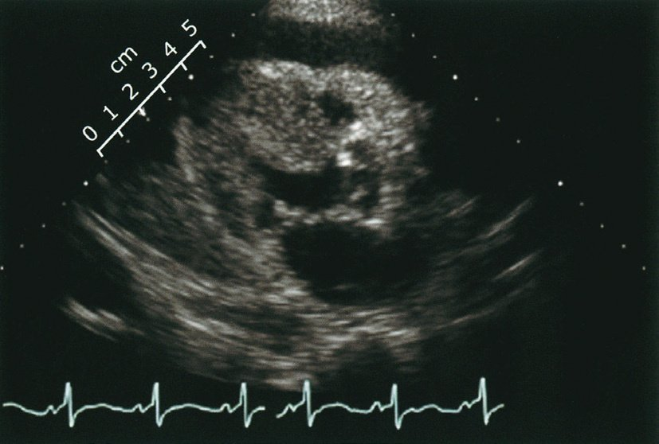
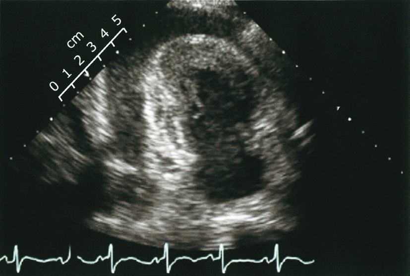
ａ 心外膜炎
ｂ 心内膜炎
ｃ 間質性肺炎
ｄ 肺血栓塞栓症
ｅ 肺動脈性肺高血圧症
✅
ａ 心外膜炎（心嚢液貯留による心タンポナーデ）
SLE+心音減弱+奇脈+低電位→心嚢液貯留（SLEの心外膜炎）→心タンポナーデ。
❤️ SLEの心病変——心膜炎が最多、そして心タンポナーデへ
全身性エリテマトーデス〈SLE〉は多臓器を侵す自己免疫疾患で、心病変は心膜・心内膜・心筋・冠動脈のすべてに及ぶ：| 部位 | 病変 | 頻度・特徴 |
|---|---|---|
| 心膜 | 心膜炎・心嚢液貯留 | 最多（20〜50%）。分類基準の「漿膜炎」。タンポナーデに至ることもある |
| 心内膜 | Libman-Sacks心内膜炎 | 無菌性疣贅。抗リン脂質抗体症候群の合併で頻度が上がる。塞栓源になりうる |
| 心筋 | 心筋炎 | まれだが重篤。心不全・不整脈 |
| 冠動脈 | 早発性の動脈硬化・冠動脈炎 | 若年での心筋梗塞。ステロイド長期使用も助長 |
| 伝導系 | 新生児ループス（抗SS-A抗体）による先天性完全房室ブロック | 母体の抗SS-A/Ro抗体が胎盤を通過 |
本例が心タンポナーデである根拠：
①奇脈18mmHg——最も特異的な所見
②Ⅰ音Ⅱ音の減弱——液体が音を減衰させる
③頸静脈怒張（吸気時に顕著）——中心静脈圧の上昇。「吸気時に顕著」＝Kussmaul徴候的な所見
④心電図の肢誘導低電位——心嚢液による電位の減衰
⑤CTR 55%で肺野に異常なし——「心陰影は大きいのに肺はきれい」
⑥BNP 56pg/mLと軽度——外からの圧迫であって心筋の伸展ではない
これらすべてが「左心へ血液が届かない＝肺うっ血がない閉塞性の病態」を指している。
ステロイド治療中の患者で心嚢液を見たときは、①原疾患の活動性（SLEの心膜炎） ②感染（化膿性心膜炎・結核・ウイルス性） ③薬剤性 ④尿毒症（ループス腎炎からの腎不全）を並べて考える。本例は関節痛と頬部紅斑の再燃を伴っており、原疾患の活動性が高まっていることが読み取れる。
□ 選択肢の検討
| 選択肢 | 解説 |
|---|---|
| ◯ ａ 心外膜炎 | これが正解。本例は①SLEで治療中 ②1週前からの息苦しさと前胸部違和感 ③脈拍102/分・血圧100/72mmHg ④吸気時に顕著となる頸静脈怒張 ⑤Ⅰ音とⅡ音の減弱 ⑥呼吸音に異常なし ⑦収縮期血圧が吸気時に18mmHg低下（＝奇脈） ⑧心電図で肢誘導の低電位 ⑨CTR 55%で肺野に異常なし ⑩BNP 56pg/mLと軽度上昇にとどまる——これはSLEによる心外膜炎（心膜炎）で心嚢液が貯留し、心タンポナーデに至っている状態である。BNPが軽度にとどまるのが重要な手がかり——心筋の伸展ストレスによる分泌なので、外から圧迫されているタンポナーデでは著明には上がらない。SLEでは心膜炎が最も頻度の高い心病変（20〜50%）で、分類基準の「漿膜炎」にも含まれる。 |
| ｂ 心内膜炎 | 合わない。SLEに伴う心内膜炎はLibman-Sacks心内膜炎（無菌性疣贅性心内膜炎）で、僧帽弁・大動脈弁の両面に小さな疣贅を作る——しかしこれは多くは無症候で、弁逆流や塞栓を起こさない限り呼吸困難の原因にはならない。また本例には心雑音の記載がなく、むしろⅠ音Ⅱ音の減弱が特徴である。感染性心内膜炎を考えるなら発熱の程度（37.8℃と軽度）・CRP 3.8mg/dLと中等度・白血球7,200と正常から積極的には支持されない。なおLibman-Sacks心内膜炎は抗リン脂質抗体症候群の合併例で頻度が高く、脳塞栓の原因になりうる点は押さえる。 |
| ｃ 間質性肺炎 | 合わない。間質性肺炎ならば労作時呼吸困難・乾性咳嗽・両側下肺野のfine crackles（velcro rale）・SpO2の低下・胸部エックス線での網状影を認めるはずである——本例は呼吸音に異常を認めず、SpO2 96%（room air）、胸部エックス線で肺野に異常なしと、いずれも否定されている。SLEの肺病変としては胸膜炎（最多）・急性ループス肺臓炎・びまん性肺胞出血・shrinking lung症候群・肺高血圧症があるが、いずれも本例の所見と合わない。「呼吸音に異常なし・肺野に異常なし」なのに呼吸困難という組み合わせが、肺以外に原因を求めさせている。 |
| ｄ 肺血栓塞栓症 | 否定的。SLE（とくに抗リン脂質抗体症候群合併例）は血栓症のリスクが高く、肺血栓塞栓症は鑑別に挙がる——しかし典型的には突然発症の呼吸困難・胸膜痛・低酸素血症・頻呼吸で、本例の1週間かけて増悪する経過・SpO2 96%とは合わない。また肺塞栓では心音の減弱ではなくⅡ音肺動脈成分の亢進が聴かれ、心電図は洞性頻脈・V1-4の陰性T波・S1Q3T3であって低電位にはならない。低電位という心電図所見と、奇脈という身体所見の2つが心嚢液を直接指し示している。 |
| ｅ 肺動脈性肺高血圧症 | 合わない。SLEは膠原病に伴う肺動脈性肺高血圧症〈PAH〉の原因となりうる（強皮症・混合性結合組織病に次いで多い）——しかしPAHは数か月から年単位でゆっくり進行し、身体所見はⅡ音肺動脈成分の亢進・三尖弁逆流の収縮期雑音・右心不全で、心音の減弱や低電位は来さない。心電図では右軸偏位・右室肥大（V1のR波増高）・右房負荷（Ⅱ誘導のP波増高）を示す。本例の1週間の経過・低電位・奇脈・CTR 55%はいずれもPAHでは説明できない。 |
🔍 BNPの読み方——上がる病態・上がらない病態
| BNP／NT-proBNP | 理由 | |
|---|---|---|
| 左心不全（収縮不全・拡張不全） | 著明に上昇 | 心室壁の伸展ストレスで心筋から分泌 |
| 右心不全・肺高血圧・肺塞栓 | 上昇 | 右室の負荷 |
| 心房細動・腎不全・高齢・貧血・敗血症 | 上昇（心不全がなくても） | 偽陽性の原因 |
| 心タンポナーデ | 軽度上昇にとどまる | 外からの圧迫であり心室壁は伸展しない |
| 収縮性心膜炎 | 軽度上昇にとどまる | 同上。拘束型心筋症との鑑別点 |
| 拘束型心筋症 | 著明に上昇 | 心筋そのものが伸展・障害されている |
| 肥満 | 低く出る（偽陰性） | 脂肪組織のクリアランス受容体で除去される |
「吸気時に顕著となる頸静脈怒張」という記載の読み——Kussmaul徴候は本来収縮性心膜炎に特徴的で、典型的な心タンポナーデでは陰性とされる。ただし心嚢液が大量に貯留して心膜が硬い殻のように振る舞う場合や、心膜炎による心膜の肥厚が併存する場合には、タンポナーデでもKussmaul徴候様の所見が出うる。本問ではこの記載を「中心静脈圧が高い」というシグナルとして読めば十分で、奇脈18mmHgと低電位という2つの決め手が診断を確定させている。
SLEの分類基準（2019 EULAR/ACR）では、抗核抗体陽性を入口基準とし、①全身（発熱） ②血液（白血球減少・血小板減少・自己免疫性溶血） ③神経精神 ④皮膚粘膜（脱毛・口腔潰瘍・亜急性皮膚ループス/円板状ループス・急性皮膚ループス） ⑤漿膜（胸水・心嚢液・急性心膜炎） ⑥筋骨格（関節炎） ⑦腎（蛋白尿・腎生検所見） と免疫学的項目（抗リン脂質抗体・低補体・抗ds-DNA/抗Sm抗体）を重み付けして10点以上で分類する。心膜炎は「漿膜」の項目として明示されている——SLEの心病変が診断基準に組み込まれるほど頻度が高いことの証左である。
🎯 国試ポイント
① SLE＋奇脈18mmHg＋心音減弱＋肢誘導低電位＋肺野清明＝心外膜炎（心膜炎）による心嚢液貯留・心タンポナーデ。② SLEの心病変で最多は心膜炎（20〜50%）。分類基準の「漿膜炎」に含まれる。
③ BNPが軽度上昇にとどまるのが手がかり——外からの圧迫では心室壁が伸展しないため。
④ 収縮性心膜炎もBNP軽度、拘束型心筋症はBNP著明高値——鑑別に使える。
⑤ Libman-Sacks心内膜炎＝SLEの無菌性疣贅。多くは無症候だが抗リン脂質抗体症候群合併例で塞栓源になる。
⑥ 「呼吸音に異常なし・肺野に異常なし」なのに呼吸困難——肺以外（心嚢）に原因を求める。
⑦ SLEの心血管合併症＝心膜炎・Libman-Sacks心内膜炎・心筋炎・早発性冠動脈疾患・新生児ループスの先天性房室ブロック（抗SS-A抗体）。
⑧ ステロイド治療中の心嚢液は、原疾患の活動性・感染・薬剤性・尿毒症を並べて考える。
⑨ 肥満ではBNPが低く出る（偽陰性）。心房細動・腎不全・高齢・貧血では偽陽性。
Q.401(115F-40)📷 画像正答率 97%
74 歳の男性。1 週前に大動脈弁狭窄症に対して大動脈弁置換術を施行した。術後経過は良好で退院を目指し、一般病棟でリハビリテーションに励んでいた。昨日から食欲不振があり、今朝から息切れと全身倦怠感を訴えている。意識は清明。体温36.7℃。脈拍100/ 分、整。血圧94/74mmHg。呼吸数18/ 分。SpO2 98％（room air）。眼瞼結膜は軽度貧血様で、眼球結膜に黄染を認めない。頸静脈怒張を認める。心音は減弱。呼吸音に異常を認めない。腹部は平坦、
軟で、胸部正中に手術痕を認める。血液所見：赤血球352 万、Hb 10.7g/dL、Ht 31％、白血球8,700、血小板10 万。
血液生化学所見：アルブミン3.3g/dL、総ビリルビン1.2mg/dL、AST 31U/L、ALT 52U/L、LD 331U/L（基準120～245）、CK 50U/L（基準30 ～140）、尿素窒素30mg/dL、クレアチニン1.1mg/dL、Na 136mEq/L、K 5.1mEq/L、
Cl 99mEq/L。CRP 1.2mg/dL。胸部エックス線写真（A）及び胸部単純CT（B）を示す。
症状に最も関連している病態はどれか。
軟で、胸部正中に手術痕を認める。血液所見：赤血球352 万、Hb 10.7g/dL、Ht 31％、白血球8,700、血小板10 万。
血液生化学所見：アルブミン3.3g/dL、総ビリルビン1.2mg/dL、AST 31U/L、ALT 52U/L、LD 331U/L（基準120～245）、CK 50U/L（基準30 ～140）、尿素窒素30mg/dL、クレアチニン1.1mg/dL、Na 136mEq/L、K 5.1mEq/L、
Cl 99mEq/L。CRP 1.2mg/dL。胸部エックス線写真（A）及び胸部単純CT（B）を示す。
症状に最も関連している病態はどれか。
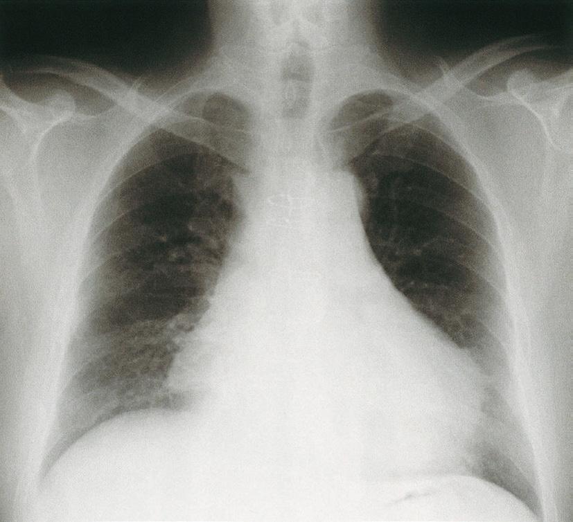
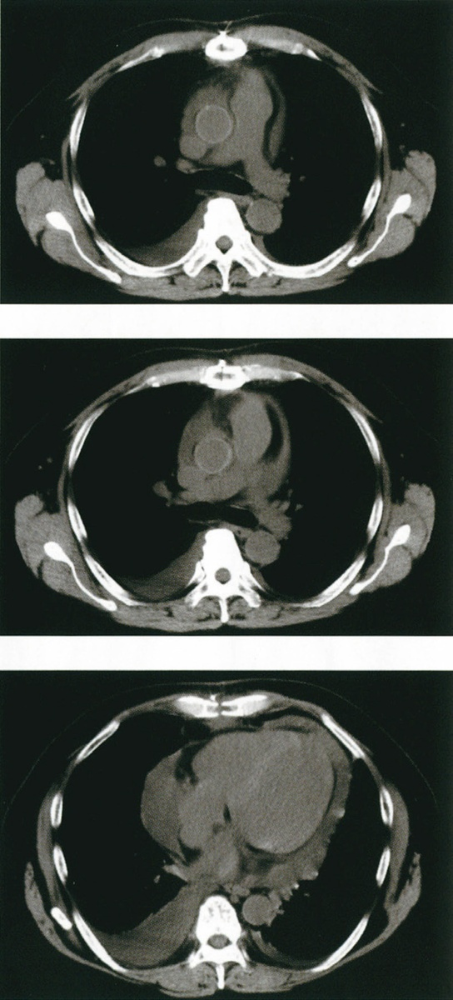
ａ 気 胸
ｂ 貧 血
ｃ 縦隔炎
ｄ 胸水貯留
ｅ 心囊液貯留
✅
ｅ 心囊液貯留
術後心嚢液貯留（post-pericardiotomy syndrome または出血性心嚢液）→心タンポナーデ。
❤️ 開心術後の心嚢液貯留——「退院間近の急変」を見逃さない
心臓手術では心膜を切開するため、術後の心嚢液貯留はきわめて一般的である。術後に心エコーを行えば半数以上に少量の心嚢液が見つかる。問題はそのうち1〜2%が心タンポナーデに進展し、しばしば「経過良好」とされていた患者が突然悪化することである。術後心嚢液の2つの成り立ち：
①遅発性心嚢内出血——縫合部・心膜の癒着面・ペーシングワイヤー抜去部からのじわじわとした出血。術後の抗凝固療法（機械弁なら必須）が助長する。術後1〜2週に多い
②開心術後症候群〈post-pericardiotomy syndrome〉——心膜損傷に対する自己免疫性の炎症反応。術後2〜4週に発熱・胸痛・心膜摩擦音・心嚢液・胸水・CRP上昇を呈する。Dressler症候群（心筋梗塞後）と同じ機序である。治療はNSAIDs＋コルヒチン
術後タンポナーデは非典型的な現れ方をする——血腫が一部に限局して「局所タンポナーデ」になり、心嚢液がびまん性に見えないため経胸壁心エコーで見逃されることがある。疑わしければ経食道心エコーを行う。また奇脈が出にくいことも多い（心膜が癒着し呼吸性の圧伝達が変化するため）。
だから「術後患者の原因不明の低血圧・乏尿・腎機能悪化」を見たら、まず心嚢液を疑って心エコーを当てるのが鉄則である。本例のBUN 30mg/dL・Cr 1.1mg/dLという腎機能悪化は、低心拍出による腎前性の変化であり、タンポナーデが全身に及ぼす影響が数字に出ている。
大動脈弁置換術〈AVR〉後の他の合併症も並べておく：①伝導障害（大動脈弁輪は房室結節に近く、完全房室ブロックでペースメーカが必要になることがある） ②人工弁機能不全・弁周囲逆流 ③人工弁血栓症・塞栓症 ④人工弁心内膜炎 ⑤溶血（機械弁） ⑥縦隔炎・胸骨離開 ⑦心房細動（術後の30〜40%）。
□ 選択肢の検討
| 選択肢 | 解説 |
|---|---|
| ａ 気 胸 | 合わない。気胸なら患側の呼吸音減弱・打診での鼓音・SpO2低下を認めるはずである——本例は呼吸音に異常を認めず、SpO2 98%（room air）・呼吸数18/分と呼吸状態が完全に保たれている。開心術後は胸腔ドレーン抜去後の気胸が起こりうるので鑑別には挙がるが、頸静脈怒張と心音減弱は気胸（緊張性でなければ）では説明できない。緊張性気胸なら頸静脈怒張は出るが、その場合は必ず患側の呼吸音が消失し、SpO2が保たれない。 |
| ｂ 貧 血 | 主因ではない。たしかにHb 10.7g/dL・Ht 31%と軽度の貧血があり、術後としては珍しくない——しかしHb 10.7g/dLは輸血閾値（心血管疾患があっても8g/dL）を大きく上回り、この程度の貧血で頸静脈怒張と心音減弱は生じない。貧血で心不全様症状が出るのはHb 7g/dL未満の高拍出性心不全のレベルで、しかもその場合は脈圧が開いて末梢は温かい——本例の血圧94/74mmHg（脈圧20mmHgと狭小）とは正反対である。「所見はあるが主因ではない」という選択肢を切る訓練として良い。 |
| ｃ 縦隔炎 | 否定的。縦隔炎は開心術（胸骨正中切開）の重篤な合併症で、術後1〜2週に発熱・創部の発赤/排膿/離開・胸骨の動揺・白血球増加・CRP高値を呈する——本例は体温36.7℃・白血球8,700・CRP 1.2mg/dLと炎症所見が乏しく、創部の異常の記載もない。縦隔炎は死亡率が高く、糖尿病・肥満・両側内胸動脈使用・再開胸が危険因子である。診断がつけばデブリードマンと持続洗浄、陰圧閉鎖療法、長期抗菌薬が必要になる重篤な病態だが、本例の数値はそれを支持しない。 |
| ｄ 胸水貯留 | 主因ではない。開心術後の胸水貯留は非常に頻度が高く、左側に多い（心膜切開と左内胸動脈採取の影響）——しかし胸水そのものが頸静脈怒張と心音減弱と血圧低下を来すことはない。大量胸水なら患側の呼吸音減弱・打診での濁音・SpO2低下が出るが、本例は呼吸音に異常なく SpO2 98%である。なお開心術後症候群〈post-pericardiotomy syndrome〉では心嚢液と胸水が同時に貯留することが多く、胸部エックス線（A）に胸水が写っていても矛盾しない——ただし症状に「最も関連している」のは心嚢液である。 |
| ◯ ｅ 心囊液貯留 | これが正解。本例は①1週前の大動脈弁置換術 ②昨日からの食欲不振、今朝からの息切れと全身倦怠感 ③脈拍100/分 ④血圧94/74mmHg（脈圧20mmHgと狭小） ⑤頸静脈怒張 ⑥心音減弱 ⑦呼吸音は正常 ⑧BUN 30・Cr 1.1mg/dLと腎機能の悪化——Beck三徴（低血圧・頸静脈怒張・心音減弱）が揃った術後心嚢液貯留による心タンポナーデである。胸部エックス線（A）では心陰影の拡大（フラスコ型）、胸部単純CT（B）では心臓を取り巻く心嚢液が確認できる。原因は①遅発性の心嚢内出血（抗凝固療法下） ②開心術後症候群〈post-pericardiotomy syndrome〉による滲出のいずれかで、術後1〜数週に遅れて顕在化する。治療は心嚢穿刺またはドレナージで、血腫が器質化していれば外科的除去が必要になる。 |
🔍 術後の低血圧を系統立てて考える／人工弁の選択と抗凝固
| 原因 | 頸静脈 | 決め手 | 対応 |
|---|---|---|---|
| 心タンポナーデ | 怒張 | 心音減弱・脈圧狭小・心エコー（局所なら経食道） | ドレナージ／再開胸 |
| 出血（ドレーンからの持続・後出血） | 虚脱 | Hb低下・ドレーン排液量 | 輸血・再開胸止血 |
| 低心拍出症候群 | 怒張 | 心エコーで収縮低下・肺動脈カテーテル | 強心薬・IABP・補助循環 |
| 敗血症（縦隔炎・肺炎・カテーテル感染） | 虚脱 | 発熱・CRP/白血球上昇・創部所見 | 培養・抗菌薬・source control |
| 不整脈（心房細動・完全房室ブロック） | — | 心電図 | レートコントロール・ペーシング |
| 肺塞栓症 | 怒張 | 低酸素・造影CT | 抗凝固 |
| 緊張性気胸（ドレーン抜去後） | 怒張 | 患側呼吸音消失・鼓音 | 脱気 |
人工弁の選択：
| 機械弁 | 生体弁 | |
|---|---|---|
| 耐久性 | 半永久的 | 10〜20年（若年ほど早く劣化） |
| 抗凝固 | ワルファリンを生涯（DOACは禁忌） | 術後3〜6か月のみ（以後は不要） |
| 適する年齢 | 若年（おおむね60〜65歳未満） | 高齢、妊娠希望、出血リスクが高い、抗凝固管理が困難 |
| 合併症 | 血栓弁・出血・溶血 | 構造的劣化による再手術 |
近年はTAVI（経カテーテル大動脈弁植込み術）が高齢者・手術ハイリスク例で標準になりつつある。合併症は伝導障害（左脚ブロック・完全房室ブロック）・弁周囲逆流・血管損傷・脳梗塞で、心嚢液貯留（心穿孔）も起こりうる。
🎯 国試ポイント
① 開心術1週後＋Beck三徴（低血圧・頸静脈怒張・心音減弱）＋脈圧狭小＝心嚢液貯留による心タンポナーデ。② 術後心嚢液は①遅発性心嚢内出血（抗凝固下・術後1〜2週） ②開心術後症候群（自己免疫性・術後2〜4週・NSAIDs＋コルヒチン）の2系統。
③ 術後タンポナーデは「局所タンポナーデ」になり経胸壁心エコーで見逃されやすい。疑えば経食道心エコー。奇脈も出にくい。
④ 術後の原因不明の低血圧・乏尿・腎機能悪化＝まず心嚢液を疑う。
⑤ 術後低血圧の分岐点も頸静脈——怒張ならタンポナーデ/低心拍出/肺塞栓/緊張性気胸、虚脱なら出血/敗血症。
⑥ 開心術後症候群＝Dressler症候群と同じ機序（心膜損傷への自己免疫反応）。心嚢液と胸水が同時に貯留。
⑦ 機械弁の抗凝固はワルファリン一択でDOACは禁忌。生体弁は術後3〜6か月のみ。
⑧ AVR後の合併症＝伝導障害（房室結節が近い）・人工弁機能不全・人工弁心内膜炎・溶血・縦隔炎・心房細動。
⑨ Hb 10.7g/dLの貧血ではBeck三徴は説明できない——「所見はあるが主因ではない」選択肢を切る。
Q.402(114A-69)2択正答率 95%
70 歳の男性。発熱を主訴に来院した。2 週前から38℃前後の発熱が出現し、解熱薬とセフェム系の抗菌薬を処方された。一時的に症状の改善がみられたが、投薬の終了後に再び発熱したため、紹介され受診した。58 歳時より高血圧症および脂質異常症に対して自宅近くの診療所から内服薬を処方されている。3 年前に僧帽弁逆流症を指摘されたが手術適応はないと診断されていた。意識は清明。体温37.6℃。脈拍72/ 分、整。血圧124/80mmHg。呼吸数18/ 分。SpO2 94％（room air）。心音は心尖部にⅢ/Ⅵの全収縮期雑音を聴取する。呼吸音に異常を認めない。尿所見：
尿比重1.016、蛋白（－）、糖（－）、潜血（－）、沈渣に赤血球、白血球を認めない。血液所見：赤血球452 万、Hb12.4g/dL、Ht 36％、白血球12,400（桿状核好中球55％、分葉核好中球22％、好酸球2％、好塩基球1％、単球5％、
リンパ球15％）、血小板35 万。血液生化学所見：AST 38U/L、ALT 36U/L、尿素窒素20mg/dL、クレアチニン1.0mg/dL、尿酸7.1mg/dL、Na 137mEq/L、K 4.6mEq/L、Cl 100mEq/L。CRP 20mg/dL。
現時点における対応で正しいのはどれか。2 つ選べ。
尿比重1.016、蛋白（－）、糖（－）、潜血（－）、沈渣に赤血球、白血球を認めない。血液所見：赤血球452 万、Hb12.4g/dL、Ht 36％、白血球12,400（桿状核好中球55％、分葉核好中球22％、好酸球2％、好塩基球1％、単球5％、
リンパ球15％）、血小板35 万。血液生化学所見：AST 38U/L、ALT 36U/L、尿素窒素20mg/dL、クレアチニン1.0mg/dL、尿酸7.1mg/dL、Na 137mEq/L、K 4.6mEq/L、Cl 100mEq/L。CRP 20mg/dL。
現時点における対応で正しいのはどれか。2 つ選べ。
ａ 血液培養
ｂ 心筋生検
ｃ 遺伝子検査
ｄ 心エコー検査
ｅ ウイルス抗体価の確認
✅
ａ 血液培養 ＋ ｄ 心エコー検査
IE疑い（弁膜症+持続発熱+抗菌薬無効）→血液培養（抗菌薬変更前）+心エコー（疣贅確認）。
❤️ IEを疑ったときの「最初の2手」——血液培養と心エコー
感染性心内膜炎の診断はDuke基準で組み立てる。その大基準は2つしかない：①血液培養陽性——典型菌（緑色連鎖球菌・S. gallolyticus・HACEK群・黄色ブドウ球菌・市中感染型腸球菌）が2セット以上から検出、または持続的菌血症（12時間以上あけた2セット、あるいは3セット以上で最初と最後が1時間以上離れている全て/大部分が陽性）、またはCoxiella burnetii の血清学的証拠
②心内膜病変——心エコーでの疣贅・膿瘍・人工弁の新規部分的裂開、または新規の弁逆流
つまり「培養」と「エコー」の2つを取りに行けば、確診に最も近づく——だから本問の答えは自動的に決まる。
小基準は5つ：①素因（弁疾患・人工弁・静注薬物使用） ②38℃以上の発熱 ③血管現象（動脈塞栓・敗血症性肺塞栓・感染性動脈瘤・頭蓋内出血・眼球結膜出血・Janeway病変） ④免疫学的現象（糸球体腎炎・Osler結節・Roth斑・リウマトイド因子陽性） ⑤大基準を満たさない微生物学的所見。確診＝大2／大1＋小3／小5。可能性が高い〈possible〉＝大1＋小1／小3。
本例を当てはめると、現時点で小基準①（僧帽弁逆流症）と②（発熱）を満たし、大基準を2つとも取れれば確診になる。
「抗菌薬で一時的に良くなり、やめると再燃する」というパターンはIEの典型的な提示である——理由は疣贅の内部の菌は経口抗菌薬の短期投与では殺しきれず、表層の菌だけが減って一時的に解熱するから。これを繰り返すと診断が遅れ、弁破壊と塞栓が進む。実務では「不明熱に安易に抗菌薬を出さない」ことが強調されるが、その最大の理由の一つがIEの診断を潰さないためである。
本例で警戒すべきこと——CRP 20mg/dL・白血球12,400で桿状核好中球55%という著明な核左方移動は、重症の細菌感染を示す。SpO2 94%という軽度の低下も、弁逆流の悪化による心不全の始まりかもしれない。
□ 選択肢の検討
| 選択肢 | 解説 |
|---|---|
| ◯ ａ 血液培養 | これが正解。本例は①3年前から僧帽弁逆流症という素因 ②2週間続く発熱 ③セフェム系抗菌薬で一時改善するが投薬終了後に再燃 ④心尖部Ⅲ/Ⅵの全収縮期雑音 ⑤白血球12,400（桿状核好中球55%と著明な核左方移動） ⑥CRP 20mg/dL——感染性心内膜炎を強く疑う状況で、Duke基準の大基準を取りに行く2つの検査のうち一方が血液培養である。抗菌薬を再開する前に採取することが決定的に重要で、先に抗菌薬を入れると検出率が激減し、原因菌不明のまま4〜6週の広域治療を強いられる。本例は既にセフェム系の投与歴があるため培養陰性IEになるリスクが高い——それでも投薬が終了して再燃している「今」が最も採取に適したタイミングである。 |
| ｂ 心筋生検 | 適応がない。心筋生検は心筋炎（とくに巨細胞性心筋炎・好酸球性心筋炎）・心アミロイドーシス・サルコイドーシス・Fabry病・原因不明の急速進行性心不全の診断に用いる侵襲的検査である——本例は心筋の病気を疑う所見（心不全・心電図変化・トロポニン上昇）がなく、狙うべきは弁の疣贅である。心筋生検には心穿孔・心タンポナーデ・不整脈・三尖弁損傷という合併症があり、適応のない実施は害でしかない。感染性心内膜炎の診断に心筋生検が必要になることはない。 |
| ｃ 遺伝子検査 | 適応がない。遺伝子検査が意味を持つのは肥大型心筋症・拡張型心筋症・QT延長症候群・Brugada症候群・Marfan症候群・家族性高コレステロール血症など、遺伝性の心血管疾患を疑う場面である——本例は70歳での発症、明確な感染の経過、素因となる弁膜症という後天性の感染症であり、遺伝子検査の出番はない。なお血液培養陰性IEでは病原体のPCR（16S rRNA遺伝子や特定菌の遺伝子）を弁組織や血液で行うことがあるが、これは「遺伝子検査」という選択肢の意図するところではない。 |
| ◯ ｄ 心エコー検査 | これが正解。心エコー検査はDuke基準のもう一つの大基準「心内膜病変」を確認する検査である——見るべきは①疣贅（弁に付着する可動性の腫瘤） ②弁破壊（穿孔・腱索断裂）による逆流の増悪 ③弁輪部膿瘍 ④人工弁の新規部分的裂開。本例は3年前に僧帽弁逆流症を指摘され手術適応なしとされていたので、そのときと比べて逆流が悪化していないかという比較も重要な情報になる。手順はまず経胸壁〈TTE〉、疑いが強く陰性なら経食道〈TEE〉。TTEの感度は50〜75%にとどまるので、陰性でもIEを否定してはいけない。血液培養と心エコーの2つを同時に走らせるのが実務である。 |
| ｅ ウイルス抗体価の確認 | 適応がない。ウイルス抗体価が意味を持つのは急性心筋炎・急性心膜炎（コクサッキーB・エコー・アデノ）やウイルス性肝炎・伝染性単核球症などを疑う場面である——本例の経過（細菌感染を示唆する著明な核左方移動・CRP 20mg/dL・抗菌薬への反応）は、ウイルス性ではなく細菌性を強く示す。加えて抗体価はペア血清（急性期と回復期）で4倍以上の上昇を見て初めて診断的になるため、「現時点における対応」としては遅すぎる。今まさに治療方針を決めなければならない局面で、数週間後にしか結果が意味を持たない検査は選ばない。 |
🔍 血液培養の実務／IE治療中に見るべき指標
血液培養を正しく採るための6つの原則：①抗菌薬の投与前に採る——最も重要。既に投与されている場合は次回投与直前（トラフ）に採る
②2〜3セット、異なる穿刺部位から——コンタミネーションの判別と、持続的菌血症の証明に要る
③各セット好気・嫌気ボトルへ、成人なら1本8〜10mL——血液量が検出率を最も左右する
④皮膚消毒を徹底——アルコール＋クロルヘキシジンまたはポビドンヨードで、乾燥するまで待つ
⑤カテーテルからの採血は原則避ける（コンタミが多い）。ただしカテーテル関連血流感染を疑うときは、カテーテル血と末梢血を同時に採って陽性化時間の差を見る
⑥IEでは持続的菌血症なので、時間を空けなくても全セット陽性になる——逆に一部のセットだけ陽性なら、菌種によってはコンタミを疑う
| 治療中に追う指標 | 意味 | 頻度 |
|---|---|---|
| 血液培養 | 陰性化＝治療期間の起算点。持続すれば制御されていない病巣あり | 開始48〜72時間後、以後は必要に応じ |
| 体温・CRP | 解熱と炎症の沈静。1週間以上続く発熱は膿瘍・塞栓・薬剤熱 | 毎日 |
| 心電図 | 新規のPR延長・房室ブロック＝弁輪部膿瘍 | 毎日 |
| 心エコー | 疣贅の大きさ・弁逆流の重症度・心不全の進行 | 週1回程度、状態が変われば随時 |
| 腎機能 | 糸球体腎炎・腎梗塞・抗菌薬の腎毒性（バンコマイシン・アミノグリコシド） | 数日ごと |
| 神経所見 | 塞栓・感染性動脈瘤 | 毎日 |
本例のような「弁膜症＋長引く発熱」の患者では、外来で抗菌薬を出す前に必ず血液培養を採る——これは国試の設問である以前に、実際の診療で最も守られるべき原則の一つである。
🎯 国試ポイント
① IEを疑ったら「血液培養」と「心エコー」の2つ＝Duke基準の大基準そのもの。本問の2つの正解。② 血液培養は抗菌薬投与前に、異なる部位から2〜3セット、十分量。既に投与中なら次回投与直前に採る。
③ 「抗菌薬で一時的に解熱し、やめると再燃」はIEの典型的経過。疣贅の内部の菌が殺しきれないため。
④ 不明熱に安易に抗菌薬を出さない——IEの診断（培養）を潰すため。
⑤ Duke確診＝大2／大1＋小3／小5。大基準は「血液培養陽性」「心内膜病変」の2つだけ。
⑥ 心エコーはTTE→TEE。TTEの感度50〜75%なので陰性でも否定できない。
⑦ 治療中は毎日心電図——新規のPR延長・房室ブロックは弁輪部膿瘍のサインで、心エコーより早く出ることがある。
⑧ 心筋生検は心筋炎・アミロイドーシス・サルコイドーシスの診断。IEには不要で合併症のリスクだけが残る。
⑨ ウイルス抗体価はペア血清で4倍以上の上昇を見る——「現時点の対応」としては結果が遅すぎる。
Q.403(114D-41)📷 画像正答率 75%
65 歳の女性。下腿浮腫を主訴に来院した。1 か月前から下腿浮腫と軽度の労作時呼吸困難感があり改善しないため受診した。体温36.5℃。脈拍72/ 分、整。血圧110/80mmHg。呼吸数14/ 分。SpO2 95％（room air）。心音は微弱で拡張早期過剰心音を聴取する。呼吸音に異常を認めない。両側に著明な下腿浮腫を認める。胸部CT（A）及び右心カテーテル所見（B，C）を示す。
治療で選択すべきなのはどれか。
治療で選択すべきなのはどれか。
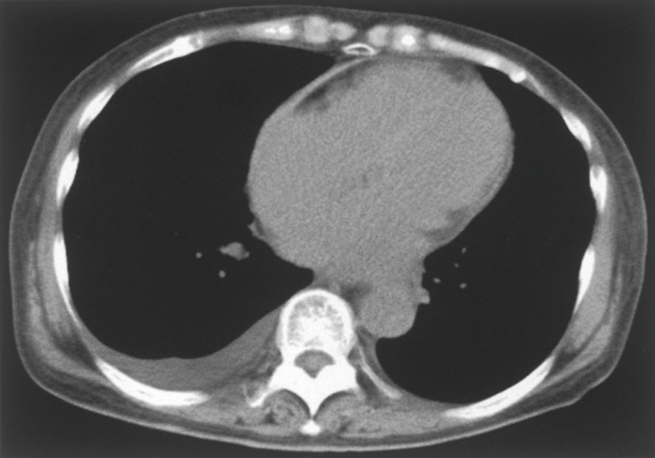
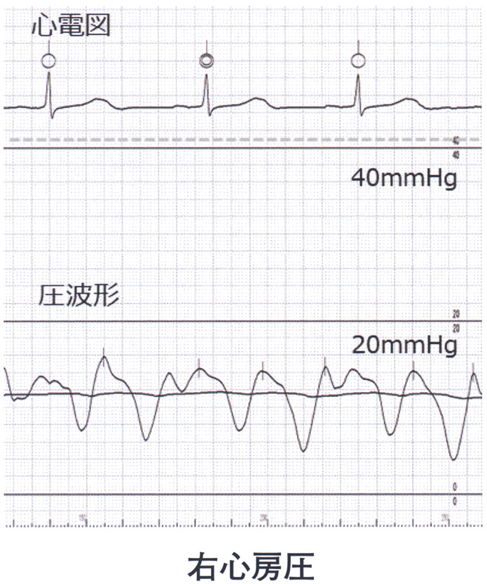
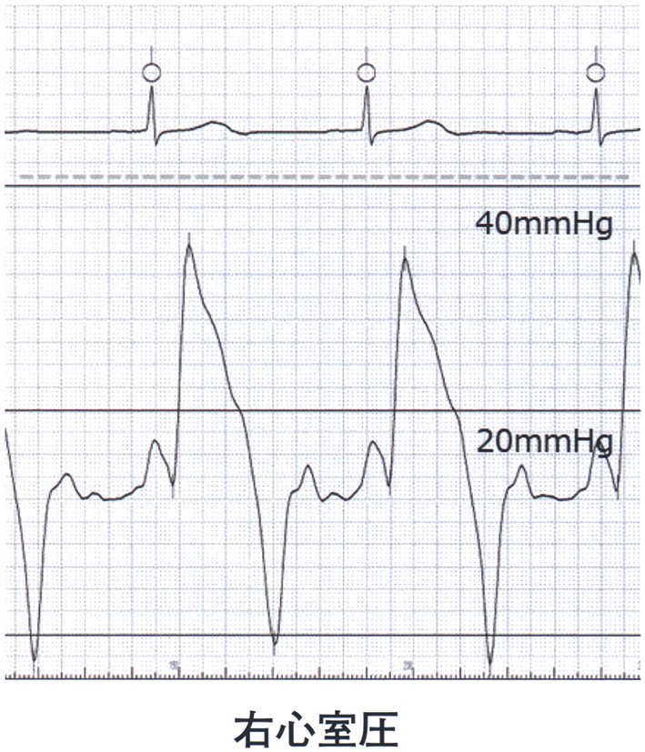
ａ β遮断薬
ｂ コルヒチン
ｃ 心膜切除術
ｄ 心囊ドレナージ
ｅ 経カテーテル心室中隔焼灼術
✅
ｃ 心膜切除術
収縮性心膜炎（dip and plateau+心膜石灰化CT）→根治療法は心膜切除術（心膜剥離術）。
❤️ 収縮性心膜炎の診断と治療——CTとカテーテルで確定する
本例は65歳女性・1か月の下腿浮腫と軽度の労作時呼吸困難という、一見「よくある浮腫」の提示である——しかし心音微弱＋拡張早期過剰心音（心膜ノック音）＋著明な両側下腿浮腫＋SpO2 95%という所見の組み合わせが、心臓由来であることを教えている。収縮性心膜炎が「見逃されやすい」理由——臨床像が右心不全であり、肝腫大・腹水・浮腫が前面に出るため、肝硬変・ネフローゼ症候群・悪性腫瘍・心不全一般と誤られる。「原因不明の浮腫と腹水」を見たら頸静脈を必ず観察する——怒張していれば心臓由来である。
診断の道具立て：
| 検査 | 所見 |
|---|---|
| 胸部エックス線（側面像） | 心陰影を縁取る心膜石灰化。心陰影は正常〜軽度拡大にとどまる |
| 胸部CT | 心膜肥厚（4mm以上）と石灰化。本例の（A） |
| 心臓MRI | 心膜の肥厚と造影効果（活動性の炎症＝可逆性の判断）、心室中隔の呼吸性動揺 |
| 心エコー | 心室中隔の呼吸性動揺（septal bounce）、僧帽弁/三尖弁流入速度の呼吸性変動（25%以上）、下大静脈拡張 |
| 心臓カテーテル | dip and plateau（平方根徴候）と左右心室拡張末期圧の等値化。本例の（B・C） |
| BNP | 軽度上昇にとどまる（拘束型心筋症との鑑別点） |
手術のタイミング——NYHA Ⅱ〜Ⅲで、心筋の二次的な萎縮・線維化が進む前が最良。NYHA Ⅳまで待つと手術死亡率が跳ね上がり、術後の回復も乏しい。術後は数週から数か月かけて徐々に血行動態が改善する（心筋がすぐには元に戻らない）。放射線照射後の症例は心筋自体が障害されているため成績が悪い。
□ 選択肢の検討
| 選択肢 | 解説 |
|---|---|
| ａ β遮断薬 | 有害である。収縮性心膜炎では心室が硬い心膜に締めつけられて1回拍出量を増やせないため、心拍出量は心拍数でしか稼げない——β遮断薬で心拍数を落とせば心拍出量が直接低下してショックに陥りうる。本例の脈拍72/分は決して速くなく、ここからさらに落とす余地はない。同じ理由でジギタリス・ベラパミルも避ける。「拡張が制限されている病態では頻脈という代償を奪わない」という原則で束ねて覚える。 |
| ｂ コルヒチン | この時期には効かない。コルヒチンは急性心膜炎とその再発予防においてNSAIDsと併用する標準治療薬で、再発率を約半分に減らす——しかし本例は心膜の石灰化を伴う確立した収縮性心膜炎であり、すでに線維化・石灰化した心膜は抗炎症薬では元に戻らない。ただし「一過性収縮性心膜炎〈transient constriction〉」という群が10〜20%存在し、石灰化がなく炎症所見（CRP高値・造影MRIでの心膜の造影効果）が強い症例では、抗炎症治療で改善しうる。本例は胸部CT（A）で心膜石灰化が明らかであり、この群には当たらない。 |
| ◯ ｃ 心膜切除術 | これが正解。本例は①1か月続く下腿浮腫と軽度の労作時呼吸困難 ②心音微弱＋拡張早期過剰心音（心膜ノック音） ③著明な両側下腿浮腫 ④胸部CT（A）で心膜の肥厚・石灰化 ⑤右心カテーテル（B・C）でdip and plateauと左右心室拡張末期圧の等値化——収縮性心膜炎の診断が確定しており、唯一の根治治療は心膜切除術〈心膜剥離術・pericardiectomy〉である。術式は胸骨正中切開で、両側の横隔神経の間の心膜を可能な限り広く剥離する。石灰化が心筋へ食い込んでいる場合は困難を極める。手術死亡率は5〜15%と決して低くなく、NYHA Ⅳまで進行した例・放射線照射後で心筋自体が線維化した例では成績が悪い——だから診断がついたら早期に手術するのが原則である。 |
| ｄ 心囊ドレナージ | 適応がない。心嚢ドレナージは心嚢液が貯留して心タンポナーデを起こしているときの治療である——収縮性心膜炎では問題は「液体」ではなく「硬くなった心膜そのもの」なので、抜くべき液体がない。両者は「拡張が制限される」という血行動態は似ているが、原因も治療もまったく異なる——タンポナーデは急性・液体・穿刺で解決、収縮性心膜炎は慢性・心膜の線維化・切除で解決である。なお滲出性収縮性心膜炎〈effusive-constrictive pericarditis〉という中間型もあり、心嚢液を抜いても右房圧が下がらないことで診断される。この場合も最終的には心膜切除が要る。 |
| ｅ 経カテーテル心室中隔焼灼術 | まったく適応が違う。経カテーテル心室中隔焼灼術〈PTSMA・経皮的中隔心筋焼灼術〉は、薬物治療に抵抗性の閉塞性肥大型心筋症〈HOCM〉に対して、中隔枝にエタノールを注入して肥厚した心室中隔を人為的に梗塞させ、左室流出路の圧較差を減らす治療である——本例は心筋の肥厚ではなく心膜の硬化が問題であり、まったく関係がない。HOCMの治療階層は①β遮断薬・ベラパミル・シベンゾリン ②それでも症状が続けばPTSMAまたは中隔心筋切除術〈Morrow手術〉 ③突然死ハイリスクならICD。HOCMでは硝酸薬・利尿薬・強心薬が禁忌（前負荷減少と収縮増強で閉塞が悪化する）という点も併せて押さえる。 |
🔍 心膜ノック音とⅢ音の区別／浮腫の鑑別に心臓を入れる
| 心膜ノック音 | Ⅲ音〈S3〉 | opening snap | |
|---|---|---|---|
| タイミング | Ⅱ音の0.06〜0.12秒後（Ⅲ音より早い） | Ⅱ音の0.12〜0.18秒後 | Ⅱ音の0.04〜0.12秒後 |
| 音の高さ | 高調で鋭い | 低調で鈍い | 高調で短い |
| 機序 | 急速流入が硬い心膜で突然止まる | 急速流入期の心室壁の振動 | 狭窄した僧帽弁が急に開く |
| 疾患 | 収縮性心膜炎 | 心不全・容量負荷（MR/AR）・若年の生理的Ⅲ音 | 僧帽弁狭窄症 |
| 聴診部位 | 胸骨左縁下部〜心尖部 | 心尖部（ベル型・左側臥位） | 心尖部 |
浮腫の鑑別に「心臓」を確実に入れる：
| 原因 | 頸静脈 | その他の手がかり |
|---|---|---|
| 右心不全・収縮性心膜炎 | 怒張 | 肝腫大・腹水・BNP・心膜石灰化 |
| ネフローゼ症候群 | 正常〜虚脱 | 高度蛋白尿・低アルブミン血症・脂質異常 |
| 肝硬変 | 正常〜虚脱 | 腹水・くも状血管腫・手掌紅斑・血小板減少 |
| 低栄養・蛋白漏出性胃腸症 | 正常〜虚脱 | 低アルブミン血症・下痢 |
| 甲状腺機能低下症 | 正常 | 圧痕を残さない粘液水腫・徐脈・低電位 |
| 薬剤性（Ca拮抗薬・NSAIDs・ピオグリタゾン） | 正常 | 薬歴 |
| 静脈・リンパの局所性 | 正常 | 片側性・深部静脈血栓症・リンパ浮腫 |
🎯 国試ポイント
① 収縮性心膜炎（心膜石灰化＋dip and plateau＋等値化）の治療は心膜切除術（心膜剥離術）のみ＝本問の正解。② β遮断薬・ジギタリスは有害——頻脈という唯一の代償を奪う。
③ 心嚢ドレナージは適応外——抜くべき液体がない。タンポナーデ（急性・液体・穿刺）とは治療が正反対。
④ コルヒチンは急性心膜炎とその再発予防。確立した石灰化には無効だが、一過性収縮性心膜炎（石灰化なし・炎症活動性）なら抗炎症治療で改善しうる。
⑤ 手術はNYHA Ⅱ〜Ⅲの段階で。Ⅳまで待つと死亡率が上がり効果も乏しい。放射線照射後は成績が悪い。
⑥ 心膜ノック音はⅡ音直後・高調。Ⅲ音（低調・やや遅い）、opening snap（高調・MSに伴う）と区別する。
⑦ 滲出性収縮性心膜炎＝心嚢液を抜いても右房圧が下がらない中間型。最終的には心膜切除。
⑧ 浮腫の3分岐＝両側＋頸静脈怒張（心臓）／両側で頸静脈正常（低アルブミン・薬剤）／片側（局所静脈・リンパ）。
⑨ PTSMAは閉塞性肥大型心筋症の治療。HOCMでは硝酸薬・利尿薬・強心薬が禁忌。
Q.404(114D-72)3択正答率 98%
28 歳の女性。発熱と左前胸部痛を主訴に来院した。5 日前から咽頭痛と37.5℃前後の発熱があったが、市販の感冒薬で様子をみていた。昨日から左前胸部の持続性の痛みが生じ、その痛みは深呼吸で増悪するという。既往歴、家族歴に特記すべきことはない。体温37.5℃。脈拍100/ 分、整。血圧112/60mmHg。呼吸数20/ 分。SpO2 97％（roomair）。心音では心膜摩擦音を聴取する。打診で左下胸部に濁音を認め、同部位で肺胞呼吸音の減弱を認める。腹部は平坦、軟で、肝・脾を触知しない。
現時点で行うべきなのはどれか。3 つ選べ。
現時点で行うべきなのはどれか。3 つ選べ。
ａ 心電図
ｂ 呼吸機能検査
ｃ 心エコー検査
ｄ 胸部エックス線撮影
ｅ トレッドミル運動負荷心電図
✅
ａ 心電図 ＋ ｃ 心エコー検査 ＋ ｄ 胸部エックス線撮影
感冒後の呼吸性胸痛＋心膜摩擦音→急性心膜炎。心電図（広範なST上昇・PR低下）・心エコー（心嚢液）・胸部エックス線（心陰影と左胸水）で確認する。
❤️ 急性心膜炎の初期評価——診断4項目を検査で埋めにいく
本例は28歳女性・5日前からの咽頭痛と37.5℃前後の発熱（先行する感冒様症状）・昨日からの左前胸部の持続性の痛みで深呼吸で増悪・心膜摩擦音・左下胸部の濁音と呼吸音減弱——ウイルス性/特発性の急性心膜炎に胸膜炎を合併した典型例である。急性心膜炎の診断は次の4項目のうち2つ以上：
①特徴的な胸痛——鋭く、吸気・咳・嚥下・仰臥位で増悪し、前傾坐位で軽快する。僧帽筋稜への放散は特異的
②心膜摩擦音——擦れるような高調な音。収縮期・拡張早期・心房収縮期の3相性が古典的だが1〜2相のことが多い。断続的で、聞こえなくても否定できない
③心電図の変化——広範な上に凹のST上昇とPR低下（aVRでは逆）
④新規または増加した心嚢液——心エコーで確認
本例は既に①と②を満たしているので診断は成立しているが、③④を確認し、同時に重症度と合併症を評価するのが「現時点で行うべきこと」である。
初期評価で確認すべき4つ：
①心筋炎の合併——トロポニンが上昇していれば心筋心膜炎。心機能が保たれていれば予後良好だが3〜6か月の運動制限が要る
②心嚢液とタンポナーデ——心エコー
③急性冠症候群の除外——心電図とトロポニン
④原因の推定——若年で先行感冒があればウイルス性/特発性。ほかに結核・悪性腫瘍・膠原病・尿毒症・心筋梗塞後・開心術後・放射線・薬剤
入院を要する「high risk」の指標：①38℃を超える発熱 ②亜急性の経過 ③大量の心嚢液（10mm超）またはタンポナーデ ④NSAIDsが1週間効かない ⑤心筋炎の合併 ⑥免疫抑制状態 ⑦外傷 ⑧経口抗凝固薬内服中。本例は体温37.5℃とhigh risk基準の発熱には達しておらず、胸水も少量であれば外来でNSAIDs＋コルヒチンを開始できる。
□ 選択肢の検討
| 選択肢 | 解説 |
|---|---|
| ◯ ａ 心電図 | これが正解。急性心膜炎の診断4項目のうち「広範なST上昇またはPR低下」を確認するために心電図は必須である——典型的にはaVRとV1を除くほぼ全誘導で上に凹のST上昇とPR部分の低下（aVRではPR上昇）を認める。同時に急性心筋梗塞との鑑別という決定的な役割も担う——上に凸のST上昇・限局した分布・鏡像変化・異常Q波があれば心筋梗塞であり、緊急カテーテル検査へ進む。さらに低電位や電気的交互脈があれば心嚢液の貯留を、QRS幅や不整脈があれば心筋炎の合併を疑う。胸痛の患者に対して最も速く・安く・非侵襲に情報が得られる検査であり、迷わず第一に行う。 |
| ｂ 呼吸機能検査 | 適応がない。呼吸機能検査（スパイロメトリー）は閉塞性換気障害（喘息・COPD）や拘束性換気障害（間質性肺疾患・神経筋疾患）の評価に用いる——本例の深呼吸で増悪する持続性の胸痛は胸膜性・心膜性の痛みであり、換気障害を疑う所見ではない。加えて急性期の胸痛患者に強制呼出を強いるのは苦痛であり、診断にも寄与しない。呼吸機能検査は安定期に、慢性の呼吸器疾患を評価するための検査であって、救急の胸痛評価に使うものではない。 |
| ◯ ｃ 心エコー検査 | これが正解。急性心膜炎の診断4項目のうち「新規または増加した心嚢液」を確認する検査である——さらに重要なのは心嚢液が心タンポナーデに至っていないか（拡張期右室虚脱・下大静脈拡張）と、心筋炎の合併による左室機能低下がないかを同時に評価できることである。本例は脈拍100/分・血圧112/60mmHgと現時点で血行動態は保たれているが、心膜炎から心嚢液が急速に増えればタンポナーデになりうるので、初診時の評価は必須である。また左下胸部の濁音と呼吸音減弱＝胸水も心エコーで確認できる（心膜炎に伴う胸膜炎）。 |
| ◯ ｄ 胸部エックス線撮影 | これが正解。本例は打診で左下胸部に濁音、同部位で肺胞呼吸音の減弱を認めており、左胸水が強く疑われる——胸部エックス線はこれを確認する第一の検査であり、同時に①心陰影の大きさ（心嚢液貯留があればフラスコ型に拡大） ②肺炎・気胸・肺うっ血の除外という複数の目的を一度に果たす。急性心膜炎ではしばしば胸膜炎を合併し、心膜と胸膜は解剖学的に接しているため炎症が波及する。胸痛の初期評価で胸部エックス線を撮らない選択肢はない——気胸・肺炎・大動脈解離（上縦隔拡大）といった鑑別を一枚で広くカバーできるためである。 |
| ｅ トレッドミル運動負荷心電図 | 禁忌に近い。トレッドミル運動負荷心電図は安定狭心症が疑われる患者で、労作による心筋虚血を誘発して評価する検査である——急性期の胸痛患者、とくに急性冠症候群・急性心膜炎・急性心筋炎・重症大動脈弁狭窄症・コントロール不良の高血圧・急性大動脈解離が疑われる患者では禁忌である。急性心膜炎では運動負荷が心筋炎の合併時に致死性不整脈を誘発する危険があり、実際に心筋心膜炎では3〜6か月の運動制限が指示される。また本例の痛みは労作と無関係で、深呼吸で増悪する——労作性狭心症の病歴ではないので、そもそも検査前確率が低い。 |
🔍 胸痛の初期3点セット／急性心膜炎の治療と再発
救急外来の胸痛で「必ず取る3つ」＝心電図・胸部エックス線・（必要に応じ）心エコーである。これにトロポニン・Dダイマーを加えれば、致死的胸痛5疾患（急性冠症候群・大動脈解離・肺血栓塞栓症・緊張性気胸・食道破裂）の大半を拾える。| 検査 | 分かること |
|---|---|
| 心電図 | ST上昇の形と分布（心筋梗塞か心膜炎か）・PR低下・低電位・電気的交互脈・不整脈・右心負荷（S1Q3T3） |
| 胸部エックス線 | 気胸・肺炎・胸水・心陰影の大きさ・上縦隔拡大（大動脈解離）・肺うっ血 |
| 心エコー | 心嚢液とタンポナーデ・壁運動異常・弁膜症・右室拡大（肺塞栓）・大動脈基部の解離 |
| トロポニン | 心筋傷害（心筋梗塞・心筋炎・肺塞栓・敗血症でも上昇） |
| Dダイマー | 陰性なら肺塞栓・大動脈解離の除外に有用（陽性の特異度は低い） |
①NSAIDs——イブプロフェンやアスピリンを症状が消えCRPが正常化するまで十分量、その後漸減
②コルヒチン——3か月併用。再発率を約半分に減らすので標準治療に組み込まれている。副作用は下痢
③副腎皮質ステロイド——再発を増やすため第一選択にしない。NSAIDs不応例・自己免疫性・尿毒症性・妊娠中に限って低〜中等量で用いる
④心筋梗塞後の心膜炎ではアスピリンを用い、インドメタシンやステロイドは避ける（心筋の菲薄化・心破裂のリスク）
⑤運動制限——症状消失とCRP正常化まで。心筋炎を合併していれば3〜6か月
再発性心膜炎は15〜30%に生じ、コルヒチンを併用しなかった例で多い。難治例にはアナキンラ（IL-1受容体拮抗薬）や、最終手段として心膜切除術が用いられる。
心膜炎の合併症——①心タンポナーデ（急性期） ②再発 ③収縮性心膜炎（1%未満だがウイルス性/特発性でも起こりうる。結核性・化膿性・放射線後で頻度が高い）。「急性心膜炎の一部が収縮性心膜炎になる」という繋がりを持っておくと、この章全体が一本の線で結ばれる。
🎯 国試ポイント
① 急性心膜炎の初期評価＝心電図・心エコー・胸部エックス線の3つ＝本問の3つの正解。② 診断は4項目のうち2つ以上——①特徴的胸痛 ②心膜摩擦音 ③広範なST上昇/PR低下 ④新規の心嚢液。
③ 心電図は心筋梗塞との鑑別も担う——上に凹・広範・鏡像変化なし・PR低下ありなら心膜炎。
④ 心エコーで心嚢液とタンポナーデ、心筋炎合併による左室機能低下を評価。
⑤ 運動負荷心電図は急性期の胸痛患者に禁忌。心筋炎合併時は致死性不整脈を誘発しうる。
⑥ 治療はNSAIDs＋コルヒチン3か月。コルヒチンが再発を約半分に減らす。ステロイドは再発を増やす。
⑦ 心筋梗塞後の心膜炎はアスピリン。インドメタシン・ステロイドは心破裂のリスクで避ける。
⑧ 入院を要するhigh risk＝38℃超の発熱・亜急性・大量心嚢液/タンポナーデ・NSAIDs不応・心筋炎合併・免疫抑制・外傷・抗凝固薬内服。
⑨ 合併症＝タンポナーデ・再発（15〜30%）・収縮性心膜炎。心膜炎と収縮性心膜炎は地続きである。
Q.405(114F-4)正答率 97%
感染性心内膜炎の疣贅を検出する感度が最も高いのはどれか。
ａ 心臓MRI
ｂ 胸部造影CT
ｃ 経胸壁心エコー検査
ｄ 経食道心エコー検査
ｅ MIBG 心筋シンチグラフィ
✅
ｄ 経食道心エコー検査
経食道心エコー（TEE）：疣贅検出感度90〜95%（経胸壁TTEの50〜75%より格段に高い）。
❤️ IEの画像診断——TTEとTEEの役割分担
感染性心内膜炎の診断において、Duke基準の大基準の一つ「心内膜病変」を証明するのが心エコーである。見るべき所見は①疣贅（弁または心内膜に付着する、独立して振動する腫瘤） ②膿瘍（弁輪周囲のecho lucent space） ③人工弁の新規部分的裂開 ④新規の弁逆流。| 経胸壁心エコー〈TTE〉 | 経食道心エコー〈TEE〉 | |
|---|---|---|
| 疣贅検出の感度 | 50〜75% | 90〜95% |
| 特異度 | 約90% | 約90% |
| 侵襲 | なし | 鎮静が必要。食道疾患では禁忌 |
| 得意 | 心機能・逆流の重症度・心嚢液・右心系・三尖弁 | 小さな疣贅・人工弁・弁輪部膿瘍・弁穿孔・左心耳血栓・大動脈解離 |
| 不得意 | 肥満・肺気腫・胸郭変形・人工弁の裏側 | 右心系の一部・心尖部 |
疣贅と紛らわしいもの：Lambl疣贅（加齢性の微小な線維性索状物）・乳頭状線維弾性腫・粘液腫・血栓・弁の粘液腫様変性・弁尖の石灰化・人工弁の縫合糸。これらとの区別には臨床背景（発熱・血液培養陽性・弁破壊の進行）が不可欠で、画像だけでIEを診断してはいけない。
近年は核医学が補助的に使われる——18F-FDG PET/CTは人工弁心内膜炎や心内デバイス感染で有用性が示され、2015年のESCガイドラインでは人工弁IEの診断基準に組み込まれた。ただし術後3か月以内は術後炎症で偽陽性になる。また全身のFDG集積から塞栓性病巣（脾・腎・脊椎）を一度に拾えるという利点もある。
□ 選択肢の検討
| 選択肢 | 解説 |
|---|---|
| ａ 心臓MRI | 感度は劣る。心臓MRIは心筋の性状評価（遅延造影による線維化・浮腫・脂肪）に優れ、心筋炎・心アミロイドーシス・サルコイドーシス・心筋症の鑑別で威力を発揮する——しかし疣贅のような小さく激しく動く構造物を捉えるには時間分解能が足りない。IEにおけるMRIの実際の役割は脳合併症（塞栓性梗塞・感染性動脈瘤・微小出血）の評価であり、弁の疣贅そのものを見る検査ではない。またペースメーカ・ICDなど条件付きでない心内デバイスがあると撮影できないという制約もある。 |
| ｂ 胸部造影CT | 感度は劣る。胸部造影CTは時間分解能が心エコーに劣り、10mm未満の疣贅の検出は不得手である——ただし近年は心電図同期の高精細CTが普及し、弁輪部膿瘍・仮性動脈瘤・瘻孔といった弁周囲の合併症の評価では経食道心エコーに匹敵する、あるいは補完する役割を持つようになった。またIEでは全身の塞栓検索（脾梗塞・腎梗塞・腸間膜動脈閉塞・感染性動脈瘤）のために体幹部CTを撮ることが多く、「疣贅を見る」以外の目的では欠かせない検査である。本問が問うのは疣贅検出の感度なので答えにはならない。 |
| ｃ 経胸壁心エコー検査 | 感度は劣る。経胸壁心エコー〈TTE〉の疣贅検出感度は50〜75%である——限界の原因は①胸壁・肋骨・肺（空気）が超音波を妨げる ②肥満・肺気腫・胸郭変形で描出が悪い ③人工弁は金属のアーチファクトで裏側が見えない ④小さな疣贅（5mm未満）は捉えられない。それでも非侵襲的で、心機能・弁逆流の重症度・心嚢液・右心系の評価に優れるため、IEを疑ったら必ず最初に行う。陽性なら十分に診断がつく——問題は陰性のときで、臨床的な疑いが強ければTEEへ進むのが正しい手順である。 |
| ◯ ｄ 経食道心エコー検査 | これが正解。経食道心エコー〈TEE〉の疣贅検出感度は90〜95%で、あらゆる画像検査のなかで最も高い——理由はプローブが食道内から心臓のすぐ背側に位置するため、肺や胸壁に妨げられず、高周波（高分解能）のプローブが使えることにある。とくに①左房・僧帽弁・大動脈弁 ②人工弁（TTEでは金属の陰になる部分） ③弁輪部膿瘍・仮性動脈瘤・弁穿孔 ④左心耳血栓の評価では圧倒的に優れる。TEEが必須になる状況：①TTE陰性だが臨床的にIEを強く疑う ②人工弁・心内デバイスがある ③弁輪部膿瘍を疑う（新規の房室ブロック） ④手術術式の決定。欠点は鎮静が必要な半侵襲的検査であり、食道疾患（狭窄・静脈瘤・穿孔の既往）では禁忌という点である。 |
| ｅ MIBG 心筋シンチグラフィ | まったく適応が違う。MIBG〈123I-メタヨードベンジルグアニジン〉心筋シンチグラフィは心臓交感神経の機能を評価する核医学検査である——MIBGはノルアドレナリンの類似体で、交感神経終末に取り込まれる。集積低下は交感神経の脱落を意味する。臨床的な用途は①慢性心不全の重症度と予後の評価（心臓/縦隔比〈H/M比〉低下・洗い出し率亢進＝予後不良） ②Lewy小体病（Parkinson病・Lewy小体型認知症）の診断——心臓交感神経の脱落によりH/M比が低下し、他のパーキンソン症候群との鑑別に用いる。形態を見る検査ではないので、疣贅の検出とは無関係である。 |
🔍 疣贅の大きさと塞栓リスク／心エコー各検査の使い分け総まとめ
疣贅の大きさは治療方針に直結する：| 疣贅の大きさ | 塞栓リスク | 方針 |
|---|---|---|
| 10mm未満 | 比較的低い | 抗菌薬による内科治療 |
| 10mm超 | 上昇 | 塞栓の既往があれば手術を検討 |
| 15mm超・可動性が高い・僧帽弁前尖 | 高い | 塞栓がなくても早期手術を検討 |
心臓の画像検査を目的別に総整理する：
| 検査 | 最も得意なこと |
|---|---|
| 経胸壁心エコー | 最初に行う万能検査。心機能・弁膜症・心嚢液・肺高血圧の推定 |
| 経食道心エコー | 疣贅・弁輪部膿瘍・人工弁・左心耳血栓・大動脈解離 |
| 負荷心エコー | 虚血の評価・弁膜症の重症度（低流量低圧較差ASでのドブタミン負荷） |
| 心臓MRI | 心筋の性状（遅延造影＝線維化）・心筋炎・アミロイドーシス・サルコイドーシス・心膜の厚さと造影効果 |
| 冠動脈CT | 冠動脈狭窄の除外（陰性的中率が高い）・冠動脈起始異常 |
| 心筋シンチ（201Tl・99mTc） | 心筋虚血と生存心筋（viability） |
| MIBG心筋シンチ | 心臓交感神経——心不全の予後評価・Lewy小体病の診断 |
| 99mTc-ピロリン酸シンチ | ATR型心アミロイドーシス（強い集積） |
| 18F-FDG PET/CT | 心臓サルコイドーシス・人工弁IE・デバイス感染・塞栓性病巣 |
🎯 国試ポイント
① 疣贅の検出感度が最も高いのは経食道心エコー〈TEE〉：90〜95%。経胸壁〈TTE〉は50〜75%。② 手順は必ずTTEが先。陰性でも疑いが強ければTEEへ。人工弁・心内デバイスがあれば最初からTEE。
③ TEEが優れるのは小さな疣贅・人工弁・弁輪部膿瘍・弁穿孔・左心耳血栓。欠点は鎮静が必要で食道疾患では禁忌。
④ 最初のTEEが陰性でも疑いが続けば5〜7日後に再検——疣贅は時間とともに大きくなる。
⑤ 心臓MRIはIEでは脳合併症の評価に使う（疣贅そのものを見る検査ではない）。
⑥ 造影CTは全身の塞栓検索と弁周囲合併症の評価で欠かせないが、疣贅検出の感度では劣る。
⑦ MIBG心筋シンチは心臓交感神経——心不全の予後評価とLewy小体病（Parkinson病・Lewy小体型認知症）の診断。
⑧ 疣贅10mm超＋塞栓既往で手術を検討、15mm超・可動性が高い・僧帽弁前尖なら塞栓前でも検討。
⑨ 18F-FDG PET/CTは人工弁IE・デバイス感染で有用（術後3か月以内は偽陽性）。
Q.406(113B-29)📷 画像正答率 95%
32 歳の男性。左前胸部痛を主訴に来院した。4 日前から38℃前後の発熱があり市販の総合感冒薬を服用していた。
2 日前から左前胸部に痛みを感じるようになったため心配になり受診した。痛みは持続性のじりじりする感じの痛みで、いつから症状があったかはっきりしないが、少しずつ症状が増悪してきており、現在は深く息を吸うとやや増強するという。心電図を示す。
最も予想される聴診所見はどれか。
2 日前から左前胸部に痛みを感じるようになったため心配になり受診した。痛みは持続性のじりじりする感じの痛みで、いつから症状があったかはっきりしないが、少しずつ症状が増悪してきており、現在は深く息を吸うとやや増強するという。心電図を示す。
最も予想される聴診所見はどれか。

ａ Ⅰ音の亢進
ｂ Ⅱ音の奇異性分裂
ｃ 心膜摩擦音
ｄ 連続性雑音
ｅ 頸部に放散する収縮期雑音
✅
ｃ 心膜摩擦音
急性心膜炎：発熱+呼吸性に変化する胸痛→心膜摩擦音（pericardial friction rub）が特徴。
❤️ 心膜摩擦音——「聞こえたら診断がつく」所見
本例は32歳男性・4日前からの発熱（感冒様症状の先行）・2日前からの持続性のじりじりする左前胸部痛・深吸気で増強という、ウイルス性/特発性の急性心膜炎の典型的な提示である。心電図には広範な誘導での上に凹のST上昇とPR低下が示されている。心膜摩擦音の成り立ち——正常の心膜腔には15〜50mLの漿液があり、臓側心膜と壁側心膜は滑らかに滑り合っている。炎症でフィブリンが析出して表面が粗糙になると、心臓の動きに合わせて擦れ合う音が生じる。これが心膜摩擦音である。
3相の内訳（心臓が最も速く動く3つの時相に対応する）：
①収縮期——心室の収縮（最も聞き取りやすい）
②拡張早期——心室の急速流入期
③心房収縮期（拡張末期）——心房収縮。心房細動では消失する
3相すべてが聞こえるのは半数程度で、収縮期成分だけ・収縮期と拡張早期の2相のことが多い。
心膜摩擦音の特徴：①高調で表在性（聴診器のすぐ下で鳴っているように聞こえる） ②「革が擦れる」「引っ掻く」音質 ③胸骨左縁下部で最強 ④前傾坐位・呼気終末で増強 ⑤断続的に出現・消失する ⑥心嚢液が増えると消えることがある。
「聞こえなくても否定できない」が「聞こえれば診断的」——これが心膜摩擦音の性質である。特異度が非常に高い一方で感度は35〜85%と幅があり、時間をおいて繰り返し聴診するのが正しい態度である。
胸膜摩擦音との区別——胸膜摩擦音は呼吸で出現し、息を止めると消える。心膜摩擦音は息を止めても心拍に同期して続く。これが決定的な鑑別点である。ただし胸膜心膜摩擦音〈pleuropericardial rub〉という両者が混在するものもある。
□ 選択肢の検討
| 選択肢 | 解説 |
|---|---|
| ａ Ⅰ音の亢進 | 合わない。Ⅰ音の亢進は僧帽弁狭窄症（弁が硬く、大きく開いた位置から勢いよく閉じる）・頻脈・甲状腺機能亢進症・PR間隔の短縮で聴かれる——急性心膜炎ではⅠ音の強度に特徴的な変化はない。むしろ心嚢液が大量に貯留すればⅠ音Ⅱ音はともに減弱する——液体が音を減衰させるためで、これは心タンポナーデのBeck三徴の一つである。本例は心嚢液の記載がなく、心電図も広範なST上昇を示すのみなので、聴診で期待されるのは弁由来の音の変化ではない。 |
| ｂ Ⅱ音の奇異性分裂 | 合わない。Ⅱ音の奇異性分裂〈paradoxical splitting〉は、大動脈弁成分〈A2〉が肺動脈弁成分〈P2〉より遅れることで生じ、呼気時に分裂が明瞭になり吸気時に単一化するという正常と逆の挙動を示す——原因は左脚ブロック・重症大動脈弁狭窄症・閉塞性肥大型心筋症・右室ペーシングなど、左室の駆出が遅れる病態である。急性心膜炎は心膜の炎症であって左室の駆出時間を延ばす病態ではない。なおⅡ音の固定性分裂は心房中隔欠損症、幅の広い分裂は右脚ブロック・肺動脈弁狭窄症——3つの分裂を対で整理しておく。 |
| ◯ ｃ 心膜摩擦音 | これが正解。本例は①4日前からの38℃前後の発熱（先行する感冒様症状） ②2日前からの左前胸部の持続性のじりじりする痛み ③深吸気で増強 ④心電図で広範なST上昇——急性心膜炎の典型像である。その聴診所見が心膜摩擦音〈pericardial friction rub〉で、炎症で粗糙になった臓側心膜と壁側心膜がこすれ合う音である。性状は「革が擦れるような」「引っ掻くような」高調で表在性の音で、収縮期・拡張早期（急速流入期）・心房収縮期の3相性が古典的だが、実際には1〜2相のことが多い。聴き方のコツ——前傾坐位で呼気を止めさせ、胸骨左縁下部に膜型を強く押し当てる。断続的に出現・消失するので繰り返し聴診する。 |
| ｄ 連続性雑音 | 合わない。連続性雑音〈continuous murmur〉は収縮期から拡張期にかけて途切れずに続く雑音で、収縮期・拡張期を通じて圧較差が存在する短絡や瘻で生じる——代表は動脈管開存症〈PDA〉（machinery murmur・左鎖骨下）、ほかにValsalva洞動脈瘤破裂・冠動静脈瘻・動静脈シャント（透析シャント）・大動脈肺動脈側副血行。急性心膜炎とは無関係だが、心膜摩擦音は「収縮期と拡張期の両方で聞こえる」ため連続性雑音と紛らわしい——ここが本選択肢の狙いである。区別は①摩擦音は途切れる（相ごとに独立している） ②表在性で擦れる音質 ③体位と呼吸で変化する ④断続的に消える。 |
| ｅ 頸部に放散する収縮期雑音 | 合わない。頸部に放散する収縮期雑音は大動脈弁狭窄症〈AS〉の典型的な所見である——駆出性（漸増漸減型）の収縮期雑音が第2肋間胸骨右縁を最強点として頸部（頸動脈）へ放散し、重症例では遅脈・小脈〈pulsus parvus et tardus〉・Ⅱ音大動脈成分の減弱・Ⅳ音を伴う。ASの三徴は狭心痛・失神・心不全で、症状が出現すると予後が急激に悪化する（無治療の平均余命は狭心痛5年・失神3年・心不全2年）。本例には心雑音の記載も、労作時の症状もない——32歳という年齢からもASは考えにくい。 |
🔍 心音の異常を体系的に整理する
| 所見 | 意味・疾患 |
|---|---|
| Ⅰ音の亢進 | 僧帽弁狭窄症・頻脈・PR短縮・甲状腺機能亢進症 |
| Ⅰ音の減弱 | 僧帽弁閉鎖不全・PR延長（Ⅰ度房室ブロック）・心収縮力低下・心嚢液 |
| Ⅰ音の強度が一拍ごとに変わる | 完全房室ブロック（房室解離）・心房細動 |
| Ⅱ音の亢進（A2） | 高血圧・大動脈拡張 |
| Ⅱ音の亢進（P2） | 肺高血圧症 |
| Ⅱ音の減弱 | 大動脈弁狭窄症・肺動脈弁狭窄症・心嚢液 |
| Ⅱ音の固定性分裂 | 心房中隔欠損症 |
| Ⅱ音の幅広い分裂 | 右脚ブロック・肺動脈弁狭窄症・右室容量負荷 |
| Ⅱ音の奇異性分裂 | 左脚ブロック・重症大動脈弁狭窄症・閉塞性肥大型心筋症・右室ペーシング |
| Ⅲ音 | 拡張早期。心不全・容量負荷（MR/AR）・若年の生理的Ⅲ音 |
| Ⅳ音 | 拡張末期。高血圧性心疾患・肥大型心筋症・大動脈弁狭窄症・虚血。心房細動では出ない |
| 心膜摩擦音 | 急性心膜炎。高調・表在性・3相性・体位と呼吸で変化・断続的 |
| 心膜ノック音 | 収縮性心膜炎。Ⅱ音直後・高調 |
| tumor plop | 左房粘液腫。Ⅱ音直後・低調・opening snapより遅い |
| opening snap | 僧帽弁狭窄症。Ⅱ音直後・高調。Ⅱ音-OS間隔が短いほど重症 |
| 収縮期クリック | 僧帽弁逸脱症。収縮中期 |
| 駆出音〈ejection click〉 | 収縮早期。二尖弁・肺動脈弁狭窄症・大動脈拡張 |
本問（正答率95%）は基本問題だが、「心膜炎＝心膜摩擦音」という一対一対応だけで答えず、他の4つがどんな病態を指すのかまで即座に引けるかで、実力の差が出る。とくに連続性雑音（PDA）と心膜摩擦音は「収縮期と拡張期の両方で聞こえる」という共通点があり、途切れるかどうか・音質・体位と呼吸での変化で区別する——これは実際の診療でも問われる区別である。
🎯 国試ポイント
① 感冒様症状の後の、深吸気で増悪する持続性胸痛＋広範なST上昇＝急性心膜炎 → 心膜摩擦音。② 心膜摩擦音は高調・表在性・収縮期/拡張早期/心房収縮期の3相性（実際は1〜2相のことが多い）。
③ 前傾坐位・呼気終末・胸骨左縁下部で膜型を強く当てて聴く。断続的なので繰り返し聴診する。
④ 胸膜摩擦音は息を止めると消える／心膜摩擦音は息を止めても心拍に同期して続く——決定的な鑑別点。
⑤ 心嚢液が増えると摩擦音は消えることがある。「消えた＝良くなった」ではない。
⑥ Ⅱ音の3つの分裂——固定性＝心房中隔欠損／幅広い＝右脚ブロック・肺動脈弁狭窄／奇異性＝左脚ブロック・重症AS・HOCM。
⑦ 連続性雑音＝動脈管開存症（machinery murmur）ほかValsalva洞動脈瘤破裂・冠動静脈瘻。摩擦音と紛らわしいが途切れるかどうかで区別。
⑧ 頸部に放散する収縮期雑音＝大動脈弁狭窄症。三徴は狭心痛・失神・心不全。
⑨ 心嚢液が大量ならⅠ音Ⅱ音はともに減弱（Beck三徴の心音減弱）。
Q.407(113D-74)2択正答率 88%
69 歳の女性。右下肢痛のため救急車で搬入された。1 か月前から38℃前後の発熱が続いていた。市販の感冒薬を内服したが解熱しなかった。本日、1 時間前に突然、右下肢の疼痛と色調変化が出現したため、救急車を要請した。
搬入時、意識は清明。体温37.6℃。心拍数96/ 分、整。血圧152/70mmHg。呼吸数20/ 分。SpO2 98％（room air）。
心音は心尖部にⅣ/Ⅵの全収縮期雑音を聴取する。呼吸音に異常を認めない。右大腿動脈は触知せず、右下腿の感覚は減弱している。右下腿は左側に比較し白色調を呈している。血液所見：赤血球437 万、Hb 12.5g/dL、Ht 37％、白血球21,700、血小板7 万、血漿フィブリノゲン422mg/dL（基準200 ～400）、D ダイマー4.2μg/mL（基準1.0 以下）。
血液生化学所見：AST 16U/L、ALT 22U/L、CK 222U/L（基準30 ～140）、LD 357U/L（基準176 ～353）。CRP24mg/dL。骨盤部造影CT で右大腿動脈に閉塞を認めた。
原因を特定するために行うべき検査はどれか。2 つ選べ。
搬入時、意識は清明。体温37.6℃。心拍数96/ 分、整。血圧152/70mmHg。呼吸数20/ 分。SpO2 98％（room air）。
心音は心尖部にⅣ/Ⅵの全収縮期雑音を聴取する。呼吸音に異常を認めない。右大腿動脈は触知せず、右下腿の感覚は減弱している。右下腿は左側に比較し白色調を呈している。血液所見：赤血球437 万、Hb 12.5g/dL、Ht 37％、白血球21,700、血小板7 万、血漿フィブリノゲン422mg/dL（基準200 ～400）、D ダイマー4.2μg/mL（基準1.0 以下）。
血液生化学所見：AST 16U/L、ALT 22U/L、CK 222U/L（基準30 ～140）、LD 357U/L（基準176 ～353）。CRP24mg/dL。骨盤部造影CT で右大腿動脈に閉塞を認めた。
原因を特定するために行うべき検査はどれか。2 つ選べ。
ａ 血液培養
ｂ 腰椎穿刺
ｃ 腰椎MRI
ｄ 下肢静脈造影
ｅ 心エコー検査
✅
ａ 血液培養 ＋ ｅ 心エコー検査
IE（長期発熱+心雑音）→疣贅塞栓による右下肢急性動脈閉塞→血液培養+心エコー（疣贅確認）。
❤️ 急性動脈閉塞——「塞栓か血栓か」を見極める
本例は69歳女性・1か月続く発熱・突然の右下肢の疼痛と色調変化で、感染性心内膜炎の疣贅による右大腿動脈の塞栓である。急性下肢動脈閉塞の5P：Pain（疼痛）・Pallor（蒼白）・Pulselessness（脈拍消失）・Paresthesia（知覚異常）・Paralysis（運動麻痺）。さらにPoikilothermia（冷感）を加えて6Pとすることもある。感覚異常と運動麻痺が出たら不可逆的な壊死が近い——骨格筋の阻血耐容時間は約6時間で、それを過ぎると再灌流障害（高K血症・ミオグロビン尿による急性腎障害・代謝性アシドーシス＝myonephropathic metabolic syndrome）のリスクが高まる。
| 塞栓〈embolism〉 | 血栓〈thrombosis〉 | |
|---|---|---|
| 発症 | 突然・時刻が特定できる | 緩徐・増悪 |
| 基礎疾患 | 心房細動・心筋梗塞後の壁在血栓・感染性心内膜炎・粘液腫・大動脈のプラーク | 閉塞性動脈硬化症（間欠性跛行の既往） |
| 対側の脈 | 正常に触れる | 減弱していることが多い |
| 好発部位 | 分岐部（大腿動脈分岐部が最多、次いで膝窩・腸骨・腕頭） | 既存の狭窄部 |
| 側副血行 | 乏しい（だから症状が激烈） | 発達している（だから症状が軽い） |
| 治療 | 血栓塞栓除去術（Fogartyカテーテル） | バイパス術・血管内治療 |
IEにおける塞栓の疫学——患者の20〜50%に生じ、そのうち脳が最多。ほかに脾・腎・腸間膜・四肢・冠動脈。診断時に既に無症候性の塞栓を起こしていることも多い（全身CTで偶然見つかる）。塞栓の危険因子＝①10mm超の可動性疣贅 ②僧帽弁（とくに前尖）の疣贅 ③黄色ブドウ球菌・カンジダ ④抗菌薬開始前後の2週間以内。抗菌薬を開始すると塞栓リスクは急速に下がるため、「早く診断して早く抗菌薬を始めること」自体が最良の塞栓予防である。
□ 選択肢の検討
| 選択肢 | 解説 |
|---|---|
| ◯ ａ 血液培養 | これが正解。本例は1か月続く発熱＋心尖部Ⅳ/Ⅵの全収縮期雑音（重症の僧帽弁閉鎖不全）＋突然の右下肢急性動脈閉塞という組み合わせで、感染性心内膜炎の疣贅が塞栓したと考えるのが最も自然である——白血球21,700・CRP 24mg/dLという著明な炎症も細菌感染を支持する。血液培養はDuke基準の大基準そのもので、起炎菌が分かれば治療期間と薬剤が決まる。抗菌薬を開始する前に、異なる部位から3セット採取する——本例は既に市販の感冒薬しか内服しておらず抗菌薬の先行投与がないので、検出率が高い理想的な状況である。急性動脈閉塞の血行再建を急ぐ場面だが、培養は数分で採れる——後回しにして抗菌薬を先に入れてはいけない。 |
| ｂ 腰椎穿刺 | 適応がない。腰椎穿刺は髄膜炎・くも膜下出血・脱髄性疾患を疑うときに行う——本例は意識清明で、髄膜刺激症候や神経学的異常の記載がない。むしろIEでは感染性脳動脈瘤や塞栓性脳梗塞を合併しうるため、頭蓋内病変を除外せずに穿刺すれば脳ヘルニアの危険がある。本例の右下肢の感覚減弱は下肢動脈閉塞による末梢の虚血性神経障害であって、中枢神経の病変ではない——「感覚が鈍い」という記載に引きずられて中枢を疑わないことが要点である。 |
| ｃ 腰椎MRI | 適応がない。腰椎MRIは化膿性脊椎炎・硬膜外膿瘍・椎間板ヘルニア・脊髄腫瘍を疑うときの検査である——本例には腰背部痛も脊椎の叩打痛も神経学的異常もない。黄色ブドウ球菌菌血症では化膿性脊椎炎という転移性病巣を探すべき場面があり（Q.413の症例がまさにそれ）、腰背部痛があれば造影MRIが正解になる。しかし本例の主訴は右下肢痛であって腰痛ではない——「同じIEでも、症状が指す先で選ぶ検査が変わる」という対比が本問と Q.413 の関係である。 |
| ｄ 下肢静脈造影 | 適応が違う。下肢静脈造影は深部静脈血栓症〈DVT〉の評価に用いる検査である（現在は超音波と造影CTが主流で、造影自体はほとんど行われない）——本例は右大腿動脈が触知せず、右下腿が白色調という動脈閉塞の所見であり、静脈の問題ではない。急性動脈閉塞の5P＝Pain（疼痛）・Pallor（蒼白）・Pulselessness（脈拍消失）・Paresthesia（感覚異常）・Paralysis（運動麻痺）で、本例は疼痛・蒼白・脈拍消失・感覚減弱と4つが揃っている。DVTなら逆に下肢は腫脹して暗赤色〜チアノーゼ性になる——色調が正反対である。 |
| ◯ ｅ 心エコー検査 | これが正解。心エコー検査はDuke基準のもう一つの大基準「心内膜病変」を確認するとともに、塞栓源としての疣贅を直接可視化する——本例は心尖部Ⅳ/Ⅵの全収縮期雑音を認め、僧帽弁の疣贅と、それによる弁破壊（穿孔・腱索断裂）による重症僧帽弁閉鎖不全が疑われる。同時に評価すべきは①疣贅の大きさと可動性（10mm超で塞栓の既往があれば外科適応） ②弁破壊の程度と心不全の有無 ③弁輪部膿瘍である。本例はすでに塞栓を起こしているので、疣贅が残存していれば早期手術の強い適応となる——心エコーは診断だけでなく治療方針を決める検査である。 |
🔍 発熱＋塞栓症を見たら何を考えるか／急性動脈閉塞の治療
| 疾患 | 手がかり |
|---|---|
| 感染性心内膜炎 | 心雑音・血液培養陽性・疣贅・Osler結節/Janeway病変・多発塞栓 |
| 心臓粘液腫 | 体位で変わる雑音・IL-6による発熱と赤沈亢進・洞調律 |
| Trousseau症候群（癌関連血栓症） | 悪性腫瘍（膵癌・肺癌・卵巣癌）・遊走性血栓性静脈炎・非細菌性血栓性心内膜炎 |
| 抗リン脂質抗体症候群 | 動静脈血栓・習慣流産・血小板減少・ループスアンチコアグラント陽性 |
| 血管炎（結節性多発動脈炎・高安動脈炎） | 発熱・臓器梗塞・炎症反応高値・血管造影での数珠状変化 |
| 心房細動＋感染症の併存 | 不整脈・塞栓源としての左心耳 |
急性動脈閉塞の治療：
①直ちにヘパリン静注——血栓の伸展を防ぐ（ただしIEで頭蓋内出血が疑われる場合は慎重に）
②血行再建——Fogartyバルーンカテーテルによる血栓塞栓除去術が塞栓の第一選択。血栓性ならバイパス術・血管内治療・血栓溶解療法
③再灌流障害への備え——高K血症・代謝性アシドーシス・ミオグロビン尿による急性腎障害。大量輸液・重炭酸・場合により血液透析。コンパートメント症候群には筋膜切開
④塞栓源の検索と治療——心エコー・心電図（心房細動）・血液培養。本例ではIEの治療（抗菌薬＋場合により弁手術）が再発予防そのものである
摘出した塞栓子を病理・培養に出すことも重要——疣贅であれば菌が検出され、IEの確定診断に直結する。本例のように血液培養が陰性でも、塞栓子の培養で起炎菌が判明することがある。
🎯 国試ポイント
① 長引く発熱＋心雑音＋急性動脈閉塞＝IEの疣贅塞栓 → 血液培養と心エコー＝本問の2つの正解。② 急性動脈閉塞の5P＝疼痛・蒼白・脈拍消失・知覚異常・運動麻痺。骨格筋の阻血耐容時間は約6時間。
③ 塞栓か血栓かの鑑別——突然発症・対側の脈が正常・分岐部・側副血行が乏しい＝塞栓／緩徐・間欠性跛行の既往・側副血行あり＝血栓。
④ 塞栓の治療はFogartyカテーテルによる血栓塞栓除去術。摘出した塞栓子は病理と培養へ。
⑤ 再灌流障害＝高K血症・ミオグロビン尿による急性腎障害・代謝性アシドーシス。コンパートメント症候群には筋膜切開。
⑥ IEの塞栓は20〜50%に生じ脳が最多。危険因子は10mm超の可動性疣贅・僧帽弁前尖・黄色ブドウ球菌・治療開始前後2週間。
⑦ 抗菌薬の開始そのものが最良の塞栓予防——開始後2週間で危険が急速に下がる。
⑧ 「発熱＋塞栓」の鑑別に非細菌性血栓性心内膜炎（NBTE）——進行癌・SLEに伴い血液培養は陰性。
⑨ 下肢の色調——動脈閉塞は蒼白、深部静脈血栓症は腫脹して暗赤色。正反対。
Q.408(111A-40)📷 画像正答率 91%
52 歳の男性。前胸部痛のため救急車で搬入された。排便時に突然、前胸部痛が出現し気分が悪くなったため救急車を要請した。高血圧を指摘されていたがそのままにしていた。心拍数84/ 分、整。血圧80/50mmHg。呼吸数24/ 分。
SpO2 は測定不能である。四肢末梢の著明な冷感を認める。胸部エックス線写真（A）と胸部CT（B）とを示す。
この患者の所見として考えにくいのはどれか。
SpO2 は測定不能である。四肢末梢の著明な冷感を認める。胸部エックス線写真（A）と胸部CT（B）とを示す。
この患者の所見として考えにくいのはどれか。


ａ 心音の減弱
ｂ 頸静脈怒張
ｃ 下腿浮腫
ｄ 奇 脈
ｅ 遅 脈
✅
ｅ 遅脈
大動脈解離（Stanford A型）：高血圧+前胸部痛+ショック。脈は速脈（代償性頻脈）または消失。遅脈（大動脈弁狭窄の特徴）は起こらない。
❤️ 脈波の異常を病態から演繹する
本例は52歳男性・未治療の高血圧・排便時（いきみによる血圧上昇）に突然発症した前胸部痛・血圧80/50mmHgのショック・四肢末梢の著明な冷感というStanford A型急性大動脈解離＋心タンポナーデである。脈の性状は「駆出の速さ」と「1回拍出量」と「末梢血管抵抗」で決まる——ここから各種の異常脈が演繹できる：
| 脈 | 特徴 | 疾患 |
|---|---|---|
| 遅脈・小脈〈parvus et tardus〉 | 立ち上がりが遅く振幅が小さい | 大動脈弁狭窄症 |
| 速脈・大脈〈Corrigan脈・水槌脈〉 | 急峻に立ち上がり急激に落ちる。脈圧増大 | 大動脈弁閉鎖不全・動脈管開存・甲状腺機能亢進症・貧血・発熱・脚気心 |
| 奇脈 | 吸気時に収縮期血圧が10mmHg以上低下 | 心タンポナーデ・重症喘息・COPD増悪・緊張性気胸・肺塞栓 |
| 交互脈〈pulsus alternans〉 | 強い拍と弱い拍が交互に現れる | 重症の左心不全 |
| 二峰性脈〈bisferiens〉 | 1拍に2つの峰 | 大動脈弁閉鎖不全（＋狭窄合併）・閉塞性肥大型心筋症 |
| 重複脈〈dicrotic pulse〉 | 収縮期と拡張期に峰 | 拡張型心筋症など低心拍出 |
| 脈拍の左右差・消失 | 分枝の閉塞 | 大動脈解離・高安動脈炎・鎖骨下動脈盗血症候群 |
本例の胸部エックス線（A）で見るべき所見：上縦隔の拡大・大動脈弓の輪郭の変化・大動脈壁の石灰化の内側偏位（calcium sign）・胸水（左に多い）。ただし胸部エックス線が正常でも解離は否定できない（10〜20%は正常）。胸部CT（B）では内膜フラップ・偽腔・心嚢液・胸腔内出血が確認できる。
いきみ（Valsalva手技）が誘因になるのは、努責により胸腔内圧と血圧が急上昇するためである。排便・重量物挙上・激しい咳・性交が解離やくも膜下出血の誘因として問われる。
□ 選択肢の検討
| 選択肢 | 解説 |
|---|---|
| ａ 心音の減弱 | みられる。本例はStanford A型急性大動脈解離が心嚢内へ破裂し、心タンポナーデに至っている——心嚢液が心臓を包むと音が減衰してⅠ音Ⅱ音がともに減弱する。これはBeck三徴（低血圧・頸静脈怒張・心音減弱）の一つである。本例の血圧80/50mmHg・四肢末梢の著明な冷感・SpO2測定不能はいずれも高度のショックを示し、胸部エックス線（A）の上縦隔拡大と胸部CT（B）の解離所見・心嚢液がそれを裏づける。 |
| ｂ 頸静脈怒張 | みられる。心タンポナーデでは心嚢内圧＝右房圧となるため中心静脈圧が上昇し、頸静脈が怒張する——「ショックなのに頸静脈が張っている」という組み合わせが閉塞性ショックを示す決定的な所見である。ここで輸液を大量に入れても根本的には改善せず、圧の解除（本例では緊急手術）が唯一の治療になる。なお本例のように解離が腕頭動脈へ及べば右上肢の血圧が測れなくなるなど、部位によって所見が非対称になる点も押さえる。 |
| ｃ 下腿浮腫 | みられうる。下腿浮腫は中心静脈圧の上昇が持続すれば生じる所見で、心タンポナーデでも慢性の経過をとれば認められる——ただし本例は排便時に突然発症した超急性の経過であり、浮腫が形成される時間はまだないのが実際である。それでも本問は「考えにくいのはどれか」という問い方であり、選択肢eの「遅脈」が病態と真っ向から矛盾するのに対し、浮腫は「病態としては起こりうる方向」にある。最も矛盾するものを1つ選ぶという設問の性質上、相対的な比較で判断する。 |
| ｄ 奇 脈 | みられる。奇脈は心タンポナーデに最も特徴的な所見で、吸気時に収縮期血圧が10mmHg以上低下する——機序は心室間相互依存：硬い心嚢の中で、吸気により右室が膨らむぶん心室中隔が左へ偏位し、左室の充満と1回拍出量が減る。本例のように血圧80/50mmHgと著しく低い場合は測定自体が難しいが、病態としては存在する。奇脈が出にくいタンポナーデ——大動脈弁閉鎖不全の合併・心房中隔欠損・局所タンポナーデ・高度の低血圧。本例は大動脈解離に伴う大動脈弁閉鎖不全があれば奇脈が減弱しうるという点は知識として持っておく。 |
| ◯ ｅ 遅 脈 | これが正解＝考えにくい。遅脈〈pulsus tardus〉は脈の立ち上がりが遅く、頂点に達するまでに時間がかかる脈で、小脈〈parvus〉と合わせてpulsus parvus et tardusと呼ばれ、大動脈弁狭窄症〈AS〉に特徴的である——機序は狭窄した弁口を通って血液がゆっくりしか駆出されないことによる。本例の病態は大動脈解離＋心タンポナーデによる低心拍出で、脈は速く弱く（頻脈・小脈）なるか、解離が分枝に及べば触知不能になる——「遅い」脈にはならない。さらに大動脈解離が弁輪に及べば大動脈弁閉鎖不全を生じ、その脈は速脈・大脈（Corrigan脈）で、遅脈とは正反対である。この症例で遅脈が出る余地はどこにもない。 |
🔍 大動脈弁狭窄症〈AS〉の所見をまとめる／解離のショックへの初期対応
遅脈が出る大動脈弁狭窄症を、本例との対比で整理しておく：| 項目 | 所見 |
|---|---|
| 雑音 | 第2肋間胸骨右縁を最強点とする駆出性（漸増漸減型）収縮期雑音。頸部（頸動脈）へ放散 |
| 脈 | 遅脈・小脈〈pulsus parvus et tardus〉 |
| Ⅱ音 | 大動脈成分の減弱・消失。重症では奇異性分裂 |
| 過剰心音 | Ⅳ音（硬い左室への心房収縮） |
| 三徴 | 狭心痛・失神・心不全。症状が出ると予後が急激に悪化（平均余命5年・3年・2年） |
| 原因 | 加齢による石灰化変性（最多）・二尖弁（若年〜中年）・リウマチ性 |
| 禁忌 | 硝酸薬・過度の降圧（後負荷依存の冠灌流が落ちて失神・心停止） |
| 治療 | 大動脈弁置換術〈AVR〉またはTAVI。症状が出たら手術 |
ショックを伴う大動脈解離への初期対応：
①診断がついたら直ちに手術室へ——A型解離は1時間ごとに死亡率が1〜2%上昇する
②降圧は行わない——すでにショックであり、β遮断薬も血管拡張薬も禁忌に近い。血圧が保たれている症例でのみβ遮断薬→血管拡張薬の順で降圧
③心嚢穿刺は行わない——心嚢内圧が止血栓として働いている。手術室で開胸しながら解除
④輸液と輸血で最低限の灌流を保つ。太い静脈路を2本、大量輸血の準備
⑤抗血栓薬は禁忌——血栓溶解薬・抗血小板薬・ヘパリン
⑥十分な鎮痛——痛みが交感神経を刺激して血圧と心拍数を上げるため、鎮痛は治療の一部
心電図が下壁梗塞様でも、拡張期雑音・血圧左右差・上縦隔拡大があれば解離を疑って造影CTへ——これが最大の落とし穴である。
🎯 国試ポイント
① 遅脈〈pulsus parvus et tardus〉は大動脈弁狭窄症の所見。大動脈解離＋心タンポナーデでは起こらない＝本問の正解。② 大動脈解離で期待される脈の異常は「左右差」と「消失」。弁輪に及べば速脈・大脈（Corrigan脈）で遅脈とは正反対。
③ 心タンポナーデでみられるのは心音減弱・頸静脈怒張・低血圧（Beck三徴）＋奇脈＋頻脈。
④ いきみ（排便・重量物挙上・激しい咳）は解離やくも膜下出血の誘因。
⑤ 胸部エックス線の上縦隔拡大は有名だが、10〜20%は正常。正常でも解離は否定できない。
⑥ ショックのA型解離では降圧しない・心嚢穿刺しない・抗血栓薬を使わない。直ちに手術室へ。
⑦ ASの三徴＝狭心痛・失神・心不全。症状が出ると平均余命5年・3年・2年。硝酸薬は禁忌。
⑧ 異常脈の整理——遅脈小脈＝AS／速脈大脈＝AR・PDA・甲状腺機能亢進／奇脈＝タンポナーデ／交互脈＝重症左心不全。
⑨ ASの原因は加齢性石灰化が最多、若年〜中年なら二尖弁。
Q.409(111D-49)正答率 93%
24 歳の男性。左片麻痺を主訴に来院した。10 日前から全身倦怠感と微熱とを自覚していた。今朝9 時に突然左手足が動きにくくなったため受診した。胸痛はなかった。22 歳時に僧帽弁置換術を受けている。意識は清明。身長181cm、体重68kg。体温38.1℃。脈拍96/ 分、整。血圧152/92mmHg。顔面を含む左半身に不全麻痺を認める。胸骨左縁第3 肋間を最強点とする拡張期雑音を聴取する。脊柱側弯と漏斗胸とを認める。血液生化学所見：AST 36U/L、
ALT 40U/L、LD 182U/L（基準176 ～353）、CK 68U/L（基準30 ～140）。CRP 6.5mg/dL。
左片麻痺の原因として最も考えられるのはどれか。
ALT 40U/L、LD 182U/L（基準176 ～353）、CK 68U/L（基準30 ～140）。CRP 6.5mg/dL。
左片麻痺の原因として最も考えられるのはどれか。
ａ 脳塞栓症
ｂ 脊髄梗塞
ｃ 硬膜外血腫
ｄ くも膜下出血
ｅ アテローム血栓性脳梗塞
✅
ａ 脳塞栓症
IE（人工弁+発熱+心雑音）→疣贅塞栓→脳塞栓（突然発症の片麻痺が典型）。
❤️ 人工弁心内膜炎と、若年者の脳梗塞
本例は24歳男性・22歳時に僧帽弁置換術・脊柱側弯と漏斗胸・身長181cm——Marfan症候群を背景とした僧帽弁疾患で若年に弁置換を受けた患者と読める。そこへ10日前からの微熱と全身倦怠感、38.1℃の発熱、拡張期雑音、CRP 6.5mg/dLが加わり、人工弁心内膜炎〈prosthetic valve endocarditis; PVE〉を発症、疣贅が飛んで脳塞栓症に至った。人工弁心内膜炎の特徴：
| 早期PVE（術後1年以内） | 晩期PVE（1年以降） | |
|---|---|---|
| 感染経路 | 周術期の汚染 | 市中の菌血症（歯科処置など） |
| 起炎菌 | 表皮ブドウ球菌・黄色ブドウ球菌・グラム陰性桿菌・真菌 | 自己弁IEと同様（緑色連鎖球菌・腸球菌・黄色ブドウ球菌） |
| 予後 | 不良（弁輪部膿瘍・弁の裂開が多い） | 比較的良好 |
| 治療 | 抗菌薬にリファンピシンを併用し、6週以上。弁輪部膿瘍・弁の裂開・制御できない感染では弁の再置換 | |
若年者の脳梗塞で探すべき原因：
①心原性塞栓——感染性心内膜炎・人工弁・心臓粘液腫・卵円孔開存〈PFO〉＋奇異性塞栓・心房細動・拡張型心筋症
②動脈解離——頸動脈・椎骨動脈。外傷・頸部の急な動き・線維筋性異形成・結合組織病が誘因
③血管炎・血管障害——高安動脈炎・もやもや病・可逆性脳血管攣縮症候群
④血栓性素因——抗リン脂質抗体症候群・プロテインC/S欠損・アンチトロンビン欠損・経口避妊薬・妊娠
⑤代謝・遺伝——ホモシスチン尿症・Fabry病・MELAS・CADASIL
⑥薬物——コカイン・覚醒剤
本例のように「発熱＋心雑音＋若年の脳梗塞」が並んだら、まずIEを疑って血液培養と心エコーを行う。
□ 選択肢の検討
| 選択肢 | 解説 |
|---|---|
| ◯ ａ 脳塞栓症 | これが正解。本例は①22歳時に僧帽弁置換術（人工弁） ②10日前からの全身倦怠感と微熱 ③体温38.1℃ ④胸骨左縁第3肋間を最強点とする拡張期雑音 ⑤CRP 6.5mg/dL ⑥今朝突然発症した左片麻痺——人工弁感染性心内膜炎の疣贅が塞栓し、右中大脳動脈領域の脳塞栓症を起こしたと考えるのが最も自然である。心原性脳塞栓症の特徴は①突然発症で発症時が最重症（maximal at onset） ②皮質症状（失語・半側空間無視）を伴いやすい ③大きな梗塞になりやすい ④出血性変化を起こしやすい。「今朝9時に突然」と時刻が特定できることが塞栓を強く示唆する。なお脊柱側弯と漏斗胸・身長181cmという体型はMarfan症候群を示唆し、若年での弁手術の背景を説明している。 |
| ｂ 脊髄梗塞 | 合わない。脊髄梗塞では障害された脊髄レベル以下の対麻痺（両下肢麻痺）が主体で、顔面を含む片麻痺は生じない——前脊髄動脈症候群では運動麻痺と温痛覚障害があり、深部覚（後索）は保たれる（解離性感覚障害）という特徴的なパターンをとる。本例は「顔面を含む左半身に不全麻痺」と明記されており、顔面が含まれる時点で病変は脳幹より上位（大脳半球）にある。顔面が入るか入らないかは、麻痺の責任病巣を絞る最初の分岐点である。 |
| ｃ 硬膜外血腫 | 合わない。硬膜外血腫は頭部外傷（とくに側頭骨骨折による中硬膜動脈損傷）により生じ、意識清明期〈lucid interval〉の後に急速に意識障害が進行するのが典型である——本例には外傷の記載がなく、意識は清明である。また硬膜外血腫では頭痛・嘔吐・瞳孔不同を伴い、頭部CTで凸レンズ型（biconvex）の高吸収域を認める。なお脊髄硬膜外血腫なら抗凝固療法中の患者に起こりうるが、これも背部痛と対麻痺であって顔面を含む片麻痺にはならない。 |
| ｄ くも膜下出血 | 合わない。くも膜下出血は「今までに経験したことのない突然の激しい頭痛」で発症し、髄膜刺激症候（項部硬直・Kernig徴候）・意識障害・嘔吐を伴う——本例には頭痛の訴えがなく、意識は清明である。またくも膜下出血で片麻痺が出るのは、血腫による圧迫や脳血管攣縮による遅発性脳虚血の段階であり、発症直後の主症状ではない。ただしIEでは感染性脳動脈瘤が破裂してくも膜下出血や脳内出血を起こすことがあるため、本例でも頭部CT/MRIで出血の有無を必ず確認する——出血があれば抗凝固は中止し、手術は2〜4週あける。 |
| ｅ アテローム血栓性脳梗塞 | 否定的。アテローム血栓性脳梗塞は頸動脈や頭蓋内主幹動脈の動脈硬化性狭窄を基盤に、血栓が形成されて起こる——危険因子は高血圧・糖尿病・脂質異常症・喫煙・加齢で、22歳の男性という年齢からきわめて考えにくい。経過も特徴的で、段階的に増悪する・一過性脳虚血発作が先行する・睡眠中や起床時に発症することが多く、本例のような「日中に突然、最重症で発症」というパターンとは異なる。若年の脳梗塞では、動脈硬化以外の原因（心原性塞栓・動脈解離・血管炎・血栓性素因・卵円孔開存・もやもや病・薬物）を探すのが鉄則である。 |
🔍 IEに脳梗塞を合併したときの治療の難しさ
IEに脳合併症を伴うと、3つの治療が互いに矛盾する——これが臨床上の最大の難所である：| 治療 | 通常なら | IE＋脳梗塞では |
|---|---|---|
| 血栓溶解療法〈rt-PA〉 | 発症4.5時間以内なら適応 | 禁忌——疣贅は血栓ではなく菌塊で溶けず、感染性動脈瘤からの出血リスクが極めて高い |
| 抗凝固療法 | 心原性塞栓の再発予防に用いる | 新規には開始しない。機械弁など必須の患者では継続を検討するが、出血があれば直ちに中止 |
| 抗血小板薬 | アテローム血栓性なら使う | 塞栓予防効果は示されず出血を増やすので追加しない |
| 心臓手術 | 心不全・制御できない感染・塞栓予防で行う | 脳出血なら2〜4週あける／小さな塞栓性梗塞で意識が保たれていれば待たない |
| 血管内治療（血栓回収） | 主幹動脈閉塞なら適応 | 近年は感染性塞栓でも症例により実施されるが、慎重な判断が要る |
感染性脳動脈瘤〈mycotic aneurysm〉——IEの2〜4%に生じ、菌塊が血管壁の栄養血管〈vasa vasorum〉に詰まって壁を脆弱化させることで形成される。末梢の分岐部（中大脳動脈の遠位枝など）にできるのが特徴で、Willis動脈輪近傍にできる嚢状動脈瘤（ベリー動脈瘤）とは分布が異なる。神経症状のあるIEでは頭部MRI/MRAで探す。抗菌薬で縮小・消失することもあるが、大きいもの・拡大するもの・破裂したものは血管内治療または外科的処置を心臓手術に先行させる。
Marfan症候群も押さえておく——FBN1（フィブリリン-1）遺伝子の変異による常染色体顕性遺伝疾患。高身長・細長い四肢・くも状指・脊柱側弯・漏斗胸/鳩胸・水晶体亜脱臼（上方偏位）・大動脈基部拡張と解離・僧帽弁逸脱。死因の大半は大動脈疾患で、β遮断薬やARBによる大動脈拡大の抑制と、径に応じた予防的手術が管理の柱である。
🎯 国試ポイント
① 人工弁＋発熱＋心雑音＋突然発症の片麻痺＝IEの疣贅による脳塞栓症。② 心原性脳塞栓症は「突然発症で発症時が最重症」「皮質症状を伴う」「大梗塞・出血性変化」。時刻が特定できることが多い。
③ 顔面が含まれる片麻痺＝大脳半球の病変。脊髄梗塞なら対麻痺で顔面は含まれない。
④ IEの脳梗塞にrt-PAは禁忌——疣贅は溶けず、感染性動脈瘤からの出血リスクが極めて高い。発熱＋心雑音の脳梗塞ではIEを考える。
⑤ IEに抗凝固を新規開始しない。脳出血があれば直ちに中止し、心臓手術は2〜4週あける。
⑥ 早期人工弁IE（1年以内）は表皮ブドウ球菌・黄色ブドウ球菌が主で予後不良。リファンピシン併用・6週以上。TEEが必須。
⑦ 若年の脳梗塞では心原性塞栓・動脈解離・血管炎・血栓性素因・卵円孔開存・代謝疾患・薬物を探す。
⑧ 感染性脳動脈瘤は末梢の分岐部にでき、ベリー動脈瘤（Willis動脈輪近傍）と分布が異なる。
⑨ Marfan症候群＝FBN1変異・高身長・くも状指・脊柱側弯・漏斗胸・水晶体上方亜脱臼・大動脈基部拡張・僧帽弁逸脱。
Q.410(110A-23)正答率 98%
75 歳の男性。発熱を主訴に来院した。糖尿病腎症による腎不全のため10 年前から血液透析療法を受けている。
1か月前、内シャントが閉塞し透析を行うためカテーテルを2週間留置した。2週前から食欲不振と微熱が出現し、昨日、
血液透析後から悪寒と戦慄とを伴う38℃台の発熱が出てきたため救急外来を受診した。脈拍100/ 分、不整。血圧100/60mmHg。今までに認められなかった心尖部を最強点とするⅢ/Ⅵの収縮期雑音を聴取する。血液所見：赤血球320 万、Hb 9.0g/dL、Ht 28％、白血球10,500、血小板9.8 万。血液生化学所見：AST 34IU/L、ALT 9IU/L、LD231IU/L（基準176 ～353）、尿素窒素35mg/dL、クレアチニン5.0mg/dL。CRP 14mg/dL。血液培養の検体を提出した。
次に行う検査はどれか。
1か月前、内シャントが閉塞し透析を行うためカテーテルを2週間留置した。2週前から食欲不振と微熱が出現し、昨日、
血液透析後から悪寒と戦慄とを伴う38℃台の発熱が出てきたため救急外来を受診した。脈拍100/ 分、不整。血圧100/60mmHg。今までに認められなかった心尖部を最強点とするⅢ/Ⅵの収縮期雑音を聴取する。血液所見：赤血球320 万、Hb 9.0g/dL、Ht 28％、白血球10,500、血小板9.8 万。血液生化学所見：AST 34IU/L、ALT 9IU/L、LD231IU/L（基準176 ～353）、尿素窒素35mg/dL、クレアチニン5.0mg/dL。CRP 14mg/dL。血液培養の検体を提出した。
次に行う検査はどれか。
ａ 胸部CT
ｂ 心エコー検査
ｃ 腹部血管造影
ｄ 腹部超音波検査
ｅ 上部消化管内視鏡検査
✅
ｂ 心エコー検査
血液透析患者+カテーテル留置後+発熱+新規心雑音→カテーテル関連S.aureus菌血症→IE疑い→心エコー。
❤️ 血液透析患者の感染性心内膜炎——ハイリスク群として知る
血液透析患者は一般人口の16〜18倍のIE発症率を持つ、明確なハイリスク群である。その理由は4つ：①週3回のバスキュラーアクセス穿刺による反復する菌血症 ②カテーテル留置（とくに非カフ型の一時的カテーテル） ③尿毒症と栄養障害による免疫能低下 ④CKD-MBDによる弁の石灰化（大動脈弁・僧帽弁輪）という素因。本例の危険因子は明確——1か月前に内シャントが閉塞し、透析用カテーテルを2週間留置している。カテーテル関連血流感染〈CRBSI〉は透析患者の菌血症の最大の原因で、内シャント（自己血管）＜人工血管＜カテーテルの順に感染リスクが高い。だからこそ「可能な限り自己血管による内シャントを、できるだけ早く作る」ことが感染対策上も重要になる。
透析患者のIEの特徴：
①起炎菌——黄色ブドウ球菌が最多（MRSAの比率も高い）、次いで表皮ブドウ球菌・腸球菌
②好発弁——僧帽弁と大動脈弁（石灰化した弁に着床しやすい）
③診断の難しさ——透析患者はもともと弁の石灰化があり、心エコーで疣贅と区別しにくい。また発熱がなくても菌血症のことがある
④予後——院内死亡率20〜30%と一般より高い
本例で注目すべきは「今までに認められなかった心雑音」——新規の弁逆流はDuke基準の大基準であり、透析患者の発熱でこの記載が出たらIEを最優先に考える。
透析後に悪寒戦慄が出るという所見も重要で、透析回路の操作でカテーテル内の菌が全身へ押し出されることを示唆する古典的なパターンである。治療は抗菌薬（透析患者では投与量と間隔を腎機能に合わせる。バンコマイシンは透析後投与）＋感染源であるカテーテルの抜去が原則である。
□ 選択肢の検討
| 選択肢 | 解説 |
|---|---|
| ａ 胸部CT | 優先度は低い。胸部CTは肺炎・肺膿瘍・敗血症性肺塞栓を疑うときに有用である——本例には呼吸器症状の記載がなく、発熱の原因として肺を第一に考える根拠がない。一方で「今までに認められなかった心尖部の収縮期雑音」＝新規の弁逆流という記載は、Duke基準の大基準「新規の弁逆流」に該当しうる決定的な所見である。本文がわざわざ「今までに認められなかった」と書いている以上、そこを調べに行くのが出題意図である。 |
| ◯ ｂ 心エコー検査 | これが正解。本例は①血液透析患者（10年） ②1か月前に透析用カテーテルを2週間留置 ③2週前からの食欲不振と微熱 ④透析後の悪寒戦慄を伴う38℃台の発熱 ⑤今までに認められなかった心尖部Ⅲ/Ⅵの収縮期雑音 ⑥CRP 14mg/dL・白血球10,500・血小板9.8万——カテーテル関連血流感染から感染性心内膜炎を発症したと考えるのが最も自然で、心エコーで疣贅と弁破壊を確認するのが次の一手である。血液透析患者はIEの高リスク群——バスキュラーアクセスへの反復穿刺、カテーテル留置、免疫能の低下、弁の石灰化という4つの要因が重なる。透析患者のIEの起炎菌は黄色ブドウ球菌が最多で、死亡率も一般人口より高い。 |
| ｃ 腹部血管造影 | 適応がない。腹部血管造影は消化管出血の責任血管の同定・腫瘍の血管性状の評価・血管奇形などに用いる侵襲的検査である——本例には腹部症状も出血の所見もない。加えてクレアチニン5.0mg/dLの透析患者であり、造影剤の使用は原則として透析のタイミングに合わせるなどの配慮が要る。適応のない侵襲的検査を選ぶ理由はどこにもない。 |
| ｄ 腹部超音波検査 | 優先度は低い。腹部超音波は胆道感染・腎盂腎炎・膿瘍・腹水などを疑うときの非侵襲的なスクリーニングとして有用である——黄色ブドウ球菌菌血症では脾膿瘍・腎膿瘍・腸腰筋膿瘍という転移性病巣を探す意義があるので、まったく無意味ではない。しかし本例では「新規の心雑音」という最も強い手がかりがあり、診断の枠組み（IEかどうか）を決める心エコーが優先される。「複数の検査が正しいが、最も優先すべき1つを選ぶ」という問い方に慣れる必要がある。 |
| ｅ 上部消化管内視鏡検査 | 適応がない。上部消化管内視鏡は吐血・下血・上腹部痛・貧血の精査で行う——本例のHb 9.0g/dLという貧血は、腎性貧血（10年の透析歴・エリスロポエチン産生低下）と慢性炎症性貧血で十分に説明できる。消化管出血を疑う所見（黒色便・便潜血陽性・急激なHb低下）の記載がない。なおStreptococcus gallolyticus のIEでは大腸癌を探して下部消化管内視鏡を行うが、本例の状況（カテーテル関連＝ブドウ球菌が最有力）とは異なる。 |
🔍 カテーテル関連血流感染〈CRBSI〉の診断と管理
CRBSIの診断：①カテーテルを抜去する場合——カテーテル先端培養と末梢血培養から同一菌が検出される
②カテーテルを温存したい場合——カテーテル血が末梢血より2時間以上早く陽性化する（differential time to positivity）、またはカテーテル血の菌量が末梢血の3倍以上
| 起炎菌 | カテーテルを抜くか | 治療期間 |
|---|---|---|
| 黄色ブドウ球菌 | 必ず抜去 | 最低2週間（合併症・IEがあれば4〜6週） |
| カンジダ | 必ず抜去 | 血培陰性化から2週間。眼内炎の検索（眼底検査）が必須 |
| 緑膿菌・多剤耐性グラム陰性桿菌 | 抜去 | 7〜14日 |
| 表皮ブドウ球菌（CNS） | 温存を試みてよい | 抜去すれば5〜7日、温存なら10〜14日＋抗菌薬ロック |
| 腸球菌 | 状況による | 7〜14日 |
CRBSIの予防バンドル——①挿入時の手指衛生と最大滅菌バリアプリコーション ②クロルヘキシジンによる皮膚消毒 ③大腿静脈を避ける（鎖骨下＞内頸＞大腿の順に感染が少ない） ④毎日「今日抜けないか」を問う ⑤マニピュレーションを最小限に。
透析患者の薬物投与で注意すべきこと——①バンコマイシンは透析で除去されにくい高フラックス膜かどうかで投与設計が変わる（通常は透析後に投与） ②アミノグリコシドは腎毒性・耳毒性のため慎重 ③βラクタムは腎排泄なので減量が要る ④造影剤は使用後の透析を考慮。「腎機能に応じた投与設計」が透析患者の感染症治療の基本である。
透析患者の発熱を見たときの鑑別を系統立てて持っておく——①バスキュラーアクセス感染（シャント・人工血管・カテーテル） ②感染性心内膜炎 ③化膿性脊椎炎・椎間板炎（透析患者に多い） ④肺炎・尿路感染（無尿でも腎嚢胞感染はある） ⑤結核（免疫能低下により再燃しやすく、肺外結核が多い） ⑥透析回路に関連する発熱（エンドトキシン・パイロジェン反応） ⑦悪性腫瘍・膠原病。透析患者は感染症が死因の第2位（第1位は心血管疾患）で、発熱を軽く扱わないことがそのまま予後に効く。
CKD-MBDと弁の石灰化——高リン血症・二次性副甲状腺機能亢進症・活性型ビタミンDの投与により大動脈弁と僧帽弁輪の石灰化が進む。これがIEの素因になると同時に、心エコーで疣贅と紛らわしい。透析患者では大動脈弁狭窄症の進行も速いことが知られている。
🎯 国試ポイント
① 透析患者＋カテーテル留置歴＋発熱＋「今までになかった心雑音」＝IEを疑い、次は心エコー。② 「新規の弁逆流」はDuke基準の大基準。本文が「今までに認められなかった」と書くのは出題者の合図。
③ 血液透析患者はIEの発症率が一般の16〜18倍。起炎菌は黄色ブドウ球菌が最多、死亡率も高い。
④ 感染リスクは内シャント＜人工血管＜カテーテル。カテーテルは可能な限り早く卒業する。
⑤ 透析後の悪寒戦慄はカテーテル内の菌が押し出されるサイン。
⑥ CRBSIの診断はカテーテル先端培養と末梢血の一致、またはカテーテル血が2時間以上早く陽性化。
⑦ 黄色ブドウ球菌とカンジダはカテーテルを必ず抜去。カンジダ血症では眼底検査（眼内炎）が必須。
⑧ 透析患者は弁の石灰化があり疣贅と紛らわしい——診断が難しい群であることを知っておく。
⑨ バンコマイシンは透析後投与。腎排泄の抗菌薬は減量が要る。
⑩ 透析患者の発熱の鑑別＝アクセス感染・IE・化膿性脊椎炎・肺炎/腎嚢胞感染・結核・回路関連・悪性腫瘍。
⑪ 透析患者の死因は第1位が心血管疾患、第2位が感染症。
⑫ CKD-MBDによる弁の石灰化がIEの素因になり、かつ疣贅と紛らわしい。大動脈弁狭窄症の進行も速い。
Q.411(110I-43)📷 画像正答率 88%
52 歳の女性。心雑音の精査のため来院した。職場の健康診断で心雑音を指摘されたため受診した。身長161cm、
体重52kg。体温36.3℃。脈拍64/ 分、整。血圧118/68mmHg。体位によって変動する拡張期雑音を心尖部に聴取する。
心エコー図を示す。病変は可動性を認める。
この患者に起こり得る症状または病態として考えにくいのはどれか。
体重52kg。体温36.3℃。脈拍64/ 分、整。血圧118/68mmHg。体位によって変動する拡張期雑音を心尖部に聴取する。
心エコー図を示す。病変は可動性を認める。
この患者に起こり得る症状または病態として考えにくいのはどれか。

ａ 発 熱
ｂ 失 神
ｃ 片麻痺
ｄ 関節痛
ｅ 肺塞栓
✅
ｅ 肺塞栓
左房粘液腫（左室系）→全身塞栓（脳・腎・腸管）は起こるが、左室→肺循環への逆流はない→肺塞栓は起こらない（右心系腫瘍なら起こる）。
❤️ 塞栓の「行き先」は血流で決まる
塞栓症を考えるとき、「どこから出て、血流のどこへ運ばれるか」を追えば行き先は自動的に決まる：| 塞栓源 | 経路 | 行き先 |
|---|---|---|
| 左房（粘液腫・左心耳血栓・心房細動） | 左房→左室→大動脈 | 脳・腎・脾・腸間膜・四肢（体循環） |
| 左室（心筋梗塞後の壁在血栓・拡張型心筋症） | 左室→大動脈 | 体循環 |
| 僧帽弁・大動脈弁の疣贅（左心系IE） | 大動脈 | 体循環 |
| 下肢/骨盤の深部静脈 | 右心→肺動脈 | 肺（肺塞栓） |
| 右房・右室（右房粘液腫・カテーテル血栓） | 右心→肺動脈 | 肺 |
| 三尖弁の疣贅（右心系IE） | 肺動脈 | 肺（敗血症性肺塞栓） |
| 静脈系＋右左短絡（卵円孔開存・心房中隔欠損・肺動静脈瘻） | 静脈→短絡→体循環 | 奇異性塞栓：脳など体循環 |
左房粘液腫の3症状群を最終確認：
①閉塞——僧帽弁口を塞ぐ。労作時呼吸困難・起座呼吸・失神・突然死。拡張期ランブルとtumor plop。体位で変化するのが決定的
②塞栓——体循環の塞栓（脳が最多）。30〜40%に生じる
③全身症状——IL-6による発熱・体重減少・関節痛・貧血・赤沈亢進・高γグロブリン血症
診断は心エコー（付着部位と可動性の評価には経食道が優れる）。治療は速やかな外科的摘除で、茎の付着部（心房中隔）ごと切除しないと再発する。散発例の再発率は1〜3%、Carney複合では12〜22%。
□ 選択肢の検討
| 選択肢 | 解説 |
|---|---|
| ａ 発 熱 | 起こりうる。心臓粘液腫はインターロイキン6〈IL-6〉を産生するため、発熱・体重減少・全身倦怠感・貧血・赤沈亢進・CRP上昇・高γグロブリン血症という全身の炎症像を呈する——これらは腫瘍を摘出すると速やかに消失するため、粘液腫由来であることが証明される。この性質のせいで感染性心内膜炎・膠原病・悪性リンパ腫と誤診されることがあり、不明熱の鑑別に心エコーを入れる意義がここにある。 |
| ｂ 失 神 | 起こりうる。左房粘液腫が拡張期に僧帽弁口を一時的に完全閉塞（ball-valve obstruction）すると、心拍出量が瞬間的にゼロになって失神する——体位の変換が引き金になることが多く、「特定の姿勢で意識が遠のく」という訴えは粘液腫を強く示唆する。完全に嵌まり込めば突然死もありうる——良性腫瘍でありながら「見つけたら待たずに手術」する理由がここにある。本例は「体位によって変動する拡張期雑音」「病変は可動性を認める」と、可動性の腫瘤であることが明記されている。 |
| ｃ 片麻痺 | 起こりうる。片麻痺は腫瘍片や表面の血栓が飛んで脳塞栓を起こした結果である——粘液腫患者の30〜40%に塞栓症が生じ、そのうち脳が最多である。若年者の原因不明の脳梗塞では心臓粘液腫を鑑別に入れる——卵円孔開存・感染性心内膜炎・動脈解離・抗リン脂質抗体症候群と並ぶ重要な原因である。まれに塞栓した腫瘍細胞が脳血管壁で増殖して動脈瘤様の病変を作ることもあり、脳梗塞の数年後に脳出血で発見される症例が報告されている。 |
| ｄ 関節痛 | 起こりうる。関節痛はIL-6による全身炎症の一部で、筋肉痛・Raynaud現象・皮疹とともに膠原病様の症状を作る——実際に抗核抗体やリウマトイド因子が偽陽性になることがあり、関節リウマチやSLEとして治療されかけた症例が報告されている。「多関節痛＋発熱＋赤沈亢進」で膠原病を疑ったが、心エコーで粘液腫が見つかったという筋書きは国試でも実臨床でも繰り返し出てくる。Q.380（117A-60）でも同じ知識が問われている。 |
| ◯ ｅ 肺塞栓 | これが正解＝考えにくい。本例は心尖部に体位で変動する拡張期雑音を聴取し、心エコー図に可動性の腫瘤が描出されている——左房粘液腫である。左房から飛んだ塞栓子は左心系→大動脈→全身（体循環）へ流れるので、脳・腎・脾・腸間膜・四肢の塞栓を起こす——肺循環へ入る経路がないため、肺塞栓は起こらない。肺塞栓を起こすのは右房粘液腫（右心系）の場合、あるいは卵円孔開存を介した奇異性塞栓という特殊な状況に限られる。「どちらの心房にあるか」で塞栓する先が決まる——この単純な血流の理屈だけで解ける良問である。 |
🔍 奇異性塞栓と卵円孔開存／心臓粘液腫の鑑別
奇異性塞栓〈paradoxical embolism〉——静脈系にできた血栓が、右左短絡を通って体循環へ入る現象である：①卵円孔開存〈PFO〉——成人の約25%に存在するありふれた解剖学的変異。通常は左房圧＞右房圧なので閉じているが、Valsalva手技・咳・排便・肺塞栓による右房圧上昇で一時的に右左短絡が生じる
②心房中隔欠損症〈ASD〉——Eisenmenger化すれば恒常的な右左短絡
③肺動静脈瘻——遺伝性出血性末梢血管拡張症〈Osler-Weber-Rendu病〉に伴うことが多い。脳膿瘍の原因にもなる
若年の原因不明脳梗塞（cryptogenic stroke）では、経食道心エコーでのバブルテスト（マイクロバブルの右左通過）でPFOを探す。高リスクのPFO（大きな短絡・心房中隔瘤の合併）では、カテーテルによる経皮的閉鎖術が再発予防に有効であることが示されている。
| 左房内の可動性腫瘤 | 鑑別のポイント |
|---|---|
| 粘液腫 | 心房中隔（卵円窩）に有茎性・可動性・洞調律・造影効果あり・IL-6による全身症状 |
| 左房内血栓 | 左心耳に固着・広基性・心房細動あり・僧帽弁狭窄の合併・造影効果なし |
| 疣贅（IE） | 弁尖に付着・発熱・血液培養陽性・弁逆流 |
| 乳頭状線維弾性腫 | 弁に付着・1cm前後・イソギンチャク様・発熱なし |
| 悪性腫瘍（原発・転移） | 広基性・心筋へ浸潤・血性心嚢液・急速増大 |
健康診断の心雑音から見つかるという本例の経緯も重要——粘液腫は無症状で偶然発見されることが少なくない。しかし無症状であっても塞栓と突然死のリスクがあるため、発見されたら速やかに手術するという方針は変わらない。
🎯 国試ポイント
① 左房粘液腫の塞栓は体循環（脳・腎・脾・腸間膜・四肢）へ。肺塞栓は起こらない＝本問の正解。② 塞栓の行き先は血流で決まる——左心系なら体循環、右心系・静脈系なら肺。例外は右左短絡を介した奇異性塞栓。
③ 粘液腫の3症状群＝閉塞（失神・突然死）・塞栓（脳が最多）・全身症状（IL-6による発熱・関節痛・体重減少）。
④ 「体位で変動する雑音」「可動性の腫瘤」＝粘液腫。器質的MSでは雑音は体位で変わらない。
⑤ ball-valve obstructionで失神・突然死。良性でも待たずに手術する理由。
⑥ 卵円孔開存は成人の約25%。Valsalva・咳・排便で右左短絡が生じ奇異性塞栓の経路になる。
⑦ 肺動静脈瘻はOsler-Weber-Rendu病に伴い、奇異性塞栓と脳膿瘍の原因になる。
⑧ 左房内腫瘤の鑑別——有茎性・可動性・洞調律・造影効果あり＝粘液腫／左心耳固着・心房細動・造影効果なし＝血栓。
⑨ 粘液腫は無症状で偶然発見されることも多いが、方針は速やかな摘除。
Q.412(109B-38)3択正答率 95%
閉塞性ショックをきたすのはどれか。3 つ選べ。
ａ 肺塞栓症
ｂ 消化管出血
ｃ 緊張性気胸
ｄ 心タンポナーデ
ｅ アナフィラキシー
✅
ａ 肺塞栓症 ＋ ｃ 緊張性気胸 ＋ ｄ 心タンポナーデ
閉塞性ショック＝心臓の外で流れが止まるもの。肺血栓塞栓症・緊張性気胸・心タンポナーデの3つで、いずれも中心静脈圧が上昇し輸液では治らない。
❤️ 閉塞性ショックの3疾患——「心臓の外で流れが止まる」
ショックの4分類のうち閉塞性ショック〈obstructive shock〉は、心臓や大血管の「外側」の要因で血流が妨げられるものを指す。共通する特徴は①中心静脈圧が上昇する（頸静脈怒張） ②心拍出量が低下する ③輸液では根本的に治らない ④物理的な閉塞を解除することが治療。| 心タンポナーデ | 緊張性気胸 | 広範な肺血栓塞栓症 | |
|---|---|---|---|
| 閉塞の場所 | 心嚢（心室の充満） | 胸腔（大静脈の圧迫） | 肺動脈 |
| 呼吸音 | 正常 | 患側で消失 | 正常 |
| 打診 | 正常 | 患側で鼓音 | 正常 |
| 気管偏位 | なし | 健側へ | なし |
| 心音 | 減弱 | 減弱 | Ⅱ音肺動脈成分の亢進 |
| SpO2 | 比較的保たれる | 著明に低下 | 低下 |
| 心電図 | 低電位・電気的交互脈 | 非特異的 | 洞性頻脈・V1-4陰性T・S1Q3T3・右脚ブロック |
| 決め手 | 心エコー | 身体所見（画像を待たない） | 造影CT・心エコー（右室拡大） |
| 治療 | 心嚢穿刺・ドレナージ | 直ちに脱気→胸腔ドレーン | 血栓溶解・カテーテル・外科的血栓摘除 |
次に見るのは皮膚温——冷たければ心拍出量低下型（心原性・閉塞性・循環血液量減少性）、温かければ血液分布異常性（warm shock）。この2軸（頸静脈と皮膚温）で4分類のほぼすべてが振り分けられる。
エコーによる型の判定も現代の標準である——①下大静脈の径と呼吸性変動（虚脱していれば容量不足） ②心嚢液の有無 ③左室の収縮 ④右室の拡大（肺塞栓） ⑤胸膜のlung slidingの消失（気胸） ⑥腹腔内出血（FAST）。これを数分で行うRUSH（Rapid Ultrasound in SHock）という枠組みが用いられる。
□ 選択肢の検討
| 選択肢 | 解説 |
|---|---|
| ◯ ａ 肺塞栓症 | これが正解。広範な肺血栓塞栓症では肺動脈が機械的に閉塞し、右室から左心系へ血液が流れなくなる——典型的な閉塞性ショックである。血行動態は①肺血管抵抗の急上昇 → ②右室の後負荷増大と急性右心不全（右室拡大・中心静脈圧上昇） → ③左室への流入低下 → ④心拍出量低下と低血圧という順に破綻する。身体所見は頸静脈怒張・Ⅱ音肺動脈成分の亢進・頻呼吸・低酸素血症で、心電図は洞性頻脈（最多）・V1〜V4の陰性T波・S1Q3T3・右脚ブロック。治療は血栓溶解療法・カテーテル治療・外科的血栓摘除で、ショックを伴う例（massive PE）では速やかな再灌流が要る。 |
| ｂ 消化管出血 | 循環血液量減少性ショックである。消化管出血は血管内の中身が失われる典型的なhypovolemic shockで、中心静脈圧・前負荷・心拍出量のすべてが低下する——代償として頻脈・末梢血管収縮（冷たく湿った皮膚・毛細血管再充満時間の延長）・尿量減少が起こり、頸静脈は虚脱する。治療は輸液・輸血と止血（内視鏡的止血・IVR・手術）で、閉塞性ショックとは治療の方向が正反対である。上部消化管出血では吐血・タール便・BUN/Cr比の上昇（腸管内の血液が吸収される）が手がかりになる。 |
| ◯ ｃ 緊張性気胸 | これが正解。緊張性気胸は胸腔内に一方向性に空気が入り続けて胸腔内圧が陽圧になる病態で、上大静脈・下大静脈が圧迫され、さらに縦隔偏位で大静脈が屈曲するため静脈還流が妨げられる——閉塞性ショックであり、中心静脈圧は上昇して頸静脈が怒張する。身体所見は患側の呼吸音消失・打診で鼓音・気管の健側偏位・皮下気腫・頸静脈怒張。画像を待たずに、身体所見だけで直ちに脱気する——第2肋間鎖骨中線または第5肋間前腋窩線を、肋骨の上縁から穿刺する（下縁には肋間動静脈と神経が走る）。その後に胸腔ドレーンを留置する。 |
| ◯ ｄ 心タンポナーデ | これが正解。心タンポナーデは心嚢内圧の上昇によって心室の充満が妨げられる閉塞性ショックの代表である——心嚢内圧＝右房圧＝右室拡張期圧＝肺動脈楔入圧＝左室拡張期圧と等値化し、中心静脈圧は明確に上昇する。身体所見はBeck三徴（低血圧・頸静脈怒張・心音減弱）＋奇脈＋頻脈、心電図は低電位・電気的交互脈。治療は心嚢穿刺・ドレナージによる圧の解除——輸液では治らない。ただし大動脈解離・心破裂・外傷では穿刺せず緊急手術。閉塞性ショックの3疾患（肺塞栓・緊張性気胸・心タンポナーデ）は、いずれも「心臓の外で流れが止まっている」という共通の構造を持つ。 |
| ｅ アナフィラキシー | 血液分布異常性ショックである。アナフィラキシーは肥満細胞・好塩基球から放出されたヒスタミン等により、血管が拡張し透過性が亢進する——「容器が広がり、中身も血管外へ漏れる」ため、中心静脈圧は低下する。数分で血漿の35%が血管外へ移動しうるとされ、進行が速い。治療の第一手はアドレナリン0.3〜0.5mgの大腿部外側への筋肉内注射——皮下注でも静注でもない。理由は筋肉は血流が豊富で吸収が速く、静注は不整脈のリスクがあるため。続いて仰臥位で下肢挙上（急に立たせない）・大量輸液・酸素・気道確保。抗ヒスタミン薬とステロイドは補助にすぎず、アドレナリンの遅れが死亡に直結する。 |
🔍 ショックの初期対応と、乳酸値の使い方
ショックの初期対応（型を問わず共通）：①気道と酸素——SpO2を保つ。必要なら気道確保
②静脈路2本（太い末梢静脈）——輸液と薬剤の投与路
③モニター——心電図・SpO2・非観血的血圧（不安定なら動脈ライン）
④血液検査と血液ガス——乳酸値・Hb・電解質・腎機能・凝固・血液型と交差適合
⑤エコー——型の判定
⑥型に応じた治療
| 型 | 最初にすること | してはいけないこと |
|---|---|---|
| 循環血液量減少性 | 輸液・輸血・止血 | 血管拡張薬 |
| 心原性 | 強心薬・原因治療（PCI等）・補助循環 | 大量輸液 |
| 閉塞性 | 閉塞の解除（穿刺・脱気・再灌流） | 閉塞を放置したままの昇圧薬だけの対応 |
| 血液分布異常性 | 輸液＋ノルアドレナリン＋原因治療（抗菌薬・アドレナリン） | アナフィラキシーでアドレナリンを遅らせること |
乳酸が上がる非低灌流性の原因も知っておく——肝不全（乳酸のクリアランス低下）・けいれん・激しい運動・メトホルミン・アルコール・悪性腫瘍・チアミン欠乏・β刺激薬。「乳酸が高い＝必ずショック」ではないが、ショックの患者で乳酸が下がらないことは治療が奏効していないことを意味する。
🎯 国試ポイント
① 閉塞性ショックは肺血栓塞栓症・緊張性気胸・心タンポナーデの3つ＝本問の3つの正解。② 閉塞性は中心静脈圧が上昇（頸静脈怒張）し、輸液では治らない。閉塞の物理的解除が治療。
③ 消化管出血＝循環血液量減少性／アナフィラキシー＝血液分布異常性。いずれも中心静脈圧は低下。
④ ベッドサイドの2軸＝頸静脈（怒張なら輸液は逆効果）と皮膚温（温かければ血液分布異常性）。
⑤ 緊張性気胸は画像を待たず直ちに脱気。第2肋間鎖骨中線または第5肋間前腋窩線、肋骨の上縁から。
⑥ 肺塞栓の心電図は洞性頻脈が最多。次いでV1-4陰性T波・S1Q3T3・右脚ブロック。
⑦ アナフィラキシーの第一手はアドレナリン0.3〜0.5mgの大腿外側筋注。皮下注でも静注でもない。
⑧ 乳酸2mmol/L超は組織低灌流。絶対値より治療による低下（clearance）を見る。
⑨ 心タンポナーデは輸液では治らない——ただし穿刺までのつなぎとしての輸液は有効。
Q.413(109B-53)📷 画像正答率 97%
連問 1/381 歳の男性。発熱を主訴に来院した。
現病歴：5 日前から37℃台の発熱が出現し、3 日前から腰痛が出現した。腰痛は鈍痛で、運動時と安静時ともに自覚
していた。自宅で様子をみていたが改善しないため受診した。
既往歴：61 歳から糖尿病のため内服加療中。
家族歴：父親が胃癌。母親が大腸癌。
生活歴：妻との2 人暮らし。海外渡航歴はない。
現 症：意識は清明。身長165cm、体重57kg。体温38.2℃。脈拍96/ 分、整。血圧138/80mmHg。呼吸数22/ 分。
SpO2 98％（room air）。眼瞼結膜と眼球結膜とに異常を認めない。頸部リンパ節を触知しない。心音と呼吸音とに
異常を認めない。腰部正中に叩打痛を認める。足背動脈の触知は良好で左右差を認めない。下腿に浮腫を認めない。
神経学的所見に異常を認めない。
検査所見：尿所見：蛋白（－）、糖（－）、ケトン体1 ＋、潜血（－）、沈渣に白血球を認めない。血液所見：赤血
球476 万、Hb 12.9g/dL、Ht 40％、白血球13,300（桿状核好中球32％、分葉核好中球54％、好酸球1％、好
塩基球1％、単球2％、リンパ球10％）、血小板43 万。血液生化学所見：総蛋白7.5g/dL、アルブミン3.8g/dL、
総ビリルビン0.9mg/dL、直接ビリルビン0.3mg/dL、AST 30IU/L、ALT 28IU/L、LD 170IU/L（基準176 ～
353）、ALP 402IU/L（基準115 ～359）、γ-GTP 49IU/L（基準8 ～50）、アミラーゼ121IU/L（基準37 ～160）、
CK 58IU/L（基準30 ～140）、尿素窒素19mg/dL、クレアチニン1.0mg/dL、尿酸7.1mg/dL、血糖148mg/dL、
HbA1c 8.5％（基準4.6 ～6.2）、総コレステロール199mg/dL、トリグリセリド180mg/dL、Na 130mEq/L、K
4.4mEq/L、Cl 98mEq/L。CRP 3.2mg/dL。動脈血ガス分析（room air）：pH 7.37、PaCO2 36Torr、PaO2 98Torr、
HCO3 － 20mEq/L。12 誘導心電図で異常を認めない。胸部エックス線写真に異常を認めない。腹部CT に異常を認
めない。腰部MRI（A，B）を示す。
この患者の状態はどれか。
現病歴：5 日前から37℃台の発熱が出現し、3 日前から腰痛が出現した。腰痛は鈍痛で、運動時と安静時ともに自覚
していた。自宅で様子をみていたが改善しないため受診した。
既往歴：61 歳から糖尿病のため内服加療中。
家族歴：父親が胃癌。母親が大腸癌。
生活歴：妻との2 人暮らし。海外渡航歴はない。
現 症：意識は清明。身長165cm、体重57kg。体温38.2℃。脈拍96/ 分、整。血圧138/80mmHg。呼吸数22/ 分。
SpO2 98％（room air）。眼瞼結膜と眼球結膜とに異常を認めない。頸部リンパ節を触知しない。心音と呼吸音とに
異常を認めない。腰部正中に叩打痛を認める。足背動脈の触知は良好で左右差を認めない。下腿に浮腫を認めない。
神経学的所見に異常を認めない。
検査所見：尿所見：蛋白（－）、糖（－）、ケトン体1 ＋、潜血（－）、沈渣に白血球を認めない。血液所見：赤血
球476 万、Hb 12.9g/dL、Ht 40％、白血球13,300（桿状核好中球32％、分葉核好中球54％、好酸球1％、好
塩基球1％、単球2％、リンパ球10％）、血小板43 万。血液生化学所見：総蛋白7.5g/dL、アルブミン3.8g/dL、
総ビリルビン0.9mg/dL、直接ビリルビン0.3mg/dL、AST 30IU/L、ALT 28IU/L、LD 170IU/L（基準176 ～
353）、ALP 402IU/L（基準115 ～359）、γ-GTP 49IU/L（基準8 ～50）、アミラーゼ121IU/L（基準37 ～160）、
CK 58IU/L（基準30 ～140）、尿素窒素19mg/dL、クレアチニン1.0mg/dL、尿酸7.1mg/dL、血糖148mg/dL、
HbA1c 8.5％（基準4.6 ～6.2）、総コレステロール199mg/dL、トリグリセリド180mg/dL、Na 130mEq/L、K
4.4mEq/L、Cl 98mEq/L。CRP 3.2mg/dL。動脈血ガス分析（room air）：pH 7.37、PaCO2 36Torr、PaO2 98Torr、
HCO3 － 20mEq/L。12 誘導心電図で異常を認めない。胸部エックス線写真に異常を認めない。腹部CT に異常を認
めない。腰部MRI（A，B）を示す。
この患者の状態はどれか。
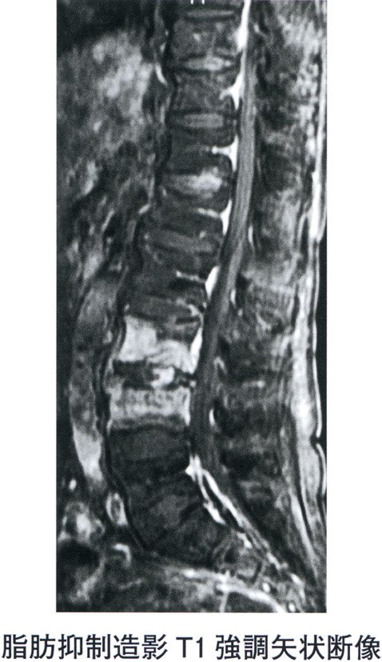
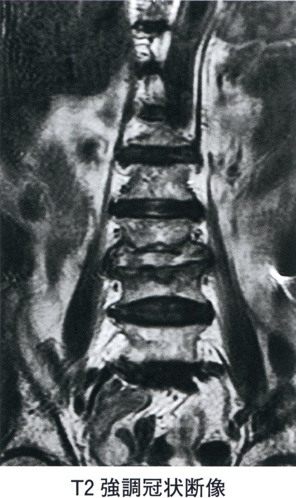
ａ 髄膜炎
ｂ 脊髄炎
ｃ 腎盂腎炎
ｄ 腸腰筋膿瘍
ｅ 化膿性脊椎炎
✅
ｅ 化膿性脊椎炎
発熱+腰背部痛+グラム陽性球菌（後のQ414/415でS.aureus）→化膿性脊椎炎（血行性）。
❤️ 化膿性脊椎炎——「発熱＋安静時にも続く腰背部痛」で疑う
化膿性脊椎炎は椎体と椎間板の細菌感染で、成人では血行性感染が大多数を占める。椎体の終板近傍には栄養動脈の終末枝が密に分布し血流が遅いため、菌血症の際に細菌が沈着しやすい——そこから椎間板を越えて隣接椎体へ広がるのが感染に特徴的な広がり方である。好発部位は腰椎（約50%）＞胸椎＞頸椎。危険因子は糖尿病・透析・免疫抑制・静注薬物使用・血管内カテーテル・高齢・悪性腫瘍・肝硬変。本例は糖尿病でHbA1c 8.5%という典型的な背景を持つ。
| 化膿性脊椎炎 | 結核性脊椎炎〈Pott病〉 | 転移性脊椎腫瘍 | |
|---|---|---|---|
| 経過 | 数日〜数週（亜急性） | 数か月（緩徐） | 数週〜数か月 |
| 発熱 | あり（ただし半数弱は微熱以下） | 微熱・盗汗 | ふつう無い |
| 椎間板 | 早期から破壊される | 比較的保たれる | 保たれる（腫瘍は椎間板を越えにくい） |
| 膿瘍 | 硬膜外膿瘍・腸腰筋膿瘍 | 流注膿瘍（冷膿瘍） | なし |
| 起炎菌 | 黄色ブドウ球菌が最多 | 結核菌 | — |
| 後彎変形 | 軽度 | 亀背（高度） | 圧迫骨折 |
血液検査ではCRPと赤沈が上昇するが、白血球は正常のことも多い——本例は13,300と上昇し左方移動を伴っており、細菌感染を強く支持する。画像はMRIが第一選択（感度・特異度とも90%以上）で、単純エックス線とCTは早期には陰性である。
□ 選択肢の検討
| 選択肢 | 解説 |
|---|---|
| ａ 髄膜炎 | 否定的である。細菌性髄膜炎の三徴は発熱・項部硬直・意識障害で、これに頭痛を加えた4つのうち2つ以上を95%が満たす——本例は意識清明で頭痛の訴えがなく、神経学的所見に異常を認めない。髄膜炎であれば主訴は腰痛ではなく頭痛になり、Kernig徴候・Brudzinski徴候・jolt accentuation（頭を左右に振ると頭痛が増悪）を探しにいく。なお高齢者や糖尿病患者では項部硬直が出にくいため油断はできないが、本例は髄膜刺激症候を示す記載が一つも無いうえに腰部正中に叩打痛という局在所見があり、痛みの首座が脊椎そのものにあることを示している。 |
| ｂ 脊髄炎 | 否定的である。脊髄炎〈myelitis〉は脊髄実質の炎症なので、障害レベル以下に①運動麻痺（対麻痺・四肢麻痺） ②感覚障害（レベルを持つ感覚低下・異常感覚） ③膀胱直腸障害が出るのが本体である——本例は「神経学的所見に異常を認めない」と明記されており、この時点で脊髄実質の障害は否定される。むしろ重要なのは、化膿性脊椎炎が進行して硬膜外膿瘍を作ると、まさにこの脊髄圧迫症状が出現するということである——つまり本問の「神経学的所見に異常なし」は脊髄炎の否定であると同時に、まだ硬膜外膿瘍による脊髄圧迫には至っていないという時間的情報でもある。経過中に下肢の脱力や膀胱直腸障害が出れば緊急手術の適応になる。 |
| ｃ 腎盂腎炎 | 尿所見が決定的に否定する。急性腎盂腎炎の診断には膿尿（尿沈渣の白血球）が事実上必須で、これを欠く腎盂腎炎は完全尿路閉塞など特殊な状況に限られる——本例の尿沈渣は「白血球を認めない」と明記されている。さらに叩打痛の部位が違う——腎盂腎炎の叩打痛は肋骨脊柱角〈CVA〉＝背中の外側に出るのに対し、本例は「腰部正中」すなわち棘突起そのものである。叩打痛が正中か側方かで、椎体の病変か腎の病変かを分ける——ベッドサイドで最も安価に鑑別を進められる所見であり、必ず自分の手で確かめること。 |
| ｄ 腸腰筋膿瘍 | 鑑別には挙がるが本例では否定的。腸腰筋膿瘍は①股関節を屈曲位に保つ（腸腰筋は股関節屈筋なので、伸展すると痛む） ②psoas sign陽性（股関節の他動的伸展で疼痛） ③跛行を伴い、痛みは鼠径部・大腿前面へ放散する——本例にはこれらの記載が無く、痛みは腰部正中の鈍痛である。ただし腸腰筋膿瘍と化膿性脊椎炎は連続する病態で、椎体の感染が前方の腸腰筋へ波及して膿瘍を形成することは日常的に起こる。また本例では腹部CTに異常を認めないとあり、腸腰筋の腫大があればここで指摘されるはずである——「腹部CT正常＋腰部MRI撮影」という検査の順番自体が、答えを椎体へ誘導している。 |
| ◯ ｅ 化膿性脊椎炎 | これが正解。化膿性脊椎炎〈pyogenic spondylitis〉は椎体と椎間板が血行性に感染する病態で、本例には典型的な要素が揃っている——①糖尿病（HbA1c 8.5%と血糖コントロール不良＝好中球機能低下） ②数日〜数週の亜急性の発熱 ③安静時にも続く腰痛（機械的腰痛は安静で軽快するのでここが分岐点） ④腰部正中の叩打痛 ⑤白血球13,300と左方移動・CRP上昇 ⑥腰部MRIを撮影している。単純エックス線は発症2〜3週間まで正常で、椎体終板のびらんや椎間腔の狭小化が見えるのは遅れる——だから疑ったらMRIで、T1低信号・T2高信号・脂肪抑制像で椎間板と隣接する2椎体が連続して染まるのが特徴的である（腫瘍は椎間板を越えにくいのに対し、感染は椎間板を挟んだ2椎体を巻き込む）。 |
🔍 診断の確定と治療——「培養を採ってから抗菌薬」が鉄則
①起炎菌の同定が治療期間を決める——化膿性脊椎炎の治療は6週間以上の抗菌薬投与が基本で、菌が分からないまま広域抗菌薬を続けることは許されない。血液培養は2セット以上を抗菌薬投与前に採取する——化膿性脊椎炎では約半数で血液培養が陽性になる。血液培養が陰性なら、CTガイド下の椎体生検を行う。神経症状も敗血症も無い患者では、培養結果が出るまで抗菌薬を待つ——先に投与すると菌が捕まらず、その後の数か月を手探りで治療することになる。②起炎菌の分布：黄色ブドウ球菌が約50%と圧倒的に多い。次いで連鎖球菌・腸内細菌科（大腸菌など、とくに尿路感染から）・コアグラーゼ陰性ブドウ球菌（術後・インプラント関連）。静注薬物使用者では緑膿菌、ブルセラ流行地ではBrucellaも考える。
③必ず感染性心内膜炎〈IE〉を探す——化膿性脊椎炎の約1/3にIEが合併するという報告があり、とくに黄色ブドウ球菌・連鎖球菌・腸球菌が検出された場合や、心雑音・弁膜症の既往がある場合は心エコーが必須である。椎体炎は「原発巣」ではなく「菌血症の結果としての転移巣」かもしれない——この視点が本問の連問2問目の答えに直結する。
④手術の適応：
| 手術を考える状況 | 理由 |
|---|---|
| 硬膜外膿瘍による脊髄・馬尾の圧迫（麻痺・膀胱直腸障害） | 緊急。除圧が遅れると麻痺が固定する |
| 抗菌薬に反応しない（発熱・CRPが下がらない） | ドレナージが必要な膿瘍の存在 |
| 椎体破壊による脊柱不安定性・高度後彎 | 固定術 |
| 診断がつかない | 開放生検 |
🎯 国試ポイント
① 発熱＋安静時にも続く腰背部痛＋炎症反応上昇＝化膿性脊椎炎を疑う。糖尿病・透析・免疫抑制が危険因子。② 叩打痛が「正中（棘突起）」なら椎体、「肋骨脊柱角」なら腎。本例は正中で腎盂腎炎を否定できる。
③ 腎盂腎炎の診断には膿尿が事実上必須。尿沈渣に白血球を認めなければ強く否定される。
④ 単純エックス線は発症2〜3週間まで正常。疑ったらMRI（T1低信号・T2高信号・造影で椎間板と隣接2椎体が染まる）。
⑤ 感染は椎間板を越えて2椎体を巻き込むが、腫瘍は椎間板を越えにくい——画像鑑別の最重要点。
⑥ 起炎菌は黄色ブドウ球菌が最多（約50%）。血液培養2セットを抗菌薬投与前に採り、陰性ならCTガイド下生検。
⑦ 神経症状も敗血症も無ければ、培養結果が出るまで抗菌薬を待つ。先に投与すると菌が捕まらない。
⑧ 治療は6週間以上の抗菌薬。硬膜外膿瘍による麻痺・膀胱直腸障害は緊急手術。
⑨ 結核性脊椎炎〈Pott病〉は椎間板が保たれ、流注膿瘍と亀背をつくる——経過が数か月と緩徐。
Q.414(109B-54)正答率 44%
連問 2/381 歳の男性。発熱を主訴に来院した。
現病歴：5 日前から37℃台の発熱が出現し、3 日前から腰痛が出現した。腰痛は鈍痛で、運動時と安静時ともに自覚
していた。自宅で様子をみていたが改善しないため受診した。
既往歴：61 歳から糖尿病のため内服加療中。
家族歴：父親が胃癌。母親が大腸癌。
生活歴：妻との2 人暮らし。海外渡航歴はない。
現 症：意識は清明。身長165cm、体重57kg。体温38.2℃。脈拍96/ 分、整。血圧138/80mmHg。呼吸数22/ 分。
SpO2 98％（room air）。眼瞼結膜と眼球結膜とに異常を認めない。頸部リンパ節を触知しない。心音と呼吸音とに
異常を認めない。腰部正中に叩打痛を認める。足背動脈の触知は良好で左右差を認めない。下腿に浮腫を認めない。
神経学的所見に異常を認めない。
検査所見：尿所見：蛋白（－）、糖（－）、ケトン体1 ＋、潜血（－）、沈渣に白血球を認めない。血液所見：赤血
球476 万、Hb 12.9g/dL、Ht 40％、白血球13,300（桿状核好中球32％、分葉核好中球54％、好酸球1％、好
塩基球1％、単球2％、リンパ球10％）、血小板43 万。血液生化学所見：総蛋白7.5g/dL、アルブミン3.8g/dL、
総ビリルビン0.9mg/dL、直接ビリルビン0.3mg/dL、AST 30IU/L、ALT 28IU/L、LD 170IU/L（基準176 ～
353）、ALP 402IU/L（基準115 ～359）、γ-GTP 49IU/L（基準8 ～50）、アミラーゼ121IU/L（基準37 ～160）、
CK 58IU/L（基準30 ～140）、尿素窒素19mg/dL、クレアチニン1.0mg/dL、尿酸7.1mg/dL、血糖148mg/dL、
HbA1c 8.5％（基準4.6 ～6.2）、総コレステロール199mg/dL、トリグリセリド180mg/dL、Na 130mEq/L、K
4.4mEq/L、Cl 98mEq/L。CRP 3.2mg/dL。動脈血ガス分析（room air）：pH 7.37、PaCO2 36Torr、PaO2 98Torr、
HCO3 － 20mEq/L。12 誘導心電図で異常を認めない。胸部エックス線写真に異常を認めない。腹部CT に異常を認
めない。腰部MRI（A，B）を示す。
4 時間後、検査室から血液検体でGram 陽性球菌が
検出されたとの報告があった。この時点で追加すべき検査はどれか。
現病歴：5 日前から37℃台の発熱が出現し、3 日前から腰痛が出現した。腰痛は鈍痛で、運動時と安静時ともに自覚
していた。自宅で様子をみていたが改善しないため受診した。
既往歴：61 歳から糖尿病のため内服加療中。
家族歴：父親が胃癌。母親が大腸癌。
生活歴：妻との2 人暮らし。海外渡航歴はない。
現 症：意識は清明。身長165cm、体重57kg。体温38.2℃。脈拍96/ 分、整。血圧138/80mmHg。呼吸数22/ 分。
SpO2 98％（room air）。眼瞼結膜と眼球結膜とに異常を認めない。頸部リンパ節を触知しない。心音と呼吸音とに
異常を認めない。腰部正中に叩打痛を認める。足背動脈の触知は良好で左右差を認めない。下腿に浮腫を認めない。
神経学的所見に異常を認めない。
検査所見：尿所見：蛋白（－）、糖（－）、ケトン体1 ＋、潜血（－）、沈渣に白血球を認めない。血液所見：赤血
球476 万、Hb 12.9g/dL、Ht 40％、白血球13,300（桿状核好中球32％、分葉核好中球54％、好酸球1％、好
塩基球1％、単球2％、リンパ球10％）、血小板43 万。血液生化学所見：総蛋白7.5g/dL、アルブミン3.8g/dL、
総ビリルビン0.9mg/dL、直接ビリルビン0.3mg/dL、AST 30IU/L、ALT 28IU/L、LD 170IU/L（基準176 ～
353）、ALP 402IU/L（基準115 ～359）、γ-GTP 49IU/L（基準8 ～50）、アミラーゼ121IU/L（基準37 ～160）、
CK 58IU/L（基準30 ～140）、尿素窒素19mg/dL、クレアチニン1.0mg/dL、尿酸7.1mg/dL、血糖148mg/dL、
HbA1c 8.5％（基準4.6 ～6.2）、総コレステロール199mg/dL、トリグリセリド180mg/dL、Na 130mEq/L、K
4.4mEq/L、Cl 98mEq/L。CRP 3.2mg/dL。動脈血ガス分析（room air）：pH 7.37、PaCO2 36Torr、PaO2 98Torr、
HCO3 － 20mEq/L。12 誘導心電図で異常を認めない。胸部エックス線写真に異常を認めない。腹部CT に異常を認
めない。腰部MRI（A，B）を示す。
4 時間後、検査室から血液検体でGram 陽性球菌が
検出されたとの報告があった。この時点で追加すべき検査はどれか。
ａ 血管造影
ｂ 膀胱鏡検査
ｃ 頭部造影CT
ｄ 心エコー検査
ｅ 脳脊髄液検査
✅
ｄ 心エコー検査
S.aureus（グラム陽性球菌）菌血症確定→IE合併の可能性→心エコーで疣贅を確認。
❤️ グラム陽性球菌の菌血症＝まず心臓を見る
血液培養が陽性になったとき、次に考えるべきは「どこから入って、どこへ飛んだか」の2点である。とくに黄色ブドウ球菌〈Staphylococcus aureus〉の菌血症は、他の菌の菌血症とはまったく別物として扱う——付着因子と毒素を多数持ち、正常な弁にも取り付いて破壊する能力があるためである。| 血液培養から検出された菌 | 典型的な入り口 | 探すべき転移巣 |
|---|---|---|
| 黄色ブドウ球菌 | 皮膚・カテーテル・創部 | 心内膜・脊椎・関節・腸腰筋・腎（膿瘍） |
| 緑色連鎖球菌 | 口腔・歯科処置 | 心内膜（基礎心疾患のある弁） |
| 腸球菌 | 尿路・胆道・消化管 | 心内膜（高齢者） |
| Streptococcus gallolyticus〈bovis〉 | 消化管 | 心内膜＋大腸癌の検索が必須 |
| 大腸菌などグラム陰性桿菌 | 尿路・胆道・消化管 | 心内膜は稀（HACEK群を除く） |
①感染源の同定と除去——カテーテルは抜去、膿瘍はドレナージ
②フォローアップ血液培養——2〜4日後に再検し、陰性化を確認する（持続菌血症は転移巣か感染源が残っている証拠）
③心エコー——IEの除外。本問の答え
④適切な静注抗菌薬を最低14日間——合併症があれば4〜6週間
⑤感染症科へのコンサルト——死亡率を下げることが示されている
「熱が下がったから経口へ切り替えて退院」は黄色ブドウ球菌菌血症では通用しない——数週間後に椎体炎や心内膜炎として跳ね返ってくる。
□ 選択肢の検討
| 選択肢 | 解説 |
|---|---|
| ａ 血管造影 | 適応がない。血管造影は動脈瘤・解離・血管奇形・活動性出血に対する塞栓術といった血管の形態異常や出血源を目的に行う侵襲的検査である——本例は出血の徴候がなく、足背動脈の触知も良好で左右差を認めない。感染性の血管病変として感染性動脈瘤〈mycotic aneurysm〉が黄色ブドウ球菌菌血症の合併症になり得るが、これは拍動性腫瘤・限局した疼痛・造影CTでの嚢状動脈瘤といった手がかりが出てから探すもので、菌血症判明直後の全例に行う検査ではない。造影剤腎症のリスクもあり、この時点で最も収量の高い検査ではない。 |
| ｂ 膀胱鏡検査 | 適応がない。膀胱鏡は肉眼的血尿・膀胱腫瘍の疑い・排尿障害の精査で行う検査である——本例の尿所見は蛋白（－）・潜血（－）・沈渣に白血球を認めないと完全に正常で、尿路に病変を示唆する所見が一つも無い。仮に尿路感染から菌血症を来した経路を疑うとしても、その場合の起炎菌は大腸菌などのグラム陰性桿菌が主体であり、検出されたグラム陽性球菌とは形態が合わない。グラム染色の形態から逆算して感染源を絞る——これができれば無駄な侵襲的検査を避けられる。 |
| ｃ 頭部造影CT | 現時点では適応がない。頭部造影CTは意識障害・巣症状・けいれん・髄膜刺激症候があって考える検査だが、本例は意識清明で神経学的所見に異常を認めない。ただし黄色ブドウ球菌菌血症では脳膿瘍・化膿性髄膜炎・敗血症性脳塞栓が起こり得るので、経過中に頭痛・意識障害・巣症状が出たら躊躇なく画像を撮る。また感染性心内膜炎と診断がつけば、無症候でも頭部画像で塞栓を探すことが推奨される場面がある（手術時期の判断や感染性脳動脈瘤の検出のため）——つまり順序として「まず心臓を見る」のが先で、頭部はその後である。 |
| ◯ ｄ 心エコー検査 | これが正解。黄色ブドウ球菌をはじめとするグラム陽性球菌の菌血症を見たら、まず感染性心内膜炎〈IE〉を除外する——これは国試のみならず実臨床の鉄則である。黄色ブドウ球菌菌血症の約10〜25%にIEが合併するとされ、見逃せば弁破壊による急性心不全・塞栓症・感染性動脈瘤で致命的になる。本例には①グラム陽性球菌の菌血症 ②化膿性脊椎炎という血行性の転移巣 ③糖尿病という易感染性が揃っており、「椎体炎は原発巣ではなく、心臓の疣贅から飛んだ結果かもしれない」と考えるべき状況である。修正Duke基準でも、血液培養陽性（大基準）＋心エコーでの疣贅（大基準）で診断が確定する——つまり心エコーは残り半分の大基準を取りにいく検査である。まず経胸壁心エコー〈TTE〉を行い、陰性でも疑いが強ければ経食道心エコー〈TEE〉へ進む。 |
| ｅ 脳脊髄液検査 | 適応がない。腰椎穿刺は髄膜炎・くも膜下出血・脱髄疾患を疑うときに行うが、本例は髄膜刺激症候がなく意識も清明である。さらに本例は化膿性脊椎炎であり、腰椎穿刺には固有の危険がある——感染巣の近傍を穿刺すると、細菌をくも膜下腔へ持ち込んで医原性の髄膜炎を起こしうるため、穿刺部位の感染は腰椎穿刺の相対禁忌である。また硬膜外膿瘍が存在する場合、穿刺針が膿瘍を貫くと同様の事態を招く。「痛い場所だから刺す」のではなく、「痛い場所だからこそ刺さない」——本問はこの逆説を問うている。 |
🔍 修正Duke基準——IEをどう診断するか
感染性心内膜炎の診断は修正Duke基準で行う。大基準2つ、または大基準1つ＋小基準3つ、または小基準5つで「確診」となる。【大基準】
①血液培養陽性——IEに典型的な菌（緑色連鎖球菌・Streptococcus gallolyticus・HACEK群・黄色ブドウ球菌・市中感染型腸球菌）が2セット以上から検出、または12時間以上あけた2回以上の培養が持続的に陽性
②心内膜が侵されている証拠——心エコーでの疣贅・膿瘍・人工弁の新たな部分的裂開、または新規の弁逆流性雑音
【小基準】——①素因（basic heart disease・静注薬物使用） ②38℃以上の発熱 ③血管現象（動脈塞栓・敗血症性肺塞栓・感染性動脈瘤・頭蓋内出血・眼球結膜出血・Janeway病変） ④免疫学的現象（糸球体腎炎・Osler結節・Roth斑・リウマトイド因子陽性） ⑤大基準を満たさない微生物学的証拠
| 血管現象（塞栓＝機械的） | 免疫学的現象（免疫複合体） |
|---|---|
| Janeway病変（手掌・足底の無痛性紅斑） | Osler結節（指趾腹側の有痛性結節） |
| 脾梗塞・腎梗塞・脳塞栓 | Roth斑（白斑を伴う網膜出血） |
| 感染性動脈瘤・爪下線状出血 | 糸球体腎炎（血尿・蛋白尿） |
血液培養は抗菌薬投与前に、時間と部位を変えて3セット採る——IEの菌血症は持続性なのでいつ採っても陽性になりやすいが、「複数セットすべてが同じ菌で陽性」であること自体が大基準の要件であり、コンタミネーションとの区別に不可欠である。なお培養陰性心内膜炎（先行抗菌薬投与・Coxiella burnetii・Bartonella・Tropheryma whipplei等）が5〜10%あり、血清学的検査やPCRを追加する。
IEを疑ったら必ず問診で拾う項目——①歯科処置・口腔内の状態（齲歯・歯周病） ②静注薬物の使用 ③人工弁・ペースメーカ・中心静脈カテーテル・血液透析シャント ④先天性心疾患や弁膜症の指摘 ⑤IEの既往 ⑥直近の抗菌薬内服（培養陰性化の原因になる）。身体所見では、聴診に加えて手指・足底・眼瞼結膜・眼底・脾を必ず診る——Osler結節・Janeway病変・爪下線状出血・眼球結膜の点状出血・Roth斑・脾腫はいずれも小基準に直結し、ベッドサイドで数分あれば取れる。「発熱の原因が分からない患者では、靴下を脱がせて足底まで診る」——これが古典的な教えである。
塞栓症はIEの20〜50%に起こり、その約半数は診断前に生じている——脳（最多）・脾・腎・腸間膜・四肢動脈へ飛び、右心系のIEでは肺（敗血症性肺塞栓＝多発する結節と空洞）へ飛ぶ。適切な抗菌薬を開始すると塞栓のリスクは最初の2週間で急速に低下する——だから診断と治療開始を急ぐこと自体が塞栓の予防になる。
🎯 国試ポイント
① グラム陽性球菌の菌血症を見たら、まず感染性心内膜炎を除外する——本問の骨格。② 黄色ブドウ球菌菌血症の10〜25%にIEが合併。化膿性脊椎炎は「原発巣」ではなく心臓からの転移巣かもしれない。
③ まず経胸壁心エコー〈TTE〉、疑いが強ければ経食道心エコー〈TEE〉へ進む。
④ 修正Duke基準：大2／大1＋小3／小5で確診。大基準は血液培養陽性と心内膜の証拠（疣贅・膿瘍・人工弁裂開・新規逆流性雑音）。
⑤ Janeway病変は無痛（手掌・足底）、Osler結節は有痛（指趾の腹側）。前者は塞栓、後者は免疫複合体。
⑥ 黄色ブドウ球菌菌血症の管理バンドル＝感染源除去・フォロー血液培養・心エコー・静注抗菌薬14日以上・感染症科コンサルト。
⑦ 穿刺部位に感染があれば腰椎穿刺は相対禁忌——医原性髄膜炎を起こす。化膿性脊椎炎で腰椎穿刺をしない理由。
⑧ Streptococcus gallolyticus〈bovis〉のIEでは大腸内視鏡が必須——大腸癌の合併を探す。
Q.415(109B-55)正答率 85%
連問 3/381 歳の男性。発熱を主訴に来院した。
現病歴：5 日前から37℃台の発熱が出現し、3 日前から腰痛が出現した。腰痛は鈍痛で、運動時と安静時ともに自覚
していた。自宅で様子をみていたが改善しないため受診した。
既往歴：61 歳から糖尿病のため内服加療中。
家族歴：父親が胃癌。母親が大腸癌。
生活歴：妻との2 人暮らし。海外渡航歴はない。
現 症：意識は清明。身長165cm、体重57kg。体温38.2℃。脈拍96/ 分、整。血圧138/80mmHg。呼吸数22/ 分。
SpO2 98％（room air）。眼瞼結膜と眼球結膜とに異常を認めない。頸部リンパ節を触知しない。心音と呼吸音とに
異常を認めない。腰部正中に叩打痛を認める。足背動脈の触知は良好で左右差を認めない。下腿に浮腫を認めない。
神経学的所見に異常を認めない。
検査所見：尿所見：蛋白（－）、糖（－）、ケトン体1 ＋、潜血（－）、沈渣に白血球を認めない。血液所見：赤血
球476 万、Hb 12.9g/dL、Ht 40％、白血球13,300（桿状核好中球32％、分葉核好中球54％、好酸球1％、好
塩基球1％、単球2％、リンパ球10％）、血小板43 万。血液生化学所見：総蛋白7.5g/dL、アルブミン3.8g/dL、
総ビリルビン0.9mg/dL、直接ビリルビン0.3mg/dL、AST 30IU/L、ALT 28IU/L、LD 170IU/L（基準176 ～
353）、ALP 402IU/L（基準115 ～359）、γ-GTP 49IU/L（基準8 ～50）、アミラーゼ121IU/L（基準37 ～160）、
CK 58IU/L（基準30 ～140）、尿素窒素19mg/dL、クレアチニン1.0mg/dL、尿酸7.1mg/dL、血糖148mg/dL、
HbA1c 8.5％（基準4.6 ～6.2）、総コレステロール199mg/dL、トリグリセリド180mg/dL、Na 130mEq/L、K
4.4mEq/L、Cl 98mEq/L。CRP 3.2mg/dL。動脈血ガス分析（room air）：pH 7.37、PaCO2 36Torr、PaO2 98Torr、
HCO3 － 20mEq/L。12 誘導心電図で異常を認めない。胸部エックス線写真に異常を認めない。腹部CT に異常を認
めない。腰部MRI（A，B）を示す。
原因菌として最も考えられるのはどれか。
現病歴：5 日前から37℃台の発熱が出現し、3 日前から腰痛が出現した。腰痛は鈍痛で、運動時と安静時ともに自覚
していた。自宅で様子をみていたが改善しないため受診した。
既往歴：61 歳から糖尿病のため内服加療中。
家族歴：父親が胃癌。母親が大腸癌。
生活歴：妻との2 人暮らし。海外渡航歴はない。
現 症：意識は清明。身長165cm、体重57kg。体温38.2℃。脈拍96/ 分、整。血圧138/80mmHg。呼吸数22/ 分。
SpO2 98％（room air）。眼瞼結膜と眼球結膜とに異常を認めない。頸部リンパ節を触知しない。心音と呼吸音とに
異常を認めない。腰部正中に叩打痛を認める。足背動脈の触知は良好で左右差を認めない。下腿に浮腫を認めない。
神経学的所見に異常を認めない。
検査所見：尿所見：蛋白（－）、糖（－）、ケトン体1 ＋、潜血（－）、沈渣に白血球を認めない。血液所見：赤血
球476 万、Hb 12.9g/dL、Ht 40％、白血球13,300（桿状核好中球32％、分葉核好中球54％、好酸球1％、好
塩基球1％、単球2％、リンパ球10％）、血小板43 万。血液生化学所見：総蛋白7.5g/dL、アルブミン3.8g/dL、
総ビリルビン0.9mg/dL、直接ビリルビン0.3mg/dL、AST 30IU/L、ALT 28IU/L、LD 170IU/L（基準176 ～
353）、ALP 402IU/L（基準115 ～359）、γ-GTP 49IU/L（基準8 ～50）、アミラーゼ121IU/L（基準37 ～160）、
CK 58IU/L（基準30 ～140）、尿素窒素19mg/dL、クレアチニン1.0mg/dL、尿酸7.1mg/dL、血糖148mg/dL、
HbA1c 8.5％（基準4.6 ～6.2）、総コレステロール199mg/dL、トリグリセリド180mg/dL、Na 130mEq/L、K
4.4mEq/L、Cl 98mEq/L。CRP 3.2mg/dL。動脈血ガス分析（room air）：pH 7.37、PaCO2 36Torr、PaO2 98Torr、
HCO3 － 20mEq/L。12 誘導心電図で異常を認めない。胸部エックス線写真に異常を認めない。腹部CT に異常を認
めない。腰部MRI（A，B）を示す。
原因菌として最も考えられるのはどれか。
ａ 腸球菌
ｂ 溶連菌
ｃ 髄膜炎菌
ｄ 肺炎球菌
ｅ 黄色ブドウ球菌
✅
ｅ 黄色ブドウ球菌
化膿性脊椎炎の原因菌：S.aureus（黄色ブドウ球菌）が最多（血行性感染の主因菌）。
❤️ グラム染色の形態から菌を絞る
血液培養の第一報は「グラム染色の色と形」だけであることが多い。この時点で起炎菌を数種類まで絞り、経験的治療を決められるかが臨床能力を分ける。| グラム陽性（紫） | グラム陰性（赤） | |
|---|---|---|
| 球菌 | ブドウ球菌（房状）／連鎖球菌・腸球菌（連鎖状）／肺炎球菌（双球・ランセット型） | 髄膜炎菌・淋菌（双球菌）／Moraxella |
| 桿菌 | Listeria／Corynebacterium／Bacillus／Clostridium（嫌気性） | 大腸菌・Klebsiella・緑膿菌・インフルエンザ桿菌 |
①房状（ブドウ状）→ ブドウ球菌。カタラーゼ陽性。さらにコアグラーゼ陽性＝黄色ブドウ球菌／陰性＝表皮ブドウ球菌など（CNS）
②連鎖状 → 連鎖球菌・腸球菌。カタラーゼ陰性。溶血性で分類（β溶血＝A群・B群／α溶血＝肺炎球菌・緑色連鎖球菌／γ（非溶血）＝腸球菌・S. gallolyticus）
カタラーゼ試験は「過酸化水素をかけて泡が出るか」という数秒の検査で、ブドウ球菌と連鎖球菌を分ける最初の分岐点である。
黄色ブドウ球菌が特別扱いされる理由——①正常な弁・骨・関節に取り付いて破壊できる（他の多くの菌は既存の傷害部位を必要とする） ②毒素（TSST-1・表皮剥脱毒素・PVL）で全身症状を起こす ③バイオフィルムを作り人工物に定着する ④MRSAという耐性の問題を抱える。結果として菌血症の死亡率は20〜30%に達し、「血液培養から黄色ブドウ球菌が出たらコンタミネーションではなく必ず本物」として扱う。
□ 選択肢の検討
| 選択肢 | 解説 |
|---|---|
| ａ 腸球菌 | 頻度が低い。腸球菌〈Enterococcus〉は連鎖状に並ぶグラム陽性球菌で、たしかにグラム染色の記載とは矛盾しない——しかし入り口が違う。腸球菌は消化管・尿路・胆道の常在菌で、高齢男性の尿路操作後・泌尿器科的処置後・腹腔内感染から菌血症を起こす——本例は尿所見が完全に正常で尿路感染を示唆する所見が無い。臨床的にも重要なのは、腸球菌は感染性心内膜炎の起炎菌としては3番目に多い点と、アミノグリコシドとの併用が必要（細胞壁への透過性が低いため単剤では殺菌できない）点、そしてセファロスポリンが無効という3つである。脊椎炎の起炎菌としては黄色ブドウ球菌に遠く及ばない。 |
| ｂ 溶連菌 | 最多ではない。溶血性連鎖球菌は化膿性脊椎炎の起炎菌になり2番目に多い群を形成するが、黄色ブドウ球菌の約半数という頻度には届かない。またA群β溶血性連鎖球菌〈Streptococcus pyogenes〉の侵襲性感染は壊死性筋膜炎・劇症型溶連菌感染症のように急速で劇的な経過をとることが多く、本例の「5日間かけて37℃台の発熱と腰痛が進行」という亜急性の経過とは合わない。なお緑色連鎖球菌〈viridans group〉は歯科処置後の心内膜炎の代表的起炎菌だが、本例には歯科治療の記載が無い——病歴に無い危険因子を勝手に補ってはいけない。 |
| ｃ 髄膜炎菌 | 形態が合わない。髄膜炎菌〈Neisseria meningitidis〉はグラム陰性双球菌であり、「グラム陽性球菌」という報告と正面から矛盾する。臨床像も異なる——髄膜炎菌感染症は数時間〜1日で進行する劇症の経過をとり、発熱・頭痛・項部硬直・意識障害に加え、体幹四肢に急速に広がる点状出血・紫斑（purpura fulminans）が出る。副腎出血によるショック＝Waterhouse-Friderichsen症候群を来せば致死的である。本例は意識清明で髄膜刺激症候も皮疹も無いため、臨床像からも完全に否定される。なお補体C5〜C9の欠損者・脾摘後では髄膜炎菌感染のリスクが著明に高い。 |
| ｄ 肺炎球菌 | 頻度が低い。肺炎球菌〈Streptococcus pneumoniae〉はグラム陽性の双球菌（ランセット型・莢膜を持つ）で、グラム染色の記載とは一応合う——しかし肺炎球菌が引き起こす侵襲性感染は肺炎・髄膜炎・中耳炎・副鼻腔炎が主体で、脊椎炎の起炎菌としては稀である。本例は呼吸音に異常を認めず、胸部エックス線写真にも異常を認めないため肺炎は否定的で、入り口となる病巣が存在しない。なお脾摘後・鎌状赤血球症・多発性骨髄腫・HIVなど莢膜を持つ菌に弱い状態では肺炎球菌の侵襲性感染が増えるため、こうした背景があれば話は別になる——本例にはその記載が無い。 |
| ◯ ｅ 黄色ブドウ球菌 | これが正解。黄色ブドウ球菌〈Staphylococcus aureus〉は化膿性脊椎炎の起炎菌の約50%を占め、単独で最多である。グラム染色ではブドウの房状に集簇するグラム陽性球菌として見え、カタラーゼ陽性（連鎖球菌と区別）・コアグラーゼ陽性（表皮ブドウ球菌などCNSと区別）・マンニトール分解陽性で同定される。本例で黄色ブドウ球菌を強く支持する所見は①糖尿病（皮膚の細菌叢が増え、好中球の遊走・貪食能が低下する） ②血行性に椎体という「離れた場所」へ転移していること ③白血球13,300と左方移動を伴う明確な化膿性の炎症反応である。黄色ブドウ球菌は正常な組織にも取り付いて破壊できる数少ない菌で、基礎心疾患のない弁にも心内膜炎を起こす——だから前問で心エコーが必要になった。 |
🔍 黄色ブドウ球菌が起こす疾患の全体像とMRSA
①感染症（菌が組織で増える）：皮膚軟部組織感染（癤・癰・蜂窩織炎・膿痂疹）・肺炎（インフルエンザ後の二次性肺炎・人工呼吸器関連肺炎）・化膿性関節炎・骨髄炎/椎体炎・感染性心内膜炎・カテーテル関連血流感染・敗血症。②毒素性疾患（菌が離れた場所にいても症状が出る）：
| 毒素 | 疾患 | 特徴 |
|---|---|---|
| TSST-1（スーパー抗原） | トキシックショック症候群〈TSS〉 | 発熱・低血圧・びまん性紅斑・回復期の落屑・多臓器不全。タンポン・術後創部 |
| 表皮剥脱毒素 | ブドウ球菌性熱傷様皮膚症候群〈SSSS〉 | 乳幼児。Nikolsky現象陽性、粘膜は侵されない |
| エンテロトキシン | 毒素型食中毒 | 摂食後1〜6時間で嘔吐。耐熱性なので加熱しても防げない |
| PVL | 壊死性肺炎・重症皮膚感染 | 市中感染型MRSAに多い |
感受性のあるMSSAには、バンコマイシンよりもセファゾリンなどβラクタムのほうが有効である——「広域＝強い」ではない。菌が判明したら狭域へ戻す（de-escalation）のが原則。
⑥コアグラーゼ陰性ブドウ球菌〈CNS〉との区別が実務では重要である——表皮ブドウ球菌などのCNSは皮膚常在菌なので、1セットだけの陽性はコンタミネーションを強く疑う。これに対し黄色ブドウ球菌は1セットでも陽性なら本物として扱い、直ちに感染源検索を始める。ただしCNSも人工弁・ペースメーカ・人工関節・中心静脈カテーテルといった人工物があれば真の起炎菌になる——バイオフィルムを形成して抗菌薬から身を守るため、人工物の抜去なしには治らないことが多い。Staphylococcus lugdunensisだけは例外的にCNSでありながら黄色ブドウ球菌なみに侵襲性が高く、自己弁の心内膜炎を破壊的に起こすので、報告されたら本物として扱う。
⑦本例の連問の流れを一本の線でつなぐ——糖尿病（易感染性）→ どこかで菌血症 → 椎体という血流の遅い場所へ沈着して化膿性脊椎炎 → 血液培養でグラム陽性球菌 → 心エコーでIEの検索 → 起炎菌は黄色ブドウ球菌。「1つの菌が、複数の臓器に別々の顔で現れている」という読み方ができれば、連問3問はすべて同じ理解から解ける。
🎯 国試ポイント
① 化膿性脊椎炎の起炎菌は黄色ブドウ球菌が約50%で最多。連鎖球菌・グラム陰性桿菌が続く。② 房状のグラム陽性球菌＝ブドウ球菌、連鎖状＝連鎖球菌・腸球菌。分ける最初の検査はカタラーゼ。
③ コアグラーゼ陽性＝黄色ブドウ球菌／陰性＝表皮ブドウ球菌など。
④ 髄膜炎菌はグラム陰性双球菌——「グラム陽性球菌」という報告と矛盾するので即座に除外できる。
⑤ 黄色ブドウ球菌は正常な弁・骨にも取り付いて破壊できる——だから菌血症を見たら必ずIEと転移巣を探す。
⑥ ブドウ球菌の毒素性疾患＝TSST-1（TSS）・表皮剥脱毒素（SSSS）・エンテロトキシン（1〜6時間で嘔吐する耐熱性の食中毒）。
⑦ MRSAはmecA→PBP2'ですべてのβラクタムが無効。バンコマイシン・リネゾリド・ダプトマイシンを使う。
⑧ ダプトマイシンは肺サーファクタントで失活し肺炎には使えない。MSSAにはβラクタムのほうが有効。
Q.416(109G-24)正答率 72%
感染性心内膜炎の疣贅を検出する感度が最も高いのはどれか。
ａ PET/CT
ｂ 胸部単純CT
ｃ 心筋シンチグラフィ
ｄ 経胸壁心エコー検査
ｅ 経食道心エコー検査
✅
ｅ 経食道心エコー検査
経食道心エコー（TEE）の疣贅検出感度：90〜95%（経胸壁TTEの50〜75%に比べ格段に高い）。
❤️ 心エコーはTTEから始めてTEEへ——感度の違いが行動を決める
感染性心内膜炎の診断は「血液培養」と「心エコー」の二本柱で、修正Duke基準の大基準はまさにこの2つである。したがって心エコーで疣贅を捉えられるかどうかが、診断の成否を直接左右する。| 経胸壁心エコー〈TTE〉 | 経食道心エコー〈TEE〉 | |
|---|---|---|
| 自己弁の疣贅検出感度 | 50〜70% | 90〜96% |
| 人工弁の疣贅検出感度 | 30%以下 | 85〜90% |
| 弁周囲膿瘍の検出 | 50%前後 | 90%前後 |
| 検出できる疣贅の大きさ | 5mm程度から | 1〜2mmから |
| 侵襲 | なし | 咽頭麻酔・鎮静が必要 |
| 禁忌 | ほぼ無い | 食道狭窄・食道静脈瘤・穿孔リスク |
| 位置づけ | 第一選択（まずこれ） | 確定・除外・合併症評価 |
疣贅の大きさは治療方針にも直結する——10mmを超える可動性の疣贅は塞栓のリスクが高く、15mmを超える例や塞栓を繰り返す例では早期手術が考慮される。この評価もTEEでなければ精密にできない。
□ 選択肢の検討
| 選択肢 | 解説 |
|---|---|
| ａ PET/CT | 疣贅そのものの検出には向かない。FDG-PET/CTは糖代謝の亢進した炎症巣・腫瘍を描出する検査で、感染性心内膜炎の領域では人工弁心内膜炎・心血管インプラント（ペースメーカ・ICD）関連感染・弁周囲膿瘍の診断に価値がある——2015年の欧州のガイドラインでは人工弁における3か月以降のFDG集積が大基準に加えられた。しかし空間分解能が4〜5mmと粗く、数mmの疣贅を「形として」捉えることはできない。さらに自己弁のIEでは感度が30%前後と低いうえ、心筋の生理的なFDG集積を抑えるために長時間の高脂肪低糖質食やヘパリン負荷といった前処置が要り、術後や炎症でも偽陽性になる。「感度が最も高い」検査ではない。 |
| ｂ 胸部単純CT | まったく適さない。単純CTは心臓が拍動しているために動きによるボケ〈motion artifact〉が避けられず、造影もしないため血液と軟部組織のコントラストが付かない——血流の中で揺れている数mmの疣贅を写す手段としては原理的に無力である。なお心電図同期の造影CTであれば話は別で、弁周囲膿瘍・仮性動脈瘤・瘻孔といった弁周囲への進展の評価や術前の冠動脈評価に用いられ、感度は経食道心エコーに迫る。それでも疣贅の可動性（塞栓リスクの指標）はリアルタイムに動きを見られる心エコーでしか評価できない。 |
| ｃ 心筋シンチグラフィ | 目的が違う。心筋シンチグラフィは心筋の血流（タリウム・テクネチウム製剤）や交感神経機能（MIBG）、アミロイド沈着（ピロリン酸）を評価する核医学検査である——評価しているのは「心筋」であって「弁」ではない。虚血性心疾患の心筋viabilityの判定、心サルコイドーシスの活動性評価、心アミロイドーシス（ATTR型でのピロリン酸集積）、心不全予後評価（MIBGのH/M比）などに用いる。弁に付着した数mmの疣贅を描出する空間分解能は持たない——選択肢を見た瞬間に「何を見る検査か」を思い出せれば即座に切れる。 |
| ｄ 経胸壁心エコー検査 | 第一選択だが、感度は最高ではない。経胸壁心エコー〈TTE〉は非侵襲的・即座に施行可能・繰り返せるという決定的な利点があり、IEを疑ったら最初に行う検査である——しかし自己弁での疣贅検出感度は50〜70%程度にとどまり、人工弁では30%以下まで落ちる。理由は①胸壁・肋骨・肺（空気）が超音波の通り道を妨げる ②探触子から弁までの距離が遠く高周波を使えないため空間分解能が落ちる ③人工弁の金属によるアーチファクトで後方が見えなくなる。肥満・COPD・胸郭変形・人工呼吸器管理の患者では画質がさらに悪化する。「TTEが陰性でもIEは否定できない」——これが本問の核心であり、臨床上もっとも危険な誤解である。 |
| ◯ ｅ 経食道心エコー検査 | これが正解。経食道心エコー〈TEE〉は探触子を食道内に進め、心臓のすぐ背側（左房のわずか数mm後方）から観察する——①肺や肋骨に邪魔されない ②距離が近いため高周波（5〜7MHz）を使え、空間分解能が格段に高い。結果として疣贅の検出感度は90〜96%に達し、TTEの50〜70%を大きく上回る。とくに優位なのは①人工弁心内膜炎（TTEではほぼ見えない） ②弁周囲膿瘍・仮性動脈瘤・瘻孔 ③弁尖穿孔 ④僧帽弁と大動脈弁の詳細な形態 ⑤左心耳血栓。したがって「TTEが陰性でも臨床的にIEが強く疑われる場合」「人工弁がある場合」「合併症が疑われる場合」はTEEを行う。半侵襲的で咽頭麻酔と鎮静を要し、食道静脈瘤・食道狭窄・穿孔リスクのある病変では禁忌となる点には注意する。 |
🔍 IEの治療と手術適応、そして予防投与
①抗菌薬治療——殺菌的な薬剤を長期間（自己弁で4〜6週間、人工弁で6週間以上）静脈内投与するのが原則である。理由は疣贅がフィブリンと血小板の層に覆われ、内部の菌は栄養が乏しく代謝が落ちた状態（persister）で、抗菌薬も好中球も届きにくいため。「解熱したから2週間で終了」は再燃を招く。②手術適応（3本柱）：
| 適応 | 具体的な状況 |
|---|---|
| 心不全 | 弁破壊・弁穿孔による急性の高度弁逆流で肺水腫・心原性ショック（最も多く、かつ緊急性が高い） |
| 感染のコントロール不良 | 弁輪膿瘍・瘻孔・仮性動脈瘤／適切な抗菌薬で7〜10日たっても持続する菌血症・発熱／真菌・多剤耐性菌 |
| 塞栓の予防 | 抗菌薬治療中の再発塞栓／10mmを超える可動性疣贅＋塞栓既往／15mm超の疣贅 |
③抗菌薬の予防投与——かつては広く行われたが、現在は「高リスク患者の、高リスク手技」に限定されている：
【高リスク患者】人工弁・弁修復に人工物を使用・IEの既往・チアノーゼ性先天性心疾患（未修復または修復後6か月以内、遺残短絡あり）・心移植後の弁膜症
【対象手技】歯肉・根尖周囲組織を扱う、または口腔粘膜を穿破する歯科処置——消化管・泌尿生殖器の処置に対するルーチンの予防投与は推奨されない
【薬剤】アモキシシリン2g（小児50mg/kg）を処置の30〜60分前に単回経口投与。ペニシリンアレルギーではクリンダマイシンなど
方針転換の理由は、菌血症の大半が歯科処置ではなく日常の歯磨きや咀嚼で生じており、予防投与の有効性の証拠が乏しい一方で薬剤アレルギーと耐性菌のリスクがあるためである。最も有効な予防は日常の口腔ケア——これは国試でも問われる。
🎯 国試ポイント
① 疣贅の検出感度は経食道心エコー〈TEE〉が最高（90〜96%）。経胸壁〈TTE〉は自己弁で50〜70%、人工弁では30%以下。② TTEが陰性でもIEは否定できない——疑いが強ければ必ずTEEへ進む。臨床上もっとも危険な誤解。
③ TEEが優位な場面＝人工弁・弁周囲膿瘍・弁尖穿孔・小さな疣贅・左心耳血栓。
④ 高周波は分解能が高いが深部に届かない。食道から数mmの距離だから高周波が使える——これがTEEの原理。
⑤ TEEの禁忌＝食道狭窄・食道静脈瘤・穿孔リスクのある食道病変。
⑥ IEの抗菌薬は殺菌的な薬を静注で4〜6週間（人工弁は6週間以上）。疣贅内の菌には届きにくいため長期化する。
⑦ 手術適応の3本柱＝心不全・感染コントロール不良・塞栓予防。10mm超の可動性疣贅＋塞栓既往は手術を考える。
⑧ 予防的抗菌薬は高リスク患者の歯科処置のみ（アモキシシリン2gを30〜60分前に単回）。消化管・泌尿器処置にはルーチンでは行わない。
⑨ 最良の予防は日常の口腔ケア——菌血症の大半は歯磨きや咀嚼で生じている。
Q.417(109I-50)📷 画像正答率 99%
56 歳の男性。胸部圧迫感を主訴に来院した。6 か月前に肺内転移を伴う肺腺癌と診断され抗癌化学療法を行った。
その後、経過観察していたが、2 日前から胸部不快感があり次第に胸部圧迫感を伴うようになったため受診した。身長172cm、体重63kg。体温37.3℃。脈拍116/ 分、整。血圧88/58mmHg。呼吸数24/ 分。SpO2 94％（room air）。
Ⅰ音とⅡ音とが減弱している。呼吸音に異常を認めない。血液所見：赤血球398 万、Hb 10.9g/dL、Ht 33％、白血球4,300、血小板14 万。血液生化学所見：総蛋白6.5g/dL、アルブミン3.2g/dL、AST 58IU/L、ALT 63IU/L、尿素窒素12mg/dL、クレアチニン0.9mg/dL、Na 131mEq/L、K 4.4mEq/L、Cl 97mEq/L、CEA 24ng/mL（基準5 以下）。
CRP 2.3mg/dL。胸部エックス線写真（A）と胸部造影CT（B）とを示す。
治療として適切なのはどれか。
その後、経過観察していたが、2 日前から胸部不快感があり次第に胸部圧迫感を伴うようになったため受診した。身長172cm、体重63kg。体温37.3℃。脈拍116/ 分、整。血圧88/58mmHg。呼吸数24/ 分。SpO2 94％（room air）。
Ⅰ音とⅡ音とが減弱している。呼吸音に異常を認めない。血液所見：赤血球398 万、Hb 10.9g/dL、Ht 33％、白血球4,300、血小板14 万。血液生化学所見：総蛋白6.5g/dL、アルブミン3.2g/dL、AST 58IU/L、ALT 63IU/L、尿素窒素12mg/dL、クレアチニン0.9mg/dL、Na 131mEq/L、K 4.4mEq/L、Cl 97mEq/L、CEA 24ng/mL（基準5 以下）。
CRP 2.3mg/dL。胸部エックス線写真（A）と胸部造影CT（B）とを示す。
治療として適切なのはどれか。
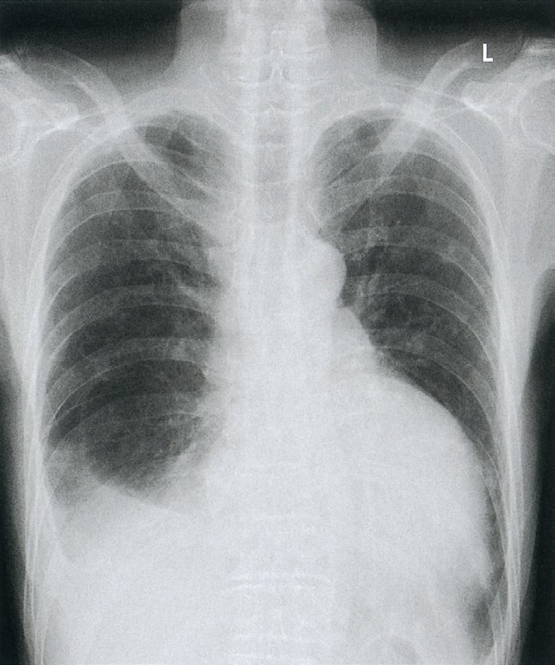
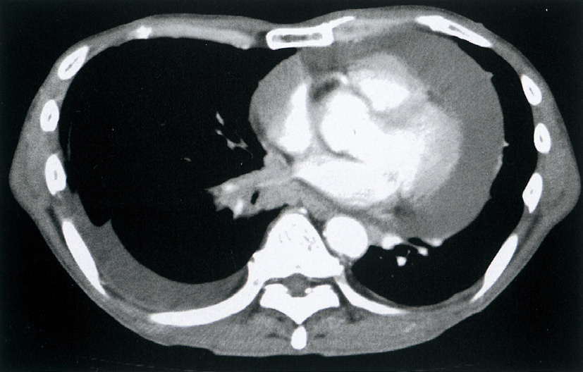
ａ 抗凝固薬投与
ｂ 心囊ドレナージ
ｃ 気管支拡張薬投与
ｄ 気管支動脈塞栓術
ｅ 副腎皮質ステロイド投与
✅
ｂ 心囊ドレナージ
悪性腫瘍（肺腺癌）による心嚢液貯留→心タンポナーデ（低血圧・頻脈・心音減弱）→心嚢ドレナージ。
❤️ 悪性心嚢液と心タンポナーデ——「圧」の病気であって「量」の病気ではない
心タンポナーデは心嚢内圧の上昇によって心室の拡張期充満が妨げられ、心拍出量が低下する病態である。決定的なのは「量」ではなく「たまる速さ」——心膜は伸展性に乏しく、急速なら100〜200mLでもタンポナーデになるが、ゆっくりなら1〜2Lたまっても心膜が伸びて代償できる。悪性心嚢液は比較的緩徐に増えるため大量になりやすいが、ある一点を超えると圧-容量曲線が急峻に立ち上がり、わずかな追加で一気に破綻する。血行動態の連鎖：①心嚢内圧上昇 → ②心室の拡張が制限され前負荷（拡張末期容積）が低下 → ③一回拍出量低下 → ④代償性の頻脈と末梢血管収縮 → ⑤それでも足りなくなり低血圧・ショック。各心腔の拡張期圧が心嚢内圧に等値化する（右房圧＝右室拡張末期圧＝肺動脈楔入圧＝左室拡張末期圧）のが特徴的である。
| 所見 | 機序 |
|---|---|
| Beck三徴：低血圧・頸静脈怒張・心音減弱 | 心拍出量低下／静脈還流のうっ滞／液体による音の減衰 |
| 奇脈（吸気時に収縮期血圧が10mmHg超低下） | 吸気で右心系が拡張すると心室中隔が左へ偏位し、逃げ場のない左室が押しつぶされる〈心室相互依存〉 |
| 頻脈 | 一回拍出量低下の代償 |
| 脈圧の狭小化 | 一回拍出量低下＋末梢血管収縮 |
| 心電図：低電位・電気的交互脈 | 液体による電位の減衰／心臓が心嚢液中で振り子様に揺れる〈swinging heart〉 |
| 胸部エックス線：フラスコ状の心陰影 | 250mL以上たまって初めて出る（遅い所見） |
| 心エコー：右房・右室の拡張期虚脱、下大静脈の呼吸性変動消失 | 最も早く鋭敏。ベッドサイドで即座に確認できる |
□ 選択肢の検討
| 選択肢 | 解説 |
|---|---|
| ａ 抗凝固薬投与 | 病態が違う。担癌患者の急性の呼吸困難・頻脈・低血圧という提示から肺血栓塞栓症〈PE〉を鑑別に挙げるのは正しい——悪性腫瘍はVirchow三徴のうち凝固能亢進を代表する危険因子（Trousseau症候群）だからである。しかし本例の身体所見はPEでは説明できない——「Ⅰ音とⅡ音とが減弱している」のは心臓と胸壁の間に液体（心嚢液）が介在して音が伝わりにくくなっていることを意味し、PEではむしろⅡ音の肺動脈成分が亢進する。さらに胸部エックス線写真と造影CTの両方が提示されており、心嚢液貯留が視覚的に確認できる。抗凝固薬は心嚢液が血性の場合むしろタンポナーデを悪化させうるため、方向としても危険である。 |
| ◯ ｂ 心囊ドレナージ | これが正解。本例は肺腺癌の心膜転移による悪性心嚢液貯留から心タンポナーデを来している——根拠は①悪性腫瘍の既往 ②2日で進行する胸部圧迫感 ③頻脈116/分 ④低血圧88/58mmHg（脈圧30mmHgと狭小） ⑤Ⅰ音Ⅱ音の減弱 ⑥呼吸音は正常（肺そのものの問題ではない） ⑦胸部エックス線と造影CTで心嚢液。心タンポナーデは心嚢内圧の上昇によって心室が拡張できなくなる閉塞性ショックで、治療は圧の物理的な解除＝心嚢穿刺・ドレナージ以外にない。薬では治らない——昇圧薬や輸液は穿刺までのつなぎにすぎない。悪性心嚢液は再貯留しやすいので、ドレーンを数日留置して排液が減るのを待ち、必要なら心膜開窓術や心膜腔内への薬剤注入を検討する。 |
| ｃ 気管支拡張薬投与 | 適応がない。気管支拡張薬は気道の可逆性狭窄＝喘鳴を伴う閉塞性換気障害に対して用いるが、本例は「呼吸音に異常を認めない」と明記されている。喘鳴が無く、呼気延長も無く、既往にも喘息やCOPDの記載が無い以上、気管支攣縮を治療対象とする根拠が存在しない。またβ2刺激薬は頻脈を助長するため、すでに116/分の頻脈でショックに近い本例では心筋酸素消費を増やして有害である。「呼吸困難＝気管支拡張薬」という反射は危険——呼吸困難の原因は気道・肺実質・肺血管・心臓・血液（貧血）・代謝性アシドーシス・心因性と幅広く、本例のように循環が原因の呼吸困難では治療の方向がまったく異なる。 |
| ｄ 気管支動脈塞栓術 | 適応がない。気管支動脈塞栓術〈BAE〉は喀血（とくに大量喀血）に対する止血目的のIVRである——本例に喀血の記載はない。肺癌・気管支拡張症・肺結核後遺症・アスペルギローマなどで気管支動脈が拡張・蛇行し、破綻して大量喀血を来したときに、カテーテルで責任血管を塞栓する。合併症として脊髄動脈（Adamkiewicz動脈が気管支動脈から分岐することがある）の塞栓による対麻痺が知られており、施行前に血管解剖を確認する必要がある。本例の問題は「気道からの出血」ではなく「心臓の外側からの圧迫」であり、治療の場所そのものが違う。 |
| ｅ 副腎皮質ステロイド投与 | この場面では不適切。副腎皮質ステロイドは特発性・自己免疫性・尿毒症性など炎症性の心膜炎や、膠原病に伴う心嚢液では治療選択肢になり得る——しかし本例は腫瘍細胞が心膜に播種した機械的な液体貯留であり、抗炎症では液は引かない。さらに重要なのは時間の問題である——血圧88/58mmHgでショックに近い心タンポナーデに対し、効果発現まで時間を要する薬物療法を選ぶこと自体が誤り。なお急性心膜炎においてもステロイドは第一選択ではない——NSAIDs＋コルヒチンが標準で、ステロイドは再発率を上げるため、これらが使えない場合や膠原病・尿毒症性に限って用いる。 |
🔍 心嚢ドレナージの実際と、悪性心嚢液のその後
①心嚢穿刺〈pericardiocentesis〉——剣状突起の左下方から、左肩に向けて30〜45度の角度で穿刺する（傍剣状突起アプローチ）。現在は心エコーガイド下で、液が最も厚くたまり心臓までの距離が短い場所を選んで穿刺するのが標準で、盲目的穿刺に比べ合併症が大幅に減った。合併症は心筋・冠動脈の損傷、気胸、肝損傷、不整脈。排液で血圧が上昇し頸静脈怒張が改善するのを確認する。⚠️ 穿刺してはいけない場合——大動脈解離の心嚢内破裂・心破裂（心筋梗塞後）・外傷性の心損傷では、心嚢内圧の上昇がかろうじて出血を抑えている（タンポナーデ自体が止血に働いている）ため、穿刺で圧を抜くと出血が再開して失血死する。これらは穿刺ではなく緊急開胸手術である。
②穿刺液の性状で原因を絞る：
| 性状 | 考える原因 |
|---|---|
| 血性 | 悪性腫瘍・結核・外傷・大動脈解離・心破裂・尿毒症 |
| 漿液性 | ウイルス性・特発性・心不全・甲状腺機能低下症 |
| 膿性 | 細菌性心膜炎（ドレナージ＋抗菌薬が必須） |
| 乳び | 胸管損傷・リンパ管腫 |
③再貯留への対策——悪性心嚢液は穿刺のみでは50%以上が再貯留する：
・カテーテルを数日留置し、排液量が1日30mL以下になるまで待つ（単純穿刺より再発率が下がる）
・心膜腔内注入——ブレオマイシンなどを注入して心膜を癒着させる
・心膜開窓術〈pericardial window〉——剣状突起下または胸腔鏡下に心膜に窓を開け、心嚢液を胸腔・腹腔へ逃がす。全身状態が保たれ予後が数か月以上見込める患者に
・原疾患への治療——化学療法・分子標的薬が奏効すれば根本的な制御になる
ただし悪性心嚢液の出現は原疾患の進行を意味し、予後は中央値で数か月である——侵襲的処置の選択には全身状態と本人の意向を踏まえた話し合いが要る。
🎯 国試ポイント
① 担癌患者＋低血圧＋頻脈＋心音減弱＝心タンポナーデ。治療は心嚢ドレナージ——薬では治らない。② Beck三徴＝低血圧・頸静脈怒張・心音減弱。これに奇脈と頻脈を加える。
③ タンポナーデは「量」でなく「たまる速さ」。急速なら100〜200mLでも起こる。
④ 心電図は低電位と電気的交互脈。心エコーの右房・右室の拡張期虚脱、下大静脈の呼吸性変動消失が最も鋭敏。
⑤ タンポナーデでは肺うっ血が起こらない——左室に血液が入らないので、呼吸困難があっても呼吸音は清明。
⑥ 大動脈解離の心嚢内破裂・心破裂・外傷では穿刺禁忌——圧が出血を抑えているので、抜くと失血死する。緊急手術。
⑦ 穿刺液が血性なら悪性腫瘍・結核・外傷・大動脈解離。細胞診の感度は60〜80%で陰性でも否定できない。
⑧ 悪性心嚢液は50%以上が再貯留。カテーテル留置・心膜腔内注入・心膜開窓術を検討する。
⑨ 急性心膜炎の第一選択はNSAIDs＋コルヒチン。ステロイドは再発率を上げるので原則使わない。
Q.418(108D-4)正答率 66%
肺高血圧を伴わないのはどれか。
ａ 強皮症
ｂ 肺血栓塞栓症
ｃ 僧帽弁狭窄症
ｄ 急性心筋梗塞
ｅ 心タンポナーデ
✅
ｅ 心タンポナーデ
心タンポナーデ：心嚢液による外圧→右心系への流入低下→肺血流↓→肺血管圧は低下または正常。
❤️ 肺高血圧症の5群分類——どこで抵抗が上がっているか
肺高血圧症〈PH〉は安静時の平均肺動脈圧が20mmHgを超える状態と定義される（従来は25mmHg以上だったが、2022年の欧州のガイドラインで引き下げられた）。右心カテーテル検査が診断のゴールドスタンダードで、心エコーはスクリーニングである。最も重要な分岐は「毛細血管より手前か、後ろか」：
| 前毛細血管性〈pre-capillary〉 | 後毛細血管性〈post-capillary〉 | |
|---|---|---|
| 平均肺動脈圧 | 20mmHg超 | 20mmHg超 |
| 肺動脈楔入圧〈PAWP〉 | 15mmHg以下 | 15mmHg超 |
| 肺血管抵抗 | 2 Wood単位超 | — |
| 該当 | 第1群・第3群・第4群 | 第2群（左心性） |
第1群 肺動脈性肺高血圧症〈PAH〉——特発性・遺伝性（BMPR2変異）・薬剤性（食欲抑制薬）・膠原病（強皮症・混合性結合組織病・SLE）・HIV・門脈肺高血圧症・先天性心疾患の左右短絡（Eisenmenger症候群）・住血吸虫症
第2群 左心性心疾患——左心不全（HFrEF／HFpEF）・弁膜症（僧帽弁狭窄症・僧帽弁閉鎖不全症・大動脈弁狭窄症）・急性心筋梗塞後。頻度としては最多
第3群 肺疾患・低酸素——COPD・間質性肺疾患・睡眠時無呼吸症候群・肺胞低換気・高地居住。機序は低酸素性肺血管攣縮〈HPV〉
第4群 慢性血栓塞栓性肺高血圧症〈CTEPH〉——器質化血栓による閉塞。肺動脈内膜摘除術・バルーン肺動脈形成術で治せる唯一の群
第5群 詳細不明・多因子——サルコイドーシス・血液疾患（骨髄増殖性疾患）・代謝性疾患・慢性腎不全
治療は群によってまったく違う——第1群にはエンドセリン受容体拮抗薬・PDE5阻害薬・プロスタサイクリン製剤という肺血管拡張薬を使うが、第2群にこれらを使うと肺血流が増えて左房圧がさらに上がり、肺水腫を起こす。「まず群を決める」ことが治療の前提である。
□ 選択肢の検討
| 選択肢 | 解説 |
|---|---|
| ａ 強皮症 | 肺高血圧を伴う。全身性強皮症〈SSc〉は肺高血圧症を合併する代表的な膠原病で、しかも2つの経路で合併する点が重要である——①肺動脈そのものの内膜増殖・中膜肥厚による第1群の肺動脈性肺高血圧症〈PAH〉。限局皮膚硬化型（旧CREST症候群、抗セントロメア抗体陽性）に多い。②間質性肺疾患〈ILD〉に伴う低酸素性肺血管攣縮による第3群。びまん皮膚硬化型（抗トポイソメラーゼI／Scl-70抗体陽性）に多い。肺高血圧症は強皮症の主要な死因であり、症状が出る前から年1回の心エコーで能動的にスクリーニングすることが推奨されている。なお強皮症腎クリーゼには血圧の急上昇に対しACE阻害薬を用いる——これも定番の出題である。 |
| ｂ 肺血栓塞栓症 | 肺高血圧を伴う。肺血栓塞栓症は肺動脈が血栓で機械的に閉塞するため、肺血管抵抗が直接的に上昇して肺動脈圧が上がる——肺高血圧の最も直接的な機序といってよい。急性期には、それまで正常だった右室が急な後負荷に耐えられず急性右心不全（右室拡大・三尖弁逆流・中心静脈圧上昇）を来す。ただし正常な右室が急性に出せる肺動脈収縮期圧は50〜60mmHg程度が上限で、それを超える値が出ていれば慢性の経過（もともと肥厚した右室がある）を示唆する。慢性期には血栓が器質化して慢性血栓塞栓性肺高血圧症〈CTEPH〉＝第4群となり、肺動脈内膜摘除術やバルーン肺動脈形成術〈BPA〉という根治的治療の対象になる。 |
| ｃ 僧帽弁狭窄症 | 肺高血圧を伴う。僧帽弁狭窄症〈MS〉は肺高血圧を来す機序を3段階すべて備えた教科書的疾患である——①左房圧の上昇が肺静脈へそのまま伝わる（受動的・後毛細血管性） → ②肺静脈圧の上昇に対する反射性の肺細動脈攣縮（reactive） → ③長期化すると肺細動脈の中膜肥厚・内膜線維化という器質的変化（不可逆）。この結果肺高血圧が固定し、右心不全（頸静脈怒張・肝腫大・浮腫）へ進む。MSの症状は「左心不全（労作時呼吸困難・血痰）で始まり、右心不全で終わる」と覚える。なおⅡ音の肺動脈成分〈ⅡP〉の亢進は肺高血圧の身体所見として重要で、MSの開放音〈opening snap〉・拡張期ランブルとともに聴取される。 |
| ｄ 急性心筋梗塞 | 肺高血圧を伴う。急性心筋梗塞は左室のポンプ機能が急に落ちるため、左室拡張末期圧の上昇 → 左房圧の上昇 → 肺静脈圧・肺動脈楔入圧の上昇 → 受動的な肺動脈圧の上昇という連鎖が起こる——いわゆる第2群（左心性心疾患による肺高血圧）である。臨床的にはForrester分類で肺動脈楔入圧18mmHg超＝肺うっ血ありと定義され、Killip分類のⅡ度以上（ラ音聴取）に相当する。さらに乳頭筋断裂による急性僧帽弁閉鎖不全や心室中隔穿孔といった機械的合併症が起これば、肺動脈圧は急激かつ高度に上昇する。左心系の圧上昇はそのまま肺循環へ伝わる——この一方通行の関係が第2群の本質である。 |
| ◯ ｅ 心タンポナーデ | これが正解＝肺高血圧を伴わない。心タンポナーデでは心臓が外側から一様に圧迫されるため、すべての心腔で「拡張できない」＝入る血液が減る——右室へ入る量が減れば、右室から肺へ送り出される量も減る。すなわち肺血流量そのものが低下する。血行動態は心嚢内圧＝右房圧＝右室拡張期圧＝肺動脈拡張期圧＝肺動脈楔入圧＝左室拡張期圧とすべての拡張期圧が心嚢内圧に等値化する（equalization of diastolic pressures）のが特徴で、肺動脈収縮期圧は上昇しない。中心静脈圧は上がる（頸静脈怒張）が、肺動脈圧は上がらない——この分離が本問の核心である。実際に肺うっ血が起こらず呼吸音が清明なことが、他の心不全との鑑別点になる。「頸静脈は怒張しているのに肺はきれい」＝タンポナーデか収縮性心膜炎か右室梗塞と覚える。 |
🔍 肺高血圧の身体所見と、右心不全という共通の帰結
①肺高血圧を示唆する身体所見：Ⅱ音の肺動脈成分〈ⅡP〉の亢進（最も重要）・Ⅱ音の分裂・胸骨左縁下部での右室拍動〈right ventricular heave〉・三尖弁逆流による汎収縮期雑音（吸気で増強＝Rivero-Carvallo徴候）・肺動脈弁逆流によるGraham Steell雑音。右心不全へ進むと頸静脈怒張・肝腫大・肝頸静脈逆流・腹水・下腿浮腫が加わる。②検査所見：
| 検査 | 所見 |
|---|---|
| 心電図 | 右軸偏位・右室肥大（V1のR波増高）・右房負荷（Ⅱ誘導のP波増高＝肺性P）・右脚ブロック |
| 胸部エックス線 | 肺動脈主幹部の突出（左第2弓の拡大）・末梢肺血管影の減少（pruning）・右室拡大 |
| 心エコー | 三尖弁逆流速度から推定右室収縮期圧を算出／右室拡大・右室壁肥厚／心室中隔の平坦化（D-shape）／下大静脈の拡張 |
| 右心カテーテル | 確定診断。平均肺動脈圧・PAWP・肺血管抵抗・心拍出量を直接測る |
| 肺血流シンチ | CTEPHのスクリーニング（区域性の欠損）。特発性PAHとの鑑別に必須 |
ここで再び本問の心タンポナーデと比べると構造の違いが際立つ——肺高血圧は「右室の出口の抵抗が上がる」病態で右室は圧負荷に苦しむ。心タンポナーデは「右室の入口が塞がれる」病態で、右室は圧負荷ではなく充満不足に苦しむ。どちらも中心静脈圧は上昇するが、肺動脈圧が上がるのは前者だけ——これが本問の答えの本質である。
🎯 国試ポイント
① 心タンポナーデは肺高血圧を伴わない——右室への流入が減るので肺血流そのものが低下する。② タンポナーデではすべての拡張期圧が心嚢内圧に等値化（右房圧＝右室拡張期圧＝PAWP＝左室拡張期圧）。
③ 「頸静脈は怒張しているのに肺はきれい」＝タンポナーデ・収縮性心膜炎・右室梗塞。
④ 肺高血圧＝安静時の平均肺動脈圧20mmHg超。確定診断は右心カテーテル検査、スクリーニングは心エコー。
⑤ 5群分類＝①PAH（膠原病・先天性心疾患・特発性）②左心性（最多）③肺疾患・低酸素④CTEPH⑤その他。
⑥ PAWP 15mmHg以下＝前毛細血管性、15mmHg超＝後毛細血管性（第2群）。この一点で群が分かれる。
⑦ 第2群に肺血管拡張薬を使ってはいけない——肺血流が増えて左房圧が上がり肺水腫を起こす。
⑧ 強皮症はPAH（第1群）と間質性肺疾患（第3群）の両方で肺高血圧を来す。主要な死因なので年1回心エコーでスクリーニング。
⑨ CTEPH（第4群）は肺動脈内膜摘除術・バルーン肺動脈形成術で治せる。肺血流シンチでの区域性欠損が鍵。
⑩ ⅡPの亢進が肺高血圧の最重要の身体所見。労作時失神は重症徴候。
Q.419(108D-25)正答率 96%
42 歳の男性。微熱を主訴に来院した。4 か月前から微熱を自覚していた。3 週前から全身倦怠感と手足の関節痛とが出現し、微熱も続いているため心配になって受診した。1 週前に数秒間の眼前暗黒感を生じたという。4 か月間で5kg の体重減少がある。意識は清明。身長163cm、体重62kg。体温37.2℃。脈拍80/ 分、整。血圧136/82mmHg。
呼吸数18/ 分。SpO2 98％（room air）。眼瞼結膜に貧血を認めない。眼球結膜に黄染を認めない。甲状腺腫と頸部リンパ節とを触知しない。心尖部に体位によって強さが変化する拡張期の心雑音を聴取する。呼吸音に異常を認めない。腹部は平坦、軟で、肝・脾を触知しない。腸雑音は正常。関節の腫脹を認めない。尿所見に異常を認めない。血液所見：赤血球468 万、Hb 13.9g/dl、Ht 42％、白血球12,300（桿状核好中球30％、分葉核好中球45％、好酸球1％、
好塩基球1％、単球6％、リンパ球17％）、血小板21 万。血液生化学所見に異常を認めない。免疫血清学所見：CRP1.0mg/dl、リウマトイド因子〈RF〉陰性、抗核抗体陰性、CH50 36U/ml（基準30 ～40）、C3 52mg/dl（基準52 ～112）、C4 20mg/dl（基準16 ～51）、ツベルクリン反応陰性。血液培養は陰性。心電図と胸部エックス線写真とに異常を認めない。
診断のために有用な検査はどれか。
呼吸数18/ 分。SpO2 98％（room air）。眼瞼結膜に貧血を認めない。眼球結膜に黄染を認めない。甲状腺腫と頸部リンパ節とを触知しない。心尖部に体位によって強さが変化する拡張期の心雑音を聴取する。呼吸音に異常を認めない。腹部は平坦、軟で、肝・脾を触知しない。腸雑音は正常。関節の腫脹を認めない。尿所見に異常を認めない。血液所見：赤血球468 万、Hb 13.9g/dl、Ht 42％、白血球12,300（桿状核好中球30％、分葉核好中球45％、好酸球1％、
好塩基球1％、単球6％、リンパ球17％）、血小板21 万。血液生化学所見に異常を認めない。免疫血清学所見：CRP1.0mg/dl、リウマトイド因子〈RF〉陰性、抗核抗体陰性、CH50 36U/ml（基準30 ～40）、C3 52mg/dl（基準52 ～112）、C4 20mg/dl（基準16 ～51）、ツベルクリン反応陰性。血液培養は陰性。心電図と胸部エックス線写真とに異常を認めない。
診断のために有用な検査はどれか。
ａ 心エコー
ｂ 骨髄穿刺
ｃ 腹部単純CT
ｄ 上部消化管内視鏡検査
ｅ 全身Ga シンチグラフィ
✅
ａ 心エコー
体位変換で変動する拡張期雑音（可動性腫瘤）→左房粘液腫→心エコーが診断に最も有用。
❤️ 心臓粘液腫——「全身症状・閉塞・塞栓」の三徴
原発性心臓腫瘍は剖検例の0.02%程度と極めて稀だが、そのうち約75%が良性で、成人では粘液腫〈myxoma〉が最多（良性のほぼ半数）である。なお転移性心臓腫瘍は原発性の20〜40倍多い——肺癌・乳癌・悪性黒色腫・悪性リンパ腫からの転移で、多くは心膜に播種して心嚢液貯留として現れる。| 粘液腫の特徴 | |
|---|---|
| 好発部位 | 左房が約75%（次いで右房約20%）。心房中隔の卵円窩から有茎性に発生する |
| 好発年齢・性 | 30〜60歳、女性にやや多い |
| 組織像 | 粘液様基質の中に星芒状・紡錘形の細胞。組織学的には良性 |
| 予後 | 摘出により根治するが、放置すれば塞栓・突然死のリスク |
①全身症状（約90%）——発熱・体重減少・全身倦怠感・関節痛・レイノー現象・貧血・赤沈亢進・CRP上昇・高γグロブリン血症。これは腫瘍細胞が産生するインターロイキン6〈IL-6〉によるもので、膠原病や感染性心内膜炎と紛らわしい「不明熱」として現れる。摘出すれば症状も検査異常も速やかに消える。
②閉塞症状（約50%）——有茎性の腫瘤が拡張期に僧帽弁口へはまり込むため、僧帽弁狭窄症に似た拡張期雑音と労作時呼吸困難・起坐呼吸・失神を来す。決定的な違いは「体位によって症状も雑音も変動する」点である——寝返りや起立で腫瘤の位置が変わるため。拡張早期に腫瘤が弁口を通過する音＝tumor plopが聴取されることがあり、僧帽弁狭窄症の開放音〈opening snap〉よりやや遅れて出る。
③塞栓症状（約30〜40%）——腫瘍片や表面の血栓が飛ぶ。左房粘液腫なら体循環へ（脳梗塞・一過性黒内障・網膜動脈閉塞・四肢動脈閉塞・腎梗塞）、右房粘液腫なら肺塞栓へ。本例の「1週前に数秒間の眼前暗黒感」はまさにこの塞栓症状である。
Carney複合——常染色体顕性遺伝（PRKAR1A遺伝子変異）で、皮膚の色素斑・内分泌腫瘍（Cushing症候群）・多発性の心臓粘液腫を来す。若年発症・多発・心房以外の部位・術後再発があれば疑う。
□ 選択肢の検討
| 選択肢 | 解説 |
|---|---|
| ◯ ａ 心エコー | これが正解。本例の決め手は「心尖部に体位によって強さが変化する拡張期の心雑音」——体位で変わる雑音は、心腔内で動く物体（可動性腫瘤）が血流を妨げていることを意味する。固定した弁狭窄（僧帽弁狭窄症）の雑音は体位でここまで変動しない。これに①4か月続く微熱 ②5kgの体重減少 ③関節痛 ④白血球12,300とCRP上昇 ⑤一過性の眼前暗黒感（塞栓による一過性黒内障・一過性脳虚血発作）が加わると、左房粘液腫の三徴（全身症状・閉塞症状・塞栓症状）がそのまま揃う。しかも血液培養は陰性・リウマトイド因子陰性・抗核抗体陰性・ツベルクリン反応陰性と、感染性心内膜炎・膠原病・結核が能動的に否定されている。心エコーは非侵襲的で即座に施行でき、腫瘤の付着部位・大きさ・可動性まで一度に評価できる——診断はこれで確定する。 |
| ｂ 骨髄穿刺 | 適応がない。骨髄穿刺は血球減少（汎血球減少・原因不明の貧血）・白血球分画の異常（芽球の出現）・M蛋白血症・原因不明の脾腫やリンパ節腫脹・不明熱で血液悪性腫瘍を疑う場合に行う——本例の血算は赤血球468万・Hb 13.9g/dL・血小板21万と正常で、白血球12,300も分画に芽球や異型細胞の記載が無く、単なる炎症性の上昇である。つまり骨髄を疑う根拠が一つも無い。不明熱の精査で反射的に骨髄穿刺を行うのは、侵襲に見合う収量が得られない典型例である——先にベッドサイドの所見（ここでは体位で変わる拡張期雑音）から仮説を立て、それを最短で検証できる検査を選ぶ。 |
| ｃ 腹部単純CT | 優先度が低い。腹部単純CTは腹腔内膿瘍・悪性腫瘍・後腹膜病変など、不明熱の原因が腹部にあると疑うときに行う——本例は腹部は平坦・軟で肝脾を触知せず、腸雑音も正常で、腹部症状の記載が一切無い。また単純CTでは膿瘍や腫瘍の描出能が造影に大きく劣るため、腹部を本気で調べるなら造影CTを選ぶことになる。本例の異常所見は心臓に集中している——「体位で変わる拡張期雑音」という他に説明のつかない所見を差し置いて、所見の無い腹部を撮る理由がない。検査は所見の在るところから攻める。 |
| ｄ 上部消化管内視鏡検査 | 適応がない。上部消化管内視鏡は心窩部痛・嘔気・嘔吐・吐血・下血・貧血（鉄欠乏）・体重減少に消化器症状を伴う場合に行う——本例は消化器症状の記載が無く、貧血もない（Hb 13.9g/dL）。たしかに4か月で5kgの体重減少は悪性腫瘍を想起させるが、本例の体重減少は慢性炎症とサイトカイン（粘液腫はインターロイキン6を産生する）による消耗で説明でき、腫瘍摘出後に速やかに改善する。「体重減少＝がん検索」と機械的に進める前に、目の前の心雑音を説明できているかを問うこと——本問は所見の統合ができているかを試している。 |
| ｅ 全身Ga シンチグラフィ | この場面では不適切。ガリウムシンチグラフィは炎症巣・腫瘍（悪性リンパ腫・サルコイドーシス）の局在が全く分からないときに全身を俯瞰する検査で、古典的不明熱の精査で用いられてきた——しかし空間分解能が低く、集積があってもそれが何かは分からないため、結局は局在をつけた後の精密検査が別途必要になる。加えて投与から撮像まで48〜72時間を要するので、答えが出るのが遅い。本例はすでに「心臓」という局在が身体所見から得られている——局在が分かっているのに全身を探す検査を選ぶのは、順序が逆である。不明熱でも、身体所見が一つでも局在を示したらそこを直接調べるのが最短経路。 |
🔍 感染性心内膜炎との鑑別と、粘液腫の治療
①粘液腫とIEはよく似ている——どちらも発熱・体重減少・心雑音・塞栓症・炎症反応上昇を来し、「不明熱＋心雑音＋塞栓」という提示が共通する。| 左房粘液腫 | 感染性心内膜炎 | |
|---|---|---|
| 血液培養 | 陰性 | 陽性（大基準） |
| 雑音 | 拡張期・体位で変動する | 弁により様々・新規の逆流性雑音 |
| 皮膚所見 | レイノー現象 | Osler結節・Janeway病変・爪下線状出血 |
| 先行イベント | なし | 歯科処置・カテーテル・静注薬物 |
| 心エコー | 心房中隔に付着する有茎性の可動性腫瘤 | 弁尖に付着する疣贅・弁破壊 |
| 治療 | 外科的摘出 | 長期の抗菌薬（±手術） |
②不明熱〈FUO〉の三本柱——①感染症（結核・膿瘍・感染性心内膜炎） ②悪性腫瘍（悪性リンパ腫・白血病・腎細胞癌） ③膠原病・自己免疫疾患（成人Still病・血管炎・側頭動脈炎）で全体の大半を占め、残りが薬剤熱・甲状腺炎・炎症性腸疾患・心臓粘液腫などである。不明熱の精査は「新しい検査を足す」ことより「病歴と身体所見を繰り返し取り直す」ことのほうが収量が高い——本例はまさにその実例で、答えは聴診にあった。
③治療は外科的摘出——診断がついたら準緊急に手術する。理由は①いつ塞栓を起こすか予測できない ②弁口を完全に塞げば突然死するためで、待機する理由が無い。手術は人工心肺下に、腫瘍を付着部の心房中隔ごと切除する（茎を残すと再発する）。欠損した中隔はパッチで閉鎖する。術中は腫瘍を壊さないよう愛護的に扱う——操作で崩れると術中塞栓を起こす。再発率は散発例で1〜3%、Carney複合を含む家族性例では10〜20%と高く、術後も定期的な心エコーによる経過観察が要る。
🎯 国試ポイント
① 体位によって強さが変化する心雑音＝心腔内の可動性腫瘤＝粘液腫。最重要のキーワード。② 粘液腫の三徴＝全身症状（IL-6による発熱・体重減少・炎症反応）・閉塞症状・塞栓症状。
③ 左房が約75%、心房中隔の卵円窩から有茎性に発生。成人の原発性心臓腫瘍で最多。
④ 診断は心エコー——非侵襲的に付着部位・大きさ・可動性まで一度に評価できる。
⑤ 血液培養陰性で不明熱＋心雑音＋塞栓なら粘液腫。血液培養陽性ならIE——ここが最大の分岐点。
⑥ 治療は準緊急の外科的摘出。塞栓と突然死のリスクがあるので待機しない。茎（心房中隔）ごと切除する。
⑦ tumor plop＝拡張早期の腫瘤通過音。僧帽弁狭窄症の開放音よりやや遅れる。
⑧ Carney複合＝常染色体顕性・皮膚色素斑・内分泌腫瘍・多発性心臓粘液腫。若年・多発・再発例で疑う。
⑨ 転移性心臓腫瘍は原発性の20〜40倍多い——多くは心膜播種による心嚢液貯留として現れる。
Q.420(108H-37)正答率 99%
連問 1/269 歳の女性。発熱を主訴に来院した。
現病歴：2 週前から38℃台の発熱が出現し、非ステロイド性抗炎症薬を内服し、解熱と発熱とを繰り返していた。そ
の後、徐々に食欲が減退し、最近1 週間は発熱時は39℃を超えるようになった。かかりつけ医で胸部エックス線
撮影と尿検査とを行い、異常を指摘されなかった。受診前日に2 回軟便があった。咽頭痛、咳、痰および排尿痛は
ない。
既往歴：高血圧症で治療中。
生活歴：海外渡航歴とペット飼育歴とはない。
家族歴：特記すべきことはない。
現 症：意識は清明。体温38.4℃。脈拍96/ 分、整。血圧160/66mmHg。呼吸数20/ 分。SpO2 96％（room air）。
甲状腺腫と頸部リンパ節とを触知しない。項部硬直を認めない。心尖部にⅢ/ Ⅵの汎〈全〉収縮期雑音を認める。
呼吸音に異常を認めない。腹部は平坦、軟で、圧痛を認めない。脊椎棘突起の叩打痛を認めない。肋骨脊柱角に叩
打痛を認めない。四肢に浮腫を認めない。経胸壁心エコー検査では僧帽弁の逆流と僧帽弁の疣贅とを認めた。
診断に有用な検査はどれか。
現病歴：2 週前から38℃台の発熱が出現し、非ステロイド性抗炎症薬を内服し、解熱と発熱とを繰り返していた。そ
の後、徐々に食欲が減退し、最近1 週間は発熱時は39℃を超えるようになった。かかりつけ医で胸部エックス線
撮影と尿検査とを行い、異常を指摘されなかった。受診前日に2 回軟便があった。咽頭痛、咳、痰および排尿痛は
ない。
既往歴：高血圧症で治療中。
生活歴：海外渡航歴とペット飼育歴とはない。
家族歴：特記すべきことはない。
現 症：意識は清明。体温38.4℃。脈拍96/ 分、整。血圧160/66mmHg。呼吸数20/ 分。SpO2 96％（room air）。
甲状腺腫と頸部リンパ節とを触知しない。項部硬直を認めない。心尖部にⅢ/ Ⅵの汎〈全〉収縮期雑音を認める。
呼吸音に異常を認めない。腹部は平坦、軟で、圧痛を認めない。脊椎棘突起の叩打痛を認めない。肋骨脊柱角に叩
打痛を認めない。四肢に浮腫を認めない。経胸壁心エコー検査では僧帽弁の逆流と僧帽弁の疣贅とを認めた。
診断に有用な検査はどれか。
ａ 便培養
ｂ 血液培養
ｃ 抗核抗体測定
ｄ 胸部エックス線再検
ｅ 上部消化管内視鏡検査
✅
ｂ 血液培養
IE診断：血液培養が最重要（Duke基準のMajor criterion）。抗菌薬投与前に3セット採取。
❤️ 感染性心内膜炎の診断——血液培養と心エコーの二本柱
感染性心内膜炎〈IE〉は心内膜（主に弁）に細菌が付着して増殖し、疣贅〈vegetation〉を形成する疾患である。疣贅はフィブリンと血小板が菌を包み込んだ塊で、内部の菌には抗菌薬も好中球も届きにくい——これがIEの治療が長期化する構造的な理由である。発症の3段階：①内皮の傷害（弁膜症・人工弁・逆流ジェット・カテーテル）→ ②非細菌性血栓性心内膜炎（フィブリンと血小板が沈着）→ ③菌血症の際に細菌がここへ付着して増殖。したがって「傷んだ弁＋菌血症」が揃うと発症する。ただし黄色ブドウ球菌だけは正常な弁にも直接付着できる。
| 亜急性〈SBE〉 | 急性 | |
|---|---|---|
| 起炎菌 | 緑色連鎖球菌・腸球菌 | 黄色ブドウ球菌 |
| 基礎心疾患 | あることが多い | 無くてもよい |
| 経過 | 数週〜数か月（微熱・倦怠感・体重減少） | 数日（高熱・急速な弁破壊・敗血症） |
| 免疫学的現象 | 出やすい（Osler結節・Roth斑・糸球体腎炎） | 出る前に急変する |
診断の核心は「心雑音＋発熱」を見たらIEを疑うこと——本例では心尖部にⅢ/Ⅵの汎収縮期雑音＝僧帽弁閉鎖不全を聴取し、経胸壁心エコーで逆流と疣贅を確認している。ここまで来れば、あとは血液培養で起炎菌を捕まえるだけである。そして最も重要なのは「抗菌薬を投与する前に採る」——先に投与すると培養が陰性化し、その後の数週間を起炎菌不明のまま治療することになる。
□ 選択肢の検討
| 選択肢 | 解説 |
|---|---|
| ａ 便培養 | 診断には結びつかない。便培養は持続する下痢・血便・渡航歴・食中毒の集団発生・免疫抑制状態で提出する——本例は「受診前日に2回軟便があった」だけで、血便も持続する下痢も無い。むしろこの軟便は発熱に伴う非特異的な症状か、内服していた非ステロイド性抗炎症薬の影響と考えるのが自然である。すでに経胸壁心エコー検査で「僧帽弁の逆流と僧帽弁の疣贅」という決定的な所見が得られている——この時点で診断の方向は感染性心内膜炎に定まっており、消化管へ向かう理由が無い。問題文が検査所見を提示した順番そのものが、思考の道筋を示している。 |
| ◯ ｂ 血液培養 | これが正解。本例はすでに経胸壁心エコーで「僧帽弁の逆流と僧帽弁の疣贅」を認めており、修正Duke基準の大基準のうち「心内膜が侵されている証拠」を1つ満たしている。残るもう1つの大基準が「血液培養陽性」であり、これを取れば大基準2つで確診となる。加えて血液培養は診断だけでなく治療そのものを決める——起炎菌と薬剤感受性が分からなければ、4〜6週間という長期の抗菌薬治療を組み立てられない。採取の原則は「抗菌薬投与前に、時間と穿刺部位を変えて3セット（好気・嫌気の各ボトル）」。理由は①IEの菌血症は持続性なので複数セットすべてが陽性になるはずで、それ自体が大基準の要件 ②皮膚常在菌のコンタミネーションと区別できる ③1セットでは感度が不足する。 |
| ｃ 抗核抗体測定 | この場面では優先度が低い。抗核抗体は全身性エリテマトーデス〈SLE〉・強皮症・混合性結合組織病・Sjögren症候群などを疑うときの検査で、不明熱の鑑別に膠原病を挙げること自体は正しい——しかし本例はすでに疣贅という構造的な証拠を得ている。たしかにSLEでは非細菌性血栓性心内膜炎〈Libman-Sacks心内膜炎〉が起こり、疣贅を作ることがある——ただしこれはふつう無症候性で発熱を伴わず、蝶形紅斑・関節炎・血球減少・腎障害・光線過敏といった多臓器の所見を伴うのが常で、本例にはこれらの記載が無い。抗核抗体は健常者の一部でも陽性になるため、事前確率が低い状況で出すと解釈に困る。 |
| ｄ 胸部エックス線再検 | 診断には結びつかない。胸部エックス線写真はかかりつけ医ですでに撮影され「異常を指摘されなかった」と明記されている——再検して意味があるのは臨床像が変化したとき（新たな呼吸器症状の出現、心不全の進行）であり、同じ検査を漫然と繰り返しても情報は増えない。また本例は呼吸音に異常を認めず、SpO2も96%と保たれている。なお右心系（三尖弁）の心内膜炎では敗血症性肺塞栓による多発する結節影・空洞が胸部エックス線で見えることがあり、これは診断的価値を持つ——しかし本例の疣贅は僧帽弁＝左心系なので、塞栓は肺ではなく体循環へ飛ぶ。 |
| ｅ 上部消化管内視鏡検査 | 適応がない。上部消化管内視鏡は心窩部痛・吐血・下血・貧血・嚥下障害があって行う——本例は腹部は平坦・軟で圧痛を認めず、消化器症状は前日の軟便2回のみである。ただし感染性心内膜炎と消化管には重要なつながりが1つある——Streptococcus gallolyticus〈旧S. bovis〉によるIEでは、大腸癌・大腸ポリープの合併が高率（約50%）なので、この菌が検出されたら全例に大腸内視鏡を行う。しかしそれは「血液培養で菌が判明した後」の話である——順序として、まず血液培養。なお対象は上部ではなく下部（大腸）内視鏡である点にも注意する。 |
🔍 血液培養の実際と、培養陰性心内膜炎
①血液培養の採り方：| 項目 | 原則 | 理由 |
|---|---|---|
| タイミング | 抗菌薬投与前 | 投与後は陰性化して起炎菌が同定できない |
| セット数 | 2〜3セット（IEでは3セット） | 感度の確保とコンタミネーションの判別 |
| 穿刺部位 | セットごとに変える | 皮膚常在菌の混入を見分ける |
| 採血量 | 1セット20mL程度（成人） | 感度は採血量に最も強く依存する |
| ボトル | 好気・嫌気の各1本 | 嫌気性菌を逃さない |
| 消毒 | アルコール後にポビドンヨードまたはクロルヘキシジン、乾燥を待つ | 乾燥前に穿刺すると消毒効果が出ない |
②培養陰性心内膜炎〈culture-negative IE〉が5〜10%ある：
・最も多い原因は「先行する抗菌薬投与」——本例のように受診前に市販薬や外来で抗菌薬を飲んでいると陰性化する
・培養困難な菌——Coxiella burnetii（Q熱）・Bartonella・Brucella・Tropheryma whipplei・Legionella・真菌（Candida・Aspergillus）
・HACEK群（Haemophilus・Aggregatibacter・Cardiobacterium・Eikenella・Kingella）は発育が遅いが、現在の自動培養装置では通常5日で検出できる
対応は血清学的検査（Q熱・Bartonella）と、手術で摘出した弁のPCR・病理。
③IEを疑う臨床像のまとめ——①原因不明の発熱が続く ②心雑音がある（とくに新規または変化した逆流性雑音） ③塞栓症状（脳梗塞・脾梗塞・四肢動脈閉塞・Roth斑） ④免疫学的現象（Osler結節・糸球体腎炎） ⑤素因（人工弁・弁膜症・先天性心疾患・静注薬物使用・血液透析）。とくに「若年者の原因不明の脳梗塞」を見たら必ずIEを鑑別に入れる——本問の連問2問目にも通じる視点である。不明熱の患者に抗菌薬を「とりあえず」投与することの最大の害は、この診断機会を永久に失わせることである。
🎯 国試ポイント
① 発熱＋心雑音＋疣贅＝感染性心内膜炎。診断に最も有用なのは血液培養（修正Duke基準の大基準）。② 血液培養は抗菌薬投与前に、部位を変えて3セット。1セットあたり20mL、好気・嫌気の各ボトルへ。
③ 発熱のピークを待つ必要はない——IEの菌血症は持続性。待つ分だけ治療が遅れる。
④ 大基準は「血液培養陽性」と「心内膜の証拠（疣贅・膿瘍・人工弁裂開・新規逆流性雑音）」の2つ。本例は後者を既に満たしている。
⑤ 培養陰性IEが5〜10%。最多の原因は先行する抗菌薬投与。Coxiella・Bartonella・真菌も。
⑥ 亜急性は緑色連鎖球菌、急性は黄色ブドウ球菌。前者は基礎心疾患あり、後者は正常弁にも起こる。
⑦ Streptococcus gallolyticus〈bovis〉のIEでは大腸内視鏡が必須（大腸癌の合併が約50%）。上部ではなく下部。
⑧ 右心系IEでは敗血症性肺塞栓（多発結節・空洞）、左心系IEでは体循環への塞栓。本例は僧帽弁＝左心系。
⑨ 若年者の原因不明の脳梗塞ではIEを鑑別に入れる。
Q.421(108H-38)正答率 98%
連問 2/269 歳の女性。発熱を主訴に来院した。
現病歴：2 週前から38℃台の発熱が出現し、非ステロイド性抗炎症薬を内服し、解熱と発熱とを繰り返していた。そ
の後、徐々に食欲が減退し、最近1 週間は発熱時は39℃を超えるようになった。かかりつけ医で胸部エックス線
撮影と尿検査とを行い、異常を指摘されなかった。受診前日に2 回軟便があった。咽頭痛、咳、痰および排尿痛は
ない。
既往歴：高血圧症で治療中。
生活歴：海外渡航歴とペット飼育歴とはない。
家族歴：特記すべきことはない。
現 症：意識は清明。体温38.4℃。脈拍96/ 分、整。血圧160/66mmHg。呼吸数20/ 分。SpO2 96％（room air）。
甲状腺腫と頸部リンパ節とを触知しない。項部硬直を認めない。心尖部にⅢ/ Ⅵの汎〈全〉収縮期雑音を認める。
呼吸音に異常を認めない。腹部は平坦、軟で、圧痛を認めない。脊椎棘突起の叩打痛を認めない。肋骨脊柱角に叩
打痛を認めない。四肢に浮腫を認めない。経胸壁心エコー検査では僧帽弁の逆流と僧帽弁の疣贅とを認めた。
この患者に認められる可能性のある身体所見はどれか。
現病歴：2 週前から38℃台の発熱が出現し、非ステロイド性抗炎症薬を内服し、解熱と発熱とを繰り返していた。そ
の後、徐々に食欲が減退し、最近1 週間は発熱時は39℃を超えるようになった。かかりつけ医で胸部エックス線
撮影と尿検査とを行い、異常を指摘されなかった。受診前日に2 回軟便があった。咽頭痛、咳、痰および排尿痛は
ない。
既往歴：高血圧症で治療中。
生活歴：海外渡航歴とペット飼育歴とはない。
家族歴：特記すべきことはない。
現 症：意識は清明。体温38.4℃。脈拍96/ 分、整。血圧160/66mmHg。呼吸数20/ 分。SpO2 96％（room air）。
甲状腺腫と頸部リンパ節とを触知しない。項部硬直を認めない。心尖部にⅢ/ Ⅵの汎〈全〉収縮期雑音を認める。
呼吸音に異常を認めない。腹部は平坦、軟で、圧痛を認めない。脊椎棘突起の叩打痛を認めない。肋骨脊柱角に叩
打痛を認めない。四肢に浮腫を認めない。経胸壁心エコー検査では僧帽弁の逆流と僧帽弁の疣贅とを認めた。
この患者に認められる可能性のある身体所見はどれか。
ａ 扁桃の白苔
ｂ 下肢静脈瘤
ｃ Kernig 徴候
ｄ 血圧の左右差
ｅ 指先の有痛性紅斑
✅
ｅ 指先の有痛性紅斑
Osler結節：IEで指・趾腹側に出現する有痛性の皮下結節（免疫複合体沈着）。
❤️ IEの末梢徴候——「血管現象」と「免疫学的現象」に分ける
感染性心内膜炎の末梢徴候は、修正Duke基準の小基準において「血管現象」と「免疫学的現象」の2つに分類されている。この分類は暗記の道具ではなく、機序の違いを表している——血管現象は疣贅が飛んで血管を詰まらせた結果（機械的）、免疫学的現象は持続する菌血症に対して作られた免疫複合体が組織に沈着した結果である。| 血管現象（塞栓） | 免疫学的現象（免疫複合体） | |
|---|---|---|
| 皮膚 | Janeway病変（手掌・足底の無痛性の出血性斑） | Osler結節（指趾の腹側の有痛性結節） |
| 爪 | 爪下線状出血〈splinter hemorrhage〉 | — |
| 眼 | 眼球結膜の点状出血 | Roth斑（白色の中心を持つ網膜出血） |
| 腎 | 腎梗塞（側腹部痛・血尿） | 糸球体腎炎（血尿・蛋白尿・低補体血症） |
| その他 | 脳塞栓・脾梗塞・感染性動脈瘤・敗血症性肺塞栓（右心系） | リウマトイド因子陽性・関節痛 |
時間軸の理解が重要である——免疫学的現象は免疫複合体が形成されるまでに数週間を要するので、亜急性心内膜炎（緑色連鎖球菌など）でよく揃う。逆に黄色ブドウ球菌による急性心内膜炎では、これらが出そろう前に弁が破壊され、心不全や敗血症で急変する。したがって「Osler結節が無いからIEではない」とは言えない——末梢徴候は現在では抗菌薬の早期使用によりむしろ減っており、古典的所見の頻度は10〜25%程度である。
その他の古典的所見として脾腫（約30%）・ばち指（長期経過例）・貧血（慢性炎症性）がある。
□ 選択肢の検討
| 選択肢 | 解説 |
|---|---|
| ａ 扁桃の白苔 | 合わない。扁桃の白苔は細菌性扁桃炎（A群β溶血性連鎖球菌）・伝染性単核球症（EBウイルス）・アデノウイルス感染・口腔カンジダ症・ジフテリアで見られる所見である——本例は「咽頭痛、咳、痰および排尿痛はない」と明記され、上気道感染は能動的に否定されている。なお咽頭炎からの菌血症がIEの入り口になることはあるが、それは数週間前の出来事であって、IEを発症した時点で扁桃に白苔が残っているわけではない。「所見が現れる時期」を意識すること——本問は「この患者に認められる可能性のある身体所見」すなわち今のIEが今つくる所見を問うている。 |
| ｂ 下肢静脈瘤 | 関係がない。下肢静脈瘤は表在静脈の弁不全により静脈が拡張・蛇行するもので、立ち仕事・妊娠・肥満・加齢・遺伝を背景に生じる——感染性心内膜炎とは病態的なつながりが無い。本例には「四肢に浮腫を認めない」とあり、慢性静脈うっ滞を示唆する所見も無い。なお下肢の血管に関連するIEの所見としては、①動脈塞栓による急性下肢虚血（5P徴候：疼痛・蒼白・脈拍消失・知覚異常・運動麻痺） ②感染性動脈瘤による拍動性腫瘤 ③足底のJaneway病変が挙げられる——いずれも「動脈」の所見であって「静脈」ではない。IEの疣贅は動脈側へ飛ぶという基本を押さえれば迷わない。 |
| ｃ Kernig 徴候 | 合わない。Kernig徴候は髄膜刺激症候の一つで、股関節と膝関節を90度に屈曲させた状態から膝を伸展させると、抵抗と疼痛のため135度以上伸ばせないという所見である——本例は「項部硬直を認めない」と明記されている。ただしIEと中枢神経の関係は極めて重要である——IEの神経合併症は20〜40%に及び、①脳塞栓（最多） ②感染性脳動脈瘤〈mycotic aneurysm〉の破裂によるくも膜下出血・脳内出血 ③化膿性髄膜炎・脳膿瘍 ④中毒性脳症が起こる。つまり髄膜刺激症候が「出る可能性」はあるが、本例では現に否定されている。設問は「認められる可能性のある身体所見」＝IEに特徴的で、かつ本例で否定されていないものを選ばせている。 |
| ｄ 血圧の左右差 | 合わない。血圧の左右差（上肢間で10〜20mmHg以上）は①急性大動脈解離（Stanford A型で腕頭動脈が巻き込まれる） ②大動脈炎症候群〈高安動脈炎〉 ③鎖骨下動脈狭窄（動脈硬化・鎖骨下動脈盗血症候群） ④大動脈縮窄症（上下肢差）を示唆する——いずれも大血管そのものの狭窄・閉塞による所見で、IEに特徴的なものではない。たしかにIEで四肢の主幹動脈に塞栓が起これば、その肢の血圧は測定できなくなるが、その場合は「左右差」ではなく「急性下肢虚血の5P」として現れ、劇的な症状を伴う。本例は突然発症の胸背部痛も無く、大動脈解離を疑う文脈が存在しない。 |
| ◯ ｅ 指先の有痛性紅斑 | これが正解。指趾の腹側（指腹）に生じる有痛性の紅斑・結節＝Osler結節で、感染性心内膜炎の免疫学的現象として修正Duke基準の小基準に含まれる。機序は免疫複合体が皮膚の細動脈に沈着し、血管炎を起こすためとされ（塞栓性の要素も指摘される）、数mm大・有痛性・数時間〜数日で消退する。本例は2週間続く発熱・僧帽弁の疣贅と逆流という亜急性心内膜炎の像で、亜急性の経過ほど免疫学的現象が出そろう（免疫複合体が形成される時間があるため）。混同しやすいJaneway病変は「手掌・足底の無痛性の斑」で、こちらは血管現象（敗血症性微小塞栓）である。Osler＝有痛（Ouchと覚える）・指腹・免疫／Janeway＝無痛・手掌足底・塞栓——この対比は毎年のように問われる。 |
🔍 IEの塞栓症と、脳合併症への対応
①塞栓症はIEの20〜50%に起こる——そのうち約半数は診断が付く前に生じているため、「塞栓が初発症状のIE」という提示が国試でも実臨床でも頻出する。| 塞栓部位 | 症状 |
|---|---|
| 脳（最多） | 片麻痺・失語・意識障害・けいれん。若年者の原因不明の脳梗塞ではIEを疑う |
| 脾 | 左側腹部痛・左肩への放散痛 |
| 腎 | 側腹部痛・肉眼的血尿 |
| 腸間膜 | 腹痛（診察所見に不釣り合いな強い痛み） |
| 四肢動脈 | 急性動脈閉塞の5P（疼痛・蒼白・脈拍消失・知覚異常・運動麻痺） |
| 肺（右心系IE） | 敗血症性肺塞栓＝多発する結節影・空洞形成 |
②感染性脳動脈瘤〈infectious/mycotic aneurysm〉——菌塊が脳動脈の栄養血管〈vasa vasorum〉や血管壁に達し、壁を破壊して形成される。末梢の分岐部（中大脳動脈の遠位）に多く、通常の脳動脈瘤（Willis動脈輪の分岐部）とは好発部位が異なる。破裂すればくも膜下出血・脳内出血を来し致死的で、IEで頭痛・神経症状があれば頭部の血管画像（MRAまたはCTA）を撮る。多くは抗菌薬で縮小するが、増大するもの・破裂したものは血管内治療や外科的治療を行う。
③抗凝固療法をどうするか——IEに対して新たに抗凝固薬を始めてはいけない。塞栓を減らす証拠が無い一方で、出血性梗塞・脳出血を増やすためである。機械弁など、もともと抗凝固の適応がある患者では継続を検討するが、脳出血を起こした場合はいったん中止する。
④手術のタイミング——脳梗塞を起こしても、無症候または軽症であれば早期手術を遅らせない方向にガイドラインは動いている。ただし出血性梗塞・脳出血があれば通常4週間程度待つ（人工心肺のヘパリン化で出血が拡大するため）。
🎯 国試ポイント
① Osler結節＝指趾の腹側・有痛性・免疫学的現象。「O」は「Ouch（痛い）」で覚える。② Janeway病変＝手掌・足底・無痛性・血管現象（塞栓）。Oslerとの対比が頻出。
③ Roth斑＝白色の中心を持つ網膜出血（免疫学的現象）。爪下線状出血・眼球結膜点状出血は血管現象。
④ 免疫学的現象は亜急性IEでよく揃う（免疫複合体の形成に数週間かかる）。急性IEでは出そろう前に急変する。
⑤ 末梢徴候の頻度は現在10〜25%程度——無いことはIEを否定しない。
⑥ 塞栓症はIEの20〜50%、約半数は診断前に生じる。脳が最多。若年者の原因不明の脳梗塞ではIEを疑う。
⑦ 10mm超・可動性・僧帽弁・黄色ブドウ球菌は塞栓の高リスク。抗菌薬開始で2週間のうちにリスクは急減する。
⑧ 感染性脳動脈瘤は末梢の分岐部（中大脳動脈遠位）に多い——通常の脳動脈瘤と好発部位が違う。
⑨ IEに新たな抗凝固療法を始めてはいけない——出血性梗塞・脳出血を増やす。
Q.422(108I-41)📷 画像正答率 92%
58 歳の女性。呼吸困難を主訴に来院した。2 年前に乳癌で左乳房切除術を受けている。呼吸困難は3 週前から徐々に進行してきている。収縮期の心エコー図（A，B，C）を示す。
この患者に認められる可能性が低いのはどれか。
この患者に認められる可能性が低いのはどれか。
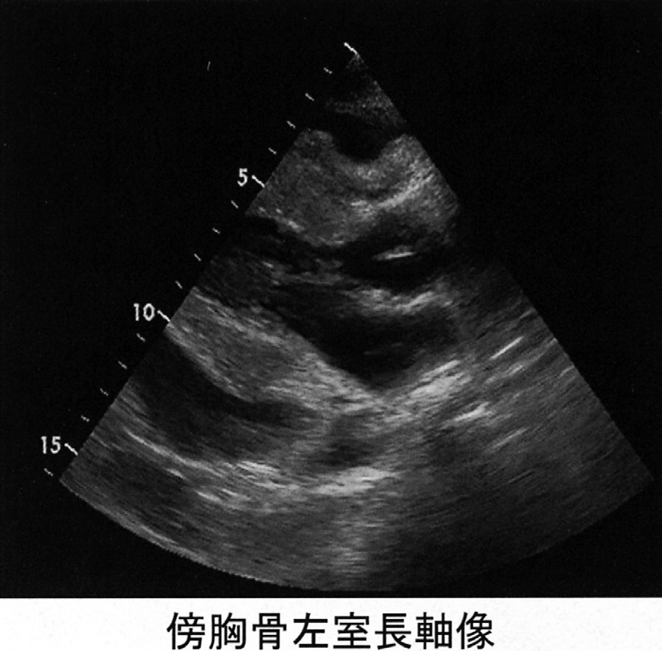
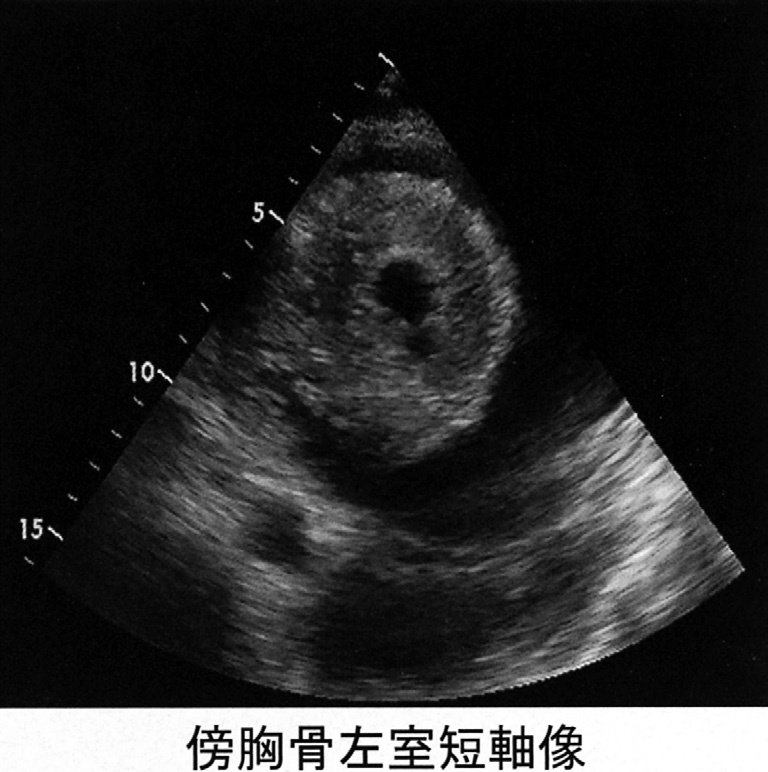
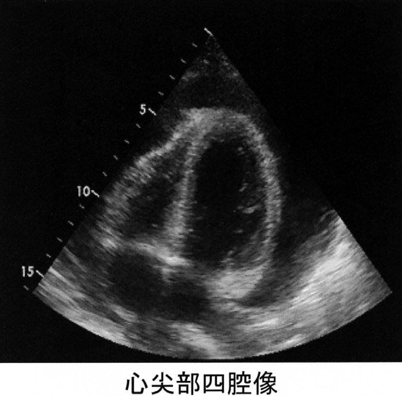
ａ 奇 脈
ｂ 頻 脈
ｃ 肝腫大
ｄ 高血圧
ｅ 頸静脈怒張
✅
ｄ 高血圧
悪性心嚢液貯留（心タンポナーデ）：低血圧（心拍出量↓）・頻脈・奇脈・頸静脈怒張・肝腫大はあり得る。高血圧は心タンポナーデでは起こらない。
❤️ 心タンポナーデの血行動態——「入らない」から「出せない」
心タンポナーデは心嚢内圧の上昇によって心室の拡張期充満が制限される病態である。心筋の収縮力は保たれている——問題は「出す力」ではなく「入る量」にある。この一点を押さえると、すべての所見が導ける。| 段階 | 起こること | 現れる所見 |
|---|---|---|
| ①心嚢内圧上昇 | 心膜は伸展性に乏しい | 心音減弱・心電図の低電位 |
| ②静脈還流の障害 | 右房へ血液が戻れない | 頸静脈怒張・肝腫大・浮腫 |
| ③心室充満の低下 | 前負荷が減る | 一回拍出量の低下 |
| ④代償 | 交感神経の緊張 | 頻脈・末梢血管収縮（四肢冷感） |
| ⑤代償の破綻 | 心拍出量が維持できない | 低血圧・脈圧狭小化・意識障害・ショック |
| ⑥心室相互依存 | 吸気で右室が中隔を左へ押す | 奇脈 |
診断はベッドサイドの心エコーが最強の武器である：
①心嚢液の存在（エコーフリースペース）
②右房の収縮期虚脱・右室の拡張期虚脱——圧の低い右心系から潰れる。最も鋭敏な所見
③下大静脈の拡張と呼吸性変動の消失——中心静脈圧上昇の反映
④僧帽弁・三尖弁流入速度の過大な呼吸性変動——奇脈のドプラ版
⑤swinging heart——心臓が液体の中で振り子のように揺れる。電気的交互脈の原因
胸部エックス線のフラスコ状心陰影は250mL以上たまって初めて出る「遅い」所見で、急性の外傷性タンポナーデでは正常のことも多い。本例は「収縮期の心エコー図（A，B，C）」が提示されており、心嚢液と右心系の虚脱を読ませる意図がある。
□ 選択肢の検討
| 選択肢 | 解説 |
|---|---|
| ａ 奇 脈 | 認められる（可能性が高い）。奇脈〈pulsus paradoxus〉は吸気時に収縮期血圧が10mmHgを超えて低下する現象で、心タンポナーデの最も特徴的な身体所見である。機序は心室相互依存〈ventricular interdependence〉——吸気で胸腔内圧が下がると静脈還流が増えて右室が拡張するが、心嚢という硬い袋に閉じ込められているため逃げ場がなく、心室中隔が左室側へ押される。その結果、左室の充満が減って一回拍出量が落ちる。正常でも吸気時に収縮期血圧はわずかに下がるが、10mmHgを超えるのは病的。奇脈は「脈が消える」のではなく「吸気で弱くなる」——血圧計のカフを緩めながら、Korotkoff音が呼気だけで聞こえる圧と全周期で聞こえる圧の差を測って定量する。収縮性心膜炎・重症喘息・COPDの増悪でも見られる。 |
| ｂ 頻 脈 | 認められる（可能性が高い）。心タンポナーデでは心室の拡張が妨げられて一回拍出量が低下する——心拍出量＝一回拍出量×心拍数なので、身体は心拍数を上げることで拍出量の低下を代償しようとする。交感神経の緊張により頻脈・末梢血管収縮・心収縮力増強が起こるのが典型的な代償反応で、頻脈はタンポナーデでほぼ必発である。逆に「タンポナーデなのに徐脈」があれば、それは代償が破綻した前終末期の徴候で、心停止が切迫している。またβ遮断薬を内服している患者では代償性頻脈が現れず、重症度を過小評価する危険がある。本例は乳癌の心膜転移による悪性心嚢液貯留で、3週間かけて進行した典型的な提示である。 |
| ｃ 肝腫大 | 認められる（可能性が高い）。心タンポナーデでは右房への還流が妨げられて中心静脈圧が上昇する——この圧は下大静脈を経て肝静脈へ伝わり、肝がうっ血して腫大する。いわゆる「うっ血肝」で、右季肋部の鈍痛・圧痛を伴い、肝逸脱酵素の軽度上昇や間接ビリルビンの上昇を来す。肝頸静脈逆流〈hepatojugular reflux〉——右季肋部を10秒以上圧迫すると頸静脈の怒張が増強する所見も陽性になる。長期化すればうっ血性肝硬変（心臓性肝硬変）へ進むが、これは収縮性心膜炎のように年単位で経過する病態でより典型的である。体循環のうっ血所見（頸静脈怒張・肝腫大・浮腫・腹水）は、右心系の充満障害に共通する。 |
| ◯ ｄ 高血圧 | これが正解＝可能性が低い。心タンポナーデの血行動態の本質は「心室が拡張できない → 一回拍出量が減る → 心拍出量が低下する」——すなわち低血圧に向かう病態である。Beck三徴の第一項がまさに「低血圧」であり、高血圧は病態と正反対である。さらに脈圧も狭小化する——一回拍出量の低下で収縮期血圧が下がり、代償性の末梢血管収縮で拡張期血圧が保たれるためで、「収縮期と拡張期の差が縮まる」のがタンポナーデの血圧の特徴である。ただし例外として、もともと高血圧症のある患者や、腎不全・褐色細胞腫を合併する場合には「見かけ上正常〜高値の血圧」でタンポナーデを来すことがある（低血圧性タンポナーデに対して高血圧性タンポナーデと呼ぶ）。それでも「その患者の平常時より血圧が下がっている」ことに変わりはなく、可能性が低い所見であることは動かない。 |
| ｅ 頸静脈怒張 | 認められる（可能性が高い）。頸静脈怒張は中心静脈圧（＝右房圧）の上昇を体表から読んだ所見で、Beck三徴の一つである。心タンポナーデでは心嚢内圧が右房圧と等値化するまで上昇するため、頸静脈は必ずといってよいほど怒張する。観察法は上半身を45度挙上し、胸骨角から拍動の頂点までの垂直距離を測る（4cmを超えれば上昇）。ただし出血や脱水を合併して血管内容量が極端に少ない場合（低容量性タンポナーデ）には、頸静脈怒張が現れないことがある——外傷例では要注意である。頸静脈波形では、収縮期のx谷が保たれ拡張期のy谷が消失するのがタンポナーデの特徴（収縮性心膜炎では両方が深くなりM字型になる）。 |
🔍 心嚢液の原因と、収縮性心膜炎との対比
①心嚢液貯留の原因：| 分類 | 具体例 | |
|---|---|---|
| 悪性腫瘍 | 肺癌・乳癌・悪性リンパ腫・白血病・悪性黒色腫（心膜転移。血性のことが多い） | |
| 感染 | ウイルス性（Coxsackie）・細菌性（膿性）・結核性 | |
| 自己免疫 | 全身性エリテマトーデス・関節リウマチ・強皮症・Dressler症候群 | |
| 代謝 | 尿毒症・甲状腺機能低下症（粘液水腫） | |
| 外傷・医原性 | 胸部外傷・心臓カテーテル・アブレーション・ペースメーカリード・心臓手術後 | |
| 血管 | 大動脈解離の心嚢内破裂・心筋梗塞後の心破裂（いずれも穿刺禁忌） |
②収縮性心膜炎との対比——どちらも「心室が拡張できない」病態だが、成り立ちが違う：
| 心タンポナーデ | 収縮性心膜炎 | |
|---|---|---|
| 本体 | 心嚢内の液体による圧迫 | 肥厚・石灰化した心膜による拘束 |
| 経過 | 急性〜亜急性 | 慢性（年単位） |
| 充満の障害 | 拡張期の全体 | 拡張期の途中から（初期は入る） |
| 頸静脈波形 | x谷が保たれy谷が消失 | x谷もy谷も深い（M字型・急峻なy下降） |
| Kussmaul徴候 | 通常なし | あり（吸気で頸静脈怒張が増強） |
| 奇脈 | あり | 通常なし〜軽度 |
| 心尖拍動 | 触れにくい | 心膜ノック音〈pericardial knock〉 |
| 圧波形 | 拡張期圧の等値化 | dip and plateau〈平方根徴候〉 |
| 治療 | 心嚢穿刺・ドレナージ | 心膜切除術 |
🎯 国試ポイント
① 心タンポナーデでは高血圧にならない——心拍出量が低下する病態なので低血圧＋脈圧狭小化。② Beck三徴＝低血圧・頸静脈怒張・心音減弱。ただし3つ揃わないことも多く、頻脈と奇脈のほうが高頻度。
③ 奇脈＝吸気時に収縮期血圧が10mmHg超低下。機序は心室相互依存（吸気で右室が中隔を左へ押す）。
④ 心エコーで最も鋭敏なのは右房の収縮期虚脱・右室の拡張期虚脱。下大静脈は拡張し呼吸性変動が消える。
⑤ フラスコ状心陰影は250mL以上で初めて出る遅い所見。急性外傷例では正常のことも多い。
⑥ 乳癌・肺癌は心膜転移の二大原因。悪性心嚢液は血性が多く再貯留しやすい。
⑦ 頸静脈波形：タンポナーデはy谷が消失、収縮性心膜炎はx谷もy谷も深いM字型。
⑧ Kussmaul徴候（吸気で頸静脈怒張が増強）は収縮性心膜炎にあり、タンポナーデには通常ない。
⑨ β遮断薬内服中や低容量では、頻脈・頸静脈怒張が現れず重症度を過小評価する。
Q.423(107A-32)📷 画像正答率 98%
42 歳の女性。発熱を主訴に来院した。1 週前から発熱を認め自宅近くの診療所で感冒薬と解熱薬とを処方されたが、
改善しないため受診した。身長162cm、体重48kg。体温38.6℃。脈拍96/ 分、整。血圧98/42mmHg。呼吸数15/ 分。
聴診で拡張期灌水様〈拡張早期性〉雑音を認める。血液所見：赤血球468 万、Hb 13.9g/dl、Ht 42％、白血球17,300（桿状核好中球12％、分葉核好中球70％、好酸球1％、好塩基球1％、単球6％、リンパ球10％）、血小板12 万、PT 84％（基準80 ～120）。血液生化学所見：総ビリルビン0.9mg/dl、尿素窒素12mg/dl、クレアチニン0.6mg/dl、AST 28IU/l、
ALT 16IU/l、LD 377IU/l。CRP 3.6mg/dl。心エコー図を示す。
この患者の合併症として最も留意すべきなのはどれか。
改善しないため受診した。身長162cm、体重48kg。体温38.6℃。脈拍96/ 分、整。血圧98/42mmHg。呼吸数15/ 分。
聴診で拡張期灌水様〈拡張早期性〉雑音を認める。血液所見：赤血球468 万、Hb 13.9g/dl、Ht 42％、白血球17,300（桿状核好中球12％、分葉核好中球70％、好酸球1％、好塩基球1％、単球6％、リンパ球10％）、血小板12 万、PT 84％（基準80 ～120）。血液生化学所見：総ビリルビン0.9mg/dl、尿素窒素12mg/dl、クレアチニン0.6mg/dl、AST 28IU/l、
ALT 16IU/l、LD 377IU/l。CRP 3.6mg/dl。心エコー図を示す。
この患者の合併症として最も留意すべきなのはどれか。
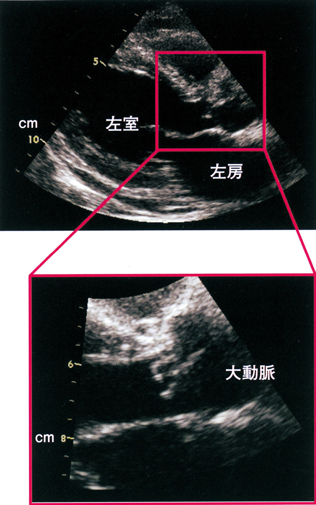
ａ 肺線維症
ｂ 脳塞栓症
ｃ 肺血栓塞栓症
ｄ 急性腎盂腎炎
ｅ 亜急性甲状腺炎
✅
ｂ 脳塞栓症
IE（大動脈弁疣贅）→塞栓症→脳塞栓症が最多かつ最も重篤（死亡・後遺症）。
❤️ 大動脈弁の感染性心内膜炎——脈圧開大が語ること
本例の身体所見のうち、最も情報量が多いのは「拡張期灌水様〈拡張早期性〉雑音」と「血圧98/42mmHg」の組み合わせである。①拡張期灌水様雑音＝大動脈弁閉鎖不全〈AR〉——Ⅱ音の直後から始まり、拡張期を通じて減衰していく高調で吹くような雑音。第3肋間胸骨左縁（Erb領域）で、坐位・前傾・呼気終末に最もよく聴取される。大動脈内圧と左室拡張期圧の差（＝逆流の駆動圧）が拡張期を通じて減っていくため、雑音も減衰する。
②脈圧の開大（98−42＝56mmHg）——拡張期に血液が左室へ逆流して大動脈内の血液が減るため拡張期血圧が下がり、次の収縮で「本来の拍出量＋逆流分」を一気に押し出すため収縮期血圧が上がる。結果として脈圧が開大し、末梢では「急速に立ち上がり急速に消える脈」＝Corrigan脈〈水槌脈〉が触れる。ARの末梢徴候——de Musset徴候（拍動に合わせた頭の揺れ）・Quincke徴候（爪床の毛細血管拍動）・Traube徴候（大腿動脈のピストル音）・Duroziez徴候（大腿動脈の圧迫で往復雑音）・Müller徴候（口蓋垂の拍動）。
③急性ARは慢性ARとまったく違う：
| 急性AR（IE・大動脈解離） | 慢性AR | |
|---|---|---|
| 左室 | 拡大する時間が無い | 遠心性肥大で著明に拡大 |
| 左室拡張末期圧 | 急激に上昇 | 代償される |
| 脈圧 | 開大しないことがある | 著明に開大 |
| 症状 | 急性肺水腫・心原性ショック | 無症状の期間が長い |
| 治療 | 緊急手術 | 症状か左室機能低下が出たら手術 |
□ 選択肢の検討
| 選択肢 | 解説 |
|---|---|
| ａ 肺線維症 | 関係がない。肺線維症は間質の線維化により拘束性換気障害と拡散障害を来す疾患群で、特発性肺線維症・膠原病関連・薬剤性（ブレオマイシン・アミオダロン・メトトレキサート）・じん肺・放射線などが原因となる——感染性心内膜炎の合併症としては生じない。経過も合わない——肺線維症は月〜年単位で緩徐に進行するのに対し、本例は1週間の経過の急性期の患者である。身体所見の面でも、肺線維症なら両側背部下肺野の吸気終末の細かい断続性ラ音〈fine crackles〉・ばち指・労作時低酸素血症が出るはずだが、本例にその記載は無い。選択肢が「肺」に向かっているのに対し、本例の病巣は「大動脈弁」である。 |
| ◯ ｂ 脳塞栓症 | これが正解。本例は①1週間続く38.6℃の発熱 ②感冒薬・解熱薬で改善しない ③拡張期灌水様〈拡張早期性〉雑音＝大動脈弁閉鎖不全 ④血圧98/42mmHgと脈圧の開大（56mmHg）＝大動脈弁逆流を裏づける ⑤白血球17,300と好中球優位の左方移動 ⑥CRP 3.6mg/dL ⑦心エコー図が提示されている——大動脈弁の感染性心内膜炎である。左心系（大動脈弁・僧帽弁）の疣贅は体循環へ飛ぶ——その最大かつ最重篤の行き先が脳である。IEの塞栓症のうち脳が最多で、神経合併症は20〜40%に及び、死亡率と後遺症を最も強く規定する。さらに感染性脳動脈瘤が破裂すればくも膜下出血・脳内出血となり致死的である。だからこそ「診断を急ぎ、適切な抗菌薬を直ちに始める」ことが最優先になる——治療開始後2週間で塞栓リスクは急速に低下する。 |
| ｃ 肺血栓塞栓症 | この病態では起こりにくい。肺血栓塞栓症は下肢深部静脈血栓が右心系を通って肺動脈へ詰まる病態で、長期臥床・術後・悪性腫瘍・妊娠・経口避妊薬・凝固異常を背景に生じる——本例にこれらの危険因子の記載は無い。また感染性心内膜炎の塞栓は「疣贅のある弁の下流」へ飛ぶという原則がある——大動脈弁・僧帽弁（左心系）の疣贅は体循環へ、三尖弁・肺動脈弁（右心系）の疣贅は肺へ飛ぶ。本例は拡張期灌水様雑音＝大動脈弁閉鎖不全なので左心系であり、肺への塞栓は起こらない。右心系IEは静注薬物使用者・中心静脈カテーテル・血液透析・ペースメーカリードに関連して起こり、敗血症性肺塞栓（多発する結節影と空洞）を来す。 |
| ｄ 急性腎盂腎炎 | 主要な合併症ではない。急性腎盂腎炎は上行性の尿路感染で、発熱・悪寒戦慄・肋骨脊柱角の叩打痛・膿尿を伴う——本例に尿路症状の記載は無い。ただしIEと腎の関係は重要で、2つの経路がある：①腎梗塞——疣贅の塞栓による。側腹部痛と肉眼的血尿を来す血管現象。②免疫複合体性の糸球体腎炎——血尿・蛋白尿・低補体血症を来す免疫学的現象で、修正Duke基準の小基準に含まれる。いずれも「上行性感染としての腎盂腎炎」とはまったく別の機序である。脳塞栓と比べれば、生命予後・機能予後への影響はいずれもはるかに小さい——「最も留意すべき」という設問の問いに対しては答えにならない。 |
| ｅ 亜急性甲状腺炎 | 関係がない。亜急性甲状腺炎はウイルス感染を契機とする甲状腺の炎症で、前頸部の有痛性腫脹（放散痛を伴う）・発熱・一過性の甲状腺中毒症・赤沈亢進・CRP上昇を来す——本例に甲状腺の腫大や圧痛の記載は無い。たしかに「発熱＋炎症反応上昇＋原因不明」という点では不明熱の鑑別に挙がる疾患だが、本例は拡張期灌水様雑音という決定的な心臓の所見があり、心エコー図まで提示されている。甲状腺中毒症では頻脈と脈圧開大を来すため、大動脈弁閉鎖不全と血行動態が一部似る——ここが引っかけの意図と思われる。しかし亜急性甲状腺炎は自然軽快する疾患で、「最も留意すべき合併症」を問う設問の答えにはなり得ない。 |
🔍 IEの神経合併症——最も予後を左右する
①頻度と内訳——IEの20〜40%に神経合併症が起こり、IEの死亡と後遺症の最大の原因である：| 合併症 | 特徴 |
|---|---|
| 脳塞栓（虚血性脳梗塞） | 最多。中大脳動脈領域に多い。約半数は診断前に発症 |
| 脳出血・くも膜下出血 | 感染性脳動脈瘤の破裂／出血性梗塞への転化。致死率が高い |
| 化膿性髄膜炎 | 黄色ブドウ球菌・肺炎球菌のIEで |
| 脳膿瘍 | 多発することが多い |
| 中毒性脳症 | 意識障害・せん妄。画像で説明できない |
③脳梗塞で発症するIEの見つけ方——若年者・多発する梗塞（複数血管領域）・発熱を伴う・心雑音がある・炎症反応上昇・塞栓源が不明という条件が揃ったら、脳梗塞の原因としてIEを積極的に疑い、血液培養と心エコーを行う。これを見落として抗血栓療法だけを行うと、感染は制御されないまま脳出血のリスクだけが上がる。
④手術のタイミングという難問：
| 神経学的状態 | 方針 |
|---|---|
| 無症候性の塞栓・一過性脳虚血発作 | 手術を遅らせない |
| 軽症〜中等症の脳梗塞（出血なし） | 手術適応があれば早期に（数日以内でも可） |
| 大きな脳梗塞・出血性梗塞・脳出血 | 原則4週間程度待つ（人工心肺のヘパリン化で出血が拡大する） |
| 昏睡 | 予後不良。手術の適応を慎重に判断 |
🎯 国試ポイント
① 大動脈弁のIEで最も留意すべき合併症は脳塞栓症——左心系の疣贅は体循環へ飛び、脳が最多。② 左心系（大動脈弁・僧帽弁）→ 体循環へ塞栓／右心系（三尖弁）→ 肺へ塞栓（敗血症性肺塞栓）。
③ 拡張期灌水様雑音＝大動脈弁閉鎖不全。第3肋間胸骨左縁、坐位前傾・呼気終末で最強。
④ 脈圧開大（本例56mmHg）はARの裏づけ。Corrigan脈・de Musset徴候・Quincke徴候などの末梢徴候。
⑤ 急性ARでは脈圧が開大しないことがある——左室が拡大する時間がなく、急性肺水腫・ショックになる。
⑥ IEの神経合併症は20〜40%で、死亡と後遺症の最大の原因。約半数は診断前に発症している。
⑦ 若年・多発梗塞・発熱・心雑音・塞栓源不明の脳梗塞ではIEを疑う。血液培養と心エコーを。
⑧ 脳出血・出血性梗塞があれば手術は原則4週間待つ。無症候・軽症なら早期手術を遅らせない。
⑨ IEによる急性ARで肺水腫・ショックなら、感染制御を待たず緊急手術（手術適応の第一項は心不全）。
Q.424(107A-33)📷 画像正答率 64%
50 歳の男性。胸痛を主訴に来院した。数日前から風邪気味であったが、昨日から左前胸部痛が出現した。痛みは数時間続くことがあり、深吸気時と仰臥位とで増強する。意識は清明。身長170cm、体重67kg。体温36.9℃。脈拍84/ 分、整。血圧140/84mmHg。聴診で収縮期と拡張期とに高調な心雑音を聴取する。呼吸音に異常を認めない。血液所見：赤血球456 万、Hb 14.5g/dl、Ht 44％、白血球8,900、血小板20 万。CRP 4.5mg/dl。胸部エックス線写真に異常を認めない。心電図を示す。心エコー検査では左室の拡大はなく壁運動に異常を認めないが、左室後壁の背側にエコーフリースペースをわずかに認める。
治療薬として適切なのはどれか。
治療薬として適切なのはどれか。

ａ 免疫抑制薬
ｂ カルシウム拮抗薬
ｃ アンジオテンシン変換酵素阻害薬
ｄ 非ステロイド性抗炎症薬〈NSAIDs〉
ｅ t-PA〈組織プラスミノゲンアクチベーター〉
✅
ｄ 非ステロイド性抗炎症薬〈NSAIDs〉
急性心膜炎（ウイルス性）：NSAIDs+コルヒチンが標準治療。ステロイドは再発リスク↑で避ける。
❤️ 急性心膜炎——診断は「4つのうち2つ」
急性心膜炎の診断は次の4項目のうち2項目以上で行う（欧州のガイドライン）：①胸膜炎様の胸痛——鋭く、深吸気・咳・仰臥位で増悪し、坐位で前傾すると軽快する（本例が満たす）
②心膜摩擦音〈pericardial friction rub〉——ざらざらとした高調な音で、心房収縮期・心室収縮期・拡張早期の3相性。坐位前傾・呼気終末で最もよく聴こえるが、日によって出たり消えたりする（本例が満たす）
③心電図変化——広範な誘導の凹型ST上昇とPR低下（本例が満たす）
④新規または増加した心嚢液（本例が満たす）
本例は4項目すべてを満たしており、診断に迷う余地はない。
| 急性心膜炎 | ST上昇型心筋梗塞 | |
|---|---|---|
| 胸痛の性状 | 鋭い・数時間〜数日持続・体位と呼吸で変化 | 圧迫感・20分以上持続・体位や呼吸で変わらない |
| ST上昇の範囲 | 広範（ほぼ全誘導） | 責任血管に対応した限局した誘導 |
| ST上昇の形 | 凹型〈concave〉 | 凸型〈convex・tombstone〉 |
| 対側性変化 | なし（aVRを除く） | あり |
| PR部分 | 低下（aVRでは上昇） | 変化なし |
| 異常Q波 | 出ない | 出る |
| 壁運動異常 | なし | あり |
| トロポニン | 正常〜軽度上昇（心筋も侵されれば上昇） | 高度に上昇 |
| 治療 | NSAIDs＋コルヒチン | 再灌流療法（PCI・血栓溶解） |
原因——先進国では80〜90%が特発性またはウイルス性（Coxsackie B・エコー・アデノ・インフルエンザ）。その他結核（開発途上国では最多）・細菌性（膿性）・尿毒症・悪性腫瘍・膠原病・心筋梗塞後（早期のepistenocardiac／晩期のDressler症候群）・放射線・薬剤・心臓手術後。
□ 選択肢の検討
| 選択肢 | 解説 |
|---|---|
| ａ 免疫抑制薬 | 適応がない。免疫抑制薬（アザチオプリン・メトトレキサート・シクロホスファミドなど）は膠原病・血管炎・自己免疫疾患・臓器移植後に用いる——心膜炎の領域ではステロイド依存性の再発性心膜炎や全身性エリテマトーデス・関節リウマチに伴う心膜炎で選択肢に上がるが、それは標準治療が奏効しなかった後の話である。本例は「数日前から風邪気味」という上気道感染に続発したウイルス性（または特発性）急性心膜炎の初発で、まず標準治療を行うのが筋。感染が原因でありうる病態に、最初から免疫を抑える薬を使うのは方向として危険である。また効果発現に数週間を要し、本例のような数日の急性経過には合わない。 |
| ｂ カルシウム拮抗薬 | 適応がない。カルシウム拮抗薬は高血圧・狭心症（とくに冠攣縮性狭心症）・頻脈性不整脈（非ジヒドロピリジン系）に用いる——本例の血圧は140/84mmHgで治療対象となる高血圧ではなく、心膜の炎症に対する抗炎症作用は持たない。胸痛という主訴から狭心症を鑑別に挙げること自体は正しい——しかし本例の胸痛は「数時間続く」「深吸気時と仰臥位で増強する」という胸膜炎様〈pleuritic〉の性状で、労作で誘発され数分で消える狭心症の胸痛とは明確に異なる。さらに心エコーで壁運動異常が無く、左室後壁の背側にエコーフリースペース（＝少量の心嚢液）を認めている——虚血ではなく心膜の病変であることを裏づける。 |
| ｃ アンジオテンシン変換酵素阻害薬 | 適応がない。アンジオテンシン変換酵素阻害薬は高血圧・心不全（左室駆出率低下例の予後改善）・心筋梗塞後の左室リモデリング抑制・糖尿病性腎症に用いる——いずれも本例には該当しない。本例は心エコーで「左室の拡大はなく壁運動に異常を認めない」と明記されており、心筋そのものは侵されていない。これが急性心膜炎の重要な特徴である——心電図で広範なST上昇を認めても、心筋梗塞と違って壁運動異常が出ない。逆に心筋にも炎症が及べば「心筋心膜炎〈myopericarditis〉」となり、トロポニンが上昇し壁運動異常や不整脈が出る——この場合は運動制限がより厳格になる。本例は純粋な心膜炎である。 |
| ◯ ｄ 非ステロイド性抗炎症薬〈NSAIDs〉 | これが正解。本例は①先行する上気道感染 ②数時間続く左前胸部痛 ③深吸気時と仰臥位で増強（＝坐位前傾で軽快する） ④収縮期と拡張期に高調な心雑音＝心膜摩擦音 ⑤CRP 4.5mg/dL ⑥心電図（広範な凹型ST上昇とPR低下） ⑦少量の心嚢液——急性心膜炎の教科書的な提示である。治療の第一選択は非ステロイド性抗炎症薬〈NSAIDs〉＋コルヒチン。NSAIDsはアスピリン（心筋梗塞後ならこちら）またはイブプロフェンを、症状が消えCRPが正常化するまで十分量で用い、その後漸減する。コルヒチンを併用すると再発率がほぼ半減することが複数の無作為化試験で示され、現在は初回から併用することが推奨されている（3か月間）。あわせて胃粘膜保護薬を併用し、症状が消えるまで激しい運動を控える。 |
| ｅ t-PA〈組織プラスミノゲンアクチベーター〉 | 禁忌に近い。t-PA〈組織プラスミノゲンアクチベーター〉はST上昇型心筋梗塞・急性期脳梗塞・広範な肺血栓塞栓症に対する血栓溶解薬である——本例の心電図がST上昇を示すため、ST上昇型心筋梗塞と誤診すればこの選択肢に飛びつく——ここが本問最大の落とし穴である。しかし急性心膜炎に血栓溶解薬を投与すれば、心嚢内へ出血して心タンポナーデを起こしうる。両者の心電図の違い——心膜炎は「広範な誘導（ほぼ全誘導）の凹型ST上昇＋PR低下＋対側性変化なし」、心筋梗塞は「責任冠動脈に対応した限局した誘導の凸型ST上昇＋対側性ST低下＋異常Q波の出現」。さらに心膜炎ではaVRでST低下とPR上昇が見られる。本例は壁運動異常が無く心嚢液がある——心エコーが決定的な鑑別になる。 |
🔍 心電図の4期変化と、治療・予後
①急性心膜炎の心電図は4段階で変化する：| 病期 | 所見 | 時期 |
|---|---|---|
| Ⅰ期 | 広範な凹型ST上昇＋PR低下（aVRではST低下・PR上昇） | 発症〜数日 |
| Ⅱ期 | STが基線へ戻り、T波が平低化 | 1週前後 |
| Ⅲ期 | びまん性のT波陰転 | 2〜3週 |
| Ⅳ期 | 正常化（数週〜数か月。一部は陰性T波が残る） | — |
②治療の実際：
・NSAIDs——イブプロフェン600〜800mgを1日3回、またはアスピリン750〜1000mgを1日3回。症状消失かつCRP正常化まで続け、その後1〜2週かけて漸減
・コルヒチン——0.5mgを1日1〜2回（体重70kg未満なら1回）を3か月。再発率をほぼ半減させるので初回から併用する。副作用は下痢
・副腎皮質ステロイドは第一選択にしない——再発率を上げることが示されているためで、NSAIDsが使えない（腎障害・出血リスク・妊娠後期）場合、膠原病に伴う場合、尿毒症性の場合に限って低用量で用いる
・運動制限——症状が消え検査が正常化するまで（競技者は少なくとも3か月）
・心筋梗塞後の心膜炎ではアスピリンを選ぶ（他のNSAIDsは瘢痕形成を妨げる懸念があるため）
③入院を要する「高リスク」の指標——①38℃を超える発熱 ②亜急性の発症 ③大量の心嚢液・心タンポナーデ ④NSAIDsが1週間効かない ⑤心筋心膜炎（トロポニン上昇） ⑥免疫抑制状態 ⑦外傷 ⑧経口抗凝固薬内服中。これらが無ければ外来で治療できる。
④予後と合併症——特発性・ウイルス性の予後は良好だが、15〜30%が再発する（コルヒチンを使わない場合）。収縮性心膜炎への進行は特発性・ウイルス性では1%未満と稀で、結核性・細菌性（膿性）・放射線後では20〜30%と高い。つまり「原因が何か」が長期予後を決める——本例のようなウイルス性であれば、NSAIDsとコルヒチンで治り切る。
🎯 国試ポイント
① 急性心膜炎の治療はNSAIDs＋コルヒチン。コルヒチンは再発率をほぼ半減させるので初回から3か月併用。② ステロイドは第一選択にしない——再発率を上げる。NSAIDs不可・膠原病・尿毒症性に限る。
③ 診断は4項目のうち2つ＝胸膜炎様胸痛・心膜摩擦音・広範な凹型ST上昇とPR低下・新規の心嚢液。
④ 胸痛は深吸気・仰臥位で増悪し、坐位前傾で軽快——狭心症との決定的な違い。
⑤ 心膜炎＝広範な凹型ST上昇・対側性変化なし・PR低下・壁運動異常なし／心筋梗塞＝限局した凸型ST上昇・対側性ST低下・異常Q波・壁運動異常あり。
⑥ 誤ってt-PAを投与すると心嚢内出血からタンポナーデ——「ST上昇＝即再灌流」の反射が最も危険な場面。
⑦ 心電図は4期変化（ST上昇→T平低化→T陰転→正常化）。aVRではST低下とPR上昇。
⑧ 先進国では80〜90%が特発性・ウイルス性で予後良好。収縮性心膜炎への進行は1%未満。
⑨ 結核性・細菌性・放射線後では収縮性心膜炎へ20〜30%が進行する。
⑩ トロポニン上昇＋壁運動異常なら心筋心膜炎——運動制限がより厳格になる。
Q.425(107I-56)正答率 57%
51 歳の男性。労作時の息苦しさを主訴に来院した。半年前に全身倦怠感と微熱とが出現したため自宅近くの診療所を受診した。外来検査で赤沈亢進、白血球増加および高γ-グロブリン血症を認め、抗菌薬の投与を受けたが改善しなかった。2 か月前から労作時に息苦しさを感じるようになり、増強してきたため紹介され受診した。脈拍92/ 分、
整。血圧120/80mmHg。呼吸音に異常を認めない。座位と仰臥位とで心音に異常を認めないが、左側臥位で心尖部に第Ⅱ音の直後に過剰音を聴取する。胸部エックス線写真と心電図とに異常を認めない。
最も考えられるのはどれか。
整。血圧120/80mmHg。呼吸音に異常を認めない。座位と仰臥位とで心音に異常を認めないが、左側臥位で心尖部に第Ⅱ音の直後に過剰音を聴取する。胸部エックス線写真と心電図とに異常を認めない。
最も考えられるのはどれか。
ａ 心膜炎
ｂ 左房粘液腫
ｃ 僧帽弁狭窄症
ｄ 感染性心内膜炎
ｅ 僧帽弁逸脱症候群
✅
ｂ 左房粘液腫
Tumor plop（拡張早期の腫瘤通過音）+体位変換で変動+半年の発熱・赤沈亢進→左房粘液腫。
❤️ 過剰心音の鑑別——「いつ鳴るか」で疾患が決まる
Ⅰ音・Ⅱ音以外に聴こえる音を過剰心音と呼ぶ。心周期のどこで鳴るかによって、原因はほぼ一意に決まる。| 時相 | 音 | 成り立ち | 代表疾患 |
|---|---|---|---|
| 収縮早期 | 駆出性クリック | 大血管や狭窄弁の急な開放 | 大動脈弁狭窄症・肺動脈弁狭窄症・二尖弁 |
| 収縮中期〜後期 | 非駆出性クリック | 腱索が張り詰めて逸脱が止まる音 | 僧帽弁逸脱症候群 |
| Ⅱ音直後（拡張早期） | 開放音〈opening snap〉 | 硬化した僧帽弁が勢いよく開く音 | 僧帽弁狭窄症 |
| Ⅱ音直後（拡張早期） | tumor plop | 腫瘤が弁口を通過して止まる音。体位で変動 | 左房粘液腫 |
| Ⅱ音直後（やや遅い） | 心膜ノック音 | 硬い心膜で拡張が急停止する音 | 収縮性心膜炎 |
| 拡張早期 | Ⅲ音 | 急速流入期の心室壁の振動 | 心不全・容量負荷（僧帽弁閉鎖不全）・若年健常者 |
| 拡張後期（収縮前期） | Ⅳ音 | 心房収縮で硬い心室へ血液を押し込む音 | 左室肥大・高血圧・肥大型心筋症・虚血 |
左房粘液腫が「動く」ことの臨床的意味——腫瘤は心房中隔の卵円窩から茎で吊り下がっており、重力と血流で位置が変わる。そのため①症状（呼吸困難・失神・めまい）が体位で出没する ②雑音や過剰心音が体位で変わる ③日によって所見が違うという、他の心疾患では説明のつかない「変動性」が生まれる。「所見が日によって、体位によって変わる」と書かれていたら粘液腫を思い出すこと。
□ 選択肢の検討
| 選択肢 | 解説 |
|---|---|
| ａ 心膜炎 | 否定的である。心膜炎の中核は胸膜炎様の胸痛（深吸気・仰臥位で増悪、坐位前傾で軽快）・心膜摩擦音・広範な凹型ST上昇とPR低下・心嚢液である——本例は胸痛の訴えが無く、心電図に異常を認めず、胸部エックス線写真にも異常がない。主訴は「労作時の息苦しさ」で、これは左房から左室への血流が妨げられて肺うっ血が生じていることを示す。収縮性心膜炎であれば右心不全（頸静脈怒張・肝腫大・浮腫・腹水）が主体となり、心膜の石灰化が胸部エックス線で見えることが多い——これも本例には無い。「半年の微熱＋赤沈亢進＋高γグロブリン血症＋抗菌薬無効」という炎症の背景と、体位で現れる過剰心音は、心膜では説明できない。 |
| ◯ ｂ 左房粘液腫 | これが正解。決め手は「座位と仰臥位では心音に異常を認めないが、左側臥位で心尖部に第Ⅱ音の直後に過剰音を聴取する」——体位を変えたときだけ現れる過剰心音である。心腔内で動く有茎性の腫瘤が、ある体位でだけ僧帽弁口へはまり込み、その通過音〈tumor plop〉として聞こえている。これに①半年続く全身倦怠感と微熱 ②赤沈亢進・白血球増加・高γグロブリン血症（＝インターロイキン6による全身炎症反応） ③抗菌薬が無効 ④2か月で進行する労作時呼吸困難（＝弁口の間欠的閉塞による肺うっ血） ⑤心電図と胸部エックス線が正常が加わる。「感染症のような顔をしているのに抗菌薬が効かない」不明熱＋体位で変わる心音＝左房粘液腫。診断は心エコー、治療は準緊急の外科的摘出で、摘出すれば全身症状も検査異常も速やかに消える。 |
| ｃ 僧帽弁狭窄症 | 似ているが否定的である。僧帽弁狭窄症〈MS〉も労作時呼吸困難・拡張期の心尖部雑音・第Ⅱ音の直後の過剰音（開放音〈opening snap〉）を来し、本問で最も紛らわしい選択肢である——しかしMSの狭窄は固定しており、体位で消えたり現れたりしない。またMSはほぼすべてがリウマチ熱の後遺症で、心房細動を高率に合併し、胸部エックス線では左房拡大（左第3弓の突出・第2斜位での食道の圧排）、心電図では僧帽性P波が出る——本例は心電図も胸部エックス線も正常で、これらの構造的変化がまったく無い。そして最大の矛盾は「半年続く微熱と炎症反応」——MSは炎症性疾患ではなく、発熱も高γグロブリン血症も説明できない。 |
| ｄ 感染性心内膜炎 | 否定的である。感染性心内膜炎は「不明熱＋心雑音＋炎症反応上昇」という本例と極めてよく似た提示をとるため、必ず鑑別に挙げるべき疾患である——しかし「抗菌薬の投与を受けたが改善しなかった」という経過が決定的に矛盾する。IEであれば適切な抗菌薬に反応して解熱するのが通常で、反応しない場合は膿瘍形成・耐性菌・真菌などの特別な理由を要する。さらに半年という経過はIEとしては長すぎる——亜急性心内膜炎でも通常は数週間〜数か月で診断がつくか、弁破壊・塞栓で急変する。IEの雑音は弁の逆流によるもので体位で消えることはなく、Osler結節・Janeway病変・爪下線状出血・脾腫といった末梢徴候の記載も無い。 |
| ｅ 僧帽弁逸脱症候群 | 合わない。僧帽弁逸脱症候群〈MVP〉の聴診所見は収縮中期クリックと、それに続く収縮後期雑音である——本例の過剰音は「第Ⅱ音の直後」＝拡張早期であり、時相がまったく違う。MVPの所見は体位で変化する点が本例と共通するが、その変化の仕方が特徴的である——立位やValsalva法で左室容積が減るとクリックと雑音が早く（Ⅰ音に近づき）長くなり、しゃがみ込みや等尺性握力運動で左室容積が増えると遅く短くなる。またMVPは多くが無症状で予後良好であり、半年続く微熱・赤沈亢進・高γグロブリン血症といった全身の炎症を説明できない。過剰心音は「収縮期か拡張期か」を最初に決めることで大半が絞れる。 |
🔍 「不明熱＋高γグロブリン血症」が語ること
①本例の検査所見の組み合わせが持つ意味——赤沈亢進・白血球増加・高γグロブリン血症は、いずれも「持続する炎症」の非特異的な指標である。| 所見 | 何を反映するか |
|---|---|
| 赤沈亢進 | フィブリノゲンとγグロブリンの増加により赤血球が連銭形成しやすくなる。CRPより遅れて上がり、遅れて下がる |
| 白血球増加 | 急性炎症・感染・ストレス |
| 高γグロブリン血症（多クローン性） | B細胞の慢性的な刺激。慢性感染症・自己免疫疾患・肝硬変・悪性腫瘍 |
②IL-6を出す腫瘍という視点——同様に腎細胞癌（発熱・貧血・赤沈亢進）・Castleman病・肝細胞癌もIL-6や類似のサイトカインで全身症状を作る。「不明熱の原因としての腫瘍」は、腫瘍そのものの大きさではなくサイトカインで症状を作っていることを理解しておくと、腫瘍熱の理解が深まる。
③労作時呼吸困難という主訴の読み方——本例では腫瘤が拡張期に僧帽弁口を間欠的に塞ぐため、左房圧が上昇し、肺静脈圧・肺毛細血管圧が上がって肺うっ血を来す。機能的には僧帽弁狭窄症と同じ血行動態だが、「間欠的である」ことが違う。完全に弁口を塞げば心拍出が瞬時に途絶え、失神・突然死に至る——これが粘液腫を準緊急手術とする最大の理由である。診断がついた時点で「様子を見ましょう」という選択肢は存在しない。
🎯 国試ポイント
① 体位で現れたり消えたりする過剰心音・雑音＝心腔内の可動性腫瘤＝左房粘液腫。② tumor plopはⅡ音の直後（拡張早期）。僧帽弁狭窄症の開放音と同じ時相だが、体位で変動する点が違う。
③ 僧帽弁狭窄症はリウマチ熱の後遺症で、心房細動・左房拡大・僧帽性P波を伴う。本例は心電図もXPも正常。
④ 粘液腫はIL-6を産生し、発熱・体重減少・貧血・赤沈亢進・高γグロブリン血症という「膠原病そっくりの全身像」を作る。
⑤ 抗菌薬が効かない不明熱＋心雑音＝粘液腫を疑う。IEなら適切な抗菌薬に反応する。
⑥ 僧帽弁逸脱は収縮中期クリック＋収縮後期雑音。立位・Valsalvaで早く長く、しゃがみ込みで遅く短くなる。
⑦ 過剰心音は「収縮期か拡張期か」でまず絞る。Ⅲ音は容量負荷・心不全、Ⅳ音は硬い心室（肥大・虚血）。
⑧ 粘液腫は診断がついたら準緊急手術。弁口を完全に塞げば突然死する。
Q.426(106I-42)📷 画像正答率 76%
36 歳の男性。発熱と全身倦怠感とを主訴に来院した。4 週前に口蓋扁桃摘出術を受けた。3 週前から悪寒戦慄を伴う37 ～40℃の発熱があり、市販の総合感冒薬を内服しても解熱しなかったため受診した。息苦しさは自覚していない。脈拍100/ 分、整。血圧120/82mmHg。心尖部に収縮期雑音を聴取する。両手掌に2mm 大の小出血斑を認める。
血液所見：赤血球310 万、Hb 11.2g/dl、Ht 30％、白血球15,800、血小板15 万。CRP 10mg/dl。血液培養の結果はまだ分からない。心エコー図を示す。
直ちに開始する治療として適切なのはどれか。
血液所見：赤血球310 万、Hb 11.2g/dl、Ht 30％、白血球15,800、血小板15 万。CRP 10mg/dl。血液培養の結果はまだ分からない。心エコー図を示す。
直ちに開始する治療として適切なのはどれか。

ａ 緊急手術
ｂ 抗菌薬の投与
ｃ 抗ウイルス薬の投与
ｄ 免疫グロブリンの投与
ｅ ステロイドパルス療法
✅
ｂ 抗菌薬の投与
IE（処置後菌血症+発熱持続+心雑音+Janeway病変類似所見）→直ちに抗菌薬投与（血液培養採取後）。
❤️ IEを疑ったら——培養を採って、直ちに抗菌薬
感染性心内膜炎の初期対応は「血液培養を3セット採取 → 直ちに経験的抗菌薬を開始 → 結果が出たら標的治療へ切り替える」という一本道である。培養を採る前に抗菌薬を投与してはならない（起炎菌が同定できなくなる）が、培養結果を待って抗菌薬を遅らせてもならない——この2つを両立させるのが「採ってから、直ちに」である。| 状況 | 経験的治療の考え方 |
|---|---|
| 自己弁・市中発症・亜急性 | アンピシリン＋（クロキサシリン系）＋ゲンタマイシン、またはアンピシリン・スルバクタム＋ゲンタマイシン |
| 自己弁・急性／MRSAのリスクあり | バンコマイシン（±ゲンタマイシン） |
| 人工弁（術後1年以内） | バンコマイシン＋ゲンタマイシン＋リファンピシン |
起炎菌が判明した後の標的治療：
・ペニシリン感受性の緑色連鎖球菌——ペニシリンGまたはセフトリアキソン4週間（ゲンタマイシン併用で2週間に短縮可）
・MSSA——セファゾリンまたは抗ブドウ球菌ペニシリン4〜6週間。バンコマイシンより有効
・MRSA——バンコマイシンまたはダプトマイシン4〜6週間
・腸球菌——アンピシリン＋ゲンタマイシン、またはアンピシリン＋セフトリアキソン4〜6週間。セファロスポリン単剤は無効
いずれも殺菌的な薬を静脈内投与で長期間——疣贅の内部は血流も免疫細胞も届かない「無防備地帯」だからである。
本例の背景を読む——4週前の口蓋扁桃摘出術は、口腔内常在菌（緑色連鎖球菌）による菌血症の典型的な入り口である。「歯科処置・扁桃摘出・口腔内手術の数週間後に始まる不明熱」＝亜急性感染性心内膜炎と反射的に結びつけたい。
□ 選択肢の検討
| 選択肢 | 解説 |
|---|---|
| ａ 緊急手術 | この時点では適応がない。感染性心内膜炎に対する手術適応は①心不全（弁破壊による急性の高度逆流で肺水腫・ショック） ②感染のコントロール不良（弁輪膿瘍・瘻孔・適切な抗菌薬で7〜10日たっても続く菌血症や発熱・真菌や多剤耐性菌） ③塞栓の予防（治療中の再発塞栓・10mm超の可動性疣贅＋塞栓既往）の3本柱である——本例は「息苦しさは自覚していない」「血圧120/82mmHg」で心不全は無く、抗菌薬をまだ一度も投与していないので感染コントロール不良とも判定できない。手術は抗菌薬治療の代わりではなく、抗菌薬で制御できない状況を補うものである。まず内科的治療を始めることが順序として絶対に先——手術の判断はその後の反応を見て行う。 |
| ◯ ｂ 抗菌薬の投与 | これが正解。本例は①4週前の口蓋扁桃摘出術（口腔内の処置＝菌血症の入り口） ②3週間続く悪寒戦慄を伴う37〜40℃の発熱 ③市販薬で解熱しない ④心尖部の収縮期雑音 ⑤両手掌の2mm大の小出血斑＝Janeway病変 ⑥貧血（Hb 11.2g/dL）と白血球15,800・CRP 10mg/dL ⑦心エコー図が提示されている——感染性心内膜炎である。「血液培養の結果はまだ分からない」という一文が本問の核心——培養結果を待って抗菌薬を遅らせてはいけない。正しい手順は「血液培養を3セット採取してから、直ちに経験的抗菌薬を開始する」。理由は①IEは弁破壊・塞栓・敗血症が時間単位で進行しうる ②塞栓リスクは抗菌薬開始後2週間で急速に低下する ③培養結果は1〜3日かかる。結果が出たら感受性に応じて狭域へ切り替える（de-escalation）。 |
| ｃ 抗ウイルス薬の投与 | 適応がない。抗ウイルス薬が意味を持つのはインフルエンザ・単純ヘルペス・水痘帯状疱疹・サイトメガロウイルス・HIV・肝炎ウイルスなど、対応する薬剤が存在する特定のウイルス感染に限られる——本例はウイルス感染を示唆する所見が無い。むしろ白血球15,800と好中球優位の上昇・CRP 10mg/dL・悪寒戦慄を伴う3週間の発熱は細菌感染を強く示唆する——ウイルス感染では白血球はふつう正常〜低値で、リンパ球優位になることが多い。そして「悪寒戦慄〈rigor〉＝ガタガタ震えるほどの寒気」は菌血症を強く示唆する所見である——体温設定点が急激に引き上げられたことを意味し、血流に細菌が入っているサインとして重視する。 |
| ｄ 免疫グロブリンの投与 | 適応がない。免疫グロブリン大量静注療法〈IVIG〉は川崎病・重症筋無力症・Guillain-Barré症候群・慢性炎症性脱髄性多発根神経炎・免疫性血小板減少症・原発性免疫不全症などに用いる——感染性心内膜炎の標準治療ではない。とくに川崎病との鑑別を意識したい——川崎病は乳幼児の疾患で、5日以上の発熱・両側眼球結膜の充血・口唇の紅潮といちご舌・不定形発疹・四肢末端の変化（硬性浮腫、回復期の膜様落屑）・非化膿性頸部リンパ節腫脹を伴い、本例の36歳という年齢と病像がまったく合わない。本例に必要なのは「菌を殺す薬」であって「免疫を調整する薬」ではない。 |
| ｅ ステロイドパルス療法 | 禁忌に近い。副腎皮質ステロイドのパルス療法は免疫を強力に抑制する治療で、活動性の細菌感染がある患者に単独で行えば、感染を増悪させ致命的になりうる。本例はすでに菌血症を来している可能性が極めて高く、心エコーで疣贅が確認できる状態である——ここで免疫を抑えれば、疣贅は増大し、弁破壊と塞栓が加速する。なおステロイドパルス療法が適応となるのは、急速進行性糸球体腎炎・重症の血管炎・多発性硬化症の急性増悪・重症薬疹・視神経炎などである。「発熱＋炎症反応上昇」を見て膠原病を想起し、確定診断の前にステロイドを投与することは、感染症を隠して悪化させる最も危険な誤りの一つである。 |
🔍 悪寒戦慄・Janeway病変・貧血——所見を一つずつ読む
①悪寒戦慄〈rigor〉の重み——「ガタガタ震えて布団をかぶっても寒い」レベルの悪寒は、体温設定点が急激に引き上げられたことを意味し、菌血症の存在を強く示唆する。単なる「寒気」とは区別して問診する——「歯がカチカチ鳴りましたか」「ベッドが揺れるほど震えましたか」と具体的に聞く。悪寒戦慄があれば、その時点で血液培養を採る価値が高い。②「両手掌の2mm大の小出血斑」＝Janeway病変——手掌・足底に生じる無痛性の出血性斑で、疣贅からの微小塞栓による血管現象である。指趾の腹側に生じる有痛性のOsler結節（免疫学的現象）とは、部位・痛み・機序のすべてが異なる。「手掌・足底＝Janeway＝無痛＝塞栓」「指腹＝Osler＝有痛＝免疫」。いずれも修正Duke基準の小基準に含まれる。
③貧血（Hb 11.2g/dL）の意味——慢性疾患に伴う貧血〈anemia of chronic disease〉で、炎症性サイトカイン（IL-6）がヘプシジンを誘導し、腸管からの鉄吸収とマクロファージからの鉄放出を抑えるため、体内に鉄はあるのに使えなくなる。正球性正色素性（進行すれば小球性）・血清鉄低下・総鉄結合能低下・フェリチン正常〜高値で、鉄欠乏性貧血（総鉄結合能が上昇しフェリチンが低下）とは検査で区別できる。IEで3週間の炎症が続けば、貧血が出ていて当然である。
④3つの所見を統合する——口腔内処置（入り口）→ 悪寒戦慄を伴う持続する発熱（菌血症）→ 心雑音（弁の逆流）→ Janeway病変（塞栓）→ 貧血・CRP上昇（慢性炎症）→ 心エコーの疣贅（構造的証拠）。この6点が一本の線でつながったとき、診断は血液培養の結果を待つまでもなく臨床的に確定している。だからこそ「直ちに抗菌薬」が正解になる——検査の結果ではなく、病態の理解が治療開始の根拠である。
🎯 国試ポイント
① IEを疑ったら、血液培養3セットを採取してから直ちに経験的抗菌薬を開始。培養結果を待たない。② 培養前に抗菌薬を投与しない／培養結果を待って抗菌薬を遅らせない——この両立が原則。
③ 手術適応は心不全・感染コントロール不良・塞栓予防の3本柱。抗菌薬を始める前に手術を選ぶことはない。
④ 手掌・足底の無痛性出血斑＝Janeway病変（血管現象）。指趾腹側の有痛性結節＝Osler結節（免疫学的現象）。
⑤ 悪寒戦慄は菌血症を強く示唆する。その場で血液培養を採る。
⑥ 口腔内処置（抜歯・扁桃摘出）の数週間後の不明熱＝亜急性IE。起炎菌は緑色連鎖球菌。
⑦ 活動性の細菌感染にステロイドパルスは禁忌に近い。診断前のステロイドは感染を隠して悪化させる。
⑧ MSSAにはセファゾリン等のβラクタムがバンコマイシンより有効。腸球菌にセファロスポリン単剤は無効。
⑨ 慢性炎症の貧血はヘプシジン上昇による鉄利用障害——血清鉄低下・総鉄結合能低下・フェリチン正常〜高値。
Q.427(105C-30)正答率 97%
連問 1/295 歳の男性。呼吸困難のため搬入された。
現病歴：咳嗽が続くため2 か月前に自宅近くの診療所を受診した。胸部エックス線写真にて肺野に異常陰影を認めた
ため、近くの病院を紹介され、精査の結果、肺腺癌、肺内転移、骨転移および心膜転移と診断された。患者本人や
家族と相談の結果、積極的治療は行わない方針となり、診療所の医師が主治医となって自宅で療養していた。昨日
から呼吸困難が出現し、今朝になって増強したため、主治医に相談した上で、救急車を要請した。
既往歴：7 年前に心筋梗塞。
生活歴：息子夫婦、孫2 人との5 人暮らし。喫煙は20 本/ 日を20 歳から50 年間継続した後、禁煙している。飲酒
は機会飲酒。
家族歴：特記すべきことはない。
現 症：意識は清明。身長160cm、体重52kg。体温37.5℃。呼吸数32/ 分、努力様。脈拍120/ 分、整。血圧
72/40mmHg。経皮的動脈血酸素飽和度〈SpO2〉88％。頸静脈の怒張を認める。心音に異常を認めない。両側肺底
部にcoarse crackles を聴取する。腹部は平坦、軟で、肝・脾を触知しない。両側下腿に浮腫を認める。
検査所見：血液所見：赤血球385 万、Hb 11.0g/dl、Ht 36％、白血球9,500、血小板22 万。血液生化学所見：血糖
86mg/dl、総蛋白5.4g/dl、アルブミン2.6g/dl、尿素窒素24mg/dl、クレアチニン1.1mg/dl、AST 24IU/l、ALT
40IU/l、LD 322IU/l（基準176 ～353）、ALP 158IU/l（基準115 ～359）、Na 142mEq/l、K 4.2mEq/l、Cl 101mEq/l。
CRP 1.2mg/dl。胸部エックス線写真では原発巣の増大、心陰影の拡大および胸水の貯留を認める。心電図では洞
性頻脈と低電位とを認める。
次に行う検査として適切なのはどれか。
現病歴：咳嗽が続くため2 か月前に自宅近くの診療所を受診した。胸部エックス線写真にて肺野に異常陰影を認めた
ため、近くの病院を紹介され、精査の結果、肺腺癌、肺内転移、骨転移および心膜転移と診断された。患者本人や
家族と相談の結果、積極的治療は行わない方針となり、診療所の医師が主治医となって自宅で療養していた。昨日
から呼吸困難が出現し、今朝になって増強したため、主治医に相談した上で、救急車を要請した。
既往歴：7 年前に心筋梗塞。
生活歴：息子夫婦、孫2 人との5 人暮らし。喫煙は20 本/ 日を20 歳から50 年間継続した後、禁煙している。飲酒
は機会飲酒。
家族歴：特記すべきことはない。
現 症：意識は清明。身長160cm、体重52kg。体温37.5℃。呼吸数32/ 分、努力様。脈拍120/ 分、整。血圧
72/40mmHg。経皮的動脈血酸素飽和度〈SpO2〉88％。頸静脈の怒張を認める。心音に異常を認めない。両側肺底
部にcoarse crackles を聴取する。腹部は平坦、軟で、肝・脾を触知しない。両側下腿に浮腫を認める。
検査所見：血液所見：赤血球385 万、Hb 11.0g/dl、Ht 36％、白血球9,500、血小板22 万。血液生化学所見：血糖
86mg/dl、総蛋白5.4g/dl、アルブミン2.6g/dl、尿素窒素24mg/dl、クレアチニン1.1mg/dl、AST 24IU/l、ALT
40IU/l、LD 322IU/l（基準176 ～353）、ALP 158IU/l（基準115 ～359）、Na 142mEq/l、K 4.2mEq/l、Cl 101mEq/l。
CRP 1.2mg/dl。胸部エックス線写真では原発巣の増大、心陰影の拡大および胸水の貯留を認める。心電図では洞
性頻脈と低電位とを認める。
次に行う検査として適切なのはどれか。
ａ 心臓カテーテル検査
ｂ 経胸壁心エコー検査
ｃ 気管支鏡検査
ｄ 呼吸機能検査
ｅ 縦隔鏡検査
✅
ｂ 経胸壁心エコー検査
肺腺癌の心膜転移＋低血圧・頸静脈怒張・心陰影拡大・心電図の低電位→心タンポナーデを疑う。ベッドサイドで非侵襲的に心嚢液と右心系の虚脱を確認できる経胸壁心エコーが第一選択。
❤️ 終末期がん患者の急な呼吸困難——鑑別と検査の選び方
担がん患者が急に呼吸困難を訴えたとき、「がんが進んだから」で片づけてはいけない——治療可能な原因が隠れていることが多い。| 原因 | 手がかり | 対応 |
|---|---|---|
| 心タンポナーデ（心膜転移） | 低血圧・頻脈・頸静脈怒張・心音減弱・奇脈・心電図の低電位・心陰影の拡大 | 心嚢ドレナージ |
| 胸水貯留（胸膜転移） | 患側の呼吸音減弱・打診で濁音・声音振盪の低下 | 胸腔穿刺・ドレナージ |
| 肺血栓塞栓症 | 突然発症・胸痛・SpO2低下・Ⅱ音肺動脈成分の亢進・下肢の腫脹 | 抗凝固療法 |
| 上大静脈症候群 | 顔面・上肢の浮腫・頸部から胸壁の静脈怒張 | ステント・放射線 |
| 閉塞性肺炎・気道閉塞 | 片側の呼吸音減弱・喘鳴 | ステント・放射線 |
| 癌性リンパ管症 | 亜急性の進行・両側びまん性の網状影 | 対症療法が中心 |
| 薬剤性肺障害 | 薬歴・両側すりガラス影 | 被疑薬中止・ステロイド |
心電図の低電位（四肢誘導で5mm未満、胸部誘導で10mm未満）は、心臓と電極の間に電気を通しにくいものが介在することを意味する——心嚢液のほか、胸水・高度肥満・気胸・肺気腫・粘液水腫・アミロイドーシスでも生じる。洞性頻脈＋低電位＋心陰影拡大の3点が揃ったら心嚢液を疑う。
□ 選択肢の検討
| 選択肢 | 解説 |
|---|---|
| ａ 心臓カテーテル検査 | 侵襲が大きく、この場面では選ばない。右心カテーテル検査を行えば心嚢内圧と各心腔の拡張期圧の等値化を証明でき、心タンポナーデの診断は確定する——しかしそれは心エコーで得られる情報を、はるかに大きな侵襲と時間をかけて確認しているにすぎない。本例は95歳・血圧72/40mmHg・呼吸数32/分の努力様呼吸・SpO2 88%という不安定な状態で、血管造影室へ搬送して仰臥位を保つこと自体が危険である。心タンポナーデの患者は仰臥位で静脈還流が変化し、鎮静で自発呼吸による胸腔内陰圧が失われると急激に破綻する。また積極的治療を行わない方針の終末期患者に、診断確定のためだけの侵襲的検査を行う理由が無い。 |
| ◯ ｂ 経胸壁心エコー検査 | これが正解。本例は①肺腺癌の心膜転移という診断がすでに付いている ②昨日からの急な呼吸困難 ③血圧72/40mmHgの低血圧 ④脈拍120/分の頻脈 ⑤頸静脈の怒張 ⑥心電図で洞性頻脈と低電位 ⑦胸部エックス線で心陰影の拡大——心タンポナーデを強く疑う組み合わせである。経胸壁心エコーはベッドサイドで数分のうちに、非侵襲的に、繰り返し行える。確認するのは①心嚢液の量と分布 ②右房の収縮期虚脱・右室の拡張期虚脱（最も鋭敏なタンポナーデの所見） ③下大静脈の拡張と呼吸性変動の消失 ④心臓が液中で揺れるswinging heart ⑤左室の収縮能。さらに心嚢穿刺を行う場合の穿刺経路（液が最も厚く、心臓までの距離が短い場所）まで同じ検査で決められる。診断と治療の準備を一度に済ませられる点で、他の選択肢と比較にならない。 |
| ｃ 気管支鏡検査 | 危険であり適応もない。気管支鏡検査は肺野の異常陰影の組織診断・喀痰が採れない肺炎の起炎菌検索・喀血の責任部位の同定・気道異物や中枢気道狭窄の評価で行う——本例は組織診断がすでに付いており（肺腺癌）、治療方針も決定しているため、新たに組織を採る目的が無い。さらにSpO2 88%・呼吸数32/分の努力様呼吸という状態で気管支鏡を挿入すれば、気道が部分的に塞がれて低酸素血症が悪化し、鎮静で呼吸が抑制されて致命的になりうる。「呼吸困難の原因を肺の中に探しにいく」という発想自体が本例では誤りである——呼吸音は両側肺底部のcoarse cracklesのみで、低血圧と頸静脈怒張という循環の所見のほうがはるかに際立っている。 |
| ｄ 呼吸機能検査 | 施行不能である。呼吸機能検査（スパイロメトリー）は患者に最大吸気と最大努力呼出を繰り返してもらう検査で、安定した状態で協力が得られることが前提である——本例は呼吸数32/分の努力様呼吸で、会話すら困難な状態であり、物理的に検査を完遂できない。仮に無理に行えば努力呼出で胸腔内圧が上がり、ただでさえ障害されている静脈還流がさらに減って血圧が低下する。呼吸機能検査は「慢性の呼吸器疾患の病型分類と重症度評価」のための検査であり、急性の呼吸困難の原因検索に用いる検査ではない。急性期に生理学的な負荷をかける検査を選んではいけない。 |
| ｅ 縦隔鏡検査 | まったく適応がない。縦隔鏡検査は全身麻酔下に胸骨上窩を切開し、縦隔リンパ節を生検する外科的手技である——主な目的は肺癌の縦隔リンパ節転移の評価（病期診断）・サルコイドーシスやリンパ腫の組織診断。本例はすでに肺腺癌・肺内転移・骨転移・心膜転移と診断が確定し、積極的治療を行わない方針が本人と家族の合意で決まっている——病期診断を行う臨床的意義が存在しない。加えて95歳・ショックに近い血行動態で全身麻酔をかけることは、それ自体が致命的である。検査は「結果によって次の行動が変わるとき」にだけ行う——この原則に照らせば、本例で縦隔鏡が選ばれることは決してない。 |
🔍 「どの検査を選ぶか」は「その結果で何をするか」で決まる
①検査の選択における3つの問い：Q1 その検査の結果によって、次の行動が変わるか——変わらないなら行う意味がない
Q2 その検査は、患者の現在の状態で安全に完遂できるか——本例では搬送・鎮静・仰臥位の保持がいずれもリスク
Q3 同じ情報を、より小さい侵襲で得られる検査は無いか——右心カテーテルより心エコー
本例では、心エコーだけがこの3つすべてに肯定的に答えられる。
②「積極的治療は行わない方針」の正しい解釈——これは「何もしない」という意味ではない。抗癌治療という「原疾患を叩く治療」を選ばないという意思決定であって、苦痛を取り除く治療（症状緩和）は当然に行われる。心嚢ドレナージは「癌を治す治療」ではなく「呼吸困難という苦痛を取り除く治療」であり、方針と矛盾しない。実際、悪性心嚢液のドレナージは劇的に症状を改善させる代表的な緩和的処置である。「終末期だから検査も処置もしない」という短絡は、患者から取り除けたはずの苦痛を取り除かない過ちになる。
③心エコーで何をどの順に見るか（ショックの患者で）：
| 順 | 見るもの | 分かること |
|---|---|---|
| 1 | 心嚢液の有無 | タンポナーデ（閉塞性ショック） |
| 2 | 左室の収縮 | 心原性ショック |
| 3 | 右室の大きさ（左室との比） | 肺血栓塞栓症（右室拡大・D-shape） |
| 4 | 下大静脈の径と呼吸性変動 | 容量の過不足 |
| 5 | 胸腔（lung sliding・胸水） | 気胸・胸水 |
🎯 国試ポイント
① 担がん患者の低血圧＋頻脈＋頸静脈怒張＋心陰影拡大＋低電位＝心タンポナーデ。次の検査は経胸壁心エコー。② 心エコーは非侵襲・ベッドサイド・即時・反復可能。診断と穿刺経路の決定を同時に行える。
③ 心電図の低電位＝心臓と電極の間に電気を通しにくいものがある（心嚢液・胸水・肥満・気胸・肺気腫・粘液水腫）。
④ 頸静脈怒張があれば「循環血液量減少性」と「血液分布異常性」のショックは除外できる。
⑤ 不安定な患者を検査室へ搬送しない。呼吸機能検査は急性期の原因検索には使えない。
⑥ 「積極的治療を行わない」＝「何もしない」ではない。苦痛を取り除く処置（心嚢ドレナージ）は方針と矛盾しない。
⑦ 検査は「結果で次の行動が変わるとき」に行う。すでに診断と方針が決まっている病期診断（縦隔鏡）に意味は無い。
⑧ ショックの患者にはまずエコー（RUSH）——心嚢液・左室収縮・右室拡大・下大静脈・胸腔の順に数分で見る。
Q.428(105C-31)正答率 46%
連問 2/295 歳の男性。呼吸困難のため搬入された。
現病歴：咳嗽が続くため2 か月前に自宅近くの診療所を受診した。胸部エックス線写真にて肺野に異常陰影を認めた
ため、近くの病院を紹介され、精査の結果、肺腺癌、肺内転移、骨転移および心膜転移と診断された。患者本人や
家族と相談の結果、積極的治療は行わない方針となり、診療所の医師が主治医となって自宅で療養していた。昨日
から呼吸困難が出現し、今朝になって増強したため、主治医に相談した上で、救急車を要請した。
既往歴：7 年前に心筋梗塞。
生活歴：息子夫婦、孫2 人との5 人暮らし。喫煙は20 本/ 日を20 歳から50 年間継続した後、禁煙している。飲酒
は機会飲酒。
家族歴：特記すべきことはない。
現 症：意識は清明。身長160cm、体重52kg。体温37.5℃。呼吸数32/ 分、努力様。脈拍120/ 分、整。血圧
72/40mmHg。経皮的動脈血酸素飽和度〈SpO2〉88％。頸静脈の怒張を認める。心音に異常を認めない。両側肺底
部にcoarse crackles を聴取する。腹部は平坦、軟で、肝・脾を触知しない。両側下腿に浮腫を認める。
検査所見：血液所見：赤血球385 万、Hb 11.0g/dl、Ht 36％、白血球9,500、血小板22 万。血液生化学所見：血糖
86mg/dl、総蛋白5.4g/dl、アルブミン2.6g/dl、尿素窒素24mg/dl、クレアチニン1.1mg/dl、AST 24IU/l、ALT
40IU/l、LD 322IU/l（基準176 ～353）、ALP 158IU/l（基準115 ～359）、Na 142mEq/l、K 4.2mEq/l、Cl 101mEq/l。
CRP 1.2mg/dl。胸部エックス線写真では原発巣の増大、心陰影の拡大および胸水の貯留を認める。心電図では洞
性頻脈と低電位とを認める。
使用する薬剤として適切なのはどれか。
現病歴：咳嗽が続くため2 か月前に自宅近くの診療所を受診した。胸部エックス線写真にて肺野に異常陰影を認めた
ため、近くの病院を紹介され、精査の結果、肺腺癌、肺内転移、骨転移および心膜転移と診断された。患者本人や
家族と相談の結果、積極的治療は行わない方針となり、診療所の医師が主治医となって自宅で療養していた。昨日
から呼吸困難が出現し、今朝になって増強したため、主治医に相談した上で、救急車を要請した。
既往歴：7 年前に心筋梗塞。
生活歴：息子夫婦、孫2 人との5 人暮らし。喫煙は20 本/ 日を20 歳から50 年間継続した後、禁煙している。飲酒
は機会飲酒。
家族歴：特記すべきことはない。
現 症：意識は清明。身長160cm、体重52kg。体温37.5℃。呼吸数32/ 分、努力様。脈拍120/ 分、整。血圧
72/40mmHg。経皮的動脈血酸素飽和度〈SpO2〉88％。頸静脈の怒張を認める。心音に異常を認めない。両側肺底
部にcoarse crackles を聴取する。腹部は平坦、軟で、肝・脾を触知しない。両側下腿に浮腫を認める。
検査所見：血液所見：赤血球385 万、Hb 11.0g/dl、Ht 36％、白血球9,500、血小板22 万。血液生化学所見：血糖
86mg/dl、総蛋白5.4g/dl、アルブミン2.6g/dl、尿素窒素24mg/dl、クレアチニン1.1mg/dl、AST 24IU/l、ALT
40IU/l、LD 322IU/l（基準176 ～353）、ALP 158IU/l（基準115 ～359）、Na 142mEq/l、K 4.2mEq/l、Cl 101mEq/l。
CRP 1.2mg/dl。胸部エックス線写真では原発巣の増大、心陰影の拡大および胸水の貯留を認める。心電図では洞
性頻脈と低電位とを認める。
使用する薬剤として適切なのはどれか。
ａ モルヒネ
ｂ ジアゼパム
ｃ ベラパミル
ｄ ニトログリセリン
ｅ サクシニルコリン
✅
ａ モルヒネ
積極的治療を行わない方針の終末期肺癌。呼吸困難の緩和が目標であり、モルヒネが呼吸困難感そのものを和らげる第一選択薬となる。
❤️ がん患者の呼吸困難——「酸素化」と「苦痛」は別物
呼吸困難〈dyspnea〉は「息が苦しいという主観的な感覚」であり、SpO2や血液ガスといった客観的な数値とは必ずしも一致しない。低酸素血症がなくても強い呼吸困難はあり、逆にSpO2が低くても本人が苦しくないこともある。緩和ケアが治療の対象とするのは「数値」ではなく「苦痛」である。呼吸困難の3つの入力——①化学受容器（低酸素・高二酸化炭素） ②機械受容器（気道・肺・胸壁の伸展、呼吸筋の負荷） ③大脳皮質での「呼吸努力と実際の換気のずれ〈neuromechanical dissociation〉」の認識。オピオイドは主に③と①に働き、「苦しいという知覚」そのものを減らす。
| 介入 | 内容 | 位置づけ |
|---|---|---|
| 原因治療 | 心嚢ドレナージ・胸腔穿刺・気道ステント・輸血・抗菌薬 | 可能なら最優先。効果が最も大きい |
| オピオイド | モルヒネ（経口・皮下・静注） | 呼吸困難の薬物療法の第一選択 |
| 酸素 | 低酸素血症がある場合 | 低酸素がなければ効果は送風と大差ない |
| ベンゾジアゼピン | ジアゼパム・ミダゾラム | 不安が強いときの補助（単独では第一選択でない） |
| ステロイド | デキサメタゾン | 癌性リンパ管症・上大静脈症候群・気道の腫瘍浮腫 |
| 非薬物療法 | 顔面への送風（扇風機）・上体挙上・室温を下げる・呼吸法・不安への傾聴 | 効果が高く副作用が無い。必ず併用する |
モルヒネの使い方——オピオイド未使用なら少量から開始し（経口モルヒネ2.5〜5mgを4時間ごと、または持続皮下注）、効果と副作用を見ながら調節する。腎機能低下例では活性代謝産物〈M6G〉が蓄積するため減量するか、ヒドロモルフォン・オキシコドン・フェンタニルへ変更する。副作用の便秘は必発なので最初から緩下薬を併用、嘔気は数日で耐性ができる。
□ 選択肢の検討
| 選択肢 | 解説 |
|---|---|
| ◯ ａ モルヒネ | これが正解。本例は95歳・肺腺癌の多発転移・積極的治療を行わない方針で在宅療養中という終末期の患者で、目標は「呼吸困難という苦痛を取り除くこと」である。モルヒネは、がん患者の呼吸困難に対して有効性が確立している唯一の薬剤群（オピオイド）である。作用機序は①延髄の呼吸中枢の二酸化炭素に対する感受性を下げ、過剰な呼吸努力を減らす ②中枢での呼吸困難の「感じ方」そのものを和らげる ③静脈系を拡張して前負荷を下げ、肺うっ血を軽減する ④不安・興奮を鎮める。重要なのは「呼吸数を無理に減らす薬」ではなく「息苦しいという苦痛の知覚を減らす薬」だという理解である。適切に用量調節すれば呼吸抑制はまれで、緩和ケアにおける標準治療として推奨されている。 |
| ｂ ジアゼパム | 単独では第一選択にならない。ジアゼパムはベンゾジアゼピン系で抗不安・鎮静・抗けいれん・筋弛緩作用を持つ——呼吸困難そのものを和らげる直接的な作用は乏しく、「呼吸困難に対する第一選択」としての根拠は無い。緩和ケアの実際ではオピオイドを十分に使ってもなお不安・恐怖・パニックが強い場合の補助として併用されることはある。しかし単独では呼吸抑制のリスクだけを負い、苦痛を取る効果は限定的である。さらに高齢者ではベンゾジアゼピンによるせん妄・過鎮静・転倒のリスクが高いことも考慮する——95歳という年齢を踏まえれば、なおさら第一選択にはならない。 |
| ｃ ベラパミル | 禁忌である。ベラパミルは非ジヒドロピリジン系カルシウム拮抗薬で、強い陰性変力作用（心収縮力の低下）と陰性変時作用（心拍数の低下）を持つ——本例は血圧72/40mmHg・脈拍120/分で、この頻脈は心拍出量を保つための必死の代償である。ここでベラパミルを投与すれば、①代償性頻脈を止め ②心収縮力を落とし ③血管を拡張させて、心拍出量と血圧を一気に崩壊させる。心タンポナーデ・心原性ショック・重症心不全では、心拍数を下げる薬と血管を拡張させる薬は原則として禁忌である。「頻脈だから心拍数を下げよう」という反射が最も危険になる場面——その頻脈が代償なのか原因なのかを必ず問うこと。 |
| ｄ ニトログリセリン | 禁忌である。ニトログリセリンは主に静脈系を拡張して前負荷を下げる薬で、急性心不全（血圧が保たれた肺水腫）・狭心症に用いる——本例で問題になっているのは「心室に血液が入らないこと」であり、前負荷はすでに不足している。ここで静脈を拡張させれば、右房へ戻る血液がさらに減り、心拍出量が急落して血圧が破綻する。心タンポナーデにおける輸液が「穿刺までのつなぎ」として一定の意味を持つのと、ちょうど正反対の作用である。同じ理由で、右室梗塞・重症大動脈弁狭窄症・肥大型閉塞性心筋症でも硝酸薬は危険——いずれも「前負荷に依存して拍出を保っている」病態という共通点を持つ。 |
| ｅ サクシニルコリン | まったく適応がない。サクシニルコリンは脱分極性の筋弛緩薬で、気管挿管時の一時的な筋弛緩のためだけに用いる——本例は積極的治療を行わない方針が本人と家族の合意で決まっている終末期患者であり、気管挿管と人工呼吸は方針と正面から矛盾する。そもそも筋弛緩薬は「呼吸を止める薬」であって、意識のある患者に鎮静なしで投与すれば、動けないまま窒息の苦痛を味わわせるという最悪の事態を招く。薬理学的にも熱傷・広範な外傷・長期臥床・神経筋疾患では高カリウム血症から心停止を来す危険があり、悪性高熱症の誘因にもなる。治療の目標（苦痛の緩和）と手段が完全に乖離している。 |
🔍 終末期の意思決定と、「治療のゴール」を言葉にすること
①本例の背景が持つ意味——「患者本人や家族と相談の結果、積極的治療は行わない方針となり」という一文は、本人が参加した意思決定が既に行われていることを示している。これはアドバンス・ケア・プランニング〈ACP〉が機能している状態で、救急の現場で最も価値のある情報である。この一文があるかないかで、同じ病態に対する正解が変わる——国試の問題文で治療方針や本人の意向が書かれていたら、それは必ず答えに関わる。②「積極的治療を行わない」の範囲：
| 行わないもの | 行うもの | |
|---|---|---|
| 目的 | 延命・原疾患の制御 | 苦痛の緩和・尊厳の保持 |
| 例 | 抗癌化学療法・気管挿管・人工呼吸・心肺蘇生・透析 | オピオイド・酸素・体位の工夫・心嚢ドレナージなど症状緩和の処置・口腔ケア・家族への支援 |
③救急搬送されてきた終末期患者への対応の順序：
1. 苦痛の程度を評価し、直ちに緩和する（待たせない）
2. 治療可能で、かつ緩和に直結する原因があるかを非侵襲的に探す（本例では心エコー）
3. 本人・家族と、これまでの方針を確認しながら次の一手を相談する
4. どこで過ごすか（自宅か病院か）を含めて決める
本例では主治医（在宅の診療所医師）に相談したうえで救急要請している——この経緯自体が、家族が「苦痛を何とかしてほしい」と考えていることを示す。したがって「呼吸困難を取ること」が到達すべきゴールであり、モルヒネがその手段になる。
④よくある誤解——「モルヒネを使うと寿命が縮む」。適切に用量調節されたオピオイドが生命予後を短縮するという証拠は無く、むしろ苦痛と呼吸努力が減ることで安定する例が多い。この誤解が、必要な緩和を遅らせる最大の障壁になっている。
🎯 国試ポイント
① がん患者の呼吸困難に対する薬物療法の第一選択はモルヒネ（オピオイド）。呼吸困難の「知覚」を和らげる。② 呼吸困難は主観的な感覚で、SpO2と一致しない。緩和の対象は数値ではなく苦痛。
③ ベンゾジアゼピンは単独では第一選択にならない——不安が強いときのオピオイドへの補助。
④ 顔面への送風（扇風機）・上体挙上は薬に劣らず有効で副作用が無い。必ず併用する。
⑤ 心タンポナーデにベラパミル・ニトログリセリンは禁忌——代償性頻脈を止め、前負荷をさらに減らして循環が破綻する。
⑥ 「その頻脈は代償か原因か」を必ず問う。代償性の頻脈を薬で止めてはいけない。
⑦ 「積極的治療を行わない」＝「何もしない」ではない。苦痛緩和の処置（心嚢ドレナージ・オピオイド）は行う。
⑧ モルヒネの副作用＝便秘（必発・最初から緩下薬）・嘔気（数日で耐性）・眠気。腎機能低下例では減量か薬剤変更。
⑨ 適切に調節されたオピオイドが予後を短縮する証拠は無い——この誤解が緩和を遅らせている。
Q.429(105D-40)📷 画像正答率 94%
52 歳の男性。労作時の息切れを主訴に来院した。1 か月前に歯科治療を受け、数日後に全身倦怠感と発熱とが出現した。その後、労作時の息切れが出現し、徐々に増悪したため来院した。既往歴に特記すべきことはない。意識は清明。体温38.5℃。脈拍104/ 分、整。血圧140/82mmHg。心尖部で3/6 度の全収縮期雑音を聴取する。呼吸音に異常を認めない。神経学的に異常を認めない。血液培養検査にてグラム陽性球菌が検出された。抗菌薬の静注を開始したが、炎症所見の改善はみられなかった。心エコー図を示す。
この病態で出現すると考えにくいのはどれか。
この病態で出現すると考えにくいのはどれか。

ａ 脳塞栓症
ｂ 肺塞栓症
ｃ 眼底出血
ｄ Osler 結節
ｅ 心不全の増悪
✅
ｂ 肺塞栓症
心尖部の全収縮期雑音＝僧帽弁の感染性心内膜炎（左心系）。疣贅は体循環へ飛ぶので脳塞栓・眼底出血・Osler結節・心不全増悪は起こるが、肺塞栓は右心系IEの合併症で考えにくい。
❤️ 塞栓は「疣贅のある弁の下流」へ飛ぶ
感染性心内膜炎の合併症を考えるとき、最初に決めるべきは「左心系か右心系か」である。血流の向きに沿って、疣贅の行き先は機械的に決まる。| 左心系IE（僧帽弁・大動脈弁） | 右心系IE（三尖弁・肺動脈弁） | |
|---|---|---|
| 塞栓の行き先 | 体循環（脳・脾・腎・腸間膜・四肢・網膜） | 肺（敗血症性肺塞栓） |
| 頻度 | IEの約80〜90% | 約5〜10% |
| 背景 | 弁膜症・人工弁・歯科処置・僧帽弁逸脱 | 静注薬物使用・中心静脈カテーテル・血液透析・ペースメーカリード |
| 起炎菌 | 緑色連鎖球菌・黄色ブドウ球菌・腸球菌 | 黄色ブドウ球菌が圧倒的 |
| 画像 | 脳MRIで多発する梗塞 | 胸部CTで多発する結節影と空洞 |
| 予後 | 神経合併症により不良 | 比較的良好（内科治療で治ることが多い） |
雑音から弁を特定する：
・心尖部の全収縮期雑音（腋窩へ放散）＝僧帽弁閉鎖不全
・第3肋間胸骨左縁の拡張期灌水様雑音＝大動脈弁閉鎖不全
・第2肋間胸骨右縁の収縮期駆出性雑音（頸部へ放散）＝大動脈弁狭窄
・第4肋間胸骨左縁の全収縮期雑音で吸気により増強〈Rivero-Carvallo徴候〉＝三尖弁閉鎖不全
吸気で増強するのは右心系の雑音——胸腔内圧の低下により右心系への還流が増えるためで、左心系と右心系を分ける聴診上の鍵である。本問のように「どこの弁か」が合併症を決める問題では、まず雑音の情報を取りにいく。
□ 選択肢の検討
| 選択肢 | 解説 |
|---|---|
| ａ 脳塞栓症 | 起こりうる。本例は心尖部で3/6度の全収縮期雑音＝僧帽弁閉鎖不全を聴取し、血液培養でグラム陽性球菌が検出されている——僧帽弁（左心系）の感染性心内膜炎である。左心系の疣贅は左室から大動脈へ放出され、体循環のあらゆる臓器へ飛ぶ。その最多かつ最重篤の行き先が脳で、IEの神経合併症は20〜40%に及び、死亡と後遺症を最も強く規定する。本例は「抗菌薬の静注を開始したが、炎症所見の改善はみられなかった」——感染がコントロールできていない状態であり、疣贅が増大して塞栓のリスクが持続していることを意味する。この一文は「感染コントロール不良」という手術適応を示唆する重要な記載でもある。 |
| ◯ ｂ 肺塞栓症 | これが正解＝考えにくい。感染性心内膜炎の塞栓は「疣贅のある弁の下流」へ飛ぶ——これが本問を解く唯一の鍵である。本例の疣贅は僧帽弁＝左心系にあり、左房 → 左室 → 大動脈 → 体循環という流れに乗る。肺動脈へ到達するには右心系（右房・右室・三尖弁・肺動脈弁）に血栓源が必要で、左心系の疣贅が肺へ飛ぶ経路は存在しない（卵円孔開存などの右左短絡がある場合の奇異性塞栓は逆方向である）。肺塞栓を来すのは右心系のIEで、静注薬物使用者・中心静脈カテーテル・血液透析のシャント・ペースメーカリード感染に伴い、三尖弁に疣贅ができる。この場合は「敗血症性肺塞栓」として、胸部画像で多発する結節影と空洞形成が見られる。 |
| ｃ 眼底出血 | 起こりうる。感染性心内膜炎の眼底所見には①Roth斑（白色の中心を持つ網膜出血＝免疫学的現象） ②網膜出血・線状出血 ③網膜動脈の塞栓による網膜中心動脈閉塞症 ④眼内炎（真菌性IEで）がある。Roth斑は修正Duke基準の小基準に含まれる免疫学的現象で、免疫複合体が網膜の血管に沈着して起こるとされる。白色の中心はフィブリン・血小板の塊や虚血による軸索の腫脹と考えられている。ただしRoth斑はIEに特異的ではなく、白血病・重症貧血・糖尿病網膜症・膠原病・高血圧でも見られる。本例は左心系のIEなので、網膜動脈（内頸動脈 → 眼動脈の分枝）への塞栓は経路として完全に成立する。 |
| ｄ Osler 結節 | 起こりうる。Osler結節は指趾の腹側に生じる有痛性の結節で、免疫複合体が皮膚の細動脈に沈着して血管炎を起こすことによる免疫学的現象である——修正Duke基準の小基準に含まれる。本例は1か月前の歯科治療を契機に発症し、労作時息切れが徐々に増悪した亜急性の経過をとっており、免疫複合体が形成される時間が十分にある。免疫学的現象（Osler結節・Roth斑・糸球体腎炎・リウマトイド因子陽性）は、亜急性の経過ほどよく揃う。対比としてJaneway病変（手掌・足底の無痛性の斑）は塞栓による血管現象で、急性の経過でも出る。Osler＝有痛・指腹・免疫／Janeway＝無痛・手掌足底・塞栓。 |
| ｅ 心不全の増悪 | 起こりうる。本例はすでに「労作時の息切れが出現し、徐々に増悪した」という心不全症状を呈している——これは僧帽弁の破壊による逆流の進行を反映している。IEでは①弁尖の穿孔・破壊 ②腱索の断裂 ③弁輪膿瘍による支持組織の破綻により、急速に高度の逆流が生じる。急性の僧帽弁閉鎖不全では左房が拡張する時間が無いため、左房圧が急激に上昇して肺水腫を来す——慢性の逆流とは経過がまったく異なる。心不全はIEの手術適応の第一項であり、最も頻度が高く、かつ緊急性が高い。本例のように抗菌薬に反応せず炎症が続き、息切れが増悪する経過は、手術を真剣に検討すべき状況である。 |
🔍 IEの合併症の全体像
①心臓の合併症（最も頻度が高く、予後を決める）：| 合併症 | 機序と特徴 |
|---|---|
| 心不全（30〜40%） | 弁尖穿孔・腱索断裂による急性の高度逆流。手術適応の第一項 |
| 弁輪膿瘍 | 大動脈弁に多い。新規の房室ブロックが出たら疑う（刺激伝導系への波及） |
| 瘻孔・仮性動脈瘤 | 膿瘍が心腔間へ穿通。手術適応 |
| 人工弁の裂開 | 大基準（心内膜の証拠）に含まれる |
| 心筋膿瘍・化膿性心膜炎 | まれだが重篤 |
②塞栓性合併症——脳（最多）・脾梗塞・腎梗塞・腸間膜動脈塞栓・急性下肢動脈閉塞・網膜動脈閉塞・冠動脈塞栓（心筋梗塞）。右心系なら敗血症性肺塞栓（多発結節・空洞・膿胸）。
③感染性動脈瘤〈infectious aneurysm〉——菌塊が血管壁を破壊して形成される。脳（中大脳動脈の末梢分岐部）が最多だが、腹部大動脈・内臓動脈・四肢動脈にも生じる。破裂すれば致死的で、頭痛や神経症状があれば血管画像を撮る。
④免疫学的合併症——糸球体腎炎（血尿・蛋白尿・低補体血症・腎機能低下）・Osler結節・Roth斑・関節炎・リウマトイド因子陽性。抗菌薬で感染が制御されれば改善する。
⑤本例の「抗菌薬に反応しない」という記載の重み——適切な抗菌薬を投与しても7〜10日たって発熱・炎症反応が続く場合、以下を疑う：
・弁輪膿瘍・心筋膿瘍などの局所の膿瘍形成（ドレナージが必要）
・脾膿瘍などの遠隔の膿瘍
・耐性菌・真菌・抗菌薬の選択や用量の誤り
・薬剤熱・カテーテル関連感染
この状況は「感染のコントロール不良」として手術適応となる——本例は経過観察ではなく、経食道心エコーで弁周囲膿瘍を探し、外科と相談すべき段階にある。
🎯 国試ポイント
① 塞栓は「疣贅のある弁の下流」へ飛ぶ——左心系（僧帽弁・大動脈弁）は体循環へ、右心系（三尖弁）は肺へ。② 僧帽弁IEで肺塞栓は起こらない。肺塞栓を来すのは右心系IE（静注薬物使用者・カテーテル・透析・リード感染）。
③ 心尖部の全収縮期雑音＝僧帽弁閉鎖不全。吸気で増強する雑音は右心系（Rivero-Carvallo徴候）。
④ 右心系IEは敗血症性肺塞栓＝胸部CTで多発する結節影と空洞。起炎菌は黄色ブドウ球菌が圧倒的。
⑤ IEの心不全は弁尖穿孔・腱索断裂による急性の高度逆流。手術適応の第一項で最も頻度が高い。
⑥ 新たな房室ブロックが出たら弁輪膿瘍——大動脈弁のIEで刺激伝導系へ波及したサイン。
⑦ 適切な抗菌薬で7〜10日たっても改善しなければ「感染コントロール不良」＝手術適応。膿瘍・耐性菌・真菌を探す。
⑧ Roth斑は白色の中心を持つ網膜出血（免疫学的現象）。IEに特異的ではなく白血病・重症貧血でも見られる。
Q.430(104A-12)3択正答率 90%
急性心膜炎でみられるのはどれか。3 つ選べ。
ａ 胸 痛
ｂ ST 上昇
ｃ 左心不全
ｄ 心房細動
ｅ 心膜摩擦音
✅
ａ 胸 痛 ＋ ｂ ST 上昇 ＋ ｅ 心膜摩擦音
急性心膜炎の三徴＝胸膜炎様の胸痛・広範な凹型ST上昇（PR低下を伴う）・心膜摩擦音。心筋は侵されないので左心不全は来さず、心房細動も特徴ではない。
❤️ 急性心膜炎の三徴——胸痛・心膜摩擦音・広範なST上昇
心膜〈pericardium〉の構造——外側の線維性心膜と、内側の漿膜性心膜（壁側板と臓側板）からなる。両板の間の心膜腔には15〜50mLの漿液があり、心臓の拍動時の摩擦を減らしている。この液が減って両板が粗糙になると摩擦音が生じ、逆に増えれば心嚢液貯留・心タンポナーデとなる。【急性心膜炎の診断基準】次の4項目のうち2項目以上：
| 項目 | 内容 | 頻度 |
|---|---|---|
| ①胸痛 | 鋭く、深吸気・仰臥位で増悪し、坐位前傾で軽快 | 85〜90% |
| ②心膜摩擦音 | ざらざらした高調な3相性の音。最も特異度が高いが出没する | 約33% |
| ③心電図変化 | 広範な凹型ST上昇＋PR低下（aVRでは逆） | 約60% |
| ④心嚢液 | 新規または増加した心嚢液（多くは少量） | 約60% |
心膜の知覚と関連痛——壁側心膜の下部と横隔膜面は横隔神経〈C3〜C5〉が支配する。そのため心膜の炎症は同じ髄節の皮膚分節、すなわち左肩・僧帽筋稜への関連痛として現れる。「僧帽筋稜への放散痛」は急性心膜炎にかなり特異的な所見として知られる。なお臓側心膜と漿膜性心膜の大部分には痛覚線維が乏しいので、痛みは主に壁側心膜の炎症と、周囲の胸膜への波及によって生じる——だから胸膜炎様の性状（深吸気で増悪）を示す。
□ 選択肢の検討
| 選択肢 | 解説 |
|---|---|
| ◯ ａ 胸 痛 | これが正解。急性心膜炎の胸痛は胸膜炎様〈pleuritic〉と表現され、①鋭く刺すような痛み ②深吸気・咳・嚥下で増悪 ③仰臥位で増悪し、坐位で前傾すると軽快 ④数時間〜数日持続する ⑤前胸部から左肩・僧帽筋稜へ放散することがある。体位と呼吸で変化することが、労作で誘発され数分で消える狭心症の胸痛や、体位で変わらない心筋梗塞の胸痛との決定的な違いである。左肩・僧帽筋への放散は、心膜の知覚を担う横隔神経〈C3〜C5〉が同じ髄節の皮膚分節へ関連痛を送るためで、心膜炎に比較的特異的な所見とされる。診断基準の4項目のうち最初に挙がるのがこの胸痛で、急性心膜炎の約85〜90%に認められる。 |
| ◯ ｂ ST 上昇 | これが正解。急性心膜炎の心電図はⅠ期に「広範な誘導の凹型ST上昇＋PR部分の低下」を示す——これは心外膜側の心筋の炎症による障害電流を反映しており、心膜そのものは電気的に不活性である。心筋梗塞との鑑別点——①ST上昇が責任冠動脈の支配領域に限られず、ほぼ全誘導に及ぶ ②形が凹型（心筋梗塞は凸型・tombstone型） ③対側性のST低下が無い（aVRを除く） ④異常Q波が出ない ⑤PR低下を伴う（aVRではPR上昇とST低下）。PR低下は心房の心膜炎による心房の障害電流を反映し、心膜炎に比較的特異的である。心電図は4期にわたって変化する——Ⅰ期のST上昇 → Ⅱ期のST正常化とT平低化 → Ⅲ期のびまん性T波陰転 → Ⅳ期の正常化。 |
| ｃ 左心不全 | みられない。急性心膜炎は心膜（漿膜性心膜の臓側板と壁側板）の炎症であって、心筋そのものは侵されない——したがって心エコーで左室の壁運動異常は出ず、駆出率も保たれる。心不全（肺うっ血・起坐呼吸・Ⅲ音・ラ音）は急性心膜炎の症候ではない。ただし2つの例外を押さえたい——①心筋にも炎症が及べば「心筋心膜炎〈myopericarditis〉」となり、トロポニンが上昇し壁運動異常・不整脈・心不全を来しうる ②大量の心嚢液が貯留して心タンポナーデになれば循環不全に陥る。ただしタンポナーデは「左心不全」ではなく「拡張障害による閉塞性ショック」で、肺うっ血は起こらない（左室へ血液が入らないため）。この区別が本選択肢の要点である。 |
| ｄ 心房細動 | 特徴的ではない。心房細動は加齢・高血圧・心不全・弁膜症（とくに僧帽弁狭窄症）・甲状腺機能亢進症・飲酒・睡眠時無呼吸・心房への容量負荷や圧負荷を背景に、左房の拡大とリモデリングを土台として生じる——急性心膜炎では心房が拡大する時間も機序も無い。たしかに心膜の炎症が心房へ波及して一過性の上室性不整脈を来すことはあるが、頻度は低く、疾患を特徴づける所見にはならない。むしろ「急性心膜炎で持続する心房細動があれば、基礎心疾患や心筋への波及（心筋心膜炎）を疑う」という読み方をする。本問は「3つ選べ」なので、疾患を特徴づける中核の所見を3つ選ぶ——胸痛・ST上昇・心膜摩擦音がそれである。 |
| ◯ ｅ 心膜摩擦音 | これが正解。心膜摩擦音〈pericardial friction rub〉は炎症で粗糙になった臓側心膜と壁側心膜がこすれ合う音で、急性心膜炎に最も特異度の高い所見である——これが聴こえれば診断はほぼ確定する。特徴は①ざらざら・ひっかくような高調な音 ②典型的には3相性（心房収縮期・心室収縮期・拡張早期の急速流入期） ③胸骨左縁下部で、坐位前傾・呼気終末に最もよく聴こえる ④日によって、時間によって出没する（一過性）。「出没する」性質のため、聴取できないことも多く、疑ったら繰り返し聴診する。心嚢液が増えると両膜が離れるため、かえって聞こえなくなることがある——摩擦音の消失は改善ではなく、心嚢液の増加を意味する場合がある。胸膜摩擦音とは異なり、呼吸を止めても消えないのが鑑別点である。 |
🔍 心膜疾患のスペクトラム——炎症から拘束まで
心膜の病気は「炎症 → 液体の貯留 → 圧迫 → 線維化と拘束」という一連の流れの中に位置づけられる。| 病態 | 本体 | 主な所見 | 治療 |
|---|---|---|---|
| 急性心膜炎 | 心膜の炎症 | 胸痛・摩擦音・広範なST上昇 | NSAIDs＋コルヒチン |
| 心嚢液貯留 | 心膜腔への液体貯留 | 心音減弱・低電位・心陰影拡大 | 原因治療・経過観察 |
| 心タンポナーデ | 心嚢内圧上昇による充満障害 | Beck三徴・奇脈・頻脈・右房右室の虚脱 | 心嚢穿刺・ドレナージ |
| 再発性心膜炎 | 免疫学的機序が主体 | 症状の再燃（15〜30%） | コルヒチン継続・（アナキンラ） |
| 収縮性心膜炎 | 心膜の肥厚・石灰化による拘束 | 右心不全・Kussmaul徴候・心膜ノック音・dip and plateau | 心膜切除術 |
②収縮性心膜炎への進行——原因によって risk がまったく違う：特発性・ウイルス性では1%未満／免疫性・腫瘍性で2〜5%／結核性・細菌性（膿性）・放射線後では20〜30%。つまり「原因が何か」が長期予後を決める。
③急性心膜炎の原因：
・特発性・ウイルス性（先進国で80〜90%）——Coxsackie B・エコー・アデノ・インフルエンザ・EBV
・結核性——開発途上国では最多。収縮性心膜炎への進行率が高い
・細菌性（化膿性）——まれだが重篤。ドレナージ＋抗菌薬が必須
・尿毒症性——透析導入または透析強化が治療。NSAIDsは効きにくい
・心筋梗塞後——早期（数日以内）のepistenocardiac pericarditisと、晩期（数週後）の自己免疫性のDressler症候群
・悪性腫瘍・膠原病・放射線・薬剤・心臓手術後（心膜切開後症候群）
心筋梗塞後の心膜炎ではアスピリンを選ぶ——他のNSAIDsやステロイドは梗塞部位の瘢痕形成を妨げ、心破裂のリスクを高める懸念があるためである。
🎯 国試ポイント
① 急性心膜炎の三徴＝胸痛・心膜摩擦音・広範なST上昇（＋心嚢液）。診断は4項目のうち2つ。② 胸痛は深吸気・咳・仰臥位で増悪し、坐位前傾で軽快。左肩・僧帽筋稜への放散は特異的（横隔神経C3〜C5）。
③ 心膜摩擦音は最も特異度が高いが出没する。呼吸を止めても消えない点で胸膜摩擦音と区別。心嚢液が増えると消える。
④ 心電図は広範な凹型ST上昇＋PR低下（aVRではST低下・PR上昇）。対側性変化なし・異常Q波なし。
⑤ 心筋は侵されないので壁運動異常も左心不全も来さない。心筋へ及べば心筋心膜炎（トロポニン上昇）。
⑥ 心房細動は急性心膜炎の特徴ではない——心房拡大を要する不整脈で、機序も時間も無い。
⑦ 心膜腔の生理的な液量は15〜50mL。減って粗糙になれば摩擦音、増えればタンポナーデ。
⑧ 再発は15〜30%。コルヒチンで半減、ステロイドは再発率を上げる。
⑨ 収縮性心膜炎への進行は特発性・ウイルス性では1%未満、結核性・細菌性・放射線後では20〜30%。
⑩ 心筋梗塞後の心膜炎にはアスピリン——他のNSAIDsは瘢痕形成を妨げる懸念がある。
Q.431(104D-28)3択正答率 97%
56 歳の男性。原発性肺癌（腺癌）のために抗癌化学療法を受けている。原発巣の大きさは不変であったが、徐々に心拡大をみるようになった。超音波検査で多量の心囊液が認められた。患者は徐々に前胸部苦悶感を訴えるようになった。
この病態でみられるのはどれか。3 つ選べ。
この病態でみられるのはどれか。3 つ選べ。
ａ 徐 脈
ｂ 奇 脈
ｃ 脈圧低下
ｄ 頸静脈怒張
ｅ 収縮期血圧上昇
✅
ｂ 奇 脈 ＋ ｃ 脈圧低下 ＋ ｄ 頸静脈怒張
悪性腫瘍による多量の心嚢液→心タンポナーデ。心拍出量低下を頻脈で代償し、脈圧は狭小化、体循環うっ血で頸静脈が怒張し、吸気時の血圧低下が誇張されて奇脈となる。
❤️ 悪性心嚢液——化学療法中の「徐々に進む心拡大」
本例は肺腺癌の化学療法中に、原発巣は不変なのに徐々に心拡大が進み、多量の心嚢液が確認され、前胸部苦悶感が出現したという経過である。「原発巣は不変」という一文が重要——心拡大は原発巣の直接浸潤ではなく、心膜への転移（播種）によるものであることを示している。悪性心嚢液の成り立ち：
| 経路 | 内容 |
|---|---|
| 心膜への直接浸潤 | 肺癌・食道癌・縦隔腫瘍が隣接して広がる |
| 血行性・リンパ行性転移 | 乳癌・悪性リンパ腫・白血病・悪性黒色腫 |
| リンパ路の閉塞 | 縦隔リンパ節転移により心膜からの排液路が塞がれる |
| 治療の副作用 | 縦隔への放射線照射・アントラサイクリン系薬剤・免疫チェックポイント阻害薬による心筋炎/心膜炎 |
タンポナーデの成立を決めるのは「量」ではなく「たまる速さ」——心膜は伸展性に乏しく、急速なら100〜200mLでも破綻するが、緩徐なら1〜2Lまで代償できる。ただし代償には限界があり、圧-容量曲線が急峻に立ち上がる一点を超えると、わずか数十mLの追加で一気にショックへ落ちる。「徐々に苦悶感が強くなってきた」という本例の経過は、まさにその変曲点に近づいていることを示す。
タンポナーデの所見を一つの原理から導く——「心臓が外から絞められている」と考えれば、①戻れない血液は静脈にたまる（頸静脈怒張・肝腫大・浮腫） ②送り出せる血液が減る（低血圧・脈圧狭小・頻脈） ③吸気で右室が膨らむと左室が押される（奇脈） ④液体が音と電気を減衰させる（心音減弱・低電位）がすべて導ける。暗記ではなく、この一つの絵から毎回導き直すこと。
□ 選択肢の検討
| 選択肢 | 解説 |
|---|---|
| ａ 徐 脈 | みられない。心タンポナーデでは心室の充満が制限されて一回拍出量が低下する——心拍出量＝一回拍出量×心拍数なので、身体は心拍数を上げることで拍出量の低下を代償しようとする。圧受容器反射により交感神経が緊張し、頻脈・末梢血管収縮・心収縮力増強が起こるのが典型で、頻脈はタンポナーデにほぼ必発である。「タンポナーデなのに徐脈」があれば、それは代償が破綻した前終末期の徴候で、心停止が切迫している。なおβ遮断薬の内服中や、高度の心嚢内圧上昇による迷走神経反射（Bezold-Jarisch反射）が働く例では頻脈が現れないことがあり、重症度を過小評価する危険がある。それでも「タンポナーデの所見」として徐脈を選ぶことはない。 |
| ◯ ｂ 奇 脈 | これが正解。奇脈〈pulsus paradoxus〉は吸気時に収縮期血圧が10mmHgを超えて低下する現象で、心タンポナーデに最も特徴的な身体所見である。機序は心室相互依存〈ventricular interdependence〉——①吸気で胸腔内圧が下がると静脈還流が増え、右室が拡張する ②しかし心嚢という硬い袋に包まれているため外へ逃げられず、心室中隔が左室側へ押される ③左室の容積が減り、一回拍出量が低下する ④加えて吸気で肺血管床が拡大し、左室への還流が遅れる。測定法——血圧計のカフを徐々に下げ、Korotkoff音が「呼気時だけ」聞こえる圧と「全呼吸周期で」聞こえる圧を読み、その差を測る。10mmHgを超えれば陽性。収縮性心膜炎・重症喘息・COPDの増悪・肺塞栓・高度肥満でも見られる。 |
| ◯ ｃ 脈圧低下 | これが正解。脈圧＝収縮期血圧−拡張期血圧で、おおむね一回拍出量を反映する——心タンポナーデでは一回拍出量が低下するので収縮期血圧が下がり、同時に代償性の末梢血管収縮で拡張期血圧が比較的保たれるため、両者の差＝脈圧が狭小化する。「脈圧の狭小化」は低心拍出状態を示す最も簡便な指標で、タンポナーデ・重症大動脈弁狭窄症・心原性ショック・循環血液量減少性ショック・収縮性心膜炎で見られる。臨床的には橈骨動脈が触れにくく、末梢が冷たく、毛細血管再充満時間が延びるという所見として現れる。逆に脈圧が開大するのは、大動脈弁閉鎖不全・甲状腺機能亢進症・貧血・敗血症の初期・動静脈瘻・高齢者の動脈硬化である。 |
| ◯ ｄ 頸静脈怒張 | これが正解。頸静脈怒張は中心静脈圧（＝右房圧）の上昇を体表から読んだ所見で、Beck三徴の一つである。心タンポナーデでは心嚢内圧が上昇し、右房圧がこれと等値化するまで上がるため、静脈血が心臓へ戻れず頸静脈にうっ滞する。観察法は上半身を45度挙上し、内頸静脈の拍動の頂点と胸骨角の垂直距離を測る（4cmを超えれば上昇）。頸静脈波形ではx谷（心室収縮期の心房弛緩）が保たれ、y谷（三尖弁開放後の急速流入）が消失する——心嚢内圧が高いため、三尖弁が開いても血液が流れ込めないためである。収縮性心膜炎ではx谷もy谷も深くなりM字型になる——この波形の違いが両者を分ける。 |
| ｅ 収縮期血圧上昇 | みられない。心タンポナーデは心拍出量が低下してショックへ向かう病態であり、収縮期血圧は上昇ではなく低下する——Beck三徴の第一項がまさに「低血圧」である。機序は①心室の充満が制限され一回拍出量が低下 ②頻脈と末梢血管収縮で代償するが限界がある ③心嚢液が増えるほど代償が破綻し、収縮期血圧が下がる。なおもともと高血圧症のある患者や腎不全を合併する場合、「見かけ上正常〜高値の血圧」でタンポナーデを来すことがある（高血圧性タンポナーデ）——しかしそれも「その患者の平常時より下がっている」ことに変わりはなく、「収縮期血圧が上昇する」わけではない。「上がるのは静脈圧、下がるのは動脈圧」と対で覚える。 |
🔍 脈圧が語る血行動態と、奇脈の限界
①脈圧は一回拍出量の窓である：| 脈圧の狭小化（40mmHg未満・収縮期血圧の25%未満） | 脈圧の開大（60mmHg以上） | |
|---|---|---|
| 意味 | 一回拍出量の低下＋末梢血管収縮 | 一回拍出量の増加または大動脈の逆流・低抵抗 |
| 代表疾患 | 心タンポナーデ・重症大動脈弁狭窄症・心原性ショック・出血性ショック・収縮性心膜炎 | 大動脈弁閉鎖不全・甲状腺機能亢進症・貧血・脚気心・動静脈瘻・敗血症の初期・高齢者の動脈硬化 |
②奇脈が「出ない」タンポナーデ——奇脈は極めて有用な所見だが、次の状況では現れないことがある：
・高度の大動脈弁閉鎖不全——拡張期に左室が大動脈からも充満するため、右室の圧迫の影響を受けにくい
・心房中隔欠損——吸気で増えた右心系への還流が左房から右房へ抜けるため、心室相互依存が働かない
・高度の左室肥大・拡張障害
・局所性（限局性）のタンポナーデ——心臓手術後などで一部だけが圧迫される場合
・著しい低血圧・ショック——変動を検出できるだけの血圧が無い
逆に、タンポナーデ以外で奇脈を来すもの——重症喘息・COPDの増悪（呼吸努力による胸腔内圧の大きな変動）・収縮性心膜炎・広範な肺塞栓・緊張性気胸・高度肥満・大量胸水。つまり奇脈は「タンポナーデに特徴的」ではあるが「特異的」ではない。
③Beck三徴の実際の頻度——3つ揃うのは急速に進行した重症例（外傷・大動脈解離）が中心で、亜急性に進行する悪性心嚢液では揃わないことが多い。頻度としては頻脈（ほぼ全例）＞頸静脈怒張（約75%）＞奇脈（約75%）＞低血圧（約25〜60%）＞心音減弱（約30%）とされる。したがって「Beck三徴が揃わないからタンポナーデではない」と結論してはいけない——疑ったら心エコーを当てる、これが唯一の正しい対応である。
🎯 国試ポイント
① 心タンポナーデの所見＝頻脈・奇脈・脈圧の狭小化・頸静脈怒張・低血圧・心音減弱。徐脈と血圧上昇は来さない。② 上がるのは静脈圧、下がるのは動脈圧——この対で覚える。
③ 奇脈＝吸気時に収縮期血圧が10mmHg超低下。機序は心室相互依存。Korotkoff音が呼気だけで聞こえる圧との差で測る。
④ 脈圧の狭小化は低心拍出（タンポナーデ・重症AS・ショック）、開大は大動脈弁閉鎖不全・甲状腺機能亢進症・貧血。
⑤ 奇脈はタンポナーデ以外（重症喘息・COPD増悪・収縮性心膜炎・肺塞栓）でも出る。特徴的だが特異的ではない。
⑥ 大動脈弁閉鎖不全・心房中隔欠損の合併ではタンポナーデでも奇脈が出ない。
⑦ Beck三徴が揃うのは急性重症例。頻度は頻脈＞頸静脈怒張・奇脈＞低血圧＞心音減弱。揃わなくても否定できない。
⑧ タンポナーデは「量」でなく「たまる速さ」。急速なら100〜200mLでも起こる。
⑨ 化学療法中の心嚢液では治療の副作用も鑑別に——縦隔照射・アントラサイクリン・免疫チェックポイント阻害薬。
Q.432(104I-47)正答率 77%
45 歳の女性。発熱を主訴に来院した。2 週前から倦怠感、食欲不振および発熱があった。既往歴に特記すべきことはない。意識は清明。身長155cm、体重70kg。体温37.5℃。脈拍88/ 分、整。血圧120/60mmHg。眼瞼結膜に点状出血を認める。第3 肋間胸骨左縁で2/6 度の拡張期逆流性雑音を聴取する。呼吸音に異常を認めない。左小指末節の指腹部に圧痛を伴う赤色の結節を2 か所認める。腹部は平坦、軟で、圧痛を認めない。肝・脾を触知しない。下肢に浮腫を認めない。尿所見：蛋白1 ＋、糖（－）、潜血1 ＋、沈渣に赤血球10 ～20/1 視野。血液所見：赤血球405 万、
Hb 11.0g/dl、Ht 33％、白血球9,200、血小板35 万。血液生化学所見：総蛋白8.0g/dl、アルブミン4.0g/dl、尿素窒素18mg/dl、クレアチニン0.8mg/dl、総ビリルビン1.0mg/dl、AST 20IU/l、ALT 15IU/l。CRP 2.6mg/dl。心電図と胸部エックス線写真とに異常を認めない。経胸壁心エコー検査で弁の疣贅を認めない。
診断に有用なのはどれか。
Hb 11.0g/dl、Ht 33％、白血球9,200、血小板35 万。血液生化学所見：総蛋白8.0g/dl、アルブミン4.0g/dl、尿素窒素18mg/dl、クレアチニン0.8mg/dl、総ビリルビン1.0mg/dl、AST 20IU/l、ALT 15IU/l。CRP 2.6mg/dl。心電図と胸部エックス線写真とに異常を認めない。経胸壁心エコー検査で弁の疣贅を認めない。
診断に有用なのはどれか。
ａ ASO
ｂ ANCA
ｃ 出血時間
ｄ 抗核抗体
ｅ 血液培養
✅
ｅ 血液培養
IE（Osler結節+眼瞼出血+心雑音）の確定診断→血液培養（Duke基準のMajor criterion）。
❤️ 経胸壁心エコーが陰性でもIEは否定できない
本問の最大の論点は「経胸壁心エコー検査で弁の疣贅を認めない」という一文をどう扱うかである。これを「IEではない」と読んでしまうと、他の疾患を探しにいって診断を逃す。| 経胸壁〈TTE〉 | 経食道〈TEE〉 | |
|---|---|---|
| 自己弁の疣贅検出感度 | 50〜70% | 90〜96% |
| 人工弁 | 30%以下 | 85〜90% |
| 検出できる大きさ | 5mm程度から | 1〜2mmから |
本例の所見を修正Duke基準に当てはめる：
| 基準 | 本例の該当 |
|---|---|
| 大基準①血液培養陽性 | 未実施＝これから取りにいく（本問の答え） |
| 大基準②心内膜の証拠 | TTEでは陰性（TEEで再評価すべき） |
| 小基準①素因 | 記載なし（大動脈弁の基礎疾患がある可能性） |
| 小基準②発熱38℃以上 | 37.5℃（微妙だが2週間持続） |
| 小基準③血管現象 | 眼瞼結膜の点状出血 |
| 小基準④免疫学的現象 | Osler結節・糸球体腎炎 |
| 小基準⑤微生物学的証拠 | 未実施 |
拡張期逆流性雑音の位置づけ——第3肋間胸骨左縁（Erb領域）の拡張期灌水様雑音＝大動脈弁閉鎖不全。IEによる弁尖の穿孔・破壊で新規に生じた逆流であれば、それ自体が大基準（新規の弁逆流性雑音）となる。ただし「以前から雑音があったか」が分からなければ「新規」とは言えない——だから過去の記録や本人の記憶を必ず確認する。
□ 選択肢の検討
| 選択肢 | 解説 |
|---|---|
| ａ ASO | 診断には結びつかない。ASO〈抗ストレプトリジンO抗体〉はA群β溶血性連鎖球菌の既往感染を示す抗体で、急性リウマチ熱・溶連菌感染後急性糸球体腎炎の診断補助に用いる。本例が発熱・心雑音・血尿・蛋白尿を呈するため、リウマチ熱や溶連菌感染後腎炎を鑑別に挙げること自体は妥当である——しかし急性リウマチ熱は主に5〜15歳の小児の疾患で、45歳の初発はきわめて考えにくい。またJones基準の大症状（心炎・多関節炎・舞踏病・輪状紅斑・皮下結節）のうち本例が満たすものが無く、先行する咽頭炎の記載も無い。Osler結節（指腹の有痛性結節）と眼瞼結膜の点状出血は、リウマチ熱ではなく感染性心内膜炎の所見である。 |
| ｂ ANCA | 診断には結びつかない。ANCA〈抗好中球細胞質抗体〉は顕微鏡的多発血管炎・多発血管炎性肉芽腫症〈GPA〉・好酸球性多発血管炎性肉芽腫症〈EGPA〉の診断に用いる——これらは発熱・体重減少・急速進行性糸球体腎炎・肺胞出血・多発単神経炎を来し、「発熱＋腎障害」という点で本例と紛らわしい。しかし本例には①上気道・肺の症状が無い ②神経障害が無い ③心雑音とOsler結節という感染性心内膜炎の所見がある ④2週間で進行という経過が血管炎としては急。さらに重大な注意点として、感染性心内膜炎ではANCAが偽陽性になることが知られている——これを血管炎と誤診して免疫抑制療法を行えば、感染が制御されず致命的になる。「ANCA陽性の腎炎」を見たら、必ずIEを除外してから治療を始める。 |
| ｃ 出血時間 | まったく適応がない。出血時間は皮膚に小切開を加えて止血までの時間を測る古典的な検査で、一次止血（血小板と血管壁）の機能を大まかに見る——von Willebrand病・血小板機能異常症・血小板減少などで延長する。しかし再現性が低く、術前の出血リスク予測にも役立たないことが示されており、現在では臨床的な価値がほとんど無い検査とされている。本例は血小板35万と正常で、出血傾向を示す所見も無い——眼瞼結膜の点状出血は血小板減少によるものではなく、疣贅からの微小塞栓（血管現象）である。同じ「点状出血」でも、機序が凝固異常か塞栓かを見分けることが本問の隠れた論点である。 |
| ｄ 抗核抗体 | この場面では優先度が低い。抗核抗体は全身性エリテマトーデス〈SLE〉・強皮症・混合性結合組織病・Sjögren症候群のスクリーニングに用いる——SLEは発熱・関節痛・腎炎（ループス腎炎）・血球減少を来し、本例と一部重なる。さらにSLEでは非細菌性血栓性心内膜炎〈Libman-Sacks心内膜炎〉が生じ、弁に疣贅を形成することもある——しかしこれは通常無痛・無熱性で、蝶形紅斑・光線過敏・口腔内潰瘍・脱毛・漿膜炎・血球減少といった多臓器の所見を伴い、本例にはこれらの記載が無い。加えて感染性心内膜炎でも抗核抗体やリウマトイド因子が偽陽性になるため、IEを除外せずに自己抗体を測ると解釈を誤る。順序として、まず感染を証明するか否定するかが先。 |
| ◯ ｅ 血液培養 | これが正解。本例には感染性心内膜炎の所見が過不足なく揃っている——①2週間の発熱・倦怠感・食欲不振 ②眼瞼結膜の点状出血（血管現象） ③第3肋間胸骨左縁の2/6度の拡張期逆流性雑音＝大動脈弁閉鎖不全 ④左小指末節の指腹部に圧痛を伴う赤色結節＝Osler結節（免疫学的現象） ⑤尿蛋白1＋・潜血1＋・沈渣に赤血球10〜20/1視野＝免疫複合体性糸球体腎炎（免疫学的現象） ⑥CRP 2.6mg/dLと軽度貧血。修正Duke基準では小基準を4つ以上満たしており、あと必要なのは大基準＝血液培養陽性である。そして最も重要なのは「経胸壁心エコー検査で弁の疣贅を認めない」という記載——経胸壁心エコーの疣贅検出感度は自己弁でも50〜70%にすぎず、陰性でもIEは否定できない。血液培養で起炎菌を証明し、必要なら経食道心エコーへ進むのが正しい道筋である。 |
🔍 IEにおける腎障害と、自己抗体の偽陽性という落とし穴
①IEの腎障害には2つの機序がある：| 免疫複合体性糸球体腎炎 | 腎梗塞 | |
|---|---|---|
| 機序 | 持続する菌血症に対する免疫複合体の沈着（免疫学的現象） | 疣贅の塞栓（血管現象） |
| 症状 | 無症候性の血尿・蛋白尿。進行すれば腎機能低下 | 突然の側腹部痛・肉眼的血尿 |
| 検査 | 尿沈渣に変形赤血球・赤血球円柱、低補体血症 | 造影CTで楔状の造影欠損、LD上昇 |
| 治療 | 感染の制御（抗菌薬）で改善する | 感染の制御 |
②IEで偽陽性になる自己抗体——持続する菌血症は免疫系を慢性的に刺激するため、次のような「膠原病の検査」が陽性になりうる：
・リウマトイド因子（IEの40〜50%で陽性。修正Duke基準の小基準にも入っている）
・抗核抗体
・ANCA（とくにPR3-ANCA）——多発血管炎性肉芽腫症と誤診されうる
・クリオグロブリン・低補体血症
これらが陽性であることを根拠に血管炎と診断し、ステロイドや免疫抑制薬を投与すれば、感染は制御されず疣贅は増大し、塞栓と弁破壊が加速する。「発熱＋腎炎＋自己抗体陽性」で血管炎を疑うとき、必ず血液培養と心エコーでIEを除外する——これは実臨床でも繰り返し警告されている。
③眼瞼結膜の点状出血をどう読むか——結膜下出血・眼瞼結膜の点状出血は、血小板減少・凝固異常でも、塞栓でも起こる。本例は血小板35万・凝固に異常の記載が無いので、機序は塞栓（血管現象）である。「同じ見た目の所見でも、他の検査値と突き合わせて機序を決める」——これができると、出血時間のような的外れな検査を選ばずに済む。
🎯 国試ポイント
① 経胸壁心エコーで疣贅を認めなくてもIEは否定できない（感度50〜70%）。血液培養と経食道心エコーへ進む。② 診断に有用なのは血液培養——修正Duke基準の大基準であり、治療（起炎菌と感受性）を決める必須情報。
③ Osler結節（指腹の有痛性結節）＋眼瞼結膜の点状出血＋糸球体腎炎＝小基準が複数揃っている状態。
④ IEの腎障害は免疫複合体性糸球体腎炎（無痛・血尿蛋白尿・低補体）と腎梗塞（側腹部痛・肉眼的血尿）の2つ。
⑤ IEではリウマトイド因子・抗核抗体・ANCAが偽陽性になる——血管炎と誤診してステロイドを使うと致命的。
⑥ 「発熱＋腎炎＋自己抗体陽性」ではまずIEを除外してから免疫抑制療法を考える。
⑦ 急性リウマチ熱は5〜15歳の疾患。45歳の初発は考えにくく、Jones基準の大症状も満たさない。
⑧ 出血時間は再現性が低く、現在では臨床的価値がほとんど無い。点状出血の機序が凝固異常か塞栓かを他の検査値で判断する。
Q.433(103A-17)正答率 87%
心タンポナーデにみられないのはどれか。
ａ 徐 脈
ｂ 脈圧減少
ｃ 呼吸困難
ｄ 心音微弱
ｅ 頸静脈怒張
✅
ａ 徐脈
心タンポナーデ：心拍出量↓→代償的交感神経亢進→頻脈（tachycardia）。徐脈は起こらない（徐脈は迷走神経緊張・洞機能不全の所見）。
❤️ ショックにおける心拍数——「代償」を止めてはいけない
心拍数は心拍出量を保つための最も速い代償手段である。「その頻脈は代償なのか、原因なのか」を毎回問うことが、循環管理の要になる。| 代償としての頻脈 | 原因としての頻脈 | |
|---|---|---|
| 状況 | タンポナーデ・出血・脱水・敗血症・心不全・貧血・発熱・低酸素 | 心房細動の頻脈発作・心房粗動・発作性上室頻拍・心室頻拍 |
| 波形 | 洞調律（P波が正常に先行） | 不整または異常なP波・幅広QRS |
| 対応 | 原因を治す（心拍数を下げてはいけない） | レートコントロール・除細動 |
圧受容器反射の経路——①頸動脈洞（舌咽神経）・大動脈弓（迷走神経）の圧受容器が動脈圧の低下を感知 → ②延髄孤束核へ入力 → ③交感神経の緊張と迷走神経の抑制 → ④心拍数増加・心収縮力増強・末梢血管収縮・静脈系の収縮（静脈還流の増加）。この反射は数秒で働き、出血や体位変換に対する即座の防御になっている。
代償性頻脈が現れない・弱い状況：
・β遮断薬・非ジヒドロピリジン系Ca拮抗薬の内服中
・洞不全症候群・完全房室ブロック・ペースメーカ植込み後
・高齢者（圧受容器反射の感受性低下）
・糖尿病性自律神経障害・脊髄損傷（神経原性ショック）
・高度の迷走神経反射（Bezold-Jarisch反射）——下壁梗塞や心嚢内圧の急上昇で起こりうる
これらの患者では「頻脈が無い」ことで重症度を過小評価しやすい——脈拍数だけに頼らず、意識・皮膚所見・尿量・乳酸値を合わせて評価する。
□ 選択肢の検討
| 選択肢 | 解説 |
|---|---|
| ◯ ａ 徐 脈 | これが正解＝みられない。心タンポナーデでは心室の充満が制限されて一回拍出量が低下する——心拍出量＝一回拍出量×心拍数という関係から、身体は心拍数を上げて拍出量の低下を補おうとする。具体的には①動脈圧の低下を頸動脈洞・大動脈弓の圧受容器が感知 ②延髄の血管運動中枢を介して交感神経が緊張、迷走神経が抑制 ③心拍数増加・心収縮力増強・末梢血管収縮という圧受容器反射〈baroreflex〉が働く。したがってタンポナーデでは頻脈が必発である。「タンポナーデなのに徐脈」は代償が破綻した前終末期の徴候で、心停止が切迫していることを意味する——徐脈はこの病態の特徴ではなく、終末像である。 |
| ｂ 脈圧減少 | みられる。脈圧＝収縮期血圧−拡張期血圧で、おおむね一回拍出量を反映する——心タンポナーデでは一回拍出量が減るので収縮期血圧が低下し、同時に代償性の末梢血管収縮で拡張期血圧が保たれるため、脈圧が狭小化する。臨床的には橈骨動脈が触れにくくなり、四肢末梢が冷たく、毛細血管再充満時間が延長する。脈圧の狭小化は「低心拍出＋末梢血管収縮」を意味し、心原性ショック・循環血液量減少性ショック・重症大動脈弁狭窄症でも共通して見られる。逆に脈圧が開大するのは、大動脈弁閉鎖不全・甲状腺機能亢進症・貧血・敗血症の初期・動静脈瘻である。血圧を「2つの数値の差」として読む習慣を持つこと。 |
| ｃ 呼吸困難 | みられる。心タンポナーデでは心拍出量の低下により組織への酸素供給が減り、代償性の頻呼吸と呼吸困難感が生じる。加えて体循環のうっ血による肝腫大・腹水・胸水が横隔膜の動きを妨げ、呼吸仕事量を増やす。ただし重要なのは「肺うっ血は起こらない」という点である——左室へ血液が入っていかないため、肺静脈側へ水が押し出されない。したがって呼吸音は清明で、湿性ラ音は聴取されない。「呼吸困難を訴えているのに肺はきれい、しかし頸静脈は怒張している」——これがタンポナーデ・収縮性心膜炎・右室梗塞に共通する所見のパターンで、左心不全との決定的な違いである。 |
| ｄ 心音微弱 | みられる。心音の微弱化（減弱）はBeck三徴の一つで、心臓と胸壁の間に介在する心嚢液が音の伝達を減衰させるために生じる。同じ原理で心電図では低電位（四肢誘導5mm未満、胸部誘導10mm未満）が現れる——音も電気も、液体という媒質を通ると弱まる。さらに心嚢液が多量になると心臓が液体の中で振り子のように揺れる〈swinging heart〉ため、心電図で1拍ごとにQRSの振幅が変化する電気的交互脈〈electrical alternans〉が見られる。低電位＋電気的交互脈＋洞性頻脈の3点セットは、心嚢液貯留に極めて示唆的である。ただし心音減弱は身体所見としての検出率が低く（約30%）、無いことで否定してはいけない。 |
| ｅ 頸静脈怒張 | みられる。頸静脈怒張は中心静脈圧（右房圧）の上昇を体表から読んだ所見で、Beck三徴の一つである。心タンポナーデでは心嚢内圧が上昇し、右房圧がそれと等値化するまで上がるため、静脈血が心臓へ戻れず頸静脈にうっ滞する。観察は上半身45度挙上で内頸静脈の拍動の頂点と胸骨角の垂直距離を測る（4cm超で上昇）。ただし出血や脱水で血管内容量が極端に少ない場合（低容量性タンポナーデ）には怒張が現れない——外傷例では要注意である。頸静脈波形では、収縮期のx谷が保たれ、拡張期のy谷が消失するのがタンポナーデの特徴（収縮性心膜炎では両方が深いM字型になる）。 |
🔍 外傷性心タンポナーデと、Beck三徴の限界
①外傷性心タンポナーデ——胸部の鋭的外傷（刺創・銃創）や、ハンドル外傷などの鈍的外傷で生じる。心膜は伸展性に乏しいため、外傷では100〜200mLの血液でも急速にタンポナーデを来す。心嚢内が血液で満たされるので、心エコーでは「エコーフリースペース」ではなく凝血塊として見えることがあり、判読に注意を要する。| 外傷性（急性） | 悪性・炎症性（亜急性〜慢性） | |
|---|---|---|
| 液量 | 少量（100〜200mL）でも致命的 | 1〜2Lまで代償することがある |
| 胸部エックス線 | 正常のことが多い | フラスコ状の心陰影 |
| Beck三徴 | 揃いやすい | 揃わないことが多い |
| 治療 | 緊急開胸手術（穿刺は一時しのぎ） | 心嚢穿刺・ドレナージ |
②FAST〈Focused Assessment with Sonography for Trauma〉——外傷初期診療において、①心嚢 ②Morison窩（肝腎境界） ③脾周囲 ④膀胱直腸窩（Douglas窩）の4か所（＋両胸腔）の液体貯留を数分で確認する。心嚢液が見つかれば心損傷を疑い、直ちに外科的対応へ移る。
③Beck三徴の限界——3つ揃うのは約1/3程度とされ、頻度は頻脈（ほぼ全例）＞頸静脈怒張・奇脈（約75%）＞低血圧（25〜60%）＞心音減弱（約30%）。とくに心音減弱は騒がしい救急外来では判定困難で、頸静脈怒張は低容量では現れない。したがって「Beck三徴が揃わないからタンポナーデではない」という推論は成り立たない。疑ったら心エコーを当てる——これが唯一の正しい対応である。
④心嚢穿刺までのつなぎ——輸液で前負荷を増やし、静脈還流をわずかでも保つ（ただし過剰輸液は心嚢内圧をさらに上げうる）。陽圧換気は胸腔内圧を上げて静脈還流をさらに減らすため、可能なら自発呼吸を保つ。「鎮静と挿管でタンポナーデの患者が急変する」のはこの機序による——挿管が必要なら、穿刺の準備を整えてから行う。
🎯 国試ポイント
① 心タンポナーデに徐脈はみられない——一回拍出量の低下を頻脈で代償するのが基本。徐脈は前終末期の徴候。② Beck三徴＝低血圧・頸静脈怒張・心音減弱。3つ揃うのは約1/3で、揃わなくても否定できない。
③ 脈圧は狭小化（一回拍出量低下＋末梢血管収縮）。心音減弱と低電位は「液体が音と電気を減衰させる」同じ原理。
④ 肺うっ血は起こらない——呼吸困難があっても呼吸音は清明。頸静脈怒張との組み合わせが左心不全との違い。
⑤ 「その頻脈は代償か原因か」を必ず問う。代償性頻脈をβ遮断薬・Ca拮抗薬で止めると循環が崩壊する。
⑥ β遮断薬内服中・高齢者・自律神経障害では代償性頻脈が出ず、重症度を過小評価する。
⑦ 外傷では100〜200mLでも致命的。胸部エックス線は正常のことが多い。FASTで心嚢を確認する。
⑧ 外傷・大動脈解離・心破裂は穿刺禁忌——圧が出血を抑えているので緊急開胸手術。
⑨ 陽圧換気は静脈還流をさらに減らす。挿管が必要なら穿刺の準備を整えてから。
Q.434(103I-80)📷 画像2択正答率 91%
28 歳の男性。めまいと嘔気とのため搬入された。1 か月前から微熱を自覚していた。今朝から回転性のめまいと嘔気とが持続している。体温37.8℃。脈拍96/ 分、整。血圧122/58mmHg。胸骨左縁第3 肋間に拡張期雑音を聴取する。水平性の眼振と構音障害とを認める。眼底に小出血斑を認める。血液所見：赤血球413 万、白血球10,200。CRP 6.6mg/dl。頭部単純MRI のFLAIR 像（A，B）を示す。
まず行うのはどれか。2 つ選べ。
まず行うのはどれか。2 つ選べ。
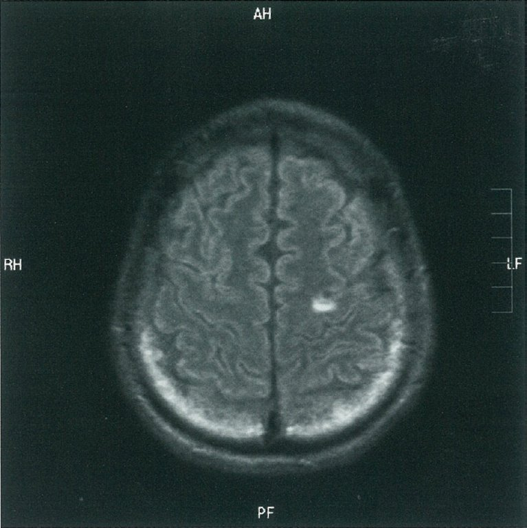
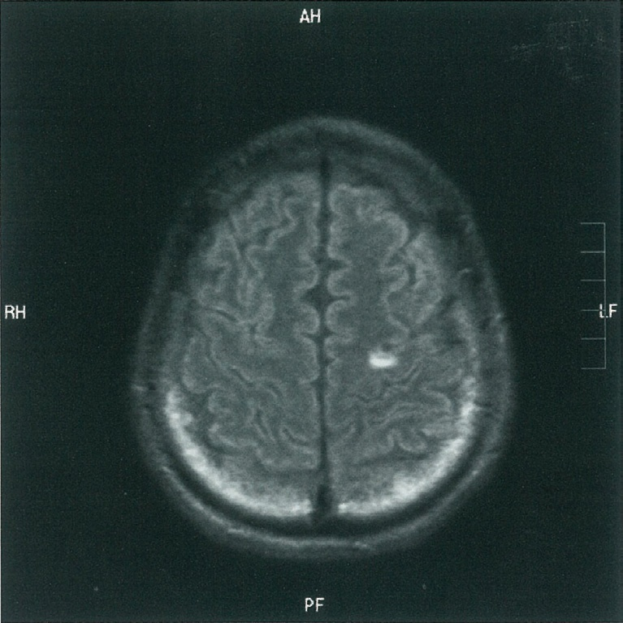
ａ 血液培養
ｂ 冠動脈造影
ｃ 心エコー検査
ｄ 頸動脈超音波検査
ｅ 抗リン脂質抗体測定
✅
ａ 血液培養 ＋ ｃ 心エコー検査
IE（発熱+拡張期雑音+Roth斑+多発脳梗塞）→血液培養（確定診断）+心エコー（疣贅・塞栓源確認）。
❤️ 若年者の脳梗塞——動脈硬化以外を疑う
脳梗塞の大多数は高齢者の動脈硬化性疾患だが、45歳未満の脳梗塞では原因の分布がまったく異なる。「若年者の脳卒中を見たら、動脈硬化以外の原因を系統的に探す」のが原則である。| 分類 | 具体的な原因 | 手がかり |
|---|---|---|
| 心原性塞栓 | 感染性心内膜炎・心房細動・卵円孔開存（奇異性塞栓）・心臓粘液腫・拡張型心筋症・人工弁 | 発熱・心雑音・不整脈・多発する梗塞 |
| 動脈解離 | 頸動脈・椎骨動脈解離（外傷・頸部の急な回旋・整体） | 頸部痛・後頭部痛・Horner症候群 |
| 血管炎・血管症 | 高安動脈炎・原発性中枢神経系血管炎・もやもや病 | 炎症反応・特徴的な血管像 |
| 凝固異常 | 抗リン脂質抗体症候群・プロテインC/S欠損・悪性腫瘍（Trousseau） | 習慣流産・深部静脈血栓の既往 |
| 遺伝・代謝 | Fabry病・MELAS・CADASIL・ホモシスチン尿症 | 家族歴・低身長・難聴・特徴的な体型 |
| 薬剤 | 覚醒剤・コカイン・経口避妊薬 | 薬歴・生活歴 |
本例の神経症状の局在——回転性めまい・嘔気・水平性眼振・構音障害は脳幹（延髄・橋）または小脳の病変を示唆し、椎骨脳底動脈系の梗塞と読める。IEの塞栓は多発性・多血管領域に及ぶことが多く、これが心原性塞栓を疑う重要な手がかりになる。FLAIR像は急性期の梗塞巣を高信号として描出し、陳旧性病変や白質病変との区別に有用である（超急性期の判定には拡散強調像を用いる）。
眼底の小出血斑＝Roth斑——白色の中心を持つ網膜出血で、免疫複合体の沈着による血管炎とされる。修正Duke基準の小基準（免疫学的現象）で、眼底鏡さえあればベッドサイドで取れる所見である。「発熱の原因が分からない患者では眼底を見る」——これも古典的な教えの一つ。
□ 選択肢の検討
| 選択肢 | 解説 |
|---|---|
| ◯ ａ 血液培養 | これが正解。本例は①1か月前からの微熱 ②体温37.8℃ ③胸骨左縁第3肋間の拡張期雑音＝大動脈弁閉鎖不全 ④眼底の小出血斑（Roth斑） ⑤白血球10,200・CRP 6.6mg/dL ⑥頭部MRIのFLAIR像で描出された脳病変 ⑦28歳という若年で、動脈硬化の危険因子が示されていない——感染性心内膜炎からの脳塞栓を強く疑う。血液培養は修正Duke基準の大基準であり、起炎菌と薬剤感受性を決める唯一の手段である。必ず抗菌薬投与前に、時間と穿刺部位を変えて3セット採取する。ここで先に抗菌薬を投与してしまうと培養が陰性化し、その後の4〜6週間を起炎菌不明のまま広域抗菌薬で治療することになる。「まず行う」検査として、非侵襲的で即座に実施でき、診断と治療の両方を決める血液培養は最優先である。 |
| ｂ 冠動脈造影 | 適応がない。冠動脈造影は急性冠症候群・安定狭心症の血行再建の適応判断・冠攣縮性狭心症の誘発試験で行う侵襲的検査である——本例は28歳で胸痛の訴えが無く、心電図所見の記載も無く、冠動脈疾患を疑う文脈がまったく存在しない。なお感染性心内膜炎でも、疣贅が冠動脈へ飛べば心筋梗塞を起こしうるが、それは胸痛・心電図のST変化・心筋逸脱酵素の上昇があって初めて考えるものである。さらに重要な点として、IEが疑われる患者への冠動脈造影はカテーテル操作で疣贅を剥離させ、新たな塞栓を起こす危険がある——術前評価が必要な場合でも、造影CTで代用することが推奨される。 |
| ◯ ｃ 心エコー検査 | これが正解。心エコー検査は修正Duke基準のもう一つの大基準「心内膜が侵されている証拠」を取りにいく検査である——疣贅・弁周囲膿瘍・人工弁の新たな裂開のいずれかを認めれば大基準を満たす。本例では拡張期雑音＝大動脈弁閉鎖不全が既にあるので、大動脈弁の疣贅と、弁破壊による逆流の重症度を評価する。さらに心エコーは治療方針を直接左右する情報を与える——①疣贅の大きさと可動性（10mm超の可動性疣贅は塞栓の高リスク） ②弁破壊の程度と心不全の有無（手術適応の第一項） ③弁輪膿瘍の有無（手術適応）。まず経胸壁心エコーを行い、陰性でも疑いが強ければ経食道心エコーへ進む。非侵襲的で即座に行える点も「まず行う」検査にふさわしい。 |
| ｄ 頸動脈超音波検査 | 優先度が低い。頸動脈超音波検査は頸動脈の粥腫由来の塞栓（アテローム血栓性脳梗塞・動脈原性塞栓症）を疑うときに行う——本例は28歳という若年で、高血圧・脂質異常症・糖尿病・喫煙といった動脈硬化の危険因子が一つも示されていない。この年齢で頸動脈に有意な粥腫が生じている可能性は低く、事前確率が低い検査である。むしろ本例で目を引くのは「1か月続く微熱＋拡張期雑音＋眼底の小出血斑＋CRP 6.6mg/dL」という感染性の背景で、塞栓源は頸動脈ではなく心臓にあると考えるのが自然。若年者の脳梗塞では、動脈硬化以外の原因（心原性塞栓・動脈解離・血管炎・凝固異常・奇異性塞栓）を先に探す。 |
| ｅ 抗リン脂質抗体測定 | 優先度が低い。抗リン脂質抗体（ループスアンチコアグラント・抗カルジオリピン抗体・抗β2グリコプロテインI抗体）は抗リン脂質抗体症候群〈APS〉の診断に用いる——APSは動静脈血栓症と習慣流産を来し、若年者の脳梗塞の原因として重要なので、鑑別に挙げること自体は妥当である。しかし本例には発熱・CRP上昇・心雑音・眼底出血という「感染」を示す所見が明確にあり、まずそちらを検証するのが順序。さらに抗リン脂質抗体は感染症で一過性に陽性になることが多く、APSの診断には12週間以上あけた2回の陽性が必要である——急性期に1回測っても診断はつかず、「まず行う」検査にはならない。加えてAPSでも非細菌性血栓性心内膜炎を来しうるが、発熱は説明できない。 |
🔍 「まず行う2つ」の考え方と、IE合併脳梗塞の治療
①「まず行う検査」を選ぶ基準：| 基準 | 血液培養 | 心エコー | 他の選択肢 |
|---|---|---|---|
| 診断への寄与 | 大基準 | 大基準 | 小さい |
| 侵襲 | 採血のみ | なし | 冠動脈造影は侵襲的 |
| 迅速性 | その場で採取可能 | 数分 | 抗リン脂質抗体は12週後に再検が必要 |
| 治療への影響 | 抗菌薬の選択を決める | 手術適応を決める | 変わらない |
②IEに合併した脳梗塞の治療は通常の脳梗塞とまったく違う：
・血栓溶解療法〈t-PA〉は禁忌——疣贅は血栓ではなく感染巣で溶けないうえ、感染で脆くなった血管壁や感染性脳動脈瘤から出血する危険が高い
・抗凝固療法は新たに開始しない——塞栓を減らす証拠が無く、出血性梗塞・脳出血を増やす
・抗血小板療法も新規開始は推奨されない
・最良の治療は「適切な抗菌薬を速やかに開始すること」——塞栓リスクは治療開始後2週間で急速に低下する
・血栓回収療法は、大血管閉塞であれば症例によって考慮されることがある
「若年者の脳梗塞にとりあえずt-PA」という反射が、IEでは致命的になりうる——発熱と心雑音があれば、必ず立ち止まる。
③感染性脳動脈瘤〈infectious aneurysm〉を探す——菌塊が血管壁を破壊して形成され、末梢の分岐部（中大脳動脈の遠位）に多い（通常の脳動脈瘤はWillis動脈輪の分岐部）。IEで頭痛・神経症状があればMRAまたはCTAを撮る。多くは抗菌薬で縮小するが、増大するもの・破裂したものは血管内治療や外科的治療の対象となる。
④手術のタイミング——無症候・軽症の梗塞なら早期手術を遅らせない。出血性梗塞・脳出血があれば原則4週間待つ（人工心肺のヘパリン化で出血が拡大するため）。ただし心不全で待てない場合は、神経学的状態にかかわらず手術を優先することがある。
🎯 国試ポイント
① 若年者の脳梗塞＋発熱＋心雑音＋眼底出血＝感染性心内膜炎からの脳塞栓。まず血液培養と心エコー。② この2つは修正Duke基準の大基準を両方取りにいく組み合わせ。揃えば診断が確定する。
③ IE合併の脳梗塞にt-PAは禁忌——疣贅は溶けず、感染性脳動脈瘤や脆い血管から出血する。
④ 抗凝固・抗血小板療法も新規開始しない。最良の治療は速やかな抗菌薬投与。
⑤ Roth斑＝白色の中心を持つ網膜出血（免疫学的現象・小基準）。眼底鏡でベッドサイドで取れる。
⑥ 若年者の脳梗塞では動脈硬化以外を探す——心原性塞栓・動脈解離・血管炎・凝固異常・遺伝性疾患・薬剤。
⑦ 回転性めまい・眼振・構音障害＝椎骨脳底動脈系（脳幹・小脳）。IEの塞栓は多発性・多血管領域に及ぶ。
⑧ IE疑い例への冠動脈造影は疣贅を剥離させる危険があり、必要時は造影CTで代用する。
⑨ 抗リン脂質抗体は感染で一過性陽性になる。APSの診断には12週以上あけた2回の陽性が必要。
Q.435(102D-27)📷 画像正答率 98%
50 歳の男性。胸痛を主訴に来院した。数日前から風邪気味であったが、昨日から左前胸部痛が出現した。痛みは数時間続くことがあり、深吸気時と仰臥位とで増強する。意識は清明。身長170cm、体重67kg。体温36.9℃。脈拍84/ 分、整。血圧140/84mmHg。収縮期と拡張期とに高調な雑音を聴取する。呼吸音に異常を認めない。血液所見：
赤血球456 万、Hb 14.5g/dl、白血球8,900。CRP 4.5mg/dl。心電図を示す。
最も考えられるのはどれか。
赤血球456 万、Hb 14.5g/dl、白血球8,900。CRP 4.5mg/dl。心電図を示す。
最も考えられるのはどれか。

ａ 肺塞栓症
ｂ 急性心膜炎
ｃ 特発性胸膜炎
ｄ 安静時狭心症
ｅ 肥大型心筋症
✅
ｂ 急性心膜炎
感冒後+胸膜炎様胸痛+心膜摩擦音（収縮期・拡張期の高調な雑音）→急性心膜炎の典型。
❤️ 急性胸痛の鑑別——まず「致死的な5つ」を外す
胸痛の患者を診るとき、最初にすべきは診断名を当てることではなく、「命に関わる5つ」を除外することである。| 致死的胸痛5疾患 | 痛みの性状 | 決め手 |
|---|---|---|
| 急性冠症候群 | 圧迫感・絞扼感。20分以上持続。放散痛（左肩・下顎） | 心電図・トロポニン |
| 急性大動脈解離 | 突然の「引き裂かれる」激痛。移動する | 血圧の左右差・拡張期雑音・造影CT |
| 肺血栓塞栓症 | 突然の呼吸困難＋胸痛。頻脈・低酸素 | D-dimer・造影CT・右室拡大 |
| 緊張性気胸 | 突然。患側の呼吸音消失・鼓音・気管偏位 | 身体所見（画像を待たない） |
| 特発性食道破裂〈Boerhaave症候群〉 | 激しい嘔吐の後の胸痛。皮下気腫 | 胸部CT・造影食道透視 |
痛みの性状から絞り込む3つの質問：
①いつ、どのように始まったか——突然（秒単位）なら血管性（解離・塞栓）や気胸、緩徐なら炎症性
②どのくらい続くか——数秒なら筋骨格系や不安、数分なら狭心症、数十分以上なら梗塞・炎症・解離
③何で変わるか——労作で悪化なら虚血、呼吸・体位で変化なら心膜炎・胸膜炎・筋骨格系、食事で変化なら消化管
本例は「数時間持続し、深吸気と仰臥位で増悪する」＝③が決定的に心膜炎を指している。
その他の胸痛の原因——胃食道逆流症・食道痙攣・消化性潰瘍・胆石発作・膵炎・肋間神経痛・肋軟骨炎〈Tietze症候群〉・帯状疱疹・胸椎の圧迫骨折・不安障害。「胸壁を押して痛みが再現される」なら筋骨格系の可能性が高いが、それだけで虚血を否定してはいけない。
□ 選択肢の検討
| 選択肢 | 解説 |
|---|---|
| ａ 肺塞栓症 | 否定的である。肺塞栓症も胸痛（胸膜炎様のことがある）・呼吸困難・頻脈を来すため、急性胸痛の鑑別として必ず挙げる——しかし本例は脈拍84/分と正常、血圧140/84mmHgで安定、呼吸困難の訴えが無く、呼吸音にも異常を認めない。肺塞栓の危険因子（長期臥床・術後・悪性腫瘍・下肢の腫脹・経口避妊薬・凝固異常）の記載も無い。さらに胸痛が「数日前からの風邪」に続いて出現し、体位（仰臥位で増悪）で変化する点が合わない——肺塞栓の胸痛は突然発症で、体位では変わらない。そして本例には「収縮期と拡張期に高調な雑音＝心膜摩擦音」という、肺塞栓では説明できない決定的な所見がある。 |
| ◯ ｂ 急性心膜炎 | これが正解。本例は急性心膜炎の診断基準4項目のうち3項目以上を満たす——①先行する上気道感染（「数日前から風邪気味」） ②胸膜炎様の胸痛（数時間持続し、深吸気時と仰臥位で増悪する＝坐位前傾で軽快する痛み） ③収縮期と拡張期に聴取される高調な雑音＝心膜摩擦音 ④心電図の変化（広範な凹型ST上昇とPR低下） ⑤CRP 4.5mg/dLの炎症反応。とくに「収縮期と拡張期の両方に高調な雑音」という表現は心膜摩擦音そのものである——弁膜症の雑音は収縮期か拡張期のどちらかに限られ、両方にまたがることは通常ない。原因の80〜90%は特発性またはウイルス性で、治療はNSAIDs＋コルヒチン。「感冒後の、体位で変わる胸痛」を見たら急性心膜炎。 |
| ｃ 特発性胸膜炎 | 否定的である。胸膜炎も深吸気で増悪する鋭い胸痛を来し、心膜炎と痛みの性状が非常によく似ている——実際、両者は隣接する漿膜の炎症であり、しばしば併存する（胸膜心膜炎）。しかし鑑別点は明確である：①胸膜炎では患側の呼吸音が減弱し、胸膜摩擦音を聴取する ②胸膜摩擦音は「呼吸を止めると消える」（心膜摩擦音は呼吸を止めても消えない） ③痛みは体位より呼吸との関係が強い ④胸水があれば胸部エックス線で見える。本例は「呼吸音に異常を認めない」「胸部エックス線写真に異常を認めない」と明記されている。そして「心電図を示す」と提示されていること自体が、答えを心臓に誘導している。 |
| ｄ 安静時狭心症 | 否定的である。安静時狭心症（冠攣縮性狭心症を含む）は安静時、とくに夜間から早朝にかけての胸痛発作を特徴とする——しかし狭心症の胸痛は「絞扼感・圧迫感」で、持続時間は数分（長くても15分程度）であり、本例の「数時間続く」痛みとは合わない。さらに決定的なのは「深吸気時と仰臥位とで増強する」という点——狭心症の胸痛は呼吸や体位で変化しない。心電図のST上昇を見て「異型狭心症」を疑う筋道はあり得るが、異型狭心症のST上昇は発作時のみ一過性に出現し、限局した誘導に現れる。本例には心膜摩擦音・CRP上昇・先行する感冒という炎症の背景があり、これらは狭心症では説明できない。 |
| ｅ 肥大型心筋症 | 否定的である。肥大型心筋症は左室の非対称性肥大（とくに心室中隔）を特徴とし、労作時の呼吸困難・胸痛・失神・動悸を来す——閉塞性であれば胸骨左縁の収縮期駆出性雑音（Valsalva法や立位で増強、しゃがみ込みで減弱）を聴取する。本例の雑音は「収縮期と拡張期」の両方にあり、この所見と合わない。心電図では左室高電位・広範なST-T変化（ストレイン型）・異常Q波・巨大陰性T波（心尖部肥大型）が出るが、心膜炎に特徴的なPR低下は生じない。また肥大型心筋症は慢性の疾患で、「数日前からの風邪に続いて発症」という急性の経過とCRP上昇を説明できない。本例では心エコーで壁運動異常も左室拡大も無いことが確認されている。 |
🔍 心膜摩擦音の聴診と、心電図をもう一段深く読む
①心膜摩擦音の聴き方——膜型を強く押し当てて、胸骨左縁下部を、坐位で前傾させ、呼気で息を止めさせて聴く。典型的には3相性——①心房収縮期（拡張後期） ②心室収縮期 ③拡張早期の急速流入期の3つの、心臓が最も速く動く時相に一致して鳴る。ただし3相そろって聴こえるのは半数程度で、2相性・1相性のこともある。| 心膜摩擦音 | 胸膜摩擦音 | |
|---|---|---|
| タイミング | 心周期に一致 | 呼吸に一致 |
| 呼吸停止 | 消えない | 消える |
| 部位 | 胸骨左縁下部 | 病変のある胸壁 |
| 持続性 | 出没する（一過性） | 比較的持続する |
②心膜炎の心電図をもう一段深く：
・PR部分の変化——Ⅱ・aVF・V4〜V6でPR低下、aVRでPR上昇。心房の障害電流を反映し、心膜炎に比較的特異的
・aVRの所見——ST低下＋PR上昇。他の誘導と正反対になるのはaVRの電極の向きによる
・Spodick徴候——TP接合部からST接合部にかけて下向きに傾斜する。心膜炎に比較的特異的とされる
・早期再分極との鑑別——健常若年男性で見られる早期再分極も凹型ST上昇を示すが、①PR低下を伴わない ②V6でのST上昇/T波高の比が0.25未満（心膜炎では0.25以上） ③J点のnotchやslurを伴う ④症状が無い
・広範なST上昇でも異常Q波は出ない——心筋の壊死が無いため。これが心筋梗塞との決定的な違い
③心エコーの所見の読み方——本例では「左室の拡大はなく壁運動に異常を認めないが、左室後壁の背側にエコーフリースペースをわずかに認める」と記載されている。「壁運動異常なし」＝心筋梗塞の否定、「エコーフリースペース」＝少量の心嚢液の存在で、この2つが心膜炎の診断を強く支持する。少量の心嚢液は後壁側に最初にたまる（仰臥位で背側が低くなるため）——「後壁背側のエコーフリースペース」は心嚢液の初期の見え方である。
🎯 国試ポイント
① 感冒後＋深吸気と仰臥位で増悪する数時間の胸痛＋収縮期と拡張期の高調な雑音（心膜摩擦音）＝急性心膜炎。② 「収縮期と拡張期の両方にまたがる雑音」は心膜摩擦音——弁膜症の雑音はどちらか一方に限られる。
③ 心膜摩擦音は呼吸を止めても消えない／胸膜摩擦音は消える。最も実用的な鑑別法。
④ 摩擦音の消失は改善とは限らない——心嚢液が増えて両膜が離れた可能性がある。
⑤ 致死的胸痛5疾患＝急性冠症候群・大動脈解離・肺血栓塞栓症・緊張性気胸・特発性食道破裂。いずれも突然発症。
⑥ 胸痛は「いつ始まったか・どのくらい続くか・何で変わるか」の3つで絞る。呼吸や体位で変わるなら心膜炎・胸膜炎。
⑦ 心膜炎ではPR低下（aVRではPR上昇とST低下）。Spodick徴候（TP-ST接合部の下向き傾斜）も特異的。
⑧ 早期再分極との鑑別＝PR低下の有無、V6のST/T比0.25以上、症状の有無。
⑨ 心膜炎では異常Q波が出ず、壁運動異常も無い。少量の心嚢液は後壁背側にたまる。
Q.436(101A-19)📷 画像正答率 54%
32 歳の女性。発熱と労作時呼吸困難とを主訴に来院した。1 か月前に抜歯を受けたが、発熱が持続し、昨日から労作時呼吸困難が出現した。意識は清明。身長155cm、体重48kg。血液所見: 赤血球330 万、Hb 10.5g/dl、白血球14,500。CRP 11.2mg/dl。断層心エコー図（A）とドプラ図（B）とを示す。
この患者でみられないのはどれか。
この患者でみられないのはどれか。
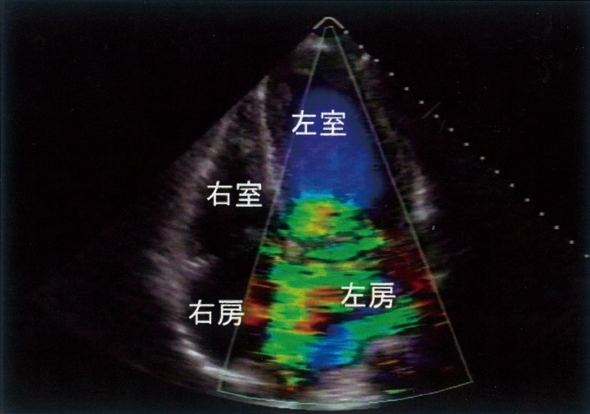
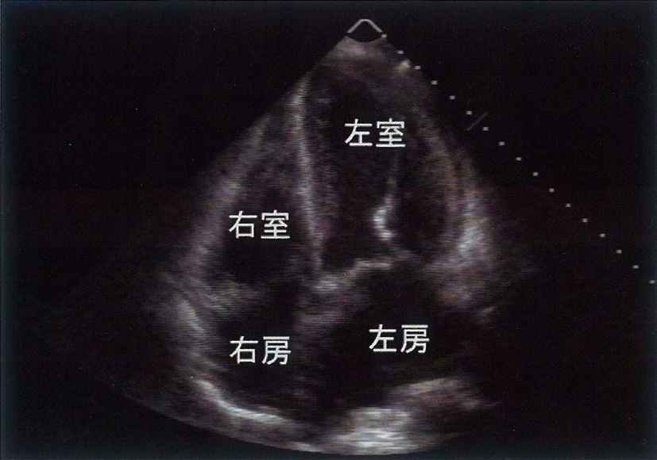
ａ 蝶形紅斑
ｂ 四肢動脈閉塞
ｃ 指先の有痛性小結節
ｄ 頭部MRA で脳動脈瘤の描出
ｅ 血液培養でグラム陽性菌の検出
✅
ａ 蝶形紅斑
IE（抜歯後+発熱+MR+白血球↑+CRP↑）の所見として蝶形紅斑はない。蝶形紅斑はSLEの特徴。
❤️ 感染性心内膜炎とSLE——似て非なる「発熱＋多臓器」
本問は「IEで起こることを4つ並べ、SLEの所見を1つだけ混ぜる」という構造をしている。両者はいずれも「発熱＋心臓の異常＋皮膚所見＋腎障害＋自己抗体」を呈しうるため、鑑別は実臨床でも重要である。| 感染性心内膜炎 | 全身性エリテマトーデス | |
|---|---|---|
| 白血球 | 増加（好中球優位） | 減少（白血球減少・リンパ球減少） |
| CRP | 著明に上昇 | あまり上がらない（上がれば感染の合併を疑う） |
| 赤沈 | 亢進 | 亢進（CRPと乖離する） |
| 皮膚 | Osler結節（有痛）・Janeway病変（無痛）・爪下線状出血 | 蝶形紅斑・円板状皮疹・光線過敏・脱毛・口腔内潰瘍 |
| 心臓 | 疣贅（有熱性・弁破壊あり） | Libman-Sacks心内膜炎（無熱性・破壊は軽度）・心膜炎 |
| 腎 | 免疫複合体性糸球体腎炎（感染制御で改善） | ループス腎炎（免疫抑制療法が必要） |
| 血液培養 | 陽性 | 陰性 |
| 治療 | 抗菌薬（±手術） | ステロイド・免疫抑制薬 |
本例の決め手は「白血球14,500・CRP 11.2mg/dL」という数値——SLEの活動期にこの組み合わせが出ることは少なく、細菌感染のパターンそのものである。加えて「1か月前に抜歯」という契機が、口腔内常在菌の菌血症を強く示唆している。
□ 選択肢の検討
| 選択肢 | 解説 |
|---|---|
| ◯ ａ 蝶形紅斑 | これが正解＝みられない。蝶形紅斑〈malar rash〉は全身性エリテマトーデス〈SLE〉に特徴的な皮膚所見で、両頬から鼻背にかけて蝶が羽を広げた形に広がる紅斑である——鼻唇溝を避けるのが特徴で、これが脂漏性皮膚炎との鑑別点になる。本例は①1か月前の抜歯 ②持続する発熱 ③労作時呼吸困難 ④断層心エコー図とドプラ図が提示され疣贅と逆流が示唆される ⑤白血球14,500・CRP 11.2mg/dLと明確な細菌感染のパターン——感染性心内膜炎である。SLEでは白血球はむしろ減少し（白血球減少・リンパ球減少は診断基準の一項目）、CRPも通常あまり上がらない（上がったら感染の合併を疑う）。本例の検査所見はSLEと正反対の方向を向いている。 |
| ｂ 四肢動脈閉塞 | みられる。本例は抜歯後の発熱＋心エコーでの疣贅から左心系の感染性心内膜炎と考えられ、疣贅が体循環へ飛べば四肢の主幹動脈を閉塞しうる。急性動脈閉塞の症状は5P——Pain（疼痛）・Pallor（蒼白）・Pulselessness（脈拍消失）・Paresthesia（知覚異常）・Paralysis（運動麻痺）で、後の2つが出たら不可逆的な壊死が迫っている。発症から6〜8時間が阻血許容時間とされ、塞栓摘除術（Fogartyカテーテル）や血行再建を急ぐ。IEに伴う塞栓では①感染した塞栓子なので感染性動脈瘤を形成しうる ②抗凝固療法を新規に始めないという点が、心房細動由来の塞栓と異なる。塞栓症はIEの20〜50%に起こる。 |
| ｃ 指先の有痛性小結節 | みられる。「指先の有痛性小結節」＝Osler結節で、修正Duke基準の小基準（免疫学的現象）に含まれる。機序は免疫複合体が指趾の細動脈に沈着して血管炎を起こすものとされ（微小塞栓の要素も指摘される）、数mm大・有痛性・数時間から数日で消退する。本例は1か月前の抜歯を契機とする亜急性の経過で、免疫複合体が形成される時間が十分にあり、免疫学的現象が出やすい。対比すべきJaneway病変は手掌・足底の無痛性の出血性斑で、こちらは塞栓による血管現象。Osler＝有痛（Ouch）・指腹・免疫／Janeway＝無痛・手掌足底・塞栓——毎年のように問われる対比である。 |
| ｄ 頭部MRA で脳動脈瘤の描出 | みられる。これは感染性脳動脈瘤〈infectious/mycotic aneurysm〉を指しており、IEの2〜4%に生じる合併症である。機序は①感染した塞栓子が脳動脈に詰まる ②菌が血管壁の栄養血管〈vasa vasorum〉や外膜から浸潤する ③中膜と内弾性板が破壊され、血管壁が膨隆する。好発部位は中大脳動脈の末梢の分岐部で、通常の脳動脈瘤（Willis動脈輪の分岐部）とは分布が異なる——この違いが鑑別の鍵になる。破裂すればくも膜下出血や脳内出血を来し致死的なので、IEで頭痛や神経症状があればMRAまたはCTAを撮る。多くは適切な抗菌薬で縮小するが、増大するもの・破裂したものは血管内治療や外科的治療の対象となる。本選択肢が本問を難問にしている——「脳動脈瘤」と聞いて反射的に無関係と判断すると誤る。 |
| ｅ 血液培養でグラム陽性菌の検出 | みられる。本例の背景は1か月前の抜歯——口腔内常在菌である緑色連鎖球菌〈viridans group streptococci〉による亜急性感染性心内膜炎の典型的な入り口である。緑色連鎖球菌はグラム陽性の連鎖球菌であり、「血液培養でグラム陽性菌の検出」は当然に期待される所見。IEの起炎菌はグラム陽性球菌が大半——黄色ブドウ球菌・緑色連鎖球菌・腸球菌・コアグラーゼ陰性ブドウ球菌で全体の約80〜90%を占める。血液培養陽性は修正Duke基準の大基準で、本例では抜歯という契機、発熱の持続、心エコーの疣贅と合わせて診断が確定する。抗菌薬投与前に、時間と部位を変えて3セット採取する。 |
🔍 感染性脳動脈瘤——「脳動脈瘤」がIEの選択肢に出る理由
本問で最も判断に迷うのは「頭部MRAで脳動脈瘤の描出」という選択肢である。「脳動脈瘤＝先天性・動脈硬化性の嚢状動脈瘤」という固定観念があると、IEとは無関係と判断してしまう。| 感染性脳動脈瘤 | 通常の嚢状動脈瘤 | |
|---|---|---|
| 好発部位 | 中大脳動脈の末梢の分岐部 | Willis動脈輪の近位の分岐部（前交通動脈・内頸動脈-後交通動脈分岐部・中大脳動脈分岐部） |
| 形 | 紡錘状のことが多い・不整 | 嚢状 |
| 数 | 多発しやすい | 単発が多い |
| 成因 | 菌塊による血管壁の破壊 | 血流の力学的ストレス・中膜の脆弱性 |
| 経時変化 | 抗菌薬で縮小・消失しうる（増大することもある） | 基本的に縮小しない |
| 治療 | まず抗菌薬。増大・破裂例は血管内治療または手術 | クリッピングまたはコイル塞栓 |
感染性動脈瘤は脳以外にもできる——腹部大動脈・内臓動脈（脾動脈・上腸間膜動脈）・四肢動脈にも生じ、腹痛・拍動性腫瘤・破裂による出血性ショックを来す。かつては「真菌性動脈瘤〈mycotic aneurysm〉」と呼ばれたが、実際の起炎菌の大半は細菌である——Oslerが「きのこ状〈mycotic〉の形」を指して名づけた歴史的経緯による誤称で、現在は「感染性動脈瘤」が推奨される。
この選択肢が教えていること——IEは「心臓の病気」ではなく「血流に乗って全身の血管と臓器を侵す全身疾患」である。脳・腎・脾・眼・皮膚・骨・関節・肺のどこにでも所見が出る——だからこそ全身をくまなく診察し、所見を一つずつ拾い上げることが診断につながる。
🎯 国試ポイント
① 蝶形紅斑はSLEの所見でIEにはみられない。鼻唇溝を避けるのが特徴（脂漏性皮膚炎との鑑別）。② IEは白血球増加・CRP著明上昇／SLEは白血球減少・CRPはあまり上がらない——検査所見の方向が正反対。
③ IEでは感染性脳動脈瘤が2〜4%に生じる。中大脳動脈の末梢の分岐部に多く、通常の脳動脈瘤（Willis動脈輪）と分布が違う。
④ 感染性動脈瘤は多くが抗菌薬で縮小するが、増大・破裂例は血管内治療または手術。脳以外（腹部大動脈・内臓動脈）にもできる。
⑤ Osler結節＝指先の有痛性結節（免疫学的現象）／Janeway病変＝手掌足底の無痛性斑（血管現象）。
⑥ 抜歯後の発熱＝緑色連鎖球菌による亜急性IE。血液培養でグラム陽性球菌が検出される。
⑦ 急性動脈閉塞の5P＝疼痛・蒼白・脈拍消失・知覚異常・運動麻痺。阻血許容時間は6〜8時間。
⑧ SLEではLibman-Sacks心内膜炎（無熱性・弁破壊は軽度）。IEの疣贅とは性質が異なる。
⑨ IEでは自己抗体が偽陽性になる——膠原病と決めつける前に血液培養と心エコーでIEを除外する。
Q.437(101H-26)📷 画像正答率 96%
35 歳の男性。乗用車を運転中にトレーラーに追突しハンドルで胸部を強く打撲し搬入された。意識は混濁。呼吸数40/ 分。脈拍120/ 分、整。血圧66/46mmHg。皮膚蒼白、発汗、四肢末梢冷感および頸静脈の怒張を認める。心音は微弱である。呼吸音に異常を認めない。心エコー図を示す。
みられる所見はどれか。
みられる所見はどれか。

ａ 二峰性脈
ｂ 交互脈
ｃ 大 脈
ｄ 速 脈
ｅ 奇 脈
✅
ｅ 奇脈
外傷性心タンポナーデ（Beck三徴+胸部打撲）→奇脈（吸気時BP>10mmHg低下）が典型的所見。
❤️ 脈の性状——「触れ方」が病態を語る
脈拍は「数」だけでなく「大きさ（脈圧）」「立ち上がりの速さ」「呼吸性の変動」「拍ごとの均一性」を診る。それぞれが別の病態を指す。| 脈の名称 | 特徴 | 代表疾患 |
|---|---|---|
| 奇脈〈pulsus paradoxus〉 | 吸気時に収縮期血圧が10mmHg超低下 | 心タンポナーデ・収縮性心膜炎・重症喘息・COPD増悪 |
| 交互脈〈pulsus alternans〉 | 規則的な調律で強弱が一拍ごとに交代 | 重症左室収縮不全（予後不良） |
| 二峰性脈〈pulsus bisferiens〉 | 収縮期に2つのピーク | 大動脈弁閉鎖不全・閉塞性肥大型心筋症（spike-and-dome） |
| 大脈・速脈〈Corrigan脈・水槌脈〉 | 脈圧が大きく、急峻に立ち上がり急速に消える | 大動脈弁閉鎖不全・甲状腺機能亢進症・貧血・動静脈瘻 |
| 小脈遅脈〈parvus et tardus〉 | 脈圧が小さく立ち上がりが遅い | 大動脈弁狭窄症 |
| 結滞・不整 | 脈が飛ぶ・全く不規則 | 期外収縮・心房細動 |
奇脈の測り方（血圧計を使う古典的な方法）：
①カフを収縮期血圧より高く上げる
②ゆっくり下げ、Korotkoff音が「呼気時にだけ」聞こえ始める圧を読む
③さらに下げ、「全呼吸周期で」聞こえるようになる圧を読む
④その差が10mmHgを超えれば奇脈陽性
「脈が消える」のではなく「吸気で弱くなる」——名称の「奇」は、心音は聞こえているのに橈骨動脈が吸気で触れなくなるという「一見矛盾した」現象に由来する。
□ 選択肢の検討
| 選択肢 | 解説 |
|---|---|
| ａ 二峰性脈 | みられない。二峰性脈〈pulsus bisferiens〉は1回の収縮期に2つの明瞭なピークを触れる脈である——代表的なのは①大動脈弁閉鎖不全（単独、または大動脈弁狭窄との合併） ②閉塞性肥大型心筋症。閉塞性肥大型心筋症では、収縮早期に勢いよく駆出された後、左室流出路が動的に狭窄して一度落ち込み、再び上昇する〈spike-and-dome〉波形を示す。いずれも「一回拍出量が多い」あるいは「駆出の途中で流出路の抵抗が変わる」病態で生じる——本例は心タンポナーデにより一回拍出量が著しく低下しており、脈は小さく弱い。二峰性を触れる余地が無い。 |
| ｂ 交互脈 | みられない。交互脈〈pulsus alternans〉は調律は規則正しいのに、脈の大きさが一拍ごとに強・弱・強・弱と交代する現象である——重症の左室収縮不全に特徴的で、心筋の一部が一拍おきにしか有効に収縮できない（興奮収縮連関に関わるカルシウム動態の交代）ことによる。拡張型心筋症・重症の虚血性心筋症・大動脈弁狭窄症の末期などで見られ、予後不良のサインとされる。本例は外傷による心タンポナーデで、心筋の収縮力そのものは保たれている——問題は「入る量」であって「出す力」ではない。心電図上のQRS振幅が一拍ごとに変わる「電気的交互脈」とは別物で、そちらは心臓が心嚢液中で揺れるために生じ、タンポナーデでみられる。 |
| ｃ 大 脈 | みられない。大脈〈pulsus magnus〉は脈圧が大きく、触れると力強く感じる脈で、一回拍出量の増加を反映する——代表は大動脈弁閉鎖不全・甲状腺機能亢進症・貧血・発熱・脚気心・動静脈瘻・妊娠といった高心拍出状態である。本例は血圧66/46mmHgで脈圧わずか20mmHg——一回拍出量が著しく低下した状態で、触知されるのは大脈ではなく小脈〈pulsus parvus〉である。実際に皮膚蒼白・発汗・四肢末梢冷感という交感神経緊張による末梢血管収縮の所見が記載されており、末梢の脈は微弱で触れにくいはずである。ショックの患者で「力強い脈」を選ぶことはない。 |
| ｄ 速 脈 | みられない。速脈〈pulsus celer〉は立ち上がりが急峻で、頂点に達した後すぐに消失する脈である——大動脈弁閉鎖不全の典型的な脈で、大脈と速脈が組み合わさったものをCorrigan脈〈水槌脈・collapsing pulse〉と呼ぶ。機序は①拡張期に血液が左室へ逆流するため、次の収縮で「本来の拍出量＋逆流分」を一気に押し出す（急峻な立ち上がり） ②直後に再び大動脈から左室へ逃げるため急速に脈が消える。本例は外傷による心タンポナーデで、大動脈弁に逆流を来す病態ではない。むしろ心タンポナーデで触れるのは「小さく、速く、吸気で弱くなる脈」である。逆に大動脈弁狭窄症では「小さく、立ち上がりが遅い」小脈遅脈〈pulsus parvus et tardus〉を触れる——対で覚える。 |
| ◯ ｅ 奇 脈 | これが正解。本例は①ハンドルによる胸部の鈍的外傷 ②意識混濁 ③呼吸数40/分 ④脈拍120/分 ⑤血圧66/46mmHg（脈圧20mmHgと著明に狭小） ⑥皮膚蒼白・発汗・四肢末梢冷感 ⑦頸静脈の怒張 ⑧心音微弱 ⑨呼吸音は正常——外傷性心タンポナーデである。Beck三徴（低血圧・頸静脈怒張・心音微弱）が完全に揃っている。奇脈〈pulsus paradoxus〉は吸気時に収縮期血圧が10mmHgを超えて低下する現象で、心タンポナーデに最も特徴的な脈所見である。機序は心室相互依存——吸気で静脈還流が増えて右室が拡張するが、硬い心嚢に閉じ込められているため心室中隔が左室側へ押され、左室の充満と一回拍出量が減る。本例で「呼吸音に異常を認めない」ことは、緊張性気胸を除外し、タンポナーデを支持する重要な記載である。 |
🔍 外傷性心タンポナーデの初期対応
①鈍的外傷でも心損傷は起こる——ハンドル外傷・シートベルト外傷・胸骨骨折を伴う圧挫では、心挫傷・心破裂・弁損傷・冠動脈損傷・心膜損傷が生じうる。外傷では100〜200mLの血液でも急速にタンポナーデを来す——心膜は伸展性に乏しく、急速な貯留に代償できないためである。したがって胸部エックス線での心陰影拡大は現れないことが多く、「胸部エックス線が正常だから心損傷は無い」とは言えない。②外傷初期診療における位置づけ——閉塞性ショックの3疾患（心タンポナーデ・緊張性気胸・広範な肺塞栓）はいずれも頸静脈怒張を伴う。
| 心タンポナーデ | 緊張性気胸 | |
|---|---|---|
| 呼吸音 | 正常 | 患側で消失 |
| 打診 | 正常 | 患側で鼓音 |
| 気管偏位 | なし | 健側へ |
| 心音 | 微弱 | 減弱 |
| SpO2 | 比較的保たれる | 著明に低下 |
| 対応 | 心嚢穿刺／緊急開胸 | 直ちに脱気→胸腔ドレーン |
③FAST〈Focused Assessment with Sonography for Trauma〉——①心嚢 ②Morison窩（肝腎境界） ③脾周囲 ④膀胱直腸窩の4か所（＋両胸腔＝eFAST）の液体貯留を数分で確認する。心嚢液が見つかれば心損傷を疑い、直ちに外科的対応へ移る。
④治療——外傷性心タンポナーデの根本治療は緊急開胸手術による心損傷部の修復である。心嚢穿刺は「手術室へ運ぶまでの一時しのぎ」にすぎない——心嚢内圧の上昇がかろうじて出血を抑えているため、圧を抜けば出血が再開する。同じ理由で、大動脈解離の心嚢内破裂・心筋梗塞後の心破裂も穿刺せず緊急手術である。
⑤つなぎの管理——輸液で前負荷を保ち、可能なら自発呼吸を維持する。陽圧換気は胸腔内圧を上げて静脈還流をさらに減らすため、鎮静・挿管の直後に心停止することがある。挿管が避けられない場合は、開胸または穿刺の準備を整えてから行う。
🎯 国試ポイント
① 胸部鈍的外傷＋Beck三徴（低血圧・頸静脈怒張・心音微弱）＝外傷性心タンポナーデ。脈所見は奇脈。② 奇脈は吸気時に収縮期血圧が10mmHg超低下。機序は心室相互依存。
③ 交互脈＝重症左室収縮不全（予後不良）。心電図の電気的交互脈とは別物で、後者はタンポナーデで見られる。
④ 二峰性脈＝大動脈弁閉鎖不全・閉塞性肥大型心筋症。大脈速脈（Corrigan脈）＝大動脈弁閉鎖不全。
⑤ 小脈遅脈〈parvus et tardus〉＝大動脈弁狭窄症。Corrigan脈と対で覚える。
⑥ 「呼吸音正常」でタンポナーデ、「患側の呼吸音消失＋鼓音＋気管偏位」で緊張性気胸——閉塞性ショックの分岐点。
⑦ 外傷では100〜200mLでも致命的。胸部エックス線は正常のことが多い。FASTで心嚢を確認。
⑧ 外傷性タンポナーデの根本治療は緊急開胸手術。穿刺は一時しのぎで、圧を抜くと出血が再開する。
⑨ 陽圧換気は静脈還流を減らす——鎮静・挿管の直後に心停止しうる。準備を整えてから行う。
Q.438(100A-21)📷 画像2択正答率 90%
58 歳の男性。1 か月前から労作時の息切れを自覚し、徐々に増悪したため来院した。意識は清明。身長152cm、体重49kg。脈拍68/ 分、整。血圧116/82mmHg。心尖部に2/6 度の拡張期雑音を聴取するが、体位によっては聴取されない。呼吸音にcrackles を聴取しない。尿所見：蛋白（－）、糖（－）。血液所見：赤血球441 万、Hb 13.1g/dl、Ht38％、白血球7,000、血小板23 万。胸部造影CT を示す。
合併症として考えられるのはどれか。2 つ選べ。
合併症として考えられるのはどれか。2 つ選べ。
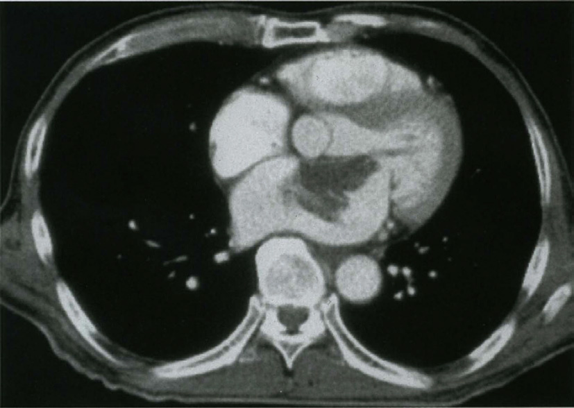
ａ 脳梗塞
ｂ 突然死
ｃ 肺塞栓症
ｄ 上大静脈症候群
ｅ 大動脈弁閉鎖不全症
✅
ａ 脳梗塞 ＋ ｂ 突然死
左房粘液腫→腫瘍塞栓による脳梗塞+弁口完全閉塞による突然死のリスク。
❤️ 左房粘液腫の2つの致命的合併症——塞栓と突然死
左房粘液腫は組織学的には良性だが、放置すれば致命的という点で「良性腫瘍」の常識が通用しない。理由は2つ——「飛ぶ」ことと「詰まる」ことである。| 合併症 | 機序 | 臨床像 |
|---|---|---|
| 塞栓症（30〜40%） | 脆い腫瘍片・表面の血栓が剥離して体循環へ | 脳梗塞（最多）・一過性黒内障・網膜動脈閉塞・腎梗塞・脾梗塞・急性下肢動脈閉塞 |
| 弁口閉塞（50%） | 有茎性の腫瘤が僧帽弁口へはまり込む | 労作時呼吸困難・起坐呼吸・体位性の失神・突然死 |
| 全身症状（90%） | 腫瘍細胞が産生するインターロイキン6 | 発熱・体重減少・関節痛・貧血・赤沈亢進・高γグロブリン血症 |
塞栓した腫瘍片のその後——粘液腫の塞栓子は「生きた腫瘍組織」なので、詰まった血管の壁へ浸潤して増殖し、腫瘍性動脈瘤〈neoplastic aneurysm〉を形成することがある。これが数か月〜数年後に破裂してくも膜下出血を来すことがあり、原発巣を摘出した後も長期の画像的フォローが推奨される。
診断と治療——診断は心エコー（経胸壁で多くは描出でき、経食道でより詳細に）。造影CT・MRIは付着部位や周囲との関係、他の腫瘍との鑑別に有用。治療は準緊急の外科的摘出で、茎の付着部（心房中隔）ごと切除する——茎を残すと再発する。術中は腫瘍を壊さないよう愛護的に扱う（崩れると術中塞栓を起こす）。
□ 選択肢の検討
| 選択肢 | 解説 |
|---|---|
| ◯ ａ 脳梗塞 | これが正解。本例は①1か月前からの労作時息切れ ②心尖部に2/6度の拡張期雑音を聴取するが、体位によっては聴取されない ③胸部造影CTが提示されている——左房粘液腫である。粘液腫は表面が脆く、腫瘍片や表面に付着した血栓が容易に剥離して血流に乗る。左房にある腫瘍なので、剥がれた塞栓子は左房 → 左室 → 大動脈 → 体循環へ流れ、脳へ最も飛びやすい。塞栓症は粘液腫の30〜40%に生じ、そのうち脳が最多で、若年者の原因不明の脳梗塞・一過性黒内障・網膜動脈閉塞の原因となる。塞栓した腫瘍片が血管壁へ浸潤して「腫瘍性動脈瘤」を形成し、遅れてくも膜下出血を来すこともある——摘出後も長期の経過観察が要る理由である。 |
| ◯ ｂ 突然死 | これが正解。左房粘液腫は心房中隔の卵円窩から有茎性に垂れ下がっているため、体位や心周期に応じて僧帽弁口へはまり込む——これが完全に弁口を塞げば、左室への流入が瞬時に途絶えて心拍出がゼロになる。結果として突然の失神・けいれん・心停止＝突然死を来す。「体位によっては雑音が聴取されない」という本例の記載は、まさに腫瘤が動いて弁口との関係が変わることを示している——つまり「いつ完全に詰まってもおかしくない」状態である。これが粘液腫を「診断がついたら準緊急に手術する」疾患としている最大の理由——待機する理由が存在しない。症状が体位で出没する（起立・前屈・寝返りで失神やめまい）ことも特徴的である。 |
| ｃ 肺塞栓症 | 考えにくい。肺塞栓症は右心系から肺動脈へ塞栓子が流れることで起こる——本例の腫瘍は左房にあるので、塞栓子は左心系から体循環へ流れ、肺へは到達しない。塞栓の行き先は「腫瘤のある心腔の下流」で機械的に決まる——左房・左室の病変は体循環へ、右房・右室の病変は肺へ。したがって右房粘液腫であれば肺塞栓が合併症になる（右房粘液腫は全体の約20%）。また右房粘液腫は三尖弁口を塞いで右心不全（頸静脈怒張・肝腫大・浮腫）を来し、卵円孔開存があれば奇異性塞栓を起こす。本例は「心尖部の拡張期雑音」＝僧帽弁口の通過音なので左房である。 |
| ｄ 上大静脈症候群 | 考えにくい。上大静脈症候群は上大静脈が外部から圧迫または内部で閉塞し、上半身からの静脈還流が妨げられる病態である——症状は顔面・頸部・上肢の浮腫、頸部から前胸壁にかけての表在静脈の怒張、頭重感・咳嗽・呼吸困難、前屈や臥位で増悪。原因の大半は悪性腫瘍（肺癌とくに小細胞癌・悪性リンパ腫・縦隔腫瘍）による外部からの圧迫で、他に中心静脈カテーテルやペースメーカリードによる血栓がある。左房粘液腫は心臓の内側の腫瘤であり、心臓の外にある上大静脈を圧迫する位置関係にない。ただし右房粘液腫が巨大化すれば、上大静脈の開口部を閉塞して同様の症状を来しうる——それでも本例は左房である。 |
| ｅ 大動脈弁閉鎖不全症 | 考えにくい。大動脈弁閉鎖不全は大動脈弁尖の変性・二尖弁・感染性心内膜炎による穿孔・大動脈基部の拡大（Marfan症候群・大動脈解離・高安動脈炎）・リウマチ性によって生じる——左房の腫瘤とは解剖学的にも機序的にも関係が無い。また雑音の位置と時相が合わない——大動脈弁閉鎖不全の雑音は「第3肋間胸骨左縁の拡張期灌水様雑音」で、坐位前傾・呼気終末で増強し、体位で消えることはない。本例は「心尖部の拡張期雑音で、体位によっては聴取されない」——部位が心尖部であり、体位で消える。「どこで、いつ、体位でどう変わるか」の3点を押さえれば、雑音から病変の場所が特定できる。 |
🔍 心腔内腫瘤の鑑別——「動くもの」を見分ける
心エコーで心腔内に腫瘤が見えたとき、鑑別は大きく4つである：| 粘液腫 | 血栓 | 疣贅 | 悪性腫瘍 | |
|---|---|---|---|---|
| 好発部位 | 左房（心房中隔の卵円窩） | 左心耳（心房細動）・左室心尖部（梗塞後） | 弁尖（僧帽弁・大動脈弁） | 右房（血管肉腫）・心膜 |
| 付着 | 有茎性（可動性が高い） | 広基性（壁に沿う） | 弁尖に付着し弁の動きに従う | 広基性・浸潤性 |
| 背景 | なし（散発性またはCarney複合） | 心房細動・心筋梗塞・低心機能 | 発熱・菌血症・弁膜症 | 全身症状・他臓器転移 |
| 随伴所見 | IL-6による全身炎症 | — | 弁破壊・逆流 | 心嚢液（血性）・浸潤 |
| 治療 | 外科的摘出 | 抗凝固療法 | 抗菌薬（±手術） | 予後不良。化学療法・放射線 |
心臓腫瘍の全体像：
【原発性・良性（約75%）】——粘液腫（成人で最多）・乳頭状線維弾性腫（弁に付着し塞栓を起こす）・脂肪腫・横紋筋腫（小児で最多。結節性硬化症に合併）・線維腫
【原発性・悪性（約25%）】——血管肉腫（右房に好発。成人の原発性悪性で最多）・横紋筋肉腫・悪性リンパ腫（免疫不全者）
【転移性】——原発性の20〜40倍多い。肺癌・乳癌・悪性黒色腫・悪性リンパ腫・白血病。多くは心膜に播種して心嚢液貯留として現れる
小児で心臓腫瘍を見たら横紋筋腫を疑い、結節性硬化症（皮膚の白斑・顔面血管線維腫・てんかん・知的障害）を探す——横紋筋腫は自然退縮することが多く、無症状なら経過観察でよいという点も重要である。
乳頭状線維弾性腫〈papillary fibroelastoma〉は大動脈弁・僧帽弁に付着する小さな有茎性の良性腫瘍で、可動性が高く塞栓（脳梗塞・冠動脈塞栓）を起こすため、1cm以上や可動性が高いものは摘出する。
🎯 国試ポイント
① 左房粘液腫の合併症は「塞栓（脳梗塞）」と「弁口閉塞（突然死）」——本問の2つの正解。② 体位で聴取されなくなる拡張期雑音＝可動性腫瘤＝粘液腫。同時に「完全に詰まりうる」ことを示す危険信号。
③ 塞栓の行き先は「腫瘤のある心腔の下流」——左房なら体循環、右房なら肺。左房粘液腫で肺塞栓は起こらない。
④ 診断がついたら準緊急に外科的摘出。茎の付着部（心房中隔）ごと切除する（残すと再発）。
⑤ 塞栓した腫瘍片が血管壁へ浸潤して腫瘍性動脈瘤を作ることがある——術後も長期の画像フォローが必要。
⑥ 心腔内腫瘤の鑑別＝粘液腫（左房・有茎性）／血栓（左心耳・心尖部・広基性）／疣贅（弁尖・発熱）／悪性腫瘍（浸潤性）。
⑦ 原発性心臓腫瘍の75%は良性で成人は粘液腫が最多、小児は横紋筋腫が最多（結節性硬化症に合併し自然退縮する）。
⑧ 原発性悪性の最多は血管肉腫（右房）。転移性は原発性の20〜40倍多い。
⑨ 上大静脈症候群の原因の大半は悪性腫瘍（肺癌・悪性リンパ腫）による外部からの圧迫。
Q.439(100F-23)正答率 94%
32 歳の女性。2 週以上続く37℃台の発熱を主訴に来院した。3 週前に抜歯を行った。体温37.8℃。脈拍84/ 分、整。
Ⅲ音と心尖部を最強点とする3/6 度の全収縮期雑音とを聴取する。血液所見：赤血球320 万、Hb 9.8g/dl、Ht 32％、
白血球9,800、血小板20 万。血液生化学所見：AST 18IU/l、ALT 16IU/l、LD 260IU/l（基準176 ～353）、CK 35IU/l（基準10 ～40）。CRP 7.6mg/dl。心エコー検査で僧帽弁に疣贅を認める。
この疾患に特徴的でないのはどれか。
Ⅲ音と心尖部を最強点とする3/6 度の全収縮期雑音とを聴取する。血液所見：赤血球320 万、Hb 9.8g/dl、Ht 32％、
白血球9,800、血小板20 万。血液生化学所見：AST 18IU/l、ALT 16IU/l、LD 260IU/l（基準176 ～353）、CK 35IU/l（基準10 ～40）。CRP 7.6mg/dl。心エコー検査で僧帽弁に疣贅を認める。
この疾患に特徴的でないのはどれか。
ａ 黄色腫
ｂ 爪下線状出血斑
ｃ Osler 結節
ｄ Roth 斑
ｅ 脾 腫
✅
ａ 黄色腫
IE（僧帽弁疣贅）の所見でない：黄色腫は高脂血症・家族性高コレステロール血症の皮膚所見。
❤️ 感染性心内膜炎の古典的末梢徴候——全身を診る
感染性心内膜炎は「心臓の病気」ではなく「血流に乗って全身を侵す全身疾患」である。だからこそ、聴診器を胸に当てるだけでなく、手指・爪・手掌・足底・眼瞼結膜・眼底・脾を診ることが診断につながる。| 所見 | 部位 | 痛み | 機序 |
|---|---|---|---|
| Osler結節 | 指趾の腹側 | あり | 免疫複合体（免疫学的現象） |
| Janeway病変 | 手掌・足底 | なし | 微小塞栓（血管現象） |
| 爪下線状出血斑 | 爪床 | なし | 微小塞栓（血管現象） |
| Roth斑 | 網膜 | — | 免疫複合体（免疫学的現象） |
| 眼球結膜の点状出血 | 結膜 | なし | 微小塞栓（血管現象） |
| 脾腫 | — | — | 細網内皮系の反応性腫大 |
| ばち指 | 指趾 | — | 長期の慢性経過 |
| 糸球体腎炎 | 腎 | — | 免疫複合体（免疫学的現象） |
本例の所見を読む——①3週前の抜歯（口腔内常在菌の入り口） ②2週以上続く37℃台の発熱（亜急性の経過） ③Ⅲ音と心尖部最強点の3/6度の全収縮期雑音＝僧帽弁閉鎖不全 ④Hb 9.8g/dLの貧血（慢性炎症性） ⑤CRP 7.6mg/dL ⑥心エコーで僧帽弁の疣贅。Ⅲ音の存在は、僧帽弁逆流による左室への容量負荷が既にあることを示す——心不全へ向かいつつある徴候である。亜急性心内膜炎〈SBE〉の典型で、起炎菌は緑色連鎖球菌が最も考えやすい。
□ 選択肢の検討
| 選択肢 | 解説 |
|---|---|
| ◯ ａ 黄色腫 | これが正解＝特徴的でない。黄色腫〈xanthoma〉は脂質（コレステロールを含んだ泡沫細胞）が皮膚や腱に沈着してできる黄色調の隆起で、脂質異常症の皮膚所見である——感染性心内膜炎とはまったく関係が無い。代表的なのは①アキレス腱黄色腫（家族性高コレステロール血症に特徴的） ②眼瞼黄色腫〈xanthelasma〉 ③手掌線条黄色腫（Ⅲ型高脂血症に特異的） ④発疹性黄色腫（高トリグリセリド血症） ⑤結節性黄色腫（肘・膝の伸側）。とくにアキレス腱黄色腫は家族性高コレステロール血症の診断基準の一項目で、厚さ9mm以上（エックス線軟線撮影）を陽性とする。本例に脂質異常を示す所見は無く、貧血とCRP上昇という炎症のパターンである。 |
| ｂ 爪下線状出血斑 | 特徴的である。爪下線状出血斑〈splinter hemorrhage〉は爪床に生じる、爪の伸びる方向に沿った1〜3mmの線状の暗赤色出血である——疣贅からの微小塞栓が爪床の毛細血管を閉塞して生じる血管現象とされる。感染性心内膜炎の古典的な末梢徴候の一つで、Osler結節・Janeway病変・Roth斑と並んで問われる。ただし特異度は高くない——外傷（最も多い）・血管炎・抗リン脂質抗体症候群・爪乾癬・強皮症でも見られる。外傷性のものは遠位（爪先寄り）に多く、疾患に伴うものは近位（爪根寄り）に多いとされる。「爪を診る」ことは、ばち指・スプーン爪・爪甲白斑と合わせて、身体診察の基本である。 |
| ｃ Osler 結節 | 特徴的である。Osler結節は指趾の腹側（指腹）に生じる有痛性の紅色結節で、修正Duke基準の小基準（免疫学的現象）に含まれる——免疫複合体が細動脈に沈着して血管炎を起こすものとされる（微小塞栓の要素も指摘される）。数mm大・有痛性・数時間から数日で消退するのが特徴で、「痛い」ことが最大の手がかりである。本例は3週前の抜歯を契機とする2週間以上の亜急性経過で、免疫複合体が形成される時間が十分にあり、免疫学的現象が揃いやすい。対比すべきJaneway病変は手掌・足底の無痛性の出血性斑（血管現象）——Osler＝有痛（Ouch）・指腹・免疫／Janeway＝無痛・手掌足底・塞栓。 |
| ｄ Roth 斑 | 特徴的である。Roth斑〈Roth spot〉は白色の中心を持つ網膜出血で、修正Duke基準の小基準（免疫学的現象）に含まれる——白色の中心はフィブリンと血小板の塊、あるいは虚血による神経線維の軸索腫脹と考えられている。眼底鏡さえあればベッドサイドで確認できる所見で、「原因不明の発熱では眼底を診る」という古典的な教えにつながる。ただしRoth斑はIEに特異的ではない——白血病・重症貧血・糖尿病網膜症・高血圧・膠原病・多発性骨髄腫・シェイクンベビー症候群でも見られる。それでも「発熱＋心雑音＋Roth斑」という組み合わせであれば、IEの可能性は極めて高くなる。 |
| ｅ 脾 腫 | 特徴的である。脾腫は感染性心内膜炎の約30%に認められる古典的所見である——持続する菌血症に対する細網内皮系の反応性の腫大が主体で、亜急性の経過が長いほど出現しやすい。なお脾に関してはもう一つ「脾梗塞」があり、こちらは疣贅の塞栓による血管現象で、左側腹部痛・左肩への放散痛を伴う。まれに脾膿瘍を形成し、抗菌薬に反応しない持続する発熱の原因となる——この場合はドレナージや脾摘が必要になる。「抗菌薬を適切に投与しても解熱しないIE」を見たら、弁輪膿瘍とともに脾膿瘍を探す。本例は3週間の亜急性経過で、脾腫が出ていておかしくない。 |
🔍 黄色腫と脂質異常症——「見た目でわかる」高脂血症
本問の誤答選択肢である黄色腫は、それ自体が国試で頻出のテーマなので、この機会に整理しておきたい。| 黄色腫の種類 | 部位 | 示唆する病態 |
|---|---|---|
| アキレス腱黄色腫 | アキレス腱の肥厚 | 家族性高コレステロール血症（診断基準の一項目・厚さ9mm以上） |
| 手背・肘・膝の腱黄色腫 | 伸側の腱 | 家族性高コレステロール血症 |
| 眼瞼黄色腫〈xanthelasma〉 | 上眼瞼の内眼角側 | 高コレステロール血症（正脂血症でも出る） |
| 手掌線条黄色腫 | 手掌のしわに沿った黄色の線 | Ⅲ型高脂血症（家族性Ⅲ型・アポE2/E2）に特異的 |
| 発疹性黄色腫 | 体幹・四肢伸側の小丘疹が多発 | 高トリグリセリド血症（1000mg/dL超）。急性膵炎のリスク |
| 結節性黄色腫 | 肘・膝・臀部 | 高コレステロール血症 |
角膜輪〈corneal arcus〉も併せて押さえる——角膜辺縁の白い輪で、高齢者では生理的（老人環）だが、45歳未満で見られたら脂質異常症を疑う。
本問の構造を振り返る——4つの選択肢はいずれもIEの古典的末梢徴候で、1つだけ「まったく別の疾患群の皮膚所見」が混ぜられている。「この所見はどの疾患のものか」を一つずつ帰属させられれば、迷いなく答えが出る。
🎯 国試ポイント
① 黄色腫は脂質異常症の皮膚所見でIEとは無関係。IEの末梢徴候は爪下線状出血斑・Osler結節・Roth斑・Janeway病変・脾腫。② Osler結節＝指腹・有痛・免疫学的現象／Janeway病変＝手掌足底・無痛・血管現象。
③ Roth斑＝白色の中心を持つ網膜出血（免疫学的現象）。IEに特異的ではなく白血病・重症貧血でも出る。
④ 脾腫はIEの約30%。脾梗塞（左側腹部痛）・脾膿瘍（抗菌薬不応の発熱）も押さえる。
⑤ 末梢徴候の頻度は現在10〜25%——無いことでIEを否定してはいけない。
⑥ アキレス腱黄色腫は家族性高コレステロール血症の診断基準（厚さ9mm以上）。手掌線条黄色腫はⅢ型高脂血症に特異的。
⑦ 発疹性黄色腫は高トリグリセリド血症（1000mg/dL超）で、急性膵炎のリスクを伴う。
⑧ 家族性高コレステロール血症の診断＝LDL 180mg/dL以上・腱黄色腫・家族歴の3項目中2項目。ヘテロ接合体は約300人に1人。
⑨ 抜歯後の亜急性の発熱＋僧帽弁の疣贅＝緑色連鎖球菌によるSBE。Ⅲ音は容量負荷（僧帽弁逆流）を示す。
Q.440(100I-18)📷 画像正答率 99%
40 歳の男性。1 週前からの39℃の発熱を主訴に来院した。以前から心雑音を指摘されていた。1 か月前に抜歯の既往がある。身長174cm、体重60kg。体温37.6℃。呼吸数18/ 分。脈拍92/ 分、整。血圧134/78mmHg。眼瞼結膜に貧血を認めない。心尖部に汎収縮期雑音を聴取する。心エコー図を示す。
この患者で予想される検査結果はどれか。
この患者で予想される検査結果はどれか。

ａ 血清鉄増加
ｂ CRP 陰性
ｃ 血液培養陽性
ｄ ガンマグロブリン減少
ｅ クレアチンキナーゼ増加
✅
ｃ 血液培養陽性
IE（抜歯後+心雑音+疣贅）→起炎菌（S.viridans等）による菌血症→血液培養陽性。
❤️ 感染性心内膜炎の検査所見を一枚の絵にする
感染性心内膜炎の検査所見は、「持続する菌血症」と「それに対する慢性の免疫応答」という2つの軸から、すべて導ける。| 検査 | 所見 | 機序 |
|---|---|---|
| 血液培養 | 陽性（複数セットすべてで同じ菌） | 疣贅から絶えず菌が放出される持続性菌血症 |
| CRP・赤沈 | 上昇 | IL-6による肝臓での急性期蛋白産生 |
| 白血球 | 増加（好中球優位）。亜急性では正常のことも | 細菌感染への反応 |
| ヘモグロビン | 低下（正球性正色素性） | ヘプシジンによる鉄利用障害＝慢性疾患に伴う貧血 |
| 血清鉄・TIBC | ともに低下、フェリチンは正常〜高値 | 鉄を隠す生体防御 |
| γグロブリン | 増加（多クローン性） | B細胞の慢性刺激 |
| リウマトイド因子 | 40〜50%で陽性 | 免疫複合体の形成。小基準にも含まれる |
| 補体 | 低下することがある | 免疫複合体による消費 |
| 尿 | 血尿・蛋白尿 | 免疫複合体性糸球体腎炎または腎梗塞 |
| CK・トロポニン | 通常は正常 | 侵されるのは弁であり心筋ではない |
本例の背景を読む——「以前から心雑音を指摘されていた」という記載が重要である。基礎に弁膜症（僧帽弁閉鎖不全・僧帽弁逸脱・二尖弁など）があると、逆流ジェットが心内膜を傷つけ、そこにフィブリンと血小板が沈着する（非細菌性血栓性心内膜炎）。この「準備された足場」に、抜歯による菌血症で細菌が付着して増殖する——これがIEの発症の3段階である。「基礎心疾患＋菌血症の契機」が揃った病歴を見たら、IEを最優先で疑う。
□ 選択肢の検討
| 選択肢 | 解説 |
|---|---|
| ａ 血清鉄増加 | 誤り——血清鉄はむしろ低下する。本例のような持続する感染では慢性疾患に伴う貧血〈anemia of chronic disease〉が生じる——機序は炎症性サイトカイン（とくにインターロイキン6）が肝臓でヘプシジンを誘導し、ヘプシジンが細胞膜の鉄輸送体フェロポルチンを分解することによる。その結果、①腸管からの鉄吸収が抑えられ ②マクロファージに取り込まれた鉄が血中へ放出されなくなる——体内に鉄はあるのに使えない状態になる。検査所見は「血清鉄低下・総鉄結合能〈TIBC〉低下・フェリチン正常〜高値」で、鉄欠乏性貧血（血清鉄低下・TIBC上昇・フェリチン低下）とは明確に区別できる。感染に対する生体防御という意味もある——細菌も増殖に鉄を必要とするため、鉄を隠す〈nutritional immunity〉。 |
| ｂ CRP 陰性 | 誤り——CRPは陽性（上昇）になる。CRP〈C反応性蛋白〉は炎症性サイトカイン（IL-6）の刺激で肝臓が産生する代表的な急性期蛋白である——細菌感染では顕著に上昇し、感染性心内膜炎でも例外ではない。CRPは炎症開始後6〜8時間で上昇を始め、48時間前後でピークに達し、半減期が約19時間と短いため、炎症が治まると速やかに低下する。この「反応が速い」性質により、IEの治療効果判定に繰り返し測定される——適切な抗菌薬で下がり始めるのが通常で、下がらなければ膿瘍・耐性菌・薬剤熱を疑う。対照的に赤沈は反応が遅く、改善も遅れる（フィブリノゲンとγグロブリンを反映するため）。両者を併用すると経過が立体的に見える。 |
| ◯ ｃ 血液培養陽性 | これが正解。本例は①1か月前の抜歯（口腔内常在菌による菌血症の入り口） ②以前から指摘されていた心雑音（基礎心疾患＝疣贅が付きやすい弁） ③1週前からの39℃の発熱 ④心尖部の汎収縮期雑音＝僧帽弁閉鎖不全 ⑤心エコー図で疣贅——感染性心内膜炎である。IEの菌血症は「持続性」である点が最大の特徴で、疣贅の表面から絶えず菌が血流へ放出されている。したがって血液培養はいつ採取しても陽性になりやすく、複数セットのすべてが同じ菌で陽性になる。これは修正Duke基準の大基準であり、同時に「コンタミネーションとの区別」の根拠にもなっている。本例の背景から予想される起炎菌は口腔内常在の緑色連鎖球菌で、抗菌薬投与前に部位を変えて3セット採取する。 |
| ｄ ガンマグロブリン減少 | 誤り——ガンマグロブリンはむしろ増加する。持続する菌血症はB細胞を慢性的に刺激し、多クローン性の免疫グロブリン産生を促す——その結果、血清蛋白電気泳動でγグロブリン分画が幅広く増加する（多クローン性高γグロブリン血症）。これは慢性感染症・自己免疫疾患・肝硬変に共通する所見で、単クローン性のM蛋白（多発性骨髄腫・原発性マクログロブリン血症）とは電気泳動の波形で区別できる。IEではこの免疫応答の産物として、リウマトイド因子が40〜50%で陽性になり、免疫複合体が沈着してOsler結節・Roth斑・糸球体腎炎（免疫学的現象）を来す。つまり「γグロブリン増加」はIEの病態そのものと直結した所見である。減少するのは、原発性免疫不全症・ネフローゼ症候群・蛋白漏出性胃腸症である。 |
| ｅ クレアチンキナーゼ増加 | 誤り——クレアチンキナーゼは通常上昇しない。クレアチンキナーゼ〈CK〉は骨格筋・心筋・平滑筋・脳に含まれる酵素で、これらの細胞が壊れると血中へ逸脱する——感染性心内膜炎で侵されるのは「弁（心内膜）」であって「心筋」ではないため、CKは通常上昇しない。これがIEと心筋炎・心筋梗塞を分ける重要な点である。ただし例外的にCKやトロポニンが上がる状況がある——①疣贅が冠動脈へ塞栓して心筋梗塞を起こした場合 ②弁輪膿瘍が心筋へ波及した場合 ③敗血症性の心筋障害。逆に言えば、IEの経過中にトロポニンやCKが上昇したら「合併症が起きた」サインとして精査する。なおCK-MBは心筋、CK-MMは骨格筋、CK-BBは脳のアイソザイムである。 |
🔍 急性期反応とは何か——CRP・赤沈・鉄・アルブミン
炎症が起こると、肝臓での蛋白合成のパターンが一斉に切り替わる。これを急性期反応〈acute phase response〉と呼ぶ。中心的な指令はサイトカイン（IL-6・IL-1・TNF-α）である。| 上昇する（陽性急性期蛋白） | 低下する（陰性急性期蛋白） |
|---|---|
| CRP・血清アミロイドA | アルブミン |
| フィブリノゲン | トランスフェリン（＝総鉄結合能の低下） |
| フェリチン | トランスサイレチン（プレアルブミン） |
| ハプトグロビン・セルロプラスミン | レチノール結合蛋白 |
| 補体（C3・C4）・α1アンチトリプシン | — |
| ヘプシジン | — |
CRPと赤沈の使い分け：
| CRP | 赤沈〈ESR〉 | |
|---|---|---|
| 反映するもの | 肝臓が産生する急性期蛋白そのもの | フィブリノゲンとγグロブリンによる赤血球の連銭形成 |
| 上昇の速さ | 6〜8時間で上昇、48時間でピーク | 数日かけて上昇 |
| 低下の速さ | 速い（半減期約19時間） | 遅い（数週間かかることも） |
| 影響を受ける因子 | 比較的少ない | 貧血・多血症・高齢・妊娠・低アルブミン血症 |
| 得意な場面 | 急性期の変化を追う | 慢性炎症の存在を示す（側頭動脈炎・リウマチ性多発筋痛症） |
🎯 国試ポイント
① 感染性心内膜炎では血液培養が陽性——疣贅から絶えず菌が放出される持続性菌血症だから。② 慢性炎症の貧血＝血清鉄低下・総鉄結合能低下・フェリチン正常〜高値。鉄欠乏性貧血（TIBC上昇・フェリチン低下）と区別。
③ 機序はIL-6がヘプシジンを誘導しフェロポルチンを分解——鉄吸収と鉄放出の両方が止まる。細菌から鉄を隠す防御でもある。
④ γグロブリンは多クローン性に増加。リウマトイド因子が40〜50%で陽性になり、免疫複合体が末梢徴候を作る。
⑤ IEでCK・トロポニンは通常上昇しない——侵されるのは弁であって心筋ではない。上昇したら冠動脈塞栓・弁輪膿瘍を疑う。
⑥ CRPは6〜8時間で上昇し半減期19時間で速く下がる／赤沈は上昇も低下も遅い。併用すると経過が立体的に見える。
⑦ 陰性急性期蛋白＝アルブミン・トランスフェリン・トランスサイレチン。炎症下のアルブミンを栄養指標にしない。
⑧ フェリチンは急性期蛋白でもある——炎症下では鉄欠乏を隠す。
⑨ 「基礎心疾患（既知の心雑音）＋菌血症の契機（抜歯）」が揃った発熱はIEを最優先で疑う。
Q.441(99A-22)📷 画像3択
57歳の男性。労作時呼吸困難のため来院した。1 か月前から労作時の呼吸困難と全身倦怠感とを自覚するようになった。既往歴に特記すべきことはない。意識は清明。身長176cm、体重75kg。脈拍80/ 分、整。血圧120/80mmHg。
拡張期心雑音2/6 度を聴取する。尿所見：蛋白（－）、糖（－）。血液所見：赤沈79mm/1 時間、赤血球423 万、Hb13.3g/dl、Ht 40％、白血球5,600、血小板26 万。CRP 3.8mg/dl。心エコー図を示す。
この疾患について正しいのはどれか。3 つ選べ。
拡張期心雑音2/6 度を聴取する。尿所見：蛋白（－）、糖（－）。血液所見：赤沈79mm/1 時間、赤血球423 万、Hb13.3g/dl、Ht 40％、白血球5,600、血小板26 万。CRP 3.8mg/dl。心エコー図を示す。
この疾患について正しいのはどれか。3 つ選べ。

ａ 左房内に発生する頻度が高い。
ｂ 保存的治療が第一選択である。
ｃ 組織学的には悪性が多い。
ｄ 体位によって症状が変化する。
ｅ 合併症に塞栓症がある。
✅
ａ 左房内に発生する頻度が高い。 ＋ ｄ 体位によって症状が変化する。 ＋ ｅ 合併症に塞栓症がある。
左房粘液腫。約75%が左房の卵円窩から有茎性に発生し、体位で僧帽弁口を塞ぐため症状が変動する。組織学的には良性だが塞栓症と突然死のリスクがあり、診断がつけば外科的摘出が第一選択。
❤️ 心臓粘液腫の疫学・病理・治療
心臓粘液腫は成人の原発性心臓腫瘍で最も多い。原発性心臓腫瘍そのものが剖検例の0.02%程度と稀だが、国試では繰り返し問われる。| 粘液腫の要点 | |
|---|---|
| 部位 | 左房 約75%（心房中隔の卵円窩から有茎性）／右房 約20%／心室 稀 |
| 年齢・性 | 30〜60歳、女性にやや多い |
| 組織像 | 粘液様基質＋星芒状・紡錘形の粘液腫細胞。良性（転移せず浸潤しない） |
| 肉眼像 | ゼラチン様で脆く、表面は不整。しばしば血栓を伴う |
| 診断 | 心エコー（経胸壁で多くは描出可・経食道でより詳細）／造影CT・MRIで付着部と鑑別 |
| 治療 | 準緊急の外科的摘出（付着部の心房中隔ごと切除） |
| 予後 | 摘出により根治。手術死亡率は低い |
| 再発 | 散発例で1〜3%／Carney複合など家族性では10〜20% |
①全身症状——腫瘍細胞が産生するインターロイキン6〈IL-6〉により、発熱・体重減少・全身倦怠感・関節痛・レイノー現象・貧血・赤沈亢進・CRP上昇・高γグロブリン血症を来す。本例の「赤沈79mm/1時間」という著明な亢進はこれを反映している。膠原病や感染性心内膜炎そっくりの不明熱として現れ、摘出すればすべて速やかに正常化する。
②閉塞症状——拡張期に腫瘤が僧帽弁口へはまり込み、僧帽弁狭窄症に似た血行動態を作る。労作時呼吸困難・起坐呼吸・失神。体位で変動するのが決定的な特徴。拡張早期の通過音＝tumor plopが聴取されることがある。
③塞栓症状——左房なら体循環（脳が最多）、右房なら肺。
Carney複合——常染色体顕性遺伝（PRKAR1A遺伝子変異）で、皮膚の色素斑・内分泌腫瘍（Cushing症候群・末端肥大症）・多発性の心臓粘液腫を来す。若年発症・多発・心房以外の部位・術後の再発があれば疑う。
□ 選択肢の検討
| 選択肢 | 解説 |
|---|---|
| ◯ ａ 左房内に発生する頻度が高い。 | これが正解。心臓粘液腫は約75%が左房に発生し、次いで右房が約20%、心室は稀である——好発部位は左房の心房中隔、とくに卵円窩の縁で、ここから有茎性に垂れ下がる。本例は①1か月前からの労作時呼吸困難（腫瘤による僧帽弁口の間欠的閉塞＝肺うっ血） ②拡張期心雑音2/6度 ③赤沈79mm/1時間という著明な亢進とCRP 3.8mg/dL（インターロイキン6による全身炎症） ④尿所見と血算がほぼ正常 ⑤心エコー図が提示されている——左房粘液腫である。成人の原発性心臓腫瘍で最多（良性のほぼ半数）で、30〜60歳の女性にやや多い。「不明熱様の全身炎症＋拡張期雑音＋労作時呼吸困難」の三点セットで想起する。 |
| ｂ 保存的治療が第一選択である。 | 誤り——第一選択は外科的摘出である。粘液腫に対する内科的治療は存在しない——薬で小さくなることはなく、経過観察は許されない。理由は2つ：①いつ塞栓を起こすか予測できない（30〜40%に塞栓症が生じ、脳が最多） ②有茎性の腫瘤が僧帽弁口を完全に塞げば心拍出が瞬時に途絶えて突然死する。したがって診断がついたら準緊急に手術する——「良性だから様子を見る」という判断は致命的な誤りになる。手術は人工心肺下に、腫瘍を付着部の心房中隔ごと切除し、欠損部をパッチで閉鎖する。茎を残すと再発するため、正常組織を含めた完全切除が原則である。術中は腫瘍を壊さないよう愛護的に扱う（崩れると術中塞栓を起こす）。 |
| ｃ 組織学的には悪性が多い。 | 誤り——組織学的には良性である。粘液腫は粘液様の基質の中に、星芒状・紡錘形の粘液腫細胞〈lepidic cell〉が散在する組織像を示す良性腫瘍である——転移せず、周囲組織へ浸潤もしない。それにもかかわらず致命的になりうるのは、「悪性度」ではなく「物理的な位置と可動性」が問題だからである——飛べば塞栓、詰まれば突然死。心臓の原発性腫瘍の約75%が良性で、残り25%が悪性。原発性悪性腫瘍で最多なのは血管肉腫（右房に好発）で、診断時にすでに転移していることが多く予後は極めて不良である。「心臓の腫瘍＝悪性」という思い込みを排し、圧倒的に多いのは転移性（原発性の20〜40倍）であることも押さえる。 |
| ◯ ｄ 体位によって症状が変化する。 | これが正解。粘液腫は心房中隔から茎で吊り下がっており、重力と血流の影響で位置が変わる——したがって体位を変えると、腫瘤と僧帽弁口の位置関係が変わり、症状も所見も変動する。具体的には①ある体位でだけ呼吸困難・めまい・失神が出現する ②起立や前屈で症状が誘発される ③雑音や過剰音（tumor plop）が体位で出没する ④日によって所見が違う。「症状も所見も変動する」という性質は、固定した狭窄病変（僧帽弁狭窄症）や弁の逆流では説明できない。この変動性こそが粘液腫を診断へ導く最大の手がかりである。逆に言えば、「体位で変わる」と書かれていない粘液腫の問題はほとんど無い——問題文の中でこの語句を探す習慣を持つとよい。 |
| ◯ ｅ 合併症に塞栓症がある。 | これが正解。塞栓症は粘液腫の30〜40%に生じる主要な合併症である——機序は①腫瘍表面が脆く、腫瘍片が剥離する ②表面に付着した血栓が飛ぶの2つ。左房粘液腫なら塞栓子は体循環へ流れ、脳が最多（脳梗塞・一過性脳虚血発作・一過性黒内障）。他に網膜動脈閉塞・腎梗塞・脾梗塞・腸間膜動脈塞栓・急性下肢動脈閉塞・冠動脈塞栓を来す。右房粘液腫なら肺塞栓となり、卵円孔開存があれば奇異性塞栓を起こす。粘液腫の塞栓子は「生きた腫瘍組織」なので、詰まった血管の壁へ浸潤して腫瘍性動脈瘤を形成し、数か月〜数年後に破裂してくも膜下出血を来すことがある。摘出後も長期の画像的経過観察が推奨される理由である。 |
🔍 心臓腫瘍の全体像と、粘液腫の鑑別疾患
①心臓腫瘍の分類：| 分類 | 代表 | 特徴 |
|---|---|---|
| 原発性・良性（約75%） | 粘液腫（成人で最多） | 左房・有茎性・IL-6産生 |
| 横紋筋腫（小児で最多） | 結節性硬化症に合併。自然退縮するので無症状なら経過観察 | |
| 乳頭状線維弾性腫 | 弁に付着。可動性が高く塞栓を起こすので1cm以上は摘出 | |
| 脂肪腫・線維腫 | 線維腫は小児の心室に多く、不整脈・突然死の原因 | |
| 原発性・悪性（約25%） | 血管肉腫（最多） | 右房に好発。診断時に転移していることが多く予後不良 |
| 横紋筋肉腫・悪性リンパ腫 | 悪性リンパ腫は免疫不全者に | |
| 転移性 | 肺癌・乳癌・悪性黒色腫・悪性リンパ腫・白血病 | 原発性の20〜40倍多い。多くは心膜播種→心嚢液貯留 |
②粘液腫と鑑別すべき疾患：
| 粘液腫 | 僧帽弁狭窄症 | 感染性心内膜炎 | |
|---|---|---|---|
| 雑音 | 拡張期・体位で変動 | 拡張期ランブル・開放音・固定 | 逆流性雑音・固定 |
| 背景 | なし | リウマチ熱の既往 | 歯科処置・弁膜症・人工弁 |
| 心電図 | 正常のことが多い | 僧帽性P波・心房細動 | 正常〜非特異的 |
| 胸部エックス線 | 正常のことが多い | 左房拡大（左第3弓の突出） | 正常 |
| 血液培養 | 陰性 | 陰性 | 陽性 |
| 治療 | 外科的摘出 | 交連切開術・弁置換・バルーン | 抗菌薬（±手術） |
③本例の赤沈79mm/1時間をどう読むか——赤沈の基準値は男性で1時間10mm以下なので、79mmは著明な亢進である。ここまで上がる病態は限られる——悪性腫瘍・膠原病（側頭動脈炎・リウマチ性多発筋痛症）・慢性感染症（結核・骨髄炎・感染性心内膜炎）・多発性骨髄腫・ネフローゼ症候群。本例では血液培養の情報が無いまま「拡張期雑音＋著明な赤沈亢進＋心エコー図」が提示されており、粘液腫を想起させる構成になっている。
🎯 国試ポイント
① 粘液腫は左房が約75%（心房中隔の卵円窩から有茎性）。成人の原発性心臓腫瘍で最多。② 体位によって症状も所見も変動する——有茎性で動くため。粘液腫を診断へ導く最大の手がかり。
③ 合併症は塞栓症（30〜40%・脳が最多）と弁口閉塞による突然死。
④ 組織学的には良性だが、治療は準緊急の外科的摘出——保存的治療は選択肢にならない。
⑤ 付着部の心房中隔ごと切除する（茎を残すと再発）。再発率は散発例1〜3%、Carney複合では10〜20%。
⑥ 三徴＝全身症状（IL-6による発熱・体重減少・赤沈亢進）・閉塞症状・塞栓症状。摘出で全身症状も消える。
⑦ 「拡張期雑音＋不明熱」で血液培養が陰性なら粘液腫、陽性ならIE——最大の分岐点。
⑧ 小児の心臓腫瘍で最多は横紋筋腫（結節性硬化症に合併・自然退縮する）。原発性悪性の最多は血管肉腫（右房）。
⑨ 乳頭状線維弾性腫は弁に付着し塞栓を起こす——1cm以上や可動性が高いものは摘出する。